Δύο μεγεθῶν ἀνίσων ἐκκειμένων, ἐὰν ἀπὸ τοῦ μείζονος ἀφαιρεθῇ μεῖζον ἢ τὸ ἥμισυ καὶ τοῦ καταλειπομένου μεῖζον ἢ τὸ ἥμισυ, καὶ τοῦτο ἀεὶ γίγνηται, λειφθήσεταί τι μέγεθος, ὃ ἔσται ἔλασσον τοῦ ἐκκειμένου ἐλάσσονος μεγέθους.
Ἔστω δύο μεγέθη ἄνισα τὰ ΑΒ, Γ, ὧν μεῖζον τὸ ΑΒ· λέγω, ὅτι, ἐὰν ἀπὸ τοῦ ΑΒ ἀφαιρεθῇ μεῖζον ἢ τὸ ἥμισυ καὶ τοῦ καταλειπομένου μεῖζον ἢ τὸ ἥμισυ, καὶ τοῦτο ἀεὶ γίγνηται, λειφθήσεταί τι μέγεθος, ὃ ἔσται ἔλασσον τοῦ Γ μεγέθους.
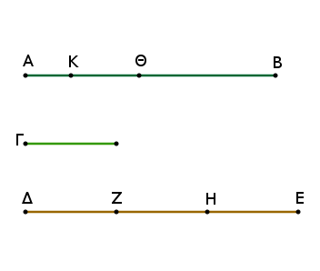
Τὸ Γ γὰρ πολλαπλασιαζόμενον ἔσται ποτὲ τοῦ ΑΒ μεῖζον. πεπολλαπλασιάσθω, καὶ ἔστω τὸ ΔΕ τοῦ μὲν Γ πολλαπλάσιον, τοῦ δὲ ΑΒ μεῖζον, καὶ διῃρήσθω τὸ ΔΕ εἰς τὰ τῷ Γ ἴσα τὰ ΔΖ, ΖΗ, ΗΕ, καὶ ἀφῃρήσθω ἀπὸ μὲν τοῦ ΑΒ μεῖζον ἢ τὸ ἥμισυ τὸ ΒΘ, ἀπὸ δὲ τοῦ ΑΘ μεῖζον ἢ τὸ ἥμισυ τὸ ΘΚ, καὶ τοῦτο ἀεὶ γιγνέσθω, ἕως ἂν αἱ ἐν τῷ ΑΒ διαιρέσεις ἰσοπληθεῖς γένωνται ταῖς ἐν τῷ ΔΕ διαιρέσεσιν.
Ἔστωσαν οὖν αἱ ΑΚ, ΚΘ, ΘΒ διαιρέσεις ἰσοπληθεῖς οὖσαι ταῖς ΔΖ, ΖΗ, ΗΕ· καὶ ἐπεὶ μεῖζόν ἐστι τὸ ΔΕ τοῦ ΑΒ, καὶ ἀφῄρηται ἀπὸ μὲν τοῦ ΔΕ ἔλασσον τοῦ ἡμίσεος τὸ ΕΗ, ἀπὸ δὲ τοῦ ΑΒ μεῖζον ἢ τὸ ἥμισυ τὸ ΒΘ, λοιπὸν ἄρα τὸ ΗΔ λοιποῦ τοῦ ΘΑ μεῖζόν ἐστιν.
καὶ ἐπεὶ μεῖζόν ἐστι τὸ ΗΔ τοῦ ΘΑ, καὶ ἀφῄρηται τοῦ μὲν ΗΔ ἥμισυ τὸ ΗΖ, τοῦ δὲ ΘΑ μεῖζον ἢ τὸ ἥμισυ τὸ ΘΚ, λοιπὸν ἄρα τὸ ΔΖ λοιποῦ τοῦ ΑΚ μεῖζόν ἐστιν. ἴσον δὲ τὸ ΔΖ τῷ Γ· καὶ τὸ Γ ἄρα τοῦ ΑΚ μεῖζόν ἐστιν. ἔλασσον ἄρα τὸ ΑΚ τοῦ Γ.
Καταλείπεται ἄρα ἀπὸ τοῦ ΑΒ μεγέθους τὸ ΑΚ μέγεθος ἔλασσον ὂν τοῦ ἐκκειμένου ἐλάσσονος μεγέθους τοῦ Γ· ὅπερ ἔδει δεῖξαι.-ὁμοίως δὲ δειχθήσεται, κἂν ἡμίση ᾖ τὰ ἀφαιρούμενα.
Ἐὰν δύο μεγεθῶν [ἐκκειμένων] ἀνίσων ἀνθυφαιρουμένου ἀεὶ τοῦ ἐλάσσονος ἀπὸ τοῦ μείζονος τὸ καταλειπόμενον μηδέποτε καταμετρῇ τὸ πρὸ ἑαυτοῦ, ἀσύμμετρα ἔσται τὰ μεγέθη.
Δύο γὰρ μεγεθῶν ὄντων ἀνίσων τῶν ΑΒ, ΓΔ καὶ ἐλάσσονος τοῦ ΑΒ ἀνθυφαιρουμένου ἀεὶ τοῦ ἐλάσσονος ἀπὸ τοῦ μείζονος τὸ περιλειπόμενον μηδέποτε καταμετρείτω τὸ πρὸ ἑαυτοῦ· λέγω, ὅτι ἀσύμμετρά ἐστι τὰ ΑΒ, ΓΔ μεγέθη.
Εἰ γάρ ἐστι σύμμετρα, μετρήσει τι αὐτὰ μέγεθος. μετρείτω, εἰ δυνατόν, καὶ ἔστω τὸ Ε· καὶ τὸ μὲν ΑΒ τὸ ΖΔ καταμετροῦν λειπέτω ἑαυτοῦ ἔλασσον τὸ ΓΖ, τὸ δὲ ΓΖ τὸ ΒΗ καταμετροῦν λειπέτω ἑαυτοῦ ἔλασσον τὸ ΑΗ, καὶ τοῦτο ἀεὶ γινέσθω, ἕως οὗ λειφθῇ τι μέγεθος, ὅ ἐστιν ἔλασσον τοῦ Ε. γεγονέτω, καὶ λελείφθω τὸ ΑΗ ἔλασσον τοῦ Ε.
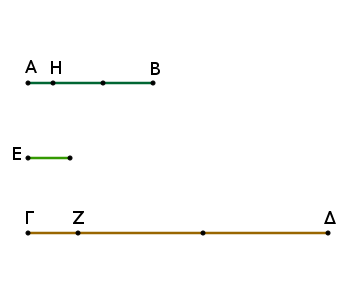
ἐπεὶ οὖν τὸ Ε τὸ ΑΒ μετρεῖ, ἀλλὰ τὸ ΑΒ τὸ ΔΖ μετρεῖ, καὶ τὸ Ε ἄρα τὸ ΖΔ μετρήσει. μετρεῖ δὲ καὶ ὅλον τὸ ΓΔ· καὶ λοιπὸν ἄρα τὸ ΓΖ μετρήσει. ἀλλὰ τὸ ΓΖ τὸ ΒΗ μετρεῖ· καὶ τὸ Ε ἄρα τὸ ΒΗ μετρεῖ. μετρεῖ δὲ καὶ ὅλον τὸ ΑΒ· καὶ λοιπὸν ἄρα τὸ ΑΗ μετρήσει, τὸ μεῖζον τὸ ἔλασσον. ὅπερ ἐστὶν ἀδύνατον. οὐκ ἄρα τὰ ΑΒ, ΓΔ μεγέθη μετρήσει τι μέγεθος· ἀσύμμετρα ἄρα ἐστὶ τὰ ΑΒ, ΓΔ μεγέθη.
Ἐὰν ἄρα δύο μεγεθῶν ἀνίσων, καὶ τὰ ἑξῆς.
Δύο μεγεθῶν συμμέτρων δοθέντων τὸ μέγιστον αὐτῶν κοινὸν μέτρον εὑρεῖν.
Ἔστω τὰ δοθέντα δύο μεγέθη σύμμετρα τὰ ΑΒ, ΓΔ, ὧν ἔλασσον τὸ ΑΒ· δεῖ δὴ τῶν ΑΒ, ΓΔ τὸ μέγιστον κοινὸν μέτρον εὑρεῖν.
Τὸ ΑΒ γὰρ μέγεθος ἤτοι μετρεῖ τὸ ΓΔ ἢ οὔ. εἰ μὲν οὖν μετρεῖ, μετρεῖ δὲ καὶ ἑαυτό, τὸ ΑΒ ἄρα τῶν ΑΒ, ΓΔ κοινὸν μέτρον ἐστίν· καὶ φανερόν, ὅτι καὶ μέγιστον. μεῖζον γὰρ τοῦ ΑΒ μεγέθους τὸ ΑΒ οὐ μετρήσει.
Μὴ μετρείτω δὴ τὸ ΑΒ τὸ ΓΔ. καὶ ἀνθυφαιρουμένου ἀεὶ τοῦ ἐλάσσονος ἀπὸ τοῦ μείζονος, τὸ περιλειπόμενον μετρήσει ποτὲ τὸ πρὸ ἑαυτοῦ διὰ τὸ μὴ εἶναι ἀσύμμετρα τὰ ΑΒ, ΓΔ· καὶ τὸ μὲν ΑΒ τὸ ΕΔ καταμετροῦν λειπέτω ἑαυτοῦ ἔλασσον τὸ ΕΓ, τὸ δὲ ΕΓ τὸ ΖΒ καταμετροῦν λειπέτω ἑαυτοῦ ἔλασσον τὸ ΑΖ, τὸ δὲ ΑΖ τὸ ΓΕ μετρείτω.
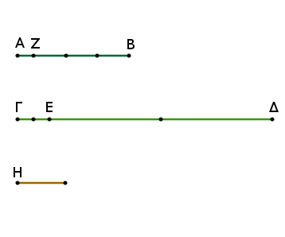
Ἐπεὶ οὖν τὸ ΑΖ τὸ ΓΕ μετρεῖ, ἀλλὰ τὸ ΓΕ τὸ ΖΒ μετρεῖ, καὶ τὸ ΑΖ ἄρα τὸ ΖΒ μετρήσει. μετρεῖ δὲ καὶ ἑαυτό· καὶ ὅλον ἄρα τὸ ΑΒ μετρήσει τὸ ΑΖ. ἀλλὰ τὸ ΑΒ τὸ ΔΕ μετρεῖ· καὶ τὸ ΑΖ ἄρα τὸ ΕΔ μετρήσει. μετρεῖ δὲ καὶ τὸ ΓΕ· καὶ ὅλον ἄρα τὸ ΓΔ μετρεῖ· τὸ ΑΖ ἄρα τῶν ΑΒ, ΓΔ κοινὸν μέτρον ἐστίν.
λέγω δή, ὅτι καὶ μέγιστον. εἰ γὰρ μή, ἔσται τι μέγεθος μεῖζον τοῦ ΑΖ, ὃ μετρήσει τὰ ΑΒ, ΓΔ. ἔστω τὸ Η. ἐπεὶ οὖν τὸ Η τὸ ΑΒ μετρεῖ, ἀλλὰ τὸ ΑΒ τὸ ΕΔ μετρεῖ, καὶ τὸ Η ἄρα τὸ ΕΔ μετρήσει. μετρεῖ δὲ καὶ ὅλον τὸ ΓΔ· καὶ λοιπὸν ἄρα τὸ ΓΕ μετρήσει τὸ Η. ἀλλὰ τὸ ΓΕ τὸ ΖΒ μετρεῖ· καὶ τὸ Η ἄρα τὸ ΖΒ μετρήσει. μετρεῖ δὲ καὶ ὅλον τὸ ΑΒ, καὶ λοιπὸν τὸ ΑΖ μετρήσει, τὸ μεῖζον τὸ ἔλασσον· ὅπερ ἐστὶν ἀδύνατον. οὐκ ἄρα μεῖζόν τι μέγεθος τοῦ ΑΖ τὰ ΑΒ, ΓΔ μετρήσει· τὸ ΑΖ ἄρα τῶν ΑΒ, ΓΔ τὸ μέγιστον κοινὸν μέτρον ἐστίν.
Δύο ἄρα μεγεθῶν συμμέτρων δοθέντων τῶν ΑΒ, ΓΔ τὸ μέγιστον κοινὸν μέτρον ηὕρηται· ὅπερ ἔδει δεῖξαι.
Πόρισμα Ἐκ δὴ τούτου φανερόν, ὅτι, ἐὰν μέγεθος δύο μεγέθη μετρῇ, καὶ τὸ μέγιστον αὐτῶν κοινὸν μέτρον μετρήσει.
Τριῶν μεγεθῶν συμμέτρων δοθέντων τὸ μέγιστον αὐτῶν κοινὸν μέτρον εὑρεῖν.
Ἔστω τὰ δοθέντα τρία μεγέθη σύμμετρα τὰ Α, Β, Γ· δεῖ δὴ τῶν Α, Β, Γ τὸ μέγιστον κοινὸν μέτρον εὑρεῖν.
Εἰλήφθω γὰρ δύο τῶν Α, Β τὸ μέγιστον κοινὸν μέτρον, καὶ ἔστω τὸ Δ· τὸ δὴ Δ τὸ Γ ἤτοι μετρεῖ ἢ οὔ [μετρεῖ]. μετρείτω πρότερον. ἐπεὶ οὖν τὸ Δ τὸ Γ μετρεῖ, μετρεῖ δὲ καὶ τὰ Α, Β, τὸ Δ ἄρα τὰ Α, Β, Γ μετρεῖ· τὸ Δ ἄρα τῶν Α, Β, Γ κοινὸν μέτρον ἐστίν. καὶ φανερόν, ὅτι καὶ μέγιστον· μεῖζον γὰρ τοῦ Δ μεγέθους τὰ Α, Β οὐ μετρεῖ.
Μὴ μετρείτω δὴ τὸ Δ τὸ Γ. λέγω πρῶτον, ὅτι σύμμετρά ἐστι τὰ Γ, Δ. ἐπεὶ γὰρ σύμμετρά ἐστι τὰ Α, Β, Γ, μετρήσει τι αὐτὰ μέγεθος, ὃ δηλαδὴ καὶ τὰ Α, Β μετρήσει· ὥστε καὶ τὸ τῶν Α, Β μέγιστον κοινὸν μέτρον τὸ Δ μετρήσει. μετρεῖ δὲ καὶ τὸ Γ· ὥστε τὸ εἰρημένον μέγεθος μετρήσει τὰ Γ, Δ· σύμμετρα ἄρα ἐστὶ τὰ Γ, Δ. εἰλήφθω οὖν αὐτῶν τὸ μέγιστον κοινὸν μέτρον, καὶ ἔστω τὸ Ε.
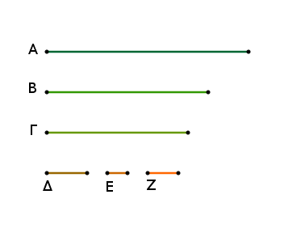
ἐπεὶ οὖν τὸ Ε τὸ Δ μετρεῖ, ἀλλὰ τὸ Δ τὰ Α, Β μετρεῖ, καὶ τὸ Ε ἄρα τὰ Α, Β μετρήσει. μετρεῖ δὲ καὶ τὸ Γ. τὸ Ε ἄρα τὰ Α, Β, Γ μετρεῖ· τὸ Ε ἄρα τῶν Α, Β, Γ κοινόν ἐστι μέτρον.
λέγω δή, ὅτι καὶ μέγιστον. εἰ γὰρ δυνατόν, ἔστω τι τοῦ Ε μεῖζον μέγεθος τὸ Ζ, καὶ μετρείτω τὰ Α, Β, Γ. καὶ ἐπεὶ τὸ Ζ τὰ Α, Β, Γ μετρεῖ, καὶ τὰ Α, Β ἄρα μετρήσει καὶ τὸ τῶν Α, Β μέγιστον κοινὸν μέτρον μετρήσει. τὸ δὲ τῶν Α, Β μέγιστον κοινὸν μέτρον ἐστὶ τὸ Δ· τὸ Ζ ἄρα τὸ Δ μετρεῖ. μετρεῖ δὲ καὶ τὸ Γ· τὸ Ζ ἄρα τὰ Γ, Δ μετρεῖ· καὶ τὸ τῶν Γ, Δ ἄρα μέγιστον κοινὸν μέτρον μετρήσει τὸ Ζ. ἔστι δὲ τὸ Ε· τὸ Ζ ἄρα τὸ Ε μετρήσει, τὸ μεῖζον τὸ ἔλασσον· ὅπερ ἐστὶν ἀδύνατον. οὐκ ἄρα μεῖζόν τι τοῦ Ε μεγέθους [μέγεθος] τὰ Α, Β, Γ μετρεῖ· τὸ Ε ἄρα τῶν Α, Β, Γ τὸ μέγιστον κοινὸν μέτρον ἐστίν, ἐὰν μὴ μετρῇ τὸ Δ τὸ Γ, ἐὰν δὲ μετρῇ, αὐτὸ τὸ Δ.
Τριῶν ἄρα μεγεθῶν συμμέτρων δοθέντων τὸ μέγιστον κοινὸν μέτρον ηὕρηται [ὅπερ ἔδει δεῖξαι].
Πόρισμα Ἐκ δὴ τούτου φανερόν, ὅτι, ἐὰν μέγεθος τρία μεγέθη μετρῇ, καὶ τὸ μέγιστον αὐτῶν κοινὸν μέτρον μετρήσει. Ὁμοίως δὴ καὶ ἐπὶ πλειόνων τὸ μέγιστον κοινὸν μέτρον ληφθήσεται, καὶ τὸ πόρισμα προχωρήσει. ὅπερ ἔδει δεῖξαι.
Τὰ σύμμετρα μεγέθη πρὸς ἄλληλα λόγον ἔχει, ὃν ἀριθμὸς πρὸς ἀριθμόν.
Ἔστω σύμμετρα μεγέθη τὰ Α, Β· λέγω, ὅτι τὸ Α πρὸς τὸ Β λόγον ἔχει, ὃν ἀριθμὸς πρὸς ἀριθμόν.
Ἐπεὶ γὰρ σύμμετρά ἐστι τὰ Α, Β, μετρήσει τι αὐτὰ μέγεθος. μετρείτω, καὶ ἔστω τὸ Γ. καὶ ὁσάκις τὸ Γ τὸ Α μετρεῖ τοσαῦται μονάδες ἔστωσαν ἐν τῷ Δ, ὁσάκις δὲ τὸ Γ τὸ Β μετρεῖ, τοσαῦται μονάδες ἔστωσαν ἐν τῷ Ε.
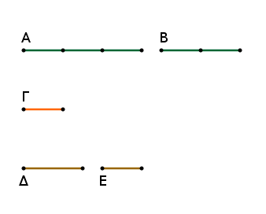
Ἐπεὶ οὖν τὸ Γ τὸ Α μετρεῖ κατὰ τὰς ἐν τῷ Δ μονάδας, μετρεῖ δὲ καὶ ἡ μονὰς τὸν Δ κατὰ τὰς ἐν αὐτῷ μονάδας, ἰσάκις ἄρα ἡ μονὰς τὸν Δ μετρεῖ ἀριθμὸν καὶ τὸ Γ μέγεθος τὸ Α· ἔστιν ἄρα ὡς τὸ Γ πρὸς τὸ Α, οὕτως ἡ μονὰς πρὸς τὸν Δ· ἀνάπαλιν ἄρα, ὡς τὸ Α πρὸς τὸ Γ, οὕτως ὁ Δ πρὸς τὴν μονάδα.
πάλιν ἐπεὶ τὸ Γ τὸ Β μετρεῖ κατὰ τὰς ἐν τῷ Ε μονάδας, μετρεῖ δὲ καὶ ἡ μονὰς τὸν Ε κατὰ τὰς ἐν αὐτῷ μονάδας, ἰσάκις ἄρα ἡ μονὰς τὸν Ε μετρεῖ καὶ τὸ Γ τὸ Β· ἔστιν ἄρα ὡς τὸ Γ πρὸς τὸ Β, οὕτως ἡ μονὰς πρὸς τὸν Ε. ἐδείχθη δὲ καὶ ὡς τὸ Α πρὸς τὸ Γ, ὁ Δ πρὸς τὴν μονάδα· δι' ἴσου ἄρα ἐστὶν ὡς τὸ Α πρὸς τὸ Β, οὕτως ὁ Δ ἀριθμὸς πρὸς τὸν Ε.
Τὰ ἄρα σύμμετρα μεγέθη τὰ Α, Β πρὸς ἄλληλα λόγον ἔχει, ὃν ἀριθμὸς ὁ Δ πρὸς ἀριθμὸν τὸν Ε· ὅπερ ἔδει δεῖξαι.
Ἐὰν δύο μεγέθη πρὸς ἄλληλα λόγον ἔχῃ, ὃν ἀριθμὸς πρὸς ἀριθμόν, σύμμετρα ἔσται τὰ μεγέθη.
Δύο γὰρ μεγέθη τὰ Α, Β πρὸς ἄλληλα λόγον ἐχέτω, ὃν ἀριθμὸς ὁ Δ πρὸς ἀριθμὸν τὸν Ε· λέγω, ὅτι σύμμετρά ἐστι τὰ Α, Β μεγέθη.
Ὅσαι γάρ εἰσιν ἐν τῷ Δ μονάδες, εἰς τοσαῦτα ἴσα διῃρήσθω τὸ Α, καὶ ἑνὶ αὐτῶν ἴσον ἔστω τὸ Γ· ὅσαι δέ εἰσιν ἐν τῷ Ε μονάδες, ἐκ τοσούτων μεγεθῶν ἴσων τῷ Γ συγκείσθω τὸ Ζ.
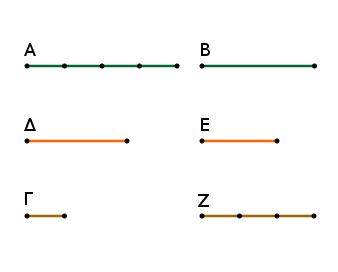
Ἐπεὶ οὖν, ὅσαι εἰσὶν ἐν τῷ Δ μονάδες, τοσαῦτά εἰσι καὶ ἐν τῷ Α μεγέθη ἴσα τῷ Γ, ὃ ἄρα μέρος ἐστὶν ἡ μονὰς τοῦ Δ, τὸ αὐτὸ μέρος ἐστὶ καὶ τὸ Γ τοῦ Α· ἔστιν ἄρα ὡς τὸ Γ πρὸς τὸ Α, οὕτως ἡ μονὰς πρὸς τὸν Δ. μετρεῖ δὲ ἡ μονὰς τὸν Δ ἀριθμόν· μετρεῖ ἄρα καὶ τὸ Γ τὸ Α. καὶ ἐπεί ἐστιν ὡς τὸ Γ πρὸς τὸ Α, οὕτως ἡ μονὰς πρὸς τὸν Δ [ἀριθμόν], ἀνάπαλιν ἄρα ὡς τὸ Α πρὸς τὸ Γ, οὕτως ὁ Δ ἀριθμὸς πρὸς τὴν μονάδα.
πάλιν ἐπεί, ὅσαι εἰσὶν ἐν τῷ Ε μονάδες, τοσαῦτά εἰσι καὶ ἐν τῷ Ζ ἴσα τῷ Γ, ἔστιν ἄρα ὡς τὸ Γ πρὸς τὸ Ζ, οὕτως ἡ μονὰς πρὸς τὸν Ε [ἀριθμόν]. ἐδείχθη δὲ καὶ ὡς τὸ Α πρὸς τὸ Γ, οὕτως ὁ Δ πρὸς τὴν μονάδα· δι' ἴσου ἄρα ἐστὶν ὡς τὸ Α πρὸς τὸ Ζ, οὕτως ὁ Δ πρὸς τὸν Ε.
ἀλλ' ὡς ὁ Δ πρὸς τὸν Ε, οὕτως ἐστὶ τὸ Α πρὸς τὸ Β· καὶ ὡς ἄρα τὸ Α πρὸς τὸ Β, οὕτως καὶ πρὸς τὸ Ζ. τὸ Α ἄρα πρὸς ἑκάτερον τῶν Β, Ζ τὸν αὐτὸν ἔχει λόγον· ἴσον ἄρα ἐστὶ τὸ Β τῷ Ζ. μετρεῖ δὲ τὸ Γ τὸ Ζ· μετρεῖ ἄρα καὶ τὸ Β. ἀλλὰ μὴν καὶ τὸ Α· τὸ Γ ἄρα τὰ Α, Β μετρεῖ. σύμμετρον ἄρα ἐστὶ τὸ Α τῷ Β.
Ἐὰν ἄρα δύο μεγέθη πρὸς ἄλληλα, καὶ τὰ ἑξῆς.
Πόρισμα Ἐκ δὴ τούτου φανερόν, ὅτι, ἐὰν ὦσι δύο ἀριθμοί, ὡς οἱ Δ, Ε, καὶ εὐθεῖα, ὡς ἡ Α, δύνατόν ἐστι ποιῆσαι ὡς ὁ Δ ἀριθμὸς πρὸς τὸν Ε ἀριθμόν, οὕτως τὴν εὐθεῖαν πρὸς εὐθεῖαν. ἐὰν δὲ καὶ τῶν Α, Ζ μέση ἀνάλογον ληφθῇ, ὡς ἡ Β, ἔσται ὡς ἡ Α πρὸς τὴν Ζ, οὕτως τὸ ἀπὸ τῆς Α πρὸς τὸ ἀπὸ τῆς Β, τουτέστιν ὡς ἡ πρώτη πρὸς τὴν τρίτην, οὕτως τὸ ἀπὸ τῆς πρώτης πρὸς τὸ ἀπὸ τῆς δευτέρας τὸ ὅμοιον καὶ ὁμοίως ἀναγραφόμενον. ἀλλ' ὡς ἡ Α πρὸς τὴν Ζ, οὕτως ἐστὶν ὁ Δ ἀριθμὸς πρὸς τὸν Ε ἀριθμόν· γέγονεν ἄρα καὶ ὡς ὁ Δ ἀριθμὸς πρὸς τὸν Ε ἀριθμόν, οὕτως τὸ ἀπὸ τῆς Α εὐθείας πρὸς τὸ ἀπὸ τῆς Β εὐθείας· ὅπερ ἔδει δεῖξαι.
Τὰ ἀσύμμετρα μεγέθη πρὸς ἄλληλα λόγον οὐκ ἔχει, ὃν ἀριθμὸς πρὸς ἀριθμόν.
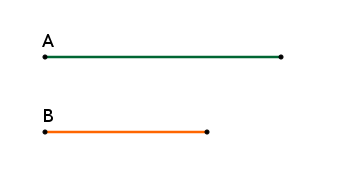
Ἔστω ἀσύμμετρα μεγέθη τὰ Α, Β· λέγω, ὅτι τὸ Α πρὸς τὸ Β λόγον οὐκ ἔχει, ὃν ἀριθμὸς πρὸς ἀριθμόν.
εἰ γὰρ ἔχει τὸ Α πρὸς τὸ Β λόγον, ὃν ἀριθμὸς πρὸς ἀριθμόν, σύμμετρον ἔσται τὸ Α τῷ Β. οὐκ ἔστι δέ· οὐκ ἄρα τὸ Α πρὸς τὸ Β λόγον ἔχει, ὃν ἀριθμὸς πρὸς ἀριθμόν.
Τὰ ἄρα ἀσύμμετρα μεγέθη πρὸς ἄλληλα λόγον οὐκ ἔχει, καὶ τὰ ἑξῆς.
Ἐὰν δύο μεγέθη πρὸς ἄλληλα λόγον μὴ ἔχῃ, ὃν ἀριθμὸς πρὸς ἀριθμόν, ἀσύμμετρα ἔσται τὰ μεγέθη.
Δύο γὰρ μεγέθη τὰ Α, Β πρὸς ἄλληλα λόγον μὴ ἐχέτω, ὃν ἀριθμὸς πρὸς ἀριθμόν· λέγω, ὅτι ἀσύμμετρά ἐστι τὰ Α, Β μεγέθη.
Εἰ γὰρ ἔσται σύμμετρα, τὸ Α πρὸς τὸ Β λόγον ἕξει, ὃν ἀριθμὸς πρὸς ἀριθμόν. οὐκ ἔχει δέ. ἀσύμμετρα ἄρα ἐστὶ τὰ Α, Β μεγέθη.
Ἐὰν ἄρα δύο μεγέθη πρὸς ἄλληλα, καὶ τὰ ἑξῆς.
Τὰ ἀπὸ τῶν μήκει συμμέτρων εὐθειῶν τετράγωνα πρὸς ἄλληλα λόγον ἔχει, ὃν τετράγωνος ἀριθμὸς πρὸς τετράγωνον ἀριθμόν· καὶ τὰ τετράγωνα τὰ πρὸς ἄλληλα λόγον ἔχοντα, ὃν τετράγωνος ἀριθμὸς πρὸς τετράγωνον ἀριθμόν, καὶ τὰς πλευρὰς ἕξει μήκει συμμέτρους. τὰ δὲ ἀπὸ τῶν μήκει ἀσυμμέτρων εὐθειῶν τετράγωνα πρὸς ἄλληλα λόγον οὐκ ἔχει, ὅνπερ τετράγωνος ἀριθμὸς πρὸς τετράγωνον ἀριθμόν· καὶ τὰ τετράγωνα τὰ πρὸς ἄλληλα λόγον μὴ ἔχοντα, ὃν τετράγωνος ἀριθμὸς πρὸς τετράγωνον ἀριθμόν, οὐδὲ τὰς πλευρὰς ἕξει μήκει συμμέτρους.
Ἔστωσαν γὰρ αἱ Α, Β μήκει σύμμετροι· λέγω, ὅτι τὸ ἀπὸ τῆς Α τετράγωνον πρὸς τὸ ἀπὸ τῆς Β τετράγωνον λόγον ἔχει, ὃν τετράγωνος ἀριθμὸς πρὸς τετράγωνον ἀριθμόν.
Ἐπεὶ γὰρ σύμμετρός ἐστιν ἡ Α τῇ Β μήκει, ἡ Α ἄρα πρὸς τὴν Β λόγον ἔχει, ὃν ἀριθμὸς πρὸς ἀριθμόν. ἐχέτω, ὃν ὁ Γ πρὸς τὸν Δ. ἐπεὶ οὖν ἐστιν ὡς ἡ Α πρὸς τὴν Β, οὕτως ὁ Γ πρὸς τὸν Δ, ἀλλὰ τοῦ μὲν τῆς Α πρὸς τὴν Β λόγου διπλασίων ἐστὶν ὁ τοῦ ἀπὸ τῆς Α τετραγώνου πρὸς τὸ ἀπὸ τῆς Β τετράγωνον· τὰ γὰρ ὅμοια σχήματα ἐν διπλασίονι λόγῳ ἐστὶ τῶν ὁμολόγων πλευρῶν· τοῦ δὲ τοῦ Γ [ἀριθμοῦ] πρὸς τὸν Δ [ἀριθμὸν] λόγου διπλασίων ἐστὶν ὁ τοῦ ἀπὸ τοῦ Γ τετραγώνου πρὸς τὸν ἀπὸ τοῦ Δ τετράγωνον· δύο γὰρ τετραγώνων ἀριθμῶν εἷς μέσος ἀνάλογόν ἐστιν ἀριθμός, καὶ ὁ τετράγωνος πρὸς τὸν τετράγωνον [ἀριθμὸν] διπλασίονα λόγον ἔχει, ἤπερ ἡ πλευρὰ πρὸς τὴν πλευράν· ἔστιν ἄρα καὶ ὡς τὸ ἀπὸ τῆς Α τετράγωνον πρὸς τὸ ἀπὸ τῆς Β τετράγωνον, οὕτως ὁ ἀπὸ τοῦ Γ τετράγωνος [ἀριθμὸς] πρὸς τὸν ἀπὸ τοῦ Δ [ἀριθμοῦ] τετράγωνον [ἀριθμόν].
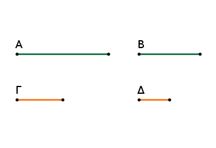
Ἀλλὰ δὴ ἔστω ὡς τὸ ἀπὸ τῆς Α τετράγωνον πρὸς τὸ ἀπὸ τῆς Β, οὕτως ὁ ἀπὸ τοῦ Γ τετράγωνος πρὸς τὸν ἀπὸ τοῦ Δ [τετράγωνον]· λέγω, ὅτι σύμμετρός ἐστιν ἡ Α τῇ Β μήκει.
Ἐπεὶ γάρ ἐστιν ὡς τὸ ἀπὸ τῆς Α τετράγωνον πρὸς τὸ ἀπὸ τῆς Β [τετράγωνον], οὕτως ὁ ἀπὸ τοῦ Γ τετράγωνος πρὸς τὸν ἀπὸ τοῦ Δ [τετράγωνον], ἀλλ' ὁ μὲν τοῦ ἀπὸ τῆς Α τετραγώνου πρὸς τὸ ἀπὸ τῆς Β [τετράγωνον] λόγος διπλασίων ἐστὶ τοῦ τῆς Α πρὸς τὴν Β λόγου, ὁ δὲ τοῦ ἀπὸ τοῦ Γ [ἀριθμοῦ] τετραγώνου [ἀριθμοῦ] πρὸς τὸν ἀπὸ τοῦ Δ [ἀριθμοῦ] τετράγωνον [ἀριθμὸν] λόγος διπλασίων ἐστὶ τοῦ τοῦ Γ [ἀριθμοῦ] πρὸς τὸν Δ [ἀριθμὸν] λόγου, ἔστιν ἄρα καὶ ὡς ἡ Α πρὸς τὴν Β, οὕτως ὁ Γ [ἀριθμὸς] πρὸς τὸν Δ [ἀριθμόν]. ἡ Α ἄρα πρὸς τὴν Β, λόγον ἔχει, ὃν ἀριθμὸς ὁ Γ πρὸς ἀριθμὸν τὸν Δ· σύμμετρος ἄρα ἐστὶν ἡ Α τῇ Β μήκει.
Ἀλλὰ δὴ ἀσύμμετρος ἔστω ἡ Α τῇ Β μήκει· λέγω, ὅτι τὸ ἀπὸ τῆς Α τετράγωνον πρὸς τὸ ἀπὸ τῆς Β [τετράγωνον] λόγον οὐκ ἔχει, ὃν τετράγωνος ἀριθμὸς πρὸς τετράγωνον ἀριθμόν.
Εἰ γὰρ ἔχει τὸ ἀπὸ τῆς Α τετράγωνον πρὸς τὸ ἀπὸ τῆς Β [τετράγωνον] λόγον, ὃν τετράγωνος ἀριθμὸς πρὸς τετράγωνον ἀριθμόν, σύμμετρος ἔσται ἡ Α τῇ Β. οὐκ ἔστι δέ· οὐκ ἄρα τὸ ἀπὸ τῆς Α τετράγωνον πρὸς τὸ ἀπὸ τῆς Β [τετράγωνον] λόγον ἔχει, ὃν τετράγωνος ἀριθμὸς πρὸς τετράγωνον ἀριθμόν.
Πάλιν δὴ τὸ ἀπὸ τῆς Α τετράγωνον πρὸς τὸ ἀπὸ τῆς Β [τετράγωνον] λόγον μὴ ἐχέτω, ὃν τετράγωνος ἀριθμὸς πρὸς τετράγωνον ἀριθμόν· λέγω, ὅτι ἀσύμμετρός ἐστιν ἡ Α τῇ Β μήκει.
Εἰ γάρ ἐστι σύμμετρος ἡ Α τῇ Β, ἕξει τὸ ἀπὸ τῆς Α πρὸς τὸ ἀπὸ τῆς Β λόγον, ὃν τετράγωνος ἀριθμὸς πρὸς τετράγωνον ἀριθμόν. οὐκ ἔχει δέ· οὐκ ἄρα σύμμετρός ἐστιν ἡ Α τῇ Β μήκει.
Τὰ ἄρα ἀπὸ τῶν μήκει συμμέτρων, καὶ τὰ ἑξῆς.
Πόρισμα Καὶ φανερὸν ἐκ τῶν δεδειγμένων ἔσται, ὅτι αἱ μήκει σύμμετροι πάντως καὶ δυνάμει, αἱ δὲ δυνάμει οὐ πάντως καὶ μήκει [εἴπερ τὰ ἀπὸ τῶν μήκει συμμέτρων εὐθειῶν τετράγωνα λόγον ἔχει, ὃν τετράγωνος ἀριθμὸς πρὸς τετράγωνον ἀριθμόν, τὰ δὲ λόγον ἔχοντα, ὃν ἀριθμὸς πρὸς ἀριθμόν, σύμμετρά ἐστιν. ὥστε αἱ μήκει σύμμετροι εὐθεῖαι οὐ μόνον [εἰσὶ] μήκει σύμμετροι, ἀλλὰ καὶ δυνάμει. πάλιν ἐπεί, ὅσα τετράγωνα πρὸς ἄλληλα λόγον ἔχει, ὃν τετράγωνος ἀριθμὸς πρὸς τετράγωνον ἀριθμόν, μήκει ἐδείχθη σύμμετρα καὶ δυνάμει ὄντα σύμμετρα τῷ τὰ τετράγωνα λόγον ἔχειν, ὃν ἀριθμὸς πρὸς ἀριθμόν, ὅσα ἄρα τετράγωνα λόγον οὐκ ἔχει, ὃν τετράγωνος ἀριθμὸς πρὸς τετράγωνον ἀριθμόν, ἀλλὰ ἁπλῶς, ὃν ἀριθμὸς πρὸς ἀριθμόν, σύμμετρα μὲν ἔσται αὐτὰ τὰ τετράγωνα δυνάμει, οὐκέτι δὲ καὶ μήκει· ὥστε τὰ μὲν μήκει σύμμετρα πάντως καὶ δυνάμει, τὰ δὲ δυνάμει οὐ πάντως καὶ μήκει, εἰ μὴ καὶ λόγον ἔχοιεν, ὃν τετράγωνος ἀριθμὸς πρὸς τετράγωνον ἀριθμόν. λέγω δή, ὅτι [καὶ] αἱ μήκει ἀσύμμετροι οὐ πάντως καὶ δυνάμει, ἐπειδήπερ αἱ δυνάμει σύμμετροι δύνανται λόγον μὴ ἔχειν, ὃν τετράγωνος ἀριθμὸς πρὸς τετράγωνον ἀριθμόν, καὶ διὰ τοῦτο δυνάμει οὖσαι σύμμετροι μήκει εἰσὶν ἀσύμμετροι. ὥστε οὐχ αἱ τῷ μήκει ἀσύμμετροι πάντως καὶ δυνάμει, ἀλλὰ δύνανται μήκει οὖσαι ἀσύμμετροι δυνάμει εἶναι καὶ ἀσύμμετροι καὶ σύμμετροι. αἱ δὲ δυνάμει ἀσύμμετροι πάντως καὶ μήκει ἀσύμμετροι· εἰ γὰρ [εἰσι] μήκει σύμμετροι, ἔσονται καὶ δυνάμει σύμμετροι. ὑπόκεινται δὲ καὶ ἀσύμμετροι· ὅπερ ἄτοπον. αἱ ἄρα δυνάμει ἀσύμμετροι πάντως καὶ μήκει].
Λ ῆ μ μ α : Δέδεικται ἐν τοῖς ἀριθμητικοῖς, ὅτι οἱ ὅμοιοι ἐπίπεδοι ἀριθμοὶ πρὸς ἀλλήλους λόγον ἔχουσιν, ὃν τετράγωνος ἀριθμὸς πρὸς τετράγωνον ἀριθμόν, καὶ ὅτι, ἐὰν δύο ἀριθμοὶ πρὸς ἀλλήλους λόγον ἔχωσιν, ὃν τετράγωνος ἀριθμὸς πρὸς τετράγωνον ἀριθμόν, ὅμοιοί εἰσιν ἐπίπεδοι. καὶ δῆλον ἐκ τούτων, ὅτι οἱ μὴ ὅμοιοι ἐπίπεδοι ἀριθμοί, τουτέστιν οἱ μὴ ἀνάλογον ἔχοντες τὰς πλευράς, πρὸς ἀλλήλους λόγον οὐκ ἔχουσιν, ὃν τετράγωνος ἀριθμὸς πρὸς τετράγωνον ἀριθμόν. εἰ γὰρ ἕξουσιν, ὅμοιοι ἐπίπεδοι ἔσονται· ὅπερ οὐχ ὑπόκειται. οἱ ἄρα μὴ ὅμοιοι ἐπίπεδοι πρὸς ἀλλήλους λόγον οὐκ ἔχουσιν, ὃν τετράγωνος ἀριθμὸς πρὸς τετράγωνον ἀριθμόν.
Τῇ προτεθείσῃ εὐθείᾳ προσευρεῖν δύο εὐθείας ἀσυμμέτρους, τὴν μὲν μήκει μόνον, τὴν δὲ καὶ δυνάμει.
Ἔστω ἡ προτεθεῖσα εὐθεῖα ἡ Α· δεῖ δὴ τῇ Α προσευρεῖν δύο εὐθείας ἀσυμμέτρους, τὴν μὲν μήκει μόνον, τὴν δὲ καὶ δυνάμει.
Ἐκκείσθωσαν γὰρ δύο ἀριθμοὶ οἱ Β, Γ πρὸς ἀλλήλους λόγον μὴ ἔχοντες, ὃν τετράγωνος ἀριθμὸς πρὸς τετράγωνον ἀριθμόν, τουτέστι μὴ ὅμοιοι ἐπίπεδοι, καὶ γεγονέτω ὡς ὁ Β πρὸς τὸν Γ, οὕτως τὸ ἀπὸ τῆς Α τετράγωνον πρὸς τὸ ἀπὸ τῆς Δ τετράγωνον· ἐμάθομεν γάρ· σύμμετρον ἄρα τὸ ἀπὸ τῆς Α τῷ ἀπὸ τῆς Δ.
καὶ ἐπεὶ ὁ Β πρὸς τὸν Γ λόγον οὐκ ἔχει, ὃν τετράγωνος ἀριθμὸς πρὸς τετράγωνον ἀριθμόν, οὐδ' ἄρα τὸ ἀπὸ τῆς Α πρὸς τὸ ἀπὸ τῆς Δ λόγον ἔχει, ὃν τετράγωνος ἀριθμὸς πρὸς τετράγωνον ἀριθμόν· ἀσύμμετρος ἄρα ἐστὶν ἡ Α τῇ Δ μήκει.
εἰλήφθω τῶν Α, Δ μέση ἀνάλογον ἡ Ε· ἔστιν ἄρα ὡς ἡ Α πρὸς τὴν Δ, οὕτως τὸ ἀπὸ τῆς Α τετράγωνον πρὸς τὸ ἀπὸ τῆς Ε. ἀσύμμετρος δέ ἐστιν ἡ Α τῇ Δ μήκει· ἀσύμμετρον ἄρα ἐστὶ καὶ τὸ ἀπὸ τῆς Α τετράγωνον τῷ ἀπὸ τῆς Ε τετραγώνῳ· ἀσύμμετρος ἄρα ἐστὶν ἡ Α τῇ Ε δυνάμει.
Τῇ ἄρα προτεθείσῃ εὐθείᾳ τῇ Α προσεύρηνται δύο εὐθεῖαι ἀσύμμετροι αἱ Δ, Ε, μήκει μὲν μόνον ἡ Δ, δυνάμει δὲ καὶ μήκει δηλαδὴ ἡ Ε [ὅπερ ἔδει δεῖξαι].
Ἐὰν τέσσαρα μεγέθη ἀνάλογον ᾖ, τὸ δὲ πρῶτον τῷ δευτέρῳ σύμμετρον ᾖ, καὶ τὸ τρίτον τῷ τετάρτῳ σύμμετρον ἔσται· κἂν τὸ πρῶτον τῷ δευτέρῳ ἀσύμμετρον ᾖ, καὶ τὸ τρίτον τῷ τετάρτῳ ἀσύμμετρον ἔσται.
Ἔστωσαν τέσσαρα μεγέθη ἀνάλογον τὰ Α, Β, Γ, Δ, ὡς τὸ Α πρὸς τὸ Β, οὕτως τὸ Γ πρὸς τὸ Δ, τὸ Α δὲ τῷ Β σύμμετρον ἔστω· λέγω, ὅτι καὶ τὸ Γ τῷ Δ σύμμετρον ἔσται.
Ἐπεὶ γὰρ σύμμετρόν ἐστι τὸ Α τῷ Β, τὸ Α ἄρα πρὸς τὸ Β λόγον ἔχει, ὃν ἀριθμὸς πρὸς ἀριθμόν. καί ἐστιν ὡς τὸ Α πρὸς τὸ Β, οὕτως τὸ Γ πρὸς τὸ Δ· καὶ τὸ Γ ἄρα πρὸς τὸ Δ λόγον ἔχει, ὃν ἀριθμὸς πρὸς ἀριθμόν· σύμμετρον ἄρα ἐστὶ τὸ Γ τῷ Δ.
Ἀλλὰ δὴ τὸ Α τῷ Β ἀσύμμετρον ἔστω· λέγω, ὅτι καὶ τὸ Γ τῷ Δ ἀσύμμετρον ἔσται. ἐπεὶ γὰρ ἀσύμμετρόν ἐστι τὸ Α τῷ Β, τὸ Α ἄρα πρὸς τὸ Β λόγον οὐκ ἔχει, ὃν ἀριθμὸς πρὸς ἀριθμόν. καί ἐστιν ὡς τὸ Α πρὸς τὸ Β, οὕτως τὸ Γ πρὸς τὸ Δ· οὐδὲ τὸ Γ ἄρα πρὸς τὸ Δ λόγον ἔχει, ὃν ἀριθμὸς πρὸς ἀριθμόν· ἀσύμμετρον ἄρα ἐστὶ τὸ Γ τῷ Δ. Ἐὰν ἄρα τέσσαρα μεγέθη, καὶ τὰ ἑξῆς.
Τὰ τῷ αὐτῷ μεγέθει σύμμετρα καὶ ἀλλήλοις ἐστὶ σύμμετρα.
Ἑκάτερον γὰρ τῶν Α, Β τῷ Γ ἔστω σύμμετρον. λέγω, ὅτι καὶ τὸ Α τῷ Β ἐστι σύμμετρον.
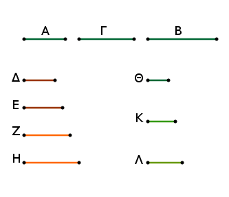
Ἐπεὶ γὰρ σύμμετρόν ἐστι τὸ Α τῷ Γ, τὸ Α ἄρα πρὸς τὸ Γ λόγον ἔχει, ὃν ἀριθμὸς πρὸς ἀριθμόν. ἐχέτω, ὃν ὁ Δ πρὸς τὸν Ε. πάλιν, ἐπεὶ σύμμετρόν ἐστι τὸ Γ τῷ Β, τὸ Γ ἄρα πρὸς τὸ Β λόγον ἔχει, ὃν ἀριθμὸς πρὸς ἀριθμόν. ἐχέτω, ὃν ὁ Ζ πρὸς τὸν Η.
καὶ λόγων δοθέντων ὁποσωνοῦν τοῦ τε, ὃν ἔχει ὁ Δ πρὸς τὸν Ε, καὶ ὁ Ζ πρὸς τὸν Η εἰλήφθωσαν ἀριθμοὶ ἑξῆς ἐν τοῖς δοθεῖσι λόγοις οἱ Θ, Κ, Λ· ὥστε εἶναι ὡς μὲν τὸν Δ πρὸς τὸν Ε, οὕτως τὸν Θ πρὸς τὸν Κ, ὡς δὲ τὸν Ζ πρὸς τὸν Η, οὕτως τὸν Κ πρὸς τὸν Λ.
Ἐπεὶ οὖν ἐστιν ὡς τὸ Α πρὸς τὸ Γ, οὕτως ὁ Δ πρὸς τὸν Ε, ἀλλ' ὡς ὁ Δ πρὸς τὸν Ε, οὕτως ὁ Θ πρὸς τὸν Κ, ἔστιν ἄρα καὶ ὡς τὸ Α πρὸς τὸ Γ, οὕτως ὁ Θ πρὸς τὸν Κ.
πάλιν, ἐπεί ἐστιν ὡς τὸ Γ πρὸς τὸ Β, οὕτως ὁ Ζ πρὸς τὸν Η, ἀλλ' ὡς ὁ Ζ πρὸς τὸν Η, [οὕτως] ὁ Κ πρὸς τὸν Λ, καὶ ὡς ἄρα τὸ Γ πρὸς τὸ Β, οὕτως ὁ Κ πρὸς τὸν Λ. ἔστι δὲ καὶ ὡς τὸ Α πρὸς τὸ Γ, οὕτως ὁ Θ πρὸς τὸν Κ· δι' ἴσου ἄρα ἐστὶν ὡς τὸ Α πρὸς τὸ Β, οὕτως ὁ Θ πρὸς τὸν Λ. τὸ Α ἄρα πρὸς τὸ Β λόγον ἔχει, ὃν ἀριθμὸς ὁ Θ πρὸς ἀριθμὸν τὸν Λ· σύμμετρον ἄρα ἐστὶ τὸ Α τῷ Β. Τὰ ἄρα τῷ αὐτῷ μεγέθει σύμμετρα καὶ ἀλλήλοις ἐστὶ σύμμετρα· ὅπερ ἔδει δεῖξαι.
Ἐὰν ᾖ δύο μεγέθη σύμμετρα, τὸ δὲ ἕτερον αὐτῶν μεγέθει τινὶ ἀσύμμετρον ᾖ, καὶ τὸ λοιπὸν τῷ αὐτῷ ἀσύμμετρον ἔσται.
Ἔστω δύο μεγέθη σύμμετρα τὰ Α, Β, τὸ δὲ ἕτερον αὐτῶν τὸ Α ἄλλῳ τινὶ τῷ Γ ἀσύμμετρον ἔστω· λέγω, ὅτι καὶ τὸ λοιπὸν τὸ Β τῷ Γ ἀσύμμετρόν ἐστιν.
Εἰ γάρ ἐστι σύμμετρον τὸ Β τῷ Γ, ἀλλὰ καὶ τὸ Α τῷ Β σύμμετρόν ἐστιν, καὶ τὸ Α ἄρα τῷ Γ σύμμετρόν ἐστιν. ἀλλὰ καὶ ἀσύμμετρον· ὅπερ ἀδύνατον. οὐκ ἄρα σύμμετρόν ἐστι τὸ Β τῷ Γ· ἀσύμμετρον ἄρα. Ἐὰν ἄρα ᾖ δύο μεγέθη σύμμετρα, καὶ τὰ ἑξῆς.
Λ ῆ μ μ α : Δύο δοθεισῶν εὐθειῶν ἀνίσων εὑρεῖν, τίνι μεῖζον δύναται ἡ μείζων τῆς ἐλάσσονος.
Ἔστωσαν αἱ δοθεῖσαι δύο ἄνισοι εὐθεῖαι αἱ ΑΒ, Γ, ὧν μείζων ἔστω ἡ ΑΒ· δεῖ δὴ εὑρεῖν, τίνι μεῖζον δύναται ἡ ΑΒ τῆς Γ.
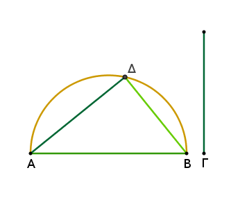
Γεγράφθω ἐπὶ τῆς ΑΒ ἡμικύκλιον τὸ ΑΔΒ, καὶ εἰς αὐτὸ ἐνηρμόσθω τῇ Γ ἴση ἡ ΑΔ, καὶ ἐπεζεύχθω ἡ ΔΒ. φανερὸν δή, ὅτι ὀρθή ἐστιν ἡ ὑπὸ ΑΔΒ γωνία, καὶ ὅτι ἡ ΑΒ τῆς ΑΔ, τουτέστι τῆς Γ, μεῖζον δύναται τῇ ΔΒ.
Ὁμοίως δὲ καὶ δύο δοθεισῶν εὐθειῶν ἡ δυναμένη αὐτὰς εὑρίσκεται οὕτως.
Ἔστωσαν αἱ δοθεῖσαι δύο εὐθεῖαι αἱ ΑΔ, ΔΒ, καὶ δέον ἔστω εὑρεῖν τὴν δυναμένην αὐτάς. κείσθωσαν γάρ, ὥστε ὀρθὴν γωνίαν περιέχειν τὴν ὑπὸ ΑΔ, ΔΒ, καὶ ἐπεζεύχθω ἡ ΑΒ· φανερὸν πάλιν, ὅτι ἡ τὰς ΑΔ, ΔΒ δυναμένη ἐστὶν ἡ ΑΒ· ὅπερ ἔδει δεῖξαι.
Ἐὰν τέσσαρες εὐθεῖαι ἀνάλογον ὦσιν, δύνηται δὲ ἡ πρώτη τῆς δευτέρας μεῖζον τῷ ἀπὸ συμμέτρου ἑαυτῇ [μήκει], καὶ ἡ τρίτη τῆς τετάρτης μεῖζον δυνήσεται τῷ ἀπὸ συμμέτρου ἑαυτῇ [μήκει]. καὶ ἐὰν ἡ πρώτη τῆς δευτέρας μεῖζον δύνηται τῷ ἀπὸ ἀσυμμέτρου ἑαυτῇ [μήκει], καὶ ἡ τρίτη τῆς τετάρτης μεῖζον δυνήσεται τῷ ἀπὸ ἀσυμμέτρου ἑαυτῇ [μήκει].
Ἔστωσαν τέσσαρες εὐθεῖαι ἀνάλογον αἱ Α, Β, Γ, Δ, ὡς ἡ Α πρὸς τὴν Β, οὕτως ἡ Γ πρὸς τὴν Δ, καὶ ἡ Α μὲν τῆς Β μεῖζον δυνάσθω τῷ ἀπὸ τῆς Ε, ἡ δὲ Γ τῆς Δ μεῖζον δυνάσθω τῷ ἀπὸ τῆς Ζ· λέγω, ὅτι, εἴτε σύμμετρός ἐστιν ἡ Α τῇ Ε, σύμμετρός ἐστι καὶ ἡ Γ τῇ Ζ, εἴτε ἀσύμμετρός ἐστιν ἡ Α τῇ Ε, ἀσύμμετρός ἐστι καὶ ἡ Γ τῇ Ζ.
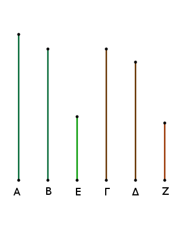
Ἐπεὶ γάρ ἐστιν ὡς ἡ Α πρὸς τὴν Β, οὕτως ἡ Γ πρὸς τὴν Δ, ἔστιν ἄρα καὶ ὡς τὸ ἀπὸ τῆς Α πρὸς τὸ ἀπὸ τῆς Β, οὕτως τὸ ἀπὸ τῆς Γ πρὸς τὸ ἀπὸ τῆς Δ. ἀλλὰ τῷ μὲν ἀπὸ τῆς Α ἴσα ἐστὶ τὰ ἀπὸ τῶν Ε, Β, τῷ δὲ ἀπὸ τῆς Γ ἴσα ἐστὶ τὰ ἀπὸ τῶν Δ, Ζ.
ἔστιν ἄρα ὡς τὰ ἀπὸ τῶν Ε, Β πρὸς τὸ ἀπὸ τῆς Β, οὕτως τὰ ἀπὸ τῶν Δ, Ζ πρὸς τὸ ἀπὸ τῆς Δ· διελόντι ἄρα ἐστὶν ὡς τὸ ἀπὸ τῆς Ε πρὸς τὸ ἀπὸ τῆς Β, οὕτως τὸ ἀπὸ τῆς Ζ πρὸς τὸ ἀπὸ τῆς Δ· ἔστιν ἄρα καὶ ὡς ἡ Ε πρὸς τὴν Β, οὕτως ἡ Ζ πρὸς τὴν Δ· ἀνάπαλιν ἄρα ἐστὶν ὡς ἡ Β πρὸς τὴν Ε, οὕτως ἡ Δ πρὸς τὴν Ζ. ἔστι δὲ καὶ ὡς ἡ Α πρὸς τὴν Β, οὕτως ἡ Γ πρὸς τὴν Δ· δι' ἴσου ἄρα ἐστὶν ὡς ἡ Α πρὸς τὴν Ε, οὕτως ἡ Γ πρὸς τὴν Ζ.
εἴτε οὖν σύμμετρός ἐστιν ἡ Α τῇ Ε, σύμμετρός ἐστι καὶ ἡ Γ τῇ Ζ, εἴτε ἀσύμμετρός ἐστιν ἡ Α τῇ Ε, ἀσύμμετρός ἐστι καὶ ἡ Γ τῇ Ζ. Ἐὰν ἄρα, καὶ τὰ ἑξῆς.
Ἐὰν δύο μεγέθη σύμμετρα συντεθῇ, καὶ τὸ ὅλον ἑκατέρῳ αὐτῶν σύμμετρον ἔσται· κἂν τὸ ὅλον ἑνὶ αὐτῶν σύμμετρον ᾖ, καὶ τὰ ἐξ ἀρχῆς μεγέθη σύμμετρα ἔσται.
Συγκείσθω γὰρ δύο μεγέθη σύμμετρα τὰ ΑΒ, ΒΓ· λέγω, ὅτι καὶ ὅλον τὸ ΑΓ ἑκατέρῳ τῶν ΑΒ, ΒΓ ἐστι σύμμετρον.
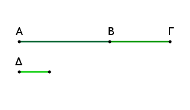
Ἐπεὶ γὰρ σύμμετρά ἐστι τὰ ΑΒ, ΒΓ, μετρήσει τι αὐτὰ μέγεθος. μετρείτω, καὶ ἔστω τὸ Δ. ἐπεὶ οὖν τὸ Δ τὰ ΑΒ, ΒΓ μετρεῖ, καὶ ὅλον τὸ ΑΓ μετρήσει. μετρεῖ δὲ καὶ τὰ ΑΒ, ΒΓ. τὸ Δ ἄρα τὰ ΑΒ, ΒΓ, ΑΓ μετρεῖ· σύμμετρον ἄρα ἐστὶ τὸ ΑΓ ἑκατέρῳ τῶν ΑΒ, ΒΓ.
Ἀλλὰ δὴ τὸ ΑΓ ἔστω σύμμετρον τῷ ΑΒ· λέγω δή, ὅτι καὶ τὰ ΑΒ, ΒΓ σύμμετρά ἐστιν. Ἐπεὶ γὰρ σύμμετρά ἐστι τὰ ΑΓ, ΑΒ, μετρήσει τι αὐτὰ μέγεθος. μετρείτω, καὶ ἔστω τὸ Δ. ἐπεὶ οὖν τὸ Δ τὰ ΓΑ, ΑΒ μετρεῖ, καὶ λοιπὸν ἄρα τὸ ΒΓ μετρήσει. μετρεῖ δὲ καὶ τὸ ΑΒ· τὸ Δ ἄρα τὰ ΑΒ, ΒΓ μετρήσει· σύμμετρα ἄρα ἐστὶ τὰ ΑΒ, ΒΓ. Ἐὰν ἄρα δύο μεγέθη, καὶ τὰ ἑξῆς.
Ἐὰν δύο μεγέθη ἀσύμμετρα συντεθῇ, καὶ τὸ ὅλον ἑκατέρῳ αὐτῶν ἀσύμμετρον ἔσται· κἂν τὸ ὅλον ἑνὶ αὐτῶν ἀσύμμετρον ᾖ, καὶ τὰ ἐξ ἀρχῆς μεγέθη ἀσύμμετρα ἔσται.
Συγκείσθω γὰρ δύο μεγέθη ἀσύμμετρα τὰ ΑΒ, ΒΓ· λέγω, ὅτι καὶ ὅλον τὸ ΑΓ ἑκατέρῳ τῶν ΑΒ, ΒΓ ἀσύμμετρόν ἐστιν.
Εἰ γὰρ μή ἐστιν ἀσύμμετρα τὰ ΓΑ, ΑΒ, μετρήσει τι [αὐτὰ] μέγεθος. μετρείτω, εἰ δυνατόν, καὶ ἔστω τὸ Δ. ἐπεὶ οὖν τὸ Δ τὰ ΓΑ, ΑΒ μετρεῖ, καὶ λοιπὸν ἄρα τὸ ΒΓ μετρήσει. μετρεῖ δὲ καὶ τὸ ΑΒ· τὸ Δ ἄρα τὰ ΑΒ, ΒΓ μετρεῖ. σύμμετρα ἄρα ἐστὶ τὰ ΑΒ, ΒΓ· ὑπέκειντο δὲ καὶ ἀσύμμετρα· ὅπερ ἐστὶν ἀδύνατον. οὐκ ἄρα τὰ ΓΑ, ΑΒ μετρήσει τι μέγεθος· ἀσύμμετρα ἄρα ἐστὶ τὰ ΓΑ, ΑΒ. ὁμοίως δὴ δείξομεν, ὅτι καὶ τὰ ΑΓ, ΓΒ ἀσύμμετρά ἐστιν. τὸ ΑΓ ἄρα ἑκατέρῳ τῶν ΑΒ, ΒΓ ἀσύμμετρόν ἐστιν.
Ἀλλὰ δὴ τὸ ΑΓ ἑνὶ τῶν ΑΒ, ΒΓ ἀσύμμετρον ἔστω. ἔστω δὴ πρότερον τῷ ΑΒ· λέγω, ὅτι καὶ τὰ ΑΒ, ΒΓ ἀσύμμετρά ἐστιν. εἰ γὰρ ἔσται σύμμετρα, μετρήσει τι αὐτὰ μέγεθος. μετρείτω, καὶ ἔστω τὸ Δ. ἐπεὶ οὖν τὸ Δ τὰ ΑΒ, ΒΓ μετρεῖ, καὶ ὅλον ἄρα τὸ ΑΓ μετρήσει. μετρεῖ δὲ καὶ τὸ ΑΒ· τὸ Δ ἄρα τὰ ΓΑ, ΑΒ μετρεῖ. σύμμετρα ἄρα ἐστὶ τὰ ΓΑ, ΑΒ· ὑπέκειτο δὲ καὶ ἀσύμμετρα· ὅπερ ἐστὶν ἀδύνατον. οὐκ ἄρα τὰ ΑΒ, ΒΓ μετρήσει τι μέγεθος· ἀσύμμετρα ἄρα ἐστὶ τὰ ΑΒ, ΒΓ. Ἐὰν ἄρα δύο μεγέθη, καὶ τὰ ἑξῆς.
Λ ῆ μ μ α : Ἐὰν παρά τινα εὐθεῖαν παραβληθῇ παραλληλόγραμμον ἐλλεῖπον εἴδει τετραγώνῳ, τὸ παραβληθὲν ἴσον ἐστὶ τῷ ὑπὸ τῶν ἐκ τῆς παραβολῆς γενομένων τμημάτων τῆς εὐθείας.
Παρὰ γὰρ εὐθεῖαν τὴν ΑΒ παραβεβλήσθω παραλληλόγραμμον τὸ ΑΔ ἐλλεῖπον εἴδει τετραγώνῳ τῷ ΔΒ· λέγω, ὅτι ἴσον ἐστὶ τὸ ΑΔ τῷ ὑπὸ τῶν ΑΓ, ΓΒ.
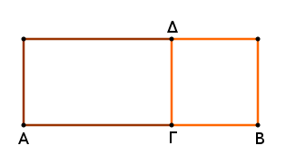
Καί ἐστιν αὐτόθεν φανερόν· ἐπεὶ γὰρ τετράγωνόν ἐστι τὸ ΔΒ, ἴση ἐστὶν ἡ ΔΓ τῇ ΓΒ, καί ἐστι τὸ ΑΔ τὸ ὑπὸ τῶν ΑΓ, ΓΔ, τουτέστι τὸ ὑπὸ τῶν ΑΓ, ΓΒ. Ἐὰν ἄρα παρά τινα εὐθεῖαν, καὶ τὰ ἑξῆς.
Ἐὰν ὦσι δύο εὐθεῖαι ἄνισοι, τῷ δὲ τετάρτῳ μέρει τοῦ ἀπὸ τῆς ἐλάσσονος ἴσον παρὰ τὴν μείζονα παραβληθῇ ἐλλεῖπον εἴδει τετραγώνῳ καὶ εἰς σύμμετρα αὐτὴν διαιρῇ μήκει, ἡ μείζων τῆς ἐλάσσονος μεῖζον δυνήσεται τῷ ἀπὸ συμμέτρου ἑαυτῇ [μήκει]. καὶ ἐὰν ἡ μείζων τῆς ἐλάσσονος μεῖζον δύνηται τῷ ἀπὸ συμμέτρου ἑαυτῇ [μήκει], τῷ δὲ τετάρτῳ τοῦ ἀπὸ τῆς ἐλάσσονος ἴσον παρὰ τὴν μείζονα παραβληθῇ ἐλλεῖπον εἴδει τετραγώνῳ, εἰς σύμμετρα αὐτὴν διαιρεῖ μήκει.
Ἔστωσαν δύο εὐθεῖαι ἄνισοι αἱ Α, ΒΓ, ὧν μείζων ἡ ΒΓ, τῷ δὲ τετάρτῳ μέρει τοῦ ἀπὸ τῆς ἐλάσσονος τῆς Α, τουτέστι τῷ ἀπὸ τῆς ἡμισείας τῆς Α, ἴσον παρὰ τὴν ΒΓ παραβεβλήσθω ἐλλεῖπον εἴδει τετραγώνῳ, καὶ ἔστω τὸ ὑπὸ τῶν ΒΔ, ΔΓ, σύμμετρος δὲ ἔστω ἡ ΒΔ τῇ ΔΓ μήκει· λέγω, ὅτι ἡ ΒΓ τῆς Α μεῖζον δύναται τῷ ἀπὸ συμμέτρου ἑαυτῇ.
Τετμήσθω γὰρ ἡ ΒΓ δίχα κατὰ τὸ Ε σημεῖον, καὶ κείσθω τῇ ΔΕ ἴση ἡ ΕΖ. λοιπὴ ἄρα ἡ ΔΓ ἴση ἐστὶ τῇ ΒΖ. καὶ ἐπεὶ εὐθεῖα ἡ ΒΓ τέτμηται εἰς μὲν ἴσα κατὰ τὸ Ε, εἰς δὲ ἄνισα κατὰ τὸ Δ, τὸ ἄρα ὑπὸ ΒΔ, ΔΓ περιεχόμενον ὀρθογώνιον μετὰ τοῦ ἀπὸ τῆς ΕΔ τετραγώνου ἴσον ἐστὶ τῷ ἀπὸ τῆς ΕΓ τετραγώνῳ· καὶ τὰ τετραπλάσια· τὸ ἄρα τετράκις ὑπὸ τῶν ΒΔ, ΔΓ μετὰ τοῦ τετραπλασίου τοῦ ἀπὸ τῆς ΔΕ ἴσον ἐστὶ τῷ τετράκις ἀπὸ τῆς ΕΓ τετραγώνῳ.
ἀλλὰ τῷ μέν τετραπλασίῳ τοῦ ὑπὸ τῶν ΒΔ, ΔΓ ἴσον ἐστὶ τὸ ἀπὸ τῆς Α τετράγωνον, τῷ δὲ τετραπλασίῳ τοῦ ἀπὸ τῆς ΔΕ ἴσον ἐστὶ τὸ ἀπὸ τῆς ΔΖ τετράγωνον· διπλασίων γάρ ἐστιν ἡ ΔΖ τῆς ΔΕ. τῷ δὲ τετραπλασίῳ τοῦ ἀπὸ τῆς ΕΓ ἴσον ἐστὶ τὸ ἀπὸ τῆς ΒΓ τετράγωνον· διπλασίων γάρ ἐστι πάλιν ἡ ΒΓ τῆς ΓΕ.
τὰ ἄρα ἀπὸ τῶν Α, ΔΖ τετράγωνα ἴσα ἐστὶ τῷ ἀπὸ τῆς ΒΓ τετραγώνῳ· ὥστε τὸ ἀπὸ τῆς ΒΓ τοῦ ἀπὸ τῆς Α μεῖζόν ἐστι τῷ ἀπὸ τῆς ΔΖ· ἡ ΒΓ ἄρα τῆς Α μεῖζον δύναται τῇ ΔΖ.
δεικτέον, ὅτι καὶ σύμμετρός ἐστιν ἡ ΒΓ τῇ ΔΖ. ἐπεὶ γὰρ σύμμετρός ἐστιν ἡ ΒΔ τῇ ΔΓ μήκει, σύμμετρος ἄρα ἐστὶ καὶ ἡ ΒΓ τῇ ΓΔ μήκει. ἀλλὰ ἡ ΓΔ ταῖς ΓΔ, ΒΖ ἐστι σύμμετρος μήκει· ἴση γάρ ἐστιν ἡ ΓΔ τῇ ΒΖ. καὶ ἡ ΒΓ ἄρα σύμμετρός ἐστι ταῖς ΒΖ, ΓΔ μήκει· ὥστε καὶ λοιπῇ τῇ ΖΔ σύμμετρός ἐστιν ἡ ΒΓ μήκει· ἡ ΒΓ ἄρα τῆς Α μεῖζον δύναται τῷ ἀπὸ συμμέτρου ἑαυτῇ.
Ἀλλὰ δὴ ἡ ΒΓ τῆς Α μεῖζον δυνάσθω τῷ ἀπὸ συμμέτρου ἑαυτῇ, τῷ δὲ τετάρτῳ τοῦ ἀπὸ τῆς Α ἴσον παρὰ τὴν ΒΓ παραβεβλήσθω ἐλλεῖπον εἴδει τετραγώνῳ, καὶ ἔστω τὸ ὑπὸ τῶν ΒΔ, ΔΓ. δεικτέον, ὅτι σύμμετρός ἐστιν ἡ ΒΔ τῇ ΔΓ μήκει.
Τῶν γὰρ αὐτῶν κατασκευασθέντων ὁμοίως δείξομεν, ὅτι ἡ ΒΓ τῆς Α μεῖζον δύναται τῷ ἀπὸ τῆς ΖΔ. δύναται δὲ ἡ ΒΓ τῆς Α μεῖζον τῷ ἀπὸ συμμέτρου ἑαυτῇ. σύμμετρος ἄρα ἐστὶν ἡ ΒΓ τῇ ΖΔ μήκει· ὥστε καὶ λοιπῇ συναμφοτέρῳ τῇ ΒΖ, ΔΓ σύμμετρός ἐστιν ἡ ΒΓ μήκει. ἀλλὰ συναμφότερος ἡ ΒΖ, ΔΓ σύμμετρός ἐστι τῇ ΔΓ [μήκει]. ὥστε καὶ ἡ ΒΓ τῇ ΓΔ σύμμετρός ἐστι μήκει· καὶ διελόντι ἄρα ἡ ΒΔ τῇ ΔΓ ἐστι σύμμετρος μήκει. Ἐὰν ἄρα ὦσι δύο εὐθεῖαι ἄνισοι, καὶ τὰ ἑξῆς.
Ἐὰν ὦσι δύο εὐθεῖαι ἄνισοι, τῷ δὲ τετάρτῳ μέρει τοῦ ἀπὸ τῆς ἐλάσσονος ἴσον παρὰ τὴν μείζονα παραβληθῇ ἐλλεῖπον εἴδει τετραγώνῳ, καὶ εἰς ἀσύμμετρα αὐτὴν διαιρῇ [μήκει], ἡ μείζων τῆς ἐλάσσονος μεῖζον δυνήσεται τῷ ἀπὸ ἀσυμμέτρου ἑαυτῇ. καὶ ἐὰν ἡ μείζων τῆς ἐλάσσονος μεῖζον δύνηται τῷ ἀπὸ ἀσυμμέτρου ἑαυτῇ, τῷ δὲ τετάρτῳ τοῦ ἀπὸ τῆς ἐλάσσονος ἴσον παρὰ τὴν μείζονα παραβληθῇ ἐλλεῖπον εἴδει τετραγώνῳ, εἰς ἀσύμμετρα αὐτὴν διαιρεῖ [μήκει].
Ἔστωσαν δύο εὐθεῖαι ἄνισοι αἱ Α, ΒΓ, ὧν μείζων ἡ ΒΓ, τῷ δὲ τετάρτῳ [μέρει] τοῦ ἀπὸ τῆς ἐλάσσονος τῆς Α ἴσον παρὰ τὴν ΒΓ παραβεβλήσθω ἐλλεῖπον εἴδει τετραγώνῳ, καὶ ἔστω τὸ ὑπὸ τῶν ΒΔΓ, ἀσύμμετρος δὲ ἔστω ἡ ΒΔ τῇ ΔΓ μήκει· λέγω, ὅτι ἡ ΒΓ τῆς Α μεῖζον δύναται τῷ ἀπὸ ἀσυμμέτρου ἑαυτῇ.
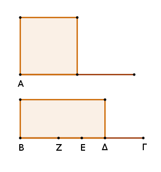
Τῶν γὰρ αὐτῶν κατασκευασθέντων τῷ πρότερον ὁμοίως δείξομεν, ὅτι ἡ ΒΓ τῆς Α μεῖζον δύναται τῷ ἀπὸ τῆς ΖΔ. δεικτέον [οὖν], ὅτι ἀσύμμετρός ἐστιν ἡ ΒΓ τῇ ΔΖ μήκει.
ἐπεὶ γὰρ ἀσύμμετρός ἐστιν ἡ ΒΔ τῇ ΔΓ μήκει, ἀσύμμετρος ἄρα ἐστὶ καὶ ἡ ΒΓ τῇ ΓΔ μήκει. ἀλλὰ ἡ ΔΓ σύμμετρός ἐστι συναμφοτέραις ταῖς ΒΖ, ΔΓ· καὶ ἡ ΒΓ ἄρα ἀσύμμετρός ἐστι συναμφοτέραις ταῖς ΒΖ, ΔΓ. ὥστε καὶ λοιπῇ τῇ ΖΔ ἀσύμμετρός ἐστιν ἡ ΒΓ μήκει. καὶ ἡ ΒΓ τῆς Α μεῖζον δύναται τῷ ἀπὸ τῆς ΖΔ· ἡ ΒΓ ἄρα τῆς Α μεῖζον δύναται τῷ ἀπὸ ἀσυμμέτρου ἑαυτῇ.
Δυνάσθω δὴ πάλιν ἡ ΒΓ τῆς Α μεῖζον τῷ ἀπὸ ἀσυμμέτρου ἑαυτῇ, τῷ δὲ τετάρτῳ τοῦ ἀπὸ τῆς Α ἴσον παρὰ τὴν ΒΓ παραβεβλήσθω ἐλλεῖπον εἴδει τετραγώνῳ, καὶ ἔστω τὸ ὑπὸ τῶν ΒΔ, ΔΓ. δεικτέον, ὅτι ἀσύμμετρός ἐστιν ἡ ΒΔ τῇ ΔΓ μήκει.
Τῶν γὰρ αὐτῶν κατασκευασθέντων ὁμοίως δείξομεν, ὅτι ἡ ΒΓ τῆς Α μεῖζον δύναται τῷ ἀπὸ τῆς ΖΔ. ἀλλὰ ἡ ΒΓ τῆς Α μεῖζον δύναται τῷ ἀπὸ ἀσυμμέτρου ἑαυτῇ. ἀσύμμετρος ἄρα ἐστὶν ἡ ΒΓ τῇ ΖΔ μήκει· ὥστε καὶ λοιπῇ συναμφοτέρῳ τῇ ΒΖ, ΔΓ ἀσύμμετρός ἐστιν ἡ ΒΓ. ἀλλὰ συναμφότερος ἡ ΒΖ, ΔΓ τῇ ΔΓ σύμμετρός ἐστι μήκει· καὶ ἡ ΒΓ ἄρα τῇ ΔΓ ἀσύμμετρός ἐστι μήκει· ὥστε καὶ διελόντι ἡ ΒΔ τῇ ΔΓ ἀσύμμετρός ἐστι μήκει. Ἐὰν ἄρα ὦσι δύο εὐθεῖαι, καὶ τὰ ἑξῆς.
Λ ῆ μ μ α : Ἐπεὶ δέδεικται, ὅτι αἱ μήκει σύμμετροι πάντως καὶ δυνάμει [εἰσὶ σύμμετροι], αἱ δὲ δυνάμει οὐ πάντως καὶ μήκει, ἀλλὰ δὴ δύνανται μήκει καὶ σύμμετροι εἶναι καὶ ἀσύμμετροι, φανερόν, ὅτι, ἐὰν τῇ ἐκκειμένῃ ῥητῇ σύμμετρός τις ᾖ μήκει, λέγεται ῥητὴ καὶ σύμμετρος αὐτῇ οὐ μόνον μήκει, ἀλλὰ καὶ δυνάμει, ἐπεὶ αἱ μήκει σύμμετροι πάντως καὶ δυνάμει. ἐὰν δὲ τῇ ἐκκειμένῃ ῥητῇ σύμμετρός τις ᾖ δυνάμει, εἰ μὲν καὶ μήκει, λέγεται καὶ οὕτως ῥητὴ καὶ σύμμετρος αὐτῇ μήκει καὶ δυνάμει· εἰ δὲ τῇ ἐκκειμένῃ πάλιν ῥητῇ σύμμετρός τις οὖσα δυνάμει μήκει αὐτῇ ᾖ ἀσύμμετρος, λέγεται καὶ οὕτως ῥητὴ δυνάμει μόνον σύμμετρος.
Τὸ ὑπὸ ῥητῶν μήκει συμμέτρων κατά τινα τῶν προειρημένων τρόπων εὐθειῶν περιεχόμενον ὀρθογώνιον ῥητόν ἐστιν.
Ὑπὸ γὰρ ῥητῶν μήκει συμμέτρων εὐθειῶν τῶν ΑΒ, ΒΓ ὀρθογώνιον περιεχέσθω τὸ ΑΓ· λέγω, ὅτι ῥητόν ἐστι τὸ ΑΓ.
Ἀναγεγράφθω γὰρ ἀπὸ τῆς ΑΒ τετράγωνον τὸ ΑΔ· ῥητὸν ἄρα ἐστὶ τὸ ΑΔ. καὶ ἐπεὶ σύμμετρός ἐστιν ἡ ΑΒ τῇ ΒΓ μήκει, ἴση δέ ἐστιν ἡ ΑΒ τῇ ΒΔ, σύμμετρος ἄρα ἐστὶν ἡ ΒΔ τῇ ΒΓ μήκει. καί ἐστιν ὡς ἡ ΒΔ πρὸς τὴν ΒΓ, οὕτως τὸ ΔΑ πρὸς τὸ ΑΓ. σύμμετρον ἄρα ἐστὶ τὸ ΔΑ τῷ ΑΓ. ῥητὸν δὲ τὸ ΔΑ· ῥητὸν ἄρα ἐστὶ καὶ τὸ ΑΓ.
Τὸ ἄρα ὑπὸ ῥητῶν μήκει συμμέτρων, καὶ τὰ ἑξῆς.
Ἐὰν ῥητὸν παρὰ ῥητὴν παραβληθῇ, πλάτος ποιεῖ ῥητὴν καὶ σύμμετρον τῇ, παρ' ἣν παράκειται, μήκει.
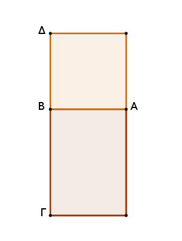
Ῥητὸν γὰρ τὸ ΑΓ παρὰ ῥητὴν κατά τινα πάλιν τῶν προειρημένων τρόπων τὴν ΑΒ παραβεβλήσθω πλάτος ποιοῦν τὴν ΒΓ· λέγω, ὅτι ῥητή ἐστιν ἡ ΒΓ καὶ σύμμετρος τῇ ΒΑ μήκει.
Ἀναγεγράφθω γὰρ ἀπὸ τῆς ΑΒ τετράγωνον τὸ ΑΔ· ῥητὸν ἄρα ἐστὶ τὸ ΑΔ. ῥητὸν δὲ καὶ τὸ ΑΓ· σύμμετρον ἄρα ἐστὶ τὸ ΔΑ τῷ ΑΓ. καί ἐστιν ὡς τὸ ΔΑ πρὸς τὸ ΑΓ, οὕτως ἡ ΔΒ πρὸς τὴν ΒΓ. σύμμετρος ἄρα ἐστὶ καὶ ἡ ΔΒ τῇ ΒΓ· ἴση δὲ ἡ ΔΒ τῇ ΒΑ· σύμμετρος ἄρα καὶ ἡ ΑΒ τῇ ΒΓ. ῥητὴ δέ ἐστιν ἡ ΑΒ· ῥητὴ ἄρα ἐστὶ καὶ ἡ ΒΓ καὶ σύμμετρος τῇ ΑΒ μήκει.
Ἐὰν ἄρα ῥητὸν παρὰ ῥητὴν παραβληθῇ, καὶ τὰ ἑξῆς.
Τὸ ὑπὸ ῥητῶν δυνάμει μόνον συμμέτρων εὐθειῶν περιεχόμενον ὀρθογώνιον ἄλογόν ἐστιν, καὶ ἡ δυναμένη αὐτὸ ἄλογός ἐστιν, καλείσθω δὲ μέση.
Ὑπὸ γὰρ ῥητῶν δυνάμει μόνον συμμέτρων εὐθειῶν τῶν ΑΒ, ΒΓ ὀρθογώνιον περιεχέσθω τὸ ΑΓ· λέγω, ὅτι ἄλογόν ἐστι τὸ ΑΓ, καὶ ἡ δυναμένη αὐτὸ ἄλογός ἐστιν, καλείσθω δὲ μέση.
Ἀναγεγράφθω γὰρ ἀπὸ τῆς ΑΒ τετράγωνον τὸ ΑΔ· ῥητὸν ἄρα ἐστὶ τὸ ΑΔ. καὶ ἐπεὶ ἀσύμμετρός ἐστιν ἡ ΑΒ τῇ ΒΓ μήκει· δυνάμει γὰρ μόνον ὑπόκεινται σύμμετροι· ἴση δὲ ἡ ΑΒ τῇ ΒΔ, ἀσύμμετρος ἄρα ἐστὶ καὶ ἡ ΔΒ τῇ ΒΓ μήκει.
καί ἐστιν ὡς ἡ ΔΒ πρὸς τὴν ΒΓ, οὕτως τὸ ΑΔ πρὸς τὸ ΑΓ· ἀσύμμετρον ἄρα [ἐστὶ] τὸ ΔΑ τῷ ΑΓ. ῥητὸν δὲ τὸ ΔΑ· ἄλογον ἄρα ἐστὶ τὸ ΑΓ· ὥστε καὶ ἡ δυναμένη τὸ ΑΓ [τουτέστιν ἡ ἴσον αὐτῷ τετράγωνον δυναμένη] ἄλογός ἐστιν, καλείσθω δὲ μέση· ὅπερ ἔδει δεῖξαι.
Λ ῆ μ μ α : Ἐὰν ὦσι δύο εὐθεῖαι, ἔστιν ὡς ἡ πρώτη πρὸς τὴν δευτέραν, οὕτως τὸ ἀπὸ τῆς πρώτης πρὸς τὸ ὑπὸ τῶν δύο εὐθειῶν.
Ἔστωσαν δύο εὐθεῖαι αἱ ΖΕ, ΕΗ. λέγω, ὅτι ἐστὶν ὡς ἡ ΖΕ πρὸς τὴν ΕΗ, οὕτως τὸ ἀπὸ τῆς ΖΕ πρὸς τὸ ὑπὸ τῶν ΖΕ, ΕΗ.
Ἀναγεγράφθω γὰρ ἀπὸ τῆς ΖΕ τετράγωνον τὸ ΔΖ, καὶ συμπεπληρώσθω τὸ ΗΔ. ἐπεὶ οὖν ἐστιν ὡς ἡ ΖΕ πρὸς τὴν ΕΗ, οὕτως τὸ ΖΔ πρὸς τὸ ΔΗ, καί ἐστι τὸ μὲν ΖΔ τὸ ἀπὸ τῆς ΖΕ, τὸ δὲ ΔΗ τὸ ὑπὸ τῶν ΔΕ, ΕΗ, τουτέστι τὸ ὑπὸ τῶν ΖΕ, ΕΗ, ἔστιν ἄρα ὡς ἡ ΖΕ τὴν ΕΗ, οὕτως τὸ ἀπὸ τῆς ΖΕ πρὸς τὸ ὑπὸ τῶν ΖΕ, ΕΗ. ὁμοίως δὲ καὶ ὡς τὸ ὑπὸ τῶν ΗΕ, ΕΖ πρὸς τὸ ἀπὸ τῆς ΕΖ, τουτέστιν ὡς τὸ ΗΔ πρὸς τὸ ΖΔ, οὕτως ἡ ΗΕ πρὸς τὴν ΕΖ· ὅπερ ἔδει δεῖξαι.
Τὸ ἀπὸ μέσης παρὰ ῥητὴν παραβαλλόμενον πλάτος ποιεῖ ῥητὴν καὶ ἀσύμμετρον τῇ, παρ' ἣν παράκειται, μήκει.
Ἔστω μέση μὲν ἡ Α, ῥητὴ δὲ ἡ ΓΒ, καὶ τῷ ἀπὸ τῆς Α ἴσον παρὰ τὴν ΒΓ παραβεβλήσθω χωρίον ὀρθογώνιον τὸ ΒΔ πλάτος ποιοῦν τὴν ΓΔ· λέγω, ὅτι ῥητή ἐστιν ἡ ΓΔ καὶ ἀσύμμετρος τῇ ΓΒ μήκει.
Ἐπεὶ γὰρ μέση ἐστὶν ἡ Α, δύναται χωρίον περιεχόμενον ὑπὸ ῥητῶν δυνάμει μόνον συμμέτρων. δυνάσθω τὸ ΗΖ. δύναται δὲ καὶ τὸ ΒΔ· ἴσον ἄρα ἐστὶ τὸ ΒΔ τῷ ΗΖ.
ἔστι δὲ αὐτῷ καὶ ἰσογώνιον· τῶν δὲ ἴσων τε καὶ ἰσογωνίων παραλληλογράμμων ἀντιπεπόνθασιν αἱ πλευραὶ αἱ περὶ τὰς ἴσας γωνίας· ἀνάλογον ἄρα ἐστὶν ὡς ἡ ΒΓ πρὸς τὴν ΕΗ, οὕτως ἡ ΕΖ πρὸς τὴν ΓΔ.
ἔστιν ἄρα καὶ ὡς τὸ ἀπὸ τῆς ΒΓ πρὸς τὸ ἀπὸ τῆς ΕΗ, οὕτως τὸ ἀπὸ τῆς ΕΖ πρὸς τὸ ἀπὸ τῆς ΓΔ. σύμμετρον δέ ἐστι τὸ ἀπὸ τῆς ΓΒ τῷ ἀπὸ τῆς ΕΗ· ῥητὴ γάρ ἐστιν ἑκατέρα αὐτῶν· σύμμετρον ἄρα ἐστὶ καὶ τὸ ἀπὸ τῆς ΕΖ τῷ ἀπὸ τῆς ΓΔ. ῥητὸν δέ ἐστι τὸ ἀπὸ τῆς ΕΖ· ῥητὸν ἄρα ἐστὶ καὶ τὸ ἀπὸ τῆς ΓΔ· ῥητὴ ἄρα ἐστὶν ἡ ΓΔ. καὶ ἐπεὶ ἀσύμμετρός ἐστιν ἡ ΕΖ τῇ ΕΗ μήκει· δυνάμει γὰρ μόνον εἰσὶ σύμμετροι· ὡς δὲ ἡ ΕΖ πρὸς τὴν ΕΗ, οὕτως τὸ ἀπὸ τῆς ΕΖ πρὸς τὸ ὑπὸ τῶν ΖΕ, ΕΗ, ἀσύμμετρον ἄρα [ἐστὶ] τὸ ἀπὸ τῆς ΕΖ τῷ ὑπὸ τῶν ΖΕ, ΕΗ.
ἀλλὰ τῷ μὲν ἀπὸ τῆς ΕΖ σύμμετρόν ἐστι τὸ ἀπὸ τῆς ΓΔ· ῥηταὶ γάρ εἰσι δυνάμει· τῷ δὲ ὑπὸ τῶν ΖΕ, ΕΗ σύμμετρόν ἐστι τὸ ὑπὸ τῶν ΑΓ, ΓΒ· ἴσα γάρ ἐστι τῷ ἀπὸ τῆς Α· ἀσύμμετρον ἄρα ἐστὶ καὶ τὸ ἀπὸ τῆς ΓΔ τῷ ὑπὸ τῶν ΔΓ, ΓΒ. ὡς δὲ τὸ ἀπὸ τῆς ΓΔ πρὸς τὸ ὑπὸ τῶν ΔΓ, ΓΒ, οὕτως ἐστὶν ἡ ΔΓ πρὸς τὴν ΓΒ· ἀσύμμετρος ἄρα ἐστὶν ἡ ΔΓ τῇ ΓΒ μήκει. ῥητὴ ἄρα ἐστὶν ἡ ΓΔ καὶ ἀσύμμετρος τῇ ΓΒ μήκει· ὅπερ ἔδει δεῖξαι.
Ἡ τῇ μέσῃ σύμμετρος μέση ἐστίν.
Ἔστω μέση ἡ Α, καὶ τῇ Α σύμμετρος ἔστω ἡ Β· λέγω, ὅτι καὶ ἡ Β μέση ἐστίν.
Ἐκκείσθω γὰρ ῥητὴ ἡ ΓΔ, καὶ τῷ μὲν ἀπὸ τῆς Α ἴσον παρὰ τὴν ΓΔ παραβεβλήσθω χωρίον ὀρθογώνιον τὸ ΓΕ πλάτος ποιοῦν τὴν ΕΔ· ῥητὴ ἄρα ἐστὶν ἡ ΕΔ καὶ ἀσύμμετρος τῇ ΓΔ μήκει. τῷ δὲ ἀπὸ τῆς Β ἴσον παρὰ τὴν ΓΔ παραβεβλήσθω χωρίον ὀρθογώνιον τὸ ΓΖ πλάτος ποιοῦν τὴν ΔΖ.
ἐπεὶ οὖν σύμμετρός ἐστιν ἡ Α τῇ Β, σύμμετρόν ἐστι καὶ τὸ ἀπὸ τῆς Α τῷ ἀπὸ τῆς Β. ἀλλὰ τῷ μὲν ἀπὸ τῆς Α ἴσον ἐστὶ τὸ ΕΓ, τῷ δὲ ἀπὸ τῆς Β ἴσον ἐστὶ τὸ ΓΖ· σύμμετρον ἄρα ἐστὶ τὸ ΕΓ τῷ ΓΖ. καί ἐστιν ὡς τὸ ΕΓ πρὸς τὸ ΓΖ, οὕτως ἡ ΕΔ πρὸς τὴν ΔΖ· σύμμετρος ἄρα ἐστὶν ἡ ΕΔ τῇ ΔΖ μήκει. ῥητὴ δέ ἐστιν ἡ ΕΔ καὶ ἀσύμμετρος τῇ ΔΓ μήκει· ῥητὴ ἄρα ἐστὶ καὶ ἡ ΔΖ καὶ ἀσύμμετρος τῇ ΔΓ μήκει· αἱ ΓΔ, ΔΖ ἄρα ῥηταί εἰσι δυνάμει μόνον σύμμετροι. ἡ δὲ τὸ ὑπὸ ῥητῶν δυνάμει μόνον συμμέτρων δυναμένη μέση ἐστίν. ἡ ἄρα τὸ ὑπὸ τῶν ΓΔ, ΔΖ δυναμένη μέση ἐστίν· καὶ δύναται τὸ ὑπὸ τῶν ΓΔ, ΔΖ ἡ Β· μέση ἄρα ἐστὶν ἡ Β.
Πόρισμα Ἐκ δὴ τούτου φανερόν, ὅτι τὸ τῷ μέσῳ χωρίῳ σύμμετρον μέσον ἐστίν. [δύνανται γὰρ αὐτὰ εὐθεῖαι, αἵ εἰσι δυνάμει σύμμετροι, ὧν ἡ ἑτέρα μέση· ὥστε καὶ ἡ λοιπὴ μέση ἐστίν.] Ὡσαύτως δὲ τοῖς ἐπὶ τῶν ῥητῶν εἰρημένοις καὶ ἐπὶ τῶν μέσων ἐξακολουθεῖ, τὴν τῇ μέσῃ μήκει σύμμετρον λέγεσθαι μέσην καὶ σύμμετρον αὐτῇ μὴ μόνον μήκει, ἀλλὰ καὶ δυνάμει, ἐπειδήπερ καθόλου αἱ μήκει σύμμετροι πάντως καὶ δυνάμει. ἐὰν δὲ τῇ μέσῃ σύμμετρός τις ᾖ δυνάμει, εἰ μὲν καὶ μήκει, λέγονται καὶ οὕτως μέσαι καὶ σύμμετροι μήκει καὶ δυνάμει, εἰ δὲ δυνάμει μόνον, λέγονται μέσαι δυνάμει μόνον σύμμετροι.
Τὸ ὑπὸ μέσων μήκει συμμέτρων εὐθειῶν κατά τινα τῶν εἰρημένων τρόπων περιεχόμενον ὀρθογώνιον μέσον ἐστίν.
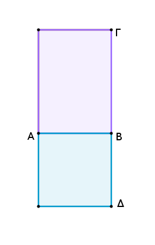
Ὑπὸ γὰρ μέσων μήκει συμμέτρων εὐθειῶν τῶν ΑΒ, ΒΓ περιεχέσθω ὀρθογώνιον τὸ ΑΓ· λέγω, ὅτι τὸ ΑΓ μέσον ἐστίν.
Ἀναγεγράφθω γὰρ ἀπὸ τῆς ΑΒ τετράγωνον τὸ ΑΔ· μέσον ἄρα ἐστὶ τὸ ΑΔ. καὶ ἐπεὶ σύμμετρός ἐστιν ἡ ΑΒ τῇ ΒΓ μήκει, ἴση δὲ ἡ ΑΒ τῇ ΒΔ, σύμμετρος ἄρα ἐστὶ καὶ ἡ ΔΒ τῇ ΒΓ μήκει· ὥστε καὶ τὸ ΔΑ τῷ ΑΓ σύμμετρόν ἐστιν. μέσον δὲ τὸ ΔΑ· μέσον ἄρα καὶ τὸ ΑΓ· ὅπερ ἔδει δεῖξαι.
Τὸ ὑπὸ μέσων δυνάμει μόνον συμμέτρων εὐθειῶν περιεχόμενον ὀρθογώνιον ἤτοι ῥητὸν ἢ μέσον ἐστίν.
Ὑπὸ γὰρ μέσων δυνάμει μόνον συμμέτρων εὐθειῶν τῶν ΑΒ, ΒΓ ὀρθογώνιον περιεχέσθω τὸ ΑΓ· λέγω, ὅτι τὸ ΑΓ ἤτοι ῥητὸν ἢ μέσον ἐστίν.
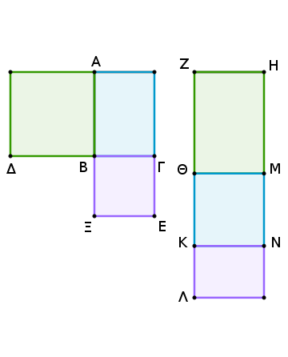
Ἀναγεγράφθω γὰρ ἀπὸ τῶν ΑΒ, ΒΓ τετράγωνα τὰ ΑΔ, ΒΕ· μέσον ἄρα ἐστὶν ἑκάτερον τῶν ΑΔ, ΒΕ. καὶ ἐκκείσθω ῥητὴ ἡ ΖΗ, καὶ τῷ μὲν ΑΔ ἴσον παρὰ τὴν ΖΗ παραβεβλήσθω ὀρθογώνιον παραλληλόγραμμον τὸ ΗΘ πλάτος ποιοῦν τὴν ΖΘ, τῷ δὲ ΑΓ ἴσον παρὰ τὴν ΘΜ παραβεβλήσθω ὀρθογώνιον παραλληλόγραμμον τὸ ΜΚ πλάτος ποιοῦν τὴν ΘΚ, καὶ ἔτι τῷ ΒΕ ἴσον ὁμοίως παρὰ τὴν ΚΝ παραβεβλήσθω τὸ ΝΛ πλάτος ποιοῦν τὴν ΚΛ· ἐπ' εὐθείας ἄρα εἰσὶν αἱ ΖΘ, ΘΚ, ΚΛ.
ἐπεὶ οὖν μέσον ἐστὶν ἑκάτερον τῶν ΑΔ, ΒΕ, καί ἐστιν ἴσον τὸ μὲν ΑΔ τῷ ΗΘ, τὸ δὲ ΒΕ τῷ ΝΛ, μέσον ἄρα καὶ ἑκάτερον τῶν ΗΘ, ΝΛ. καὶ παρὰ ῥητὴν τὴν ΖΗ παράκειται· ῥητὴ ἄρα ἐστὶν ἑκατέρα τῶν ΖΘ, ΚΛ καὶ ἀσύμμετρος τῇ ΖΗ μήκει.
καὶ ἐπεὶ σύμμετρόν ἐστι τὸ ΑΔ τῷ ΒΕ, σύμμετρον ἄρα ἐστὶ καὶ τὸ ΗΘ τῷ ΝΛ. καί ἐστιν ὡς τὸ ΗΘ πρὸς τὸ ΝΛ, οὕτως ἡ ΖΘ πρὸς τὴν ΚΛ· σύμμετρος ἄρα ἐστὶν ἡ ΖΘ τῇ ΚΛ μήκει. αἱ ΖΘ, ΚΛ ἄρα ῥηταί εἰσι μήκει σύμμετροι· ῥητὸν ἄρα ἐστὶ τὸ ὑπὸ τῶν ΖΘ, ΚΛ.
καὶ ἐπεὶ ἴση ἐστὶν ἡ μὲν ΔΒ τῇ ΒΑ, ἡ δὲ ΞΒ τῇ ΒΓ, ἔστιν ἄρα ὡς ἡ ΔΒ πρὸς τὴν ΒΓ, οὕτως ἡ ΑΒ πρὸς τὴν ΒΞ. ἀλλ' ὡς μὲν ἡ ΔΒ πρὸς τὴν ΒΓ, οὕτως τὸ ΔΑ πρὸς τὸ ΑΓ· ὡς δὲ ἡ ΑΒ πρὸς τὴν ΒΞ, οὕτως τὸ ΑΓ πρὸς τὸ ΓΞ· ἔστιν ἄρα ὡς τὸ ΔΑ πρὸς τὸ ΑΓ, οὕτως τὸ ΑΓ πρὸς τὸ ΓΞ.
ἴσον δέ ἐστι τὸ μὲν ΑΔ τῷ ΗΘ, τὸ δὲ ΑΓ τῷ ΜΚ, τὸ δὲ ΓΞ τῷ ΝΛ· ἔστιν ἄρα ὡς τὸ ΗΘ πρὸς τὸ ΜΚ, οὕτως τὸ ΜΚ πρὸς τὸ ΝΛ· ἔστιν ἄρα καὶ ὡς ἡ ΖΘ πρὸς τὴν ΘΚ, οὕτως ἡ ΘΚ πρὸς τὴν ΚΛ· τὸ ἄρα ὑπὸ τῶν ΖΘ, ΚΛ ἴσον ἐστὶ τῷ ἀπὸ τῆς ΘΚ. ῥητὸν δὲ τὸ ὑπὸ τῶν ΖΘ, ΚΛ· ῥητὸν ἄρα ἐστὶ καὶ τὸ ἀπὸ τῆς ΘΚ· ῥητὴ ἄρα ἐστὶν ἡ ΘΚ.
καὶ εἰ μὲν σύμμετρός ἐστι τῇ ΖΗ μήκει, ῥητόν ἐστι τὸ ΘΝ· εἰ δὲ ἀσύμμετρός ἐστι τῇ ΖΗ μήκει, αἱ ΚΘ, ΘΜ ῥηταί εἰσι δυνάμει μόνον σύμμετροι· μέσον ἄρα τὸ ΘΝ. τὸ ΘΝ ἄρα ἤτοι ῥητὸν ἢ μέσον ἐστίν. ἴσον δὲ τὸ ΘΝ τῷ ΑΓ· τὸ ΑΓ ἄρα ἤτοι ῥητὸν ἢ μέσον ἐστίν.
Τὸ ἄρα ὑπὸ μέσων δυνάμει μόνον συμμέτρων, καὶ τὰ ἑξῆς.
Μέσον μέσου οὐχ ὑπερέχει ῥητῷ.
Εἰ γὰρ δυνατόν, μέσον τὸ ΑΒ μέσου τοῦ ΑΓ ὑπερεχέτω ῥητῷ τῷ ΔΒ, καὶ ἐκκείσθω ῥητὴ ἡ ΕΖ, καὶ τῷ ΑΒ ἴσον παρὰ τὴν ΕΖ παραβεβλήσθω παραλληλόγραμμον ὀρθογώνιον τὸ ΖΘ πλάτος ποιοῦν τὴν ΕΘ, τῷ δὲ ΑΓ ἴσον ἀφῃρήσθω τὸ ΖΗ· λοιπὸν ἄρα τὸ ΒΔ λοιπῷ τῷ ΚΘ ἐστιν ἴσον. ῥητὸν δέ ἐστι τὸ ΔΒ· ῥητὸν ἄρα ἐστὶ καὶ τὸ ΚΘ.
ἐπεὶ οὖν μέσον ἐστὶν ἑκάτερον τῶν ΑΒ, ΑΓ, καί ἐστι τὸ μὲν ΑΒ τῷ ΖΘ ἴσον, τὸ δὲ ΑΓ τῷ ΖΗ, μέσον ἄρα καὶ ἑκάτερον τῶν ΖΘ, ΖΗ. καὶ παρὰ ῥητὴν τὴν ΕΖ παράκειται· ῥητὴ ἄρα ἐστὶν ἑκατέρα τῶν ΘΕ, ΕΗ καὶ ἀσύμμετρος τῇ ΕΖ μήκει.
καὶ ἐπεὶ ῥητόν ἐστι τὸ ΔΒ καί ἐστιν ἴσον τῷ ΚΘ, ῥητὸν ἄρα ἐστὶ καὶ τὸ ΚΘ. καὶ παρὰ ῥητὴν τὴν ΕΖ παράκειται· ῥητὴ ἄρα ἐστὶν ἡ ΗΘ καὶ σύμμετρος τῇ ΕΖ μήκει.
ἀλλὰ καὶ ἡ ΕΗ ῥητή ἐστι καὶ ἀσύμμετρος τῇ ΕΖ μήκει· ἀσύμμετρος ἄρα ἐστὶν ἡ ΕΗ τῇ ΗΘ μήκει. καί ἐστιν ὡς ἡ ΕΗ πρὸς τὴν ΗΘ, οὕτως τὸ ἀπὸ τῆς ΕΗ πρὸς τὸ ὑπὸ τῶν ΕΗ, ΗΘ· ἀσύμμετρον ἄρα ἐστὶ τὸ ἀπὸ τῆς ΕΗ τῷ ὑπὸ τῶν ΕΗ, ΗΘ.
ἀλλὰ τῷ μὲν ἀπὸ τῆς ΕΗ σύμμετρά ἐστι τὰ ἀπὸ τῶν ΕΗ, ΗΘ τετράγωνα· ῥητὰ γὰρ ἀμφότερα· τῷ δὲ ὑπὸ τῶν ΕΗ, ΗΘ σύμμετρόν ἐστι τὸ δὶς ὑπὸ τῶν ΕΗ, ΗΘ· διπλάσιον γάρ ἐστιν αὐτοῦ· ἀσύμμετρα ἄρα ἐστὶ τὰ ἀπὸ τῶν ΕΗ, ΗΘ τῷ δὶς ὑπὸ τῶν ΕΗ, ΗΘ· καὶ συναμφότερα ἄρα τά τε ἀπὸ τῶν ΕΗ, ΗΘ καὶ τὸ δὶς ὑπὸ τῶν ΕΗ, ΗΘ, ὅπερ ἐστὶ τὸ ἀπὸ τῆς ΕΘ, ἀσύμμετρόν ἐστι τοῖς ἀπὸ τῶν ΕΗ, ΗΘ. ῥητὰ δὲ τὰ ἀπὸ τῶν ΕΗ, ΗΘ· ἄλογον ἄρα τὸ ἀπὸ τῆς ΕΘ. ἄλογος ἄρα ἐστὶν ἡ ΕΘ. ἀλλὰ καὶ ῥητή· ὅπερ ἐστὶν ἀδύνατον.
Μέσον ἄρα μέσου οὐχ ὑπερέχει ῥητῷ· ὅπερ ἔδει δεῖξαι.
Μέσας εὑρεῖν δυνάμει μόνον συμμέτρους ῥητὸν περιεχούσας.
Ἐκκείσθωσαν δύο ῥηταὶ δυνάμει μόνον σύμμετροι αἱ Α, Β, καὶ εἰλήφθω τῶν Α, Β μέση ἀνάλογον ἡ Γ, καὶ γεγονέτω ὡς ἡ Α πρὸς τὴν Β, οὕτως ἡ Γ πρὸς τὴν Δ.
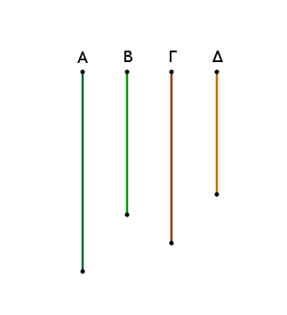
Καὶ ἐπεὶ αἱ Α, Β ῥηταί εἰσι δυνάμει μόνον σύμμετροι, τὸ ἄρα ὑπὸ τῶν Α, Β, τουτέστι τὸ ἀπὸ τῆς Γ, μέσον ἐστίν. μέση ἄρα ἡ Γ.
καὶ ἐπεί ἐστιν ὡς ἡ Α πρὸς τὴν Β, [οὕτως] ἡ Γ πρὸς τὴν Δ, αἱ δὲ Α, Β δυνάμει μόνον [εἰσὶ] σύμμετροι, καὶ αἱ Γ, Δ ἄρα δυνάμει μόνον εἰσὶ σύμμετροι. καί ἐστι μέση ἡ Γ· μέση ἄρα καὶ ἡ Δ. αἱ Γ, Δ ἄρα μέσαι εἰσὶ δυνάμει μόνον σύμμετροι.
λέγω, ὅτι καὶ ῥητὸν περιέχουσιν. ἐπεὶ γάρ ἐστιν ὡς ἡ Α πρὸς τὴν Β, οὕτως ἡ Γ πρὸς τὴν Δ, ἐναλλὰξ ἄρα ἐστὶν ὡς ἡ Α πρὸς τὴν Γ, ἡ Β πρὸς τὴν Δ. ἀλλ' ὡς ἡ Α πρὸς τὴν Γ, ἡ Γ πρὸς τὴν Β· καὶ ὡς ἄρα ἡ Γ πρὸς τὴν Β, οὕτως ἡ Β πρὸς τὴν Δ· τὸ ἄρα ὑπὸ τῶν Γ, Δ ἴσον ἐστὶ τῷ ἀπὸ τῆς Β. ῥητὸν δὲ τὸ ἀπὸ τῆς Β· ῥητὸν ἄρα [ἐστὶ] καὶ τὸ ὑπὸ τῶν Γ, Δ.
Εὕρηνται ἄρα μέσαι δυνάμει μόνον σύμμετροι ῥητὸν περιέχουσαι· ὅπερ ἔδει δεῖξαι.
Μέσας εὑρεῖν δυνάμει μόνον συμμέτρους μέσον περιεχούσας.
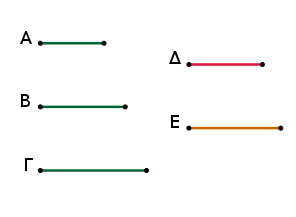
Ἐκκείσθωσαν [τρεῖς] ῥηταὶ δυνάμει μόνον σύμμετροι αἱ Α, Β, Γ, καὶ εἰλήφθω τῶν Α, Β μέση ἀνάλογον ἡ Δ, καὶ γεγονέτω ὡς ἡ Β πρὸς τὴν Γ, ἡ Δ πρὸς τὴν Ε.
Ἐπεὶ αἱ Α, Β ῥηταί εἰσι δυνάμει μόνον σύμμετροι, τὸ ἄρα ὑπὸ τῶν Α, Β, τουτέστι τὸ ἀπὸ τῆς Δ, μέσον ἐστίν. μέση ἄρα ἡ Δ.
καὶ ἐπεὶ αἱ Β, Γ δυνάμει μόνον εἰσὶ σύμμετροι, καί ἐστιν ὡς ἡ Β πρὸς τὴν Γ, ἡ Δ πρὸς τὴν Ε, καὶ αἱ Δ, Ε ἄρα δυνάμει μόνον εἰσὶ σύμμετροι. μέση δὲ ἡ Δ· μέση ἄρα καὶ ἡ Ε· αἱ Δ, Ε ἄρα μέσαι εἰσὶ δυνάμει μόνον σύμμετροι.
λέγω δή, ὅτι καὶ μέσον περιέχουσιν. ἐπεὶ γάρ ἐστιν ὡς ἡ Β πρὸς τὴν Γ, ἡ Δ πρὸς τὴν Ε, ἐναλλὰξ ἄρα ὡς ἡ Β πρὸς τὴν Δ, ἡ Γ πρὸς τὴν Ε. ὡς δὲ ἡ Β πρὸς τὴν Δ, ἡ Δ πρὸς τὴν Α· καὶ ὡς ἄρα ἡ Δ πρὸς τὴν Α, ἡ Γ πρὸς τὴν Ε· τὸ ἄρα ὑπὸ τῶν Α, Γ ἴσον ἐστὶ τῷ ὑπὸ τῶν Δ, Ε. μέσον δὲ τὸ ὑπὸ τῶν Α, Γ· μέσον ἄρα καὶ τὸ ὑπὸ τῶν Δ, Ε.
Εὕρηνται ἄρα μέσαι δυνάμει μόνον σύμμετροι μέσον περιέχουσαι· ὅπερ ἔδει δεῖξαι.
Λ ῆ μ μ α : Εὑρεῖν δύο τετραγώνους ἀριθμούς, ὥστε καὶ τὸν συγκείμενον ἐξ αὐτῶν εἶναι τετράγωνον.
Ἐκκείσθωσαν δύο ἀριθμοὶ οἱ ΑΒ, ΒΓ, ἔστωσαν δὲ ἤτοι ἄρτιοι ἢ περιττοί. καὶ ἐπεί, ἐάν τε ἀπὸ ἀρτίου ἄρτιος ἀφαιρεθῇ, ἐάν τε ἀπὸ περισσοῦ περισσός, ὁ λοιπὸς ἄρτιός ἐστιν, ὁ λοιπὸς ἄρα ὁ ΑΓ ἄρτιός ἐστιν.
τετμήσθω ὁ ΑΓ δίχα κατὰ τὸ Δ. ἔστωσαν δὲ καὶ οἱ ΑΒ, ΒΓ ἤτοι ὅμοιοι ἐπίπεδοι ἢ τετράγωνοι, οἳ καὶ αὐτοὶ ὅμοιοί εἰσιν ἐπίπεδοι· ὁ ἄρα ἐκ τῶν ΑΒ, ΒΓ μετὰ τοῦ ἀπὸ [τοῦ] ΓΔ τετραγώνου ἴσος ἐστὶ τῷ ἀπὸ τοῦ ΒΔ τετραγώνῳ.
καί ἐστι τετράγωνος ὁ ἐκ τῶν ΑΒ, ΒΓ, ἐπειδήπερ ἐδείχθη, ὅτι, ἐὰν δύο ὅμοιοι ἐπίπεδοι πολλαπλασιάσαντες ἀλλήλους ποιῶσί τινα, ὁ γενόμενος τετράγωνός ἐστιν. εὕρηνται ἄρα δύο τετράγωνοι ἀριθμοὶ ὅ τε ἐκ τῶν ΑΒ, ΒΓ καὶ ὁ ἀπὸ τοῦ ΓΔ, οἳ συντεθέντες ποιοῦσι τὸν ἀπὸ τοῦ ΒΔ τετράγωνον.
Καὶ φανερόν, ὅτι εὕρηνται πάλιν δύο τετράγωνοι ὅ τε ἀπὸ τοῦ ΒΔ καὶ ὁ ἀπὸ τοῦ ΓΔ, ὥστε τὴν ὑπεροχὴν αὐτῶν τὸν ὑπὸ ΑΒ, ΒΓ εἶναι τετράγωνον, ὅταν οἱ ΑΒ, ΒΓ ὅμοιοι ὦσιν ἐπίπεδοι. ὅταν δὲ μὴ ὦσιν ὅμοιοι ἐπίπεδοι, εὕρηνται δύο τετράγωνοι ὅ τε ἀπὸ τοῦ ΒΔ καὶ ὁ ἀπὸ τοῦ ΔΓ, ὧν ἡ ὑπεροχὴ ὁ ὑπὸ τῶν ΑΒ, ΒΓ οὐκ ἔστι τετράγωνος· ὅπερ ἔδει δεῖξαι.
Λ ῆ μ μ α : Εὑρεῖν δύο τετραγώνους ἀριθμούς, ὥστε τὸν ἐξ αὐτῶν συγκείμενον μὴ εἶναι τετράγωνον.
Ἔστω γὰρ ὁ ἐκ τῶν ΑΒ, ΒΓ, ὡς ἔφαμεν, τετράγωνος, καὶ ἄρτιος ὁ ΓΑ, καὶ τετμήσθω ὁ ΓΑ δίχα τῷ Δ. φανερὸν δή, ὅτι ὁ ἐκ τῶν ΑΒ, ΒΓ τετράγωνος μετὰ τοῦ ἀπὸ [τοῦ] ΓΔ τετραγώνου ἴσος ἐστὶ τῷ ἀπὸ [τοῦ] ΒΔ τετραγώνῳ. ἀφῃρήσθω μονὰς ἡ ΔΕ· ὁ ἄρα ἐκ τῶν ΑΒ, ΒΓ μετὰ τοῦ ἀπὸ [τοῦ] ΓΕ ἐλάσσων ἐστὶ τοῦ ἀπὸ [τοῦ] ΒΔ τετραγώνου. λέγω οὖν, ὅτι ὁ ἐκ τῶν ΑΒ, ΒΓ τετράγωνος μετὰ τοῦ ἀπὸ [τοῦ] ΓΕ οὐκ ἔσται τετράγωνος.
Εἰ γὰρ ἔσται τετράγωνος, ἤτοι ἴσος ἐστὶ τῷ ἀπὸ [τοῦ] ΒΕ ἢ ἐλάσσων τοῦ ἀπὸ [τοῦ] ΒΕ, οὐκέτι δὲ καὶ μείζων, ἵνα μὴ τμηθῇ ἡ μονάς. ἔστω, εἰ δυνατόν, πρότερον ὁ ἐκ τῶν ΑΒ, ΒΓ μετὰ τοῦ ἀπὸ ΓΕ ἴσος τῷ ἀπὸ ΒΕ, καὶ ἔστω τῆς ΔΕ μονάδος διπλασίων ὁ ΗΑ.
ἐπεὶ οὖν ὅλος ὁ ΑΓ ὅλου τοῦ ΓΔ ἐστι διπλασίων, ὧν ὁ ΑΗ τοῦ ΔΕ ἐστι διπλασίων, καὶ λοιπὸς ἄρα ὁ ΗΓ λοιποῦ τοῦ ΕΓ ἐστι διπλασίων· δίχα ἄρα τέτμηται ὁ ΗΓ τῷ Ε. ὁ ἄρα ἐκ τῶν ΗΒ, ΒΓ μετὰ τοῦ ἀπὸ ΓΕ ἴσος ἐστὶ τῷ ἀπὸ ΒΕ τετραγώνῳ.
ἀλλὰ καὶ ὁ ἐκ τῶν ΑΒ, ΒΓ μετὰ τοῦ ἀπὸ ΓΕ ἴσος ὑπόκειται τῷ ἀπὸ [τοῦ] ΒΕ τετραγώνῳ· ὁ ἄρα ἐκ τῶν ΗΒ, ΒΓ μετὰ τοῦ ἀπὸ ΓΕ ἴσος ἐστὶ τῷ ἐκ τῶν ΑΒ, ΒΓ μετὰ τοῦ ἀπὸ ΓΕ. καὶ κοινοῦ ἀφαιρεθέντος τοῦ ἀπὸ ΓΕ συνάγεται ὁ ΑΒ ἴσος τῷ ΗΒ· ὅπερ ἄτοπον. οὐκ ἄρα ὁ ἐκ τῶν ΑΒ, ΒΓ μετὰ τοῦ ἀπὸ [τοῦ] ΓΕ ἴσος ἐστὶ τῷ ἀπὸ ΒΕ.
λέγω δή, ὅτι οὐδὲ ἐλάσσων τοῦ ἀπὸ ΒΕ. εἰ γὰρ δυνατόν, ἔστω τῷ ἀπὸ ΒΖ ἴσος, καὶ τοῦ ΔΖ διπλασίων ὁ ΘΑ. καὶ συναχθήσεται πάλιν διπλασίων ὁ ΘΓ τοῦ ΓΖ· ὥστε καὶ τὸν ΓΘ δίχα τετμῆσθαι κατὰ τὸ Ζ, καὶ διὰ τοῦτο τὸν ἐκ τῶν ΘΒ, ΒΓ μετὰ τοῦ ἀπὸ ΖΓ ἴσον γίνεσθαι τῷ ἀπὸ ΒΖ.
ὑπόκειται δὲ καὶ ὁ ἐκ τῶν ΑΒ, ΒΓ μετὰ τοῦ ἀπὸ ΓΕ ἴσος τῷ ἀπὸ ΒΖ. ὥστε καὶ ὁ ἐκ τῶν ΘΒ, ΒΓ μετὰ τοῦ ἀπὸ ΓΖ ἴσος ἔσται τῷ ἐκ τῶν ΑΒ, ΒΓ μετὰ τοῦ ἀπὸ ΓΕ· ὅπερ ἄτοπον. οὐκ ἄρα ὁ ἐκ τῶν ΑΒ, ΒΓ μετὰ τοῦ ἀπὸ ΓΕ ἴσος ἐστὶ [τῷ] ἐλάσσονι τοῦ ἀπὸ ΒΕ.
ἐδείχθη δέ, ὅτι οὐδὲ [αὐτῷ] τῷ ἀπὸ ΒΕ. οὐκ ἄρα ὁ ἐκ τῶν ΑΒ, ΒΓ μετὰ τοῦ ἀπὸ ΓΕ τετράγωνός ἐστιν. [δυνατοῦ δὲ ὄντος καὶ κατὰ πλείονας τρόπους τοὺς εἰρημένους ἀριθμοὺς ἐπιδεικνύειν, ἀρκείσθωσαν ἡμῖν οἱ εἰρημένοι, ἵνα μὴ μακροτέρας οὔσης τῆς πραγματείας ἐπὶ πλέον αὐτὴν μηκύνωμεν.] ὅπερ ἔδει δεῖξαι.
Εὑρεῖν δύο ῥητὰς δυνάμει μόνον συμμέτρους, ὥστε τὴν μείζονα τῆς ἐλάσσονος μεῖζον δύνασθαι τῷ ἀπὸ συμμέτρου ἑαυτῇ μήκει.
Ἐκκείσθω γάρ τις ῥητὴ ἡ ΑΒ καὶ δύο τετράγωνοι ἀριθμοὶ οἱ ΓΔ, ΔΕ, ὥστε τὴν ὑπεροχὴν αὐτῶν τὸν ΓΕ μὴ εἶναι τετράγωνον, καὶ γεγράφθω ἐπὶ τῆς ΑΒ ἡμικύκλιον τὸ ΑΖΒ, καὶ πεποιήσθω ὡς ὁ ΔΓ πρὸς τὸν ΓΕ, οὕτως τὸ ἀπὸ τῆς ΒΑ τετράγωνον πρὸς τὸ ἀπὸ τῆς ΑΖ τετράγωνον καὶ ἐπεζεύχθω ἡ ΖΒ.
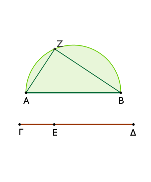
Ἐπεὶ [οὖν] ἐστιν ὡς τὸ ἀπὸ τῆς ΒΑ πρὸς τὸ ἀπὸ τῆς ΑΖ, οὕτως ὁ ΔΓ πρὸς τὸν ΓΕ, τὸ ἀπὸ τῆς ΒΑ ἄρα πρὸς τὸ ἀπὸ τῆς ΑΖ λόγον ἔχει, ὃν ἀριθμὸς ὁ ΔΓ πρὸς ἀριθμὸν τὸν ΓΕ· σύμμετρον ἄρα ἐστὶ τὸ ἀπὸ τῆς ΒΑ τῷ ἀπὸ τῆς ΑΖ. ῥητὸν δὲ τὸ ἀπὸ τῆς ΑΒ· ῥητὸν ἄρα καὶ τὸ ἀπὸ τῆς ΑΖ· ῥητὴ ἄρα καὶ ἡ ΑΖ.
καὶ ἐπεὶ ὁ ΔΓ πρὸς τὸν ΓΕ λόγον οὐκ ἔχει, ὃν τετράγωνος ἀριθμὸς πρὸς τετράγωνον ἀριθμόν, οὐδὲ τὸ ἀπὸ τῆς ΒΑ ἄρα πρὸς τὸ ἀπὸ τῆς ΑΖ λόγον ἔχει, ὃν τετράγωνος ἀριθμὸς πρὸς τετράγωνον ἀριθμόν· ἀσύμμετρος ἄρα ἐστὶν ἡ ΑΒ τῇ ΑΖ μήκει· αἱ ΒΑ, ΑΖ ἄρα ῥηταί εἰσι δυνάμει μόνον σύμμετροι.
καὶ ἐπεί [ἐστιν] ὡς ὁ ΔΓ πρὸς τὸν ΓΕ, οὕτως τὸ ἀπὸ τῆς ΒΑ πρὸς τὸ ἀπὸ τῆς ΑΖ, ἀναστρέψαντι ἄρα ὡς ὁ ΓΔ πρὸς τὸν ΔΕ, οὕτως τὸ ἀπὸ τῆς ΑΒ πρὸς τὸ ἀπὸ τῆς ΒΖ. ὁ δὲ ΓΔ πρὸς τὸν ΔΕ λόγον ἔχει, ὃν τετράγωνος ἀριθμὸς πρὸς τετράγωνον ἀριθμόν· καὶ τὸ ἀπὸ τῆς ΑΒ ἄρα πρὸς τὸ ἀπὸ τῆς ΒΖ λόγον ἔχει, ὃν τετράγωνος ἀριθμὸς πρὸς τετράγωνον ἀριθμόν· σύμμετρος ἄρα ἐστὶν ἡ ΑΒ τῇ ΒΖ μήκει. καί ἐστι τὸ ἀπὸ τῆς ΑΒ ἴσον τοῖς ἀπὸ τῶν ΑΖ, ΖΒ· ἡ ΑΒ ἄρα τῆς ΑΖ μεῖζον δύναται τῇ ΒΖ συμμέτρῳ ἑαυτῇ.
Εὕρηνται ἄρα δύο ῥηταὶ δυνάμει μόνον σύμμετροι αἱ ΒΑ, ΑΖ, ὥστε τὴν μείζονα τὴν ΑΒ τῆς ἐλάσσονος τῆς ΑΖ μεῖζον δύνασθαι τῷ ἀπὸ τῆς ΒΖ συμμέτρου ἑαυτῇ μήκει· ὅπερ ἔδει δεῖξαι.
Εὑρεῖν δύο ῥητὰς δυνάμει μόνον συμμέτρους, ὥστε τὴν μείζονα τῆς ἐλάσσονος μεῖζον δύνασθαι τῷ ἀπὸ ἀσυμμέτρου ἑαυτῇ μήκει.
Ἐκκείσθω ῥητὴ ἡ ΑΒ καὶ δύο τετράγωνοι ἀριθμοὶ οἱ ΓΕ, ΕΔ, ὥστε τὸν συγκείμενον ἐξ αὐτῶν τὸν ΓΔ μὴ εἶναι τετράγωνον, καὶ γεγράφθω ἐπὶ τῆς ΑΒ ἡμικύκλιον τὸ ΑΖΒ, καὶ πεποιήσθω ὡς ὁ ΔΓ πρὸς τὸν ΓΕ, οὕτως τὸ ἀπὸ τῆς ΒΑ πρὸς τὸ ἀπὸ τῆς ΑΖ, καὶ ἐπεζεύχθω ἡ ΖΒ.
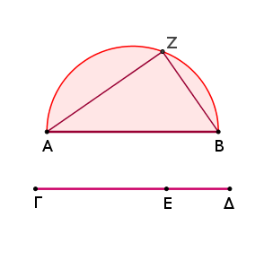
Ὁμοίως δὴ δείξομεν τῷ πρὸ τούτου, ὅτι αἱ ΒΑ, ΑΖ ῥηταί εἰσι δυνάμει μόνον σύμμετροι. καὶ ἐπεί ἐστιν ὡς ὁ ΔΓ πρὸς τὸν ΓΕ, οὕτως τὸ ἀπὸ τῆς ΒΑ πρὸς τὸ ἀπὸ τῆς ΑΖ, ἀναστρέψαντι ἄρα ὡς ὁ ΓΔ πρὸς τὸν ΔΕ, οὕτως τὸ ἀπὸ τῆς ΑΒ πρὸς τὸ ἀπὸ τῆς ΒΖ.
ὁ δὲ ΓΔ πρὸς τὸν ΔΕ λόγον οὐκ ἔχει, ὃν τετράγωνος ἀριθμὸς πρὸς τετράγωνον ἀριθμόν· οὐδ' ἄρα τὸ ἀπὸ τῆς ΑΒ πρὸς τὸ ἀπὸ τῆς ΒΖ λόγον ἔχει, ὃν τετράγωνος ἀριθμὸς πρὸς τετράγωνον ἀριθμόν· ἀσύμμετρος ἄρα ἐστὶν ἡ ΑΒ τῇ ΒΖ μήκει. καὶ δύναται ἡ ΑΒ τῆς ΑΖ μεῖζον τῷ ἀπὸ τῆς ΖΒ ἀσυμμέτρου ἑαυτῇ.
Αἱ ΑΒ, ΑΖ ἄρα ῥηταί εἰσι δυνάμει μόνον σύμμετροι, καὶ ἡ ΑΒ τῆς ΑΖ μεῖζον δύναται τῷ ἀπὸ τῆς ΖΒ ἀσυμμέτρου ἑαυτῇ μήκει· ὅπερ ἔδει δεῖξαι.
Εὑρεῖν δύο μέσας δυνάμει μόνον συμμέτρους ῥητὸν περιεχούσας, ὥστε τὴν μείζονα τῆς ἐλάσσονος μεῖζον δύνασθαι τῷ ἀπὸ συμμέτρου ἑαυτῇ μήκει.
Ἐκκείσθωσαν δύο ῥηταὶ δυνάμει μόνον σύμμετροι αἱ Α, Β, ὥστε τὴν Α μείζονα οὖσαν τῆς ἐλάσσονος τῆς Β μεῖζον δύνασθαι τῷ ἀπὸ συμμέτρου ἑαυτῇ μήκει.
καὶ τῷ ὑπὸ τῶν Α, Β ἴσον ἔστω τὸ ἀπὸ τῆς Γ. μέσον δὲ τὸ ὑπὸ τῶν Α, Β· μέσον ἄρα καὶ τὸ ἀπὸ τῆς Γ· μέση ἄρα καὶ ἡ Γ. τῷ δὲ ἀπὸ τῆς Β ἴσον ἔστω τὸ ὑπὸ τῶν Γ, Δ. ῥητὸν δὲ τὸ ἀπὸ τῆς Β· ῥητὸν ἄρα καὶ τὸ ὑπὸ τῶν Γ, Δ.
καὶ ἐπεί ἐστιν ὡς ἡ Α πρὸς τὴν Β, οὕτως τὸ ὑπὸ τῶν Α, Β πρὸς τὸ ἀπὸ τῆς Β, ἀλλὰ τῷ μὲν ὑπὸ τῶν Α, Β ἴσον ἐστὶ τὸ ἀπὸ τῆς Γ, τῷ δὲ ἀπὸ τῆς Β ἴσον τὸ ὑπὸ τῶν Γ, Δ, ὡς ἄρα ἡ Α πρὸς τὴν Β, οὕτως τὸ ἀπὸ τῆς Γ πρὸς τὸ ὑπὸ τῶν Γ, Δ.
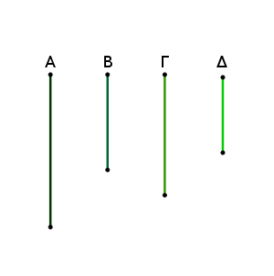
ὡς δὲ τὸ ἀπὸ τῆς Γ πρὸς τὸ ὑπὸ τῶν Γ, Δ, οὕτως ἡ Γ πρὸς τὴν Δ· καὶ ὡς ἄρα ἡ Α πρὸς τὴν Β, οὕτως ἡ Γ πρὸς τὴν Δ. σύμμετρος δὲ ἡ Α τῇ Β δυνάμει μόνον· σύμμετρος ἄρα καὶ ἡ Γ τῇ Δ δυνάμει μόνον. καί ἐστι μέση ἡ Γ· μέση ἄρα καὶ ἡ Δ.
καὶ ἐπεί ἐστιν ὡς ἡ Α πρὸς τὴν Β, ἡ Γ πρὸς τὴν Δ, ἡ δὲ Α τῆς Β μεῖζον δύναται τῷ ἀπὸ συμμέτρου ἑαυτῇ, καὶ ἡ Γ ἄρα τῆς Δ μεῖζον δύναται τῷ ἀπὸ συμμέτρου ἑαυτῇ.
Εὕρηνται ἄρα δύο μέσαι δυνάμει μόνον σύμμετροι αἱ Γ, Δ ῥητὸν περιέχουσαι, καὶ ἡ Γ τῆς Δ μεῖζον δύναται τῷ ἀπὸ συμμέτρου ἑαυτῇ μήκει.
Ὁμοίως δὴ δειχθήσεται καὶ τῷ ἀπὸ ἀσυμμέτρου, ὅταν ἡ Α τῆς Β μεῖζον δύνηται τῷ ἀπὸ ἀσυμμέτρου ἑαυτῇ.
Εὑρεῖν δύο μέσας δυνάμει μόνον συμμέτρους μέσον περιεχούσας, ὥστε τὴν μείζονα τῆς ἐλάσσονος μεῖζον δύνασθαι τῷ ἀπὸ συμμέτρου ἑαυτῇ.
Ἐκκείσθωσαν τρεῖς ῥηταὶ δυνάμει μόνον σύμμετροι αἱ Α, Β, Γ, ὥστε τὴν Α τῆς Γ μεῖζον δύνασθαι τῷ ἀπὸ συμμέτρου ἑαυτῇ, καὶ τῷ μὲν ὑπὸ τῶν Α, Β ἴσον ἔστω τὸ ἀπὸ τῆς Δ. μέσον ἄρα τὸ ἀπὸ τῆς Δ· καὶ ἡ Δ ἄρα μέση ἐστίν. τῷ δὲ ὑπὸ τῶν Β, Γ ἴσον ἔστω τὸ ὑπὸ τῶν Δ, Ε.
καὶ ἐπεί ἐστιν ὡς τὸ ὑπὸ τῶν Α, Β πρὸς τὸ ὑπὸ τῶν Β, Γ, οὕτως ἡ Α πρὸς τὴν Γ, ἀλλὰ τῷ μὲν ὑπὸ τῶν Α, Β ἴσον ἐστὶ τὸ ἀπὸ τῆς Δ, τῷ δὲ ὑπὸ τῶν Β, Γ ἴσον τὸ ὑπὸ τῶν Δ, Ε, ἔστιν ἄρα ὡς ἡ Α πρὸς τὴν Γ, οὕτως τὸ ἀπὸ τῆς Δ πρὸς τὸ ὑπὸ τῶν Δ, Ε.
ὡς δὲ τὸ ἀπὸ τῆς Δ πρὸς τὸ ὑπὸ τῶν Δ, Ε, οὕτως ἡ Δ πρὸς τὴν Ε· καὶ ὡς ἄρα ἡ Α πρὸς τὴν Γ, οὕτως ἡ Δ πρὸς τὴν Ε· σύμμετρος δὲ ἡ Α τῇ Γ δυνάμει [μόνον]. σύμμετρος ἄρα καὶ ἡ Δ τῇ Ε δυνάμει μόνον. μέση δὲ ἡ Δ· μέση ἄρα καὶ ἡ Ε.
καὶ ἐπεί ἐστιν ὡς ἡ Α πρὸς τὴν Γ, ἡ Δ πρὸς τὴν Ε, ἡ δὲ Α τῆς Γ μεῖζον δύναται τῷ ἀπὸ συμμέτρου ἑαυτῇ, καὶ ἡ Δ ἄρα τῆς Ε μεῖζον δυνήσεται τῷ ἀπὸ συμμέτρου ἑαυτῇ. λέγω δή, ὅτι καὶ μέσον ἐστὶ τὸ ὑπὸ τῶν Δ, Ε. ἐπεὶ γὰρ ἴσον ἐστὶ τὸ ὑπὸ τῶν Β, Γ τῷ ὑπὸ τῶν Δ, Ε, μέσον δὲ τὸ ὑπὸ τῶν Β, Γ [αἱ γὰρ Β, Γ ῥηταί εἰσι δυνάμει μόνον σύμμετροι], μέσον ἄρα καὶ τὸ ὑπὸ τῶν Δ, Ε.
Εὕρηνται ἄρα δύο μέσαι δυνάμει μόνον σύμμετροι αἱ Δ, Ε μέσον περιέχουσαι, ὥστε τὴν μείζονα τῆς ἐλάσσονος μεῖζον δύνασθαι τῷ ἀπὸ συμμέτρου ἑαυτῇ.
Ὁμοίως δὴ πάλιν δειχθήσεται καὶ τῷ ἀπὸ ἀσυμμέτρου, ὅταν ἡ Α τῆς Γ μεῖζον δύνηται τῷ ἀπὸ ἀσυμμέτρου ἑαυτῇ.
Λ ῆ μ μ α : Ἔστω τρίγωνον ὀρθογώνιον τὸ ΑΒΓ ὀρθὴν ἔχον τὴν Α, καὶ ἤχθω κάθετος ἡ ΑΔ· λέγω, ὅτι τὸ μὲν ὑπὸ τῶν ΓΒΔ ἴσον ἐστὶ τῷ ἀπὸ τῆς ΒΑ, τὸ δὲ ὑπὸ τῶν ΒΓΔ ἴσον τῷ ἀπὸ τῆς ΓΑ, καὶ τὸ ὑπὸ τῶν ΒΔ, ΔΓ ἴσον τῷ ἀπὸ τῆς ΑΔ, καὶ ἔτι τὸ ὑπὸ τῶν ΒΓ, ΑΔ ἴσον [ἐστὶ] τῷ ὑπὸ τῶν ΒΑ, ΑΓ.
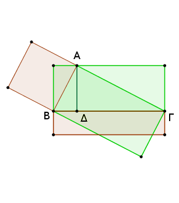
Καὶ πρῶτον, ὅτι τὸ ὑπὸ τῶν ΓΒΔ ἴσον [ἐστὶ] τῷ ἀπὸ τῆς ΒΑ.
Ἐπεὶ γὰρ ἐν ὀρθογωνίῳ τριγώνῳ ἀπὸ τῆς ὀρθῆς γωνίας ἐπὶ τὴν βάσιν κάθετος ἦκται ἡ ΑΔ, τὰ ΑΒΔ, ΑΔΓ ἄρα τρίγωνα ὅμοιά ἐστι τῷ τε ὅλῳ τῷ ΑΒΓ καὶ ἀλλήλοις. καὶ ἐπεὶ ὅμοιόν ἐστι τὸ ΑΒΓ τρίγωνον τῷ ΑΒΔ τριγώνῳ, ἔστιν ἄρα ὡς ἡ ΓΒ πρὸς τὴν ΒΑ, οὕτως ἡ ΒΑ πρὸς τὴν ΒΔ· τὸ ἄρα ὑπὸ τῶν ΓΒΔ ἴσον ἐστὶ τῷ ἀπὸ τῆς ΑΒ.
Διὰ τὰ αὐτὰ δὴ καὶ τὸ ὑπὸ τῶν ΒΓΔ ἴσον ἐστὶ τῷ ἀπὸ τῆς ΑΓ.
Καὶ ἐπεί, ἐὰν ἐν ὀρθογωνίῳ τριγώνῳ ἀπὸ τῆς ὀρθῆς γωνίας ἐπὶ τὴν βάσιν κάθετος ἀχθῇ, ἡ ἀχθεῖσα τῶν τῆς βάσεως τμημάτων μέση ἀνάλογόν ἐστιν, ἔστιν ἄρα ὡς ἡ ΒΔ πρὸς τὴν ΔΑ, οὕτως ἡ ΑΔ πρὸς τὴν ΔΓ· τὸ ἄρα ὑπὸ τῶν ΒΔ, ΔΓ ἴσον ἐστὶ τῷ ἀπὸ τῆς ΔΑ.
Λέγω, ὅτι καὶ τὸ ὑπὸ τῶν ΒΓ, ΑΔ ἴσον ἐστὶ τῷ ὑπὸ τῶν ΒΑ, ΑΓ. ἐπεὶ γάρ, ὡς ἔφαμεν, ὅμοιόν ἐστι τὸ ΑΒΓ τῷ ΑΒΔ, ἔστιν ἄρα ὡς ἡ ΒΓ πρὸς τὴν ΓΑ, οὕτως ἡ ΒΑ πρὸς τὴν ΑΔ. [ἐὰν δὲ τέσσαρες εὐθεῖαι ἀνάλογον ὦσιν, τὸ ὑπὸ τῶν ἄκρων ἴσον ἐστὶ τῷ ὑπὸ τῶν μέσων.] τὸ ἄρα ὑπὸ τῶν ΒΓ, ΑΔ ἴσον ἐστὶ τῷ ὑπὸ τῶν ΒΑ, ΑΓ· ὅπερ ἔδει δεῖξαι.
Εὑρεῖν δύο εὐθείας δυνάμει ἀσυμμέτρους ποιούσας τὸ μὲν συγκείμενον ἐκ τῶν ἀπ' αὐτῶν τετραγώνων ῥητόν, τὸ δ' ὑπ' αὐτῶν μέσον.
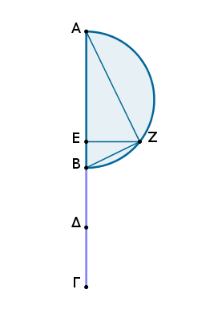
Ἐκκείσθωσαν δύο ῥηταὶ δυνάμει μόνον σύμμετροι αἱ ΑΒ, ΒΓ, ὥστε τὴν μείζονα τὴν ΑΒ τῆς ἐλάσσονος τῆς ΒΓ μεῖζον δύνασθαι τῷ ἀπὸ ἀσυμμέτρου ἑαυτῇ, καὶ τετμήσθω ἡ ΒΓ δίχα κατὰ τὸ Δ, καὶ τῷ ἀφ' ὁποτέρας τῶν ΒΔ, ΔΓ ἴσον παρὰ τὴν ΑΒ παραβεβλήσθω παραλληλόγραμμον ἐλλεῖπον εἴδει τετραγώνῳ, καὶ ἔστω τὸ ὑπὸ τῶν ΑΕΒ, καὶ γεγράφθω ἐπὶ τῆς ΑΒ ἡμικύκλιον τὸ ΑΖΒ, καὶ ἤχθω τῇ ΑΒ πρὸς ὀρθὰς ἡ ΕΖ, καὶ ἐπεζεύχθωσαν αἱ ΑΖ, ΖΒ.
Καὶ ἐπεὶ [δύο] εὐθεῖαι ἄνισοί εἰσιν αἱ ΑΒ, ΒΓ, καὶ ἡ ΑΒ τῆς ΒΓ μεῖζον δύναται τῷ ἀπὸ ἀσυμμέτρου ἑαυτῇ, τῷ δὲ τετάρτῳ τοῦ ἀπὸ τῆς ΒΓ, τουτέστι τῷ ἀπὸ τῆς ἡμισείας αὐτῆς, ἴσον παρὰ τὴν ΑΒ παραβέβληται παραλληλόγραμμον ἐλλεῖπον εἴδει τετραγώνῳ καὶ ποιεῖ τὸ ὑπὸ τῶν ΑΕΒ, ἀσύμμετρος ἄρα ἐστὶν ἡ ΑΕ τῇ ΕΒ.
καί ἐστιν ὡς ἡ ΑΕ πρὸς ΕΒ, οὕτως τὸ ὑπὸ τῶν ΒΑ, ΑΕ πρὸς τὸ ὑπὸ τῶν ΑΒ, ΒΕ, ἴσον δὲ τὸ μὲν ὑπὸ τῶν ΒΑ, ΑΕ τῷ ἀπὸ τῆς ΑΖ, τὸ δὲ ὑπὸ τῶν ΑΒ, ΒΕ τῷ ἀπὸ τῆς ΒΖ· ἀσύμμετρον ἄρα ἐστὶ τὸ ἀπὸ τῆς ΑΖ τῷ ἀπὸ τῆς ΖΒ· αἱ ΑΖ, ΖΒ ἄρα δυνάμει εἰσὶν ἀσύμμετροι. καὶ ἐπεὶ ἡ ΑΒ ῥητή ἐστιν, ῥητὸν ἄρα ἐστὶ καὶ τὸ ἀπὸ τῆς ΑΒ· ὥστε καὶ τὸ συγκείμενον ἐκ τῶν ἀπὸ τῶν ΑΖ, ΖΒ ῥητόν ἐστιν.
καὶ ἐπεὶ πάλιν τὸ ὑπὸ τῶν ΑΕ, ΕΒ ἴσον ἐστὶ τῷ ἀπὸ τῆς ΕΖ, ὑπόκειται δὲ τὸ ὑπὸ τῶν ΑΕ, ΕΒ καὶ τῷ ἀπὸ τῆς ΒΔ ἴσον, ἴση ἄρα ἐστὶν ἡ ΖΕ τῇ ΒΔ· διπλῆ ἄρα ἡ ΒΓ τῆς ΖΕ· ὥστε καὶ τὸ ὑπὸ τῶν ΑΒ, ΒΓ σύμμετρόν ἐστι τῷ ὑπὸ τῶν ΑΒ, ΕΖ. μέσον δὲ τὸ ὑπὸ τῶν ΑΒ, ΒΓ· μέσον ἄρα καὶ τὸ ὑπὸ τῶν ΑΒ, ΕΖ. ἴσον δὲ τὸ ὑπὸ τῶν ΑΒ, ΕΖ τῷ ὑπὸ τῶν ΑΖ, ΖΒ· μέσον ἄρα καὶ τὸ ὑπὸ τῶν ΑΖ, ΖΒ. ἐδείχθη δὲ καὶ ῥητὸν τὸ συγκείμενον ἐκ τῶν ἀπ' αὐτῶν τετραγώνων.
Εὕρηνται ἄρα δύο εὐθεῖαι δυνάμει ἀσύμμετροι αἱ ΑΖ, ΖΒ ποιοῦσαι τὸ μὲν συγκείμενον ἐκ τῶν ἀπ' αὐτῶν τετραγώνων ῥητόν, τὸ δὲ ὑπ' αὐτῶν μέσον· ὅπερ ἔδει δεῖξαι.
Εὑρεῖν δύο εὐθείας δυνάμει ἀσυμμέτρους ποιούσας τὸ μὲν συγκείμενον ἐκ τῶν ἀπ' αὐτῶν τετραγώνων μέσον, τὸ δ' ὑπ' αὐτῶν ῥητόν.
Ἐκκείσθωσαν δύο μέσαι δυνάμει μόνον σύμμετροι αἱ ΑΒ, ΒΓ ῥητὸν περιέχουσαι τὸ ὑπ' αὐτῶν, ὥστε τὴν ΑΒ τῆς ΒΓ μεῖζον δύνασθαι τῷ ἀπὸ ἀσυμμέτρου ἑαυτῇ, καὶ γεγράφθω ἐπὶ τῆς ΑΒ τὸ ΑΔΒ ἡμικύκλιον, καὶ τετμήσθω ἡ ΒΓ δίχα κατὰ τὸ Ε, καὶ παραβεβλήσθω παρὰ τὴν ΑΒ τῷ ἀπὸ τῆς ΒΕ ἴσον παραλληλόγραμμον ἐλλεῖπον εἴδει τετραγώνῳ τὸ ὑπὸ τῶν ΑΖΒ· ἀσύμμετρος ἄρα [ἐστὶν] ἡ ΑΖ τῇ ΖΒ μήκει. καὶ ἤχθω ἀπὸ τοῦ Ζ τῇ ΑΒ πρὸς ὀρθὰς ἡ ΖΔ, καὶ ἐπεζεύχθωσαν αἱ ΑΔ, ΔΒ.
Ἐπεὶ ἀσύμμετρός ἐστιν ἡ ΑΖ τῇ ΖΒ, ἀσύμμετρον ἄρα ἐστὶ καὶ τὸ ὑπὸ τῶν ΒΑ, ΑΖ τῷ ὑπὸ τῶν ΑΒ, ΒΖ. ἴσον δὲ τὸ μὲν ὑπὸ τῶν ΒΑ, ΑΖ τῷ ἀπὸ τῆς ΑΔ, τὸ δὲ ὑπὸ τῶν ΑΒ, ΒΖ τῷ ἀπὸ τῆς ΔΒ· ἀσύμμετρον ἄρα ἐστὶ καὶ τὸ ἀπὸ τῆς ΑΔ τῷ ἀπὸ τῆς ΔΒ.
καὶ ἐπεὶ μέσον ἐστὶ τὸ ἀπὸ τῆς ΑΒ, μέσον ἄρα καὶ τὸ συγκείμενον ἐκ τῶν ἀπὸ τῶν ΑΔ, ΔΒ. καὶ ἐπεὶ διπλῆ ἐστιν ἡ ΒΓ τῆς ΔΖ, διπλάσιον ἄρα καὶ τὸ ὑπὸ τῶν ΑΒ, ΒΓ τοῦ ὑπὸ τῶν ΑΒ, ΖΔ. ῥητὸν δὲ τὸ ὑπὸ τῶν ΑΒ, ΒΓ· ῥητὸν ἄρα καὶ τὸ ὑπὸ τῶν ΑΒ, ΖΔ. τὸ δὲ ὑπὸ τῶν ΑΒ, ΖΔ ἴσον τῷ ὑπὸ τῶν ΑΔ, ΔΒ· ὥστε καὶ τὸ ὑπὸ τῶν ΑΔ, ΔΒ ῥητόν ἐστιν.
Εὕρηνται ἄρα δύο εὐθεῖαι δυνάμει ἀσύμμετροι αἱ ΑΔ, ΔΒ ποιοῦσαι τὸ [μὲν] συγκείμενον ἐκ τῶν ἀπ' αὐτῶν τετραγώνων μέσον, τὸ δ' ὑπ' αὐτῶν ῥητόν· ὅπερ ἔδει δεῖξαι.
Εὑρεῖν δύο εὐθείας δυνάμει ἀσυμμέτρους ποιούσας τό τε συγκείμενον ἐκ τῶν ἀπ' αὐτῶν τετραγώνων μέσον καὶ τὸ ὑπ' αὐτῶν μέσον καὶ ἔτι ἀσύμμετρον τῷ συγκειμένῳ ἐκ τῶν ἀπ' αὐτῶν τετραγώνῳ.
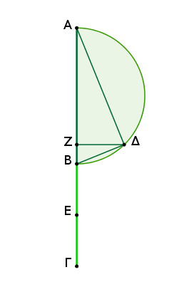
Ἐκκείσθωσαν δύο μέσαι δυνάμει μόνον σύμμετροι αἱ ΑΒ, ΒΓ μέσον περιέχουσαι, ὥστε τὴν ΑΒ τῆς ΒΓ μεῖζον δύνασθαι τῷ ἀπὸ ἀσυμμέτρου ἑαυτῇ, καὶ γεγράφθω ἐπὶ τῆς ΑΒ ἡμικύκλιον τὸ ΑΔΒ, καὶ τὰ λοιπὰ γεγονέτω τοῖς ἐπάνω ὁμοίως.
Καὶ ἐπεὶ ἀσύμμετρός ἐστιν ἡ ΑΖ τῇ ΖΒ μήκει, ἀσύμμετρός ἐστι καὶ ἡ ΑΔ τῇ ΔΒ δυνάμει. καὶ ἐπεὶ μέσον ἐστὶ τὸ ἀπὸ τῆς ΑΒ, μέσον ἄρα καὶ τὸ συγκείμενον ἐκ τῶν ἀπὸ τῶν ΑΔ, ΔΒ.
καὶ ἐπεὶ τὸ ὑπὸ τῶν ΑΖ, ΖΒ ἴσον ἐστὶ τῷ ἀφ' ἑκατέρας τῶν ΒΕ, ΔΖ, ἴση ἄρα ἐστὶν ἡ ΒΕ τῇ ΔΖ· διπλῆ ἄρα ἡ ΒΓ τῆς ΖΔ· ὥστε καὶ τὸ ὑπὸ τῶν ΑΒ, ΒΓ διπλάσιόν ἐστι τοῦ ὑπὸ τῶν ΑΒ, ΖΔ. μέσον δὲ τὸ ὑπὸ τῶν ΑΒ, ΒΓ· μέσον ἄρα καὶ τὸ ὑπὸ τῶν ΑΒ, ΖΔ. καί ἐστιν ἴσον τῷ ὑπὸ τῶν ΑΔ, ΔΒ· μέσον ἄρα καὶ τὸ ὑπὸ τῶν ΑΔ, ΔΒ.
καὶ ἐπεὶ ἀσύμμετρός ἐστιν ἡ ΑΒ τῇ ΒΓ μήκει, σύμμετρος δὲ ἡ ΓΒ τῇ ΒΕ, ἀσύμμετρος ἄρα καὶ ἡ ΑΒ τῇ ΒΕ μήκει· ὥστε καὶ τὸ ἀπὸ τῆς ΑΒ τῷ ὑπὸ τῶν ΑΒ, ΒΕ ἀσύμμετρόν ἐστιν. ἀλλὰ τῷ μὲν ἀπὸ τῆς ΑΒ ἴσα ἐστὶ τὰ ἀπὸ τῶν ΑΔ, ΔΒ, τῷ δὲ ὑπὸ τῶν ΑΒ, ΒΕ ἴσον ἐστὶ τὸ ὑπὸ τῶν ΑΒ, ΖΔ, τουτέστι τὸ ὑπὸ τῶν ΑΔ, ΔΒ· ἀσύμμετρον ἄρα ἐστὶ τὸ συγκείμενον ἐκ τῶν ἀπὸ τῶν ΑΔ, ΔΒ τῷ ὑπὸ τῶν ΑΔ, ΔΒ.
Εὕρηνται ἄρα δύο εὐθεῖαι αἱ ΑΔ, ΔΒ δυνάμει ἀσύμμετροι ποιοῦσαι τό τε συγκείμενον ἐκ τῶν ἀπ' αὐτῶν μέσον καὶ τὸ ὑπ' αὐτῶν μέσον καὶ ἔτι ἀσύμμετρον τῷ συγκειμένῳ ἐκ τῶν ἀπ' αὐτῶν τετραγώνων· ὅπερ ἔδει δεῖξαι.
Ἐὰν δύο ῥηταὶ δυνάμει μόνον σύμμετροι συντεθῶσιν, ἡ ὅλη ἄλογός ἐστιν, καλείσθω δὲ ἐκ δύο ὀνομάτων.
Συγκείσθωσαν γὰρ δύο ῥηταὶ δυνάμει μόνον σύμμετροι αἱ ΑΒ, ΒΓ· λέγω, ὅτι ὅλη ἡ ΑΓ ἄλογός ἐστιν.
Ἐπεὶ γὰρ ἀσύμμετρός ἐστιν ἡ ΑΒ τῇ ΒΓ μήκει· δυνάμει γὰρ μόνον εἰσὶ σύμμετροι· ὡς δὲ ἡ ΑΒ πρὸς τὴν ΒΓ, οὕτως τὸ ὑπὸ τῶν ΑΒΓ πρὸς τὸ ἀπὸ τῆς ΒΓ, ἀσύμμετρον ἄρα ἐστὶ τὸ ὑπὸ τῶν ΑΒ, ΒΓ τῷ ἀπὸ τῆς ΒΓ.
ἀλλὰ τῷ μὲν ὑπὸ τῶν ΑΒ, ΒΓ σύμμετρόν ἐστι τὸ δὶς ὑπὸ τῶν ΑΒ, ΒΓ, τῷ δὲ ἀπὸ τῆς ΒΓ σύμμετρά ἐστι τὰ ἀπὸ τῶν ΑΒ, ΒΓ· αἱ γὰρ ΑΒ, ΒΓ ῥηταί εἰσι δυνάμει μόνον σύμμετροι· ἀσύμμετρον ἄρα ἐστὶ τὸ δὶς ὑπὸ τῶν ΑΒ, ΒΓ τοῖς ἀπὸ τῶν ΑΒ, ΒΓ.
καὶ συνθέντι τὸ δὶς ὑπὸ τῶν ΑΒ, ΒΓ μετὰ τῶν ἀπὸ τῶν ΑΒ, ΒΓ, τουτέστι τὸ ἀπὸ τῆς ΑΓ, ἀσύμμετρόν ἐστι τῷ συγκειμένῳ ἐκ τῶν ἀπὸ τῶν ΑΒ, ΒΓ. ῥητὸν δὲ τὸ συγκείμενον ἐκ τῶν ἀπὸ τῶν ΑΒ, ΒΓ· ἄλογον ἄρα [ἐστὶ] τὸ ἀπὸ τῆς ΑΓ· ὥστε καὶ ἡ ΑΓ ἄλογός ἐστιν, καλείσθω δὲ ἐκ δύο ὀνομάτων· ὅπερ ἔδει δεῖξαι.
Ἐὰν δύο μέσαι δυνάμει μόνον σύμμετροι συντεθῶσι ῥητὸν περιέχουσαι, ἡ ὅλη ἄλογός ἐστιν, καλείσθω δὲ ἐκ δύο μέσων πρώτη.
Συγκείσθωσαν γὰρ δύο μέσαι δυνάμει μόνον σύμμετροι αἱ ΑΒ, ΒΓ ῥητὸν περιέχουσαι· λέγω, ὅτι ὅλη ἡ ΑΓ ἄλογός ἐστιν.
Ἐπεὶ γὰρ ἀσύμμετρός ἐστιν ἡ ΑΒ τῇ ΒΓ μήκει, καὶ τὰ ἀπὸ τῶν ΑΒ, ΒΓ ἄρα ἀσύμμετρά ἐστι τῷ δὶς ὑπὸ τῶν ΑΒ, ΒΓ· καὶ συνθέντι τὰ ἀπὸ τῶν ΑΒ, ΒΓ μετὰ τοῦ δὶς ὑπὸ τῶν ΑΒ, ΒΓ, ὅπερ ἐστὶ τὸ ἀπὸ τῆς ΑΓ, ἀσύμμετρόν ἐστι τῷ ὑπὸ τῶν ΑΒ, ΒΓ.
ῥητὸν δὲ τὸ ὑπὸ τῶν ΑΒ, ΒΓ· ὑπόκεινται γὰρ αἱ ΑΒ, ΒΓ ῥητὸν περιέχουσαι· ἄλογον ἄρα τὸ ἀπὸ τῆς ΑΓ· ἄλογος ἄρα ἡ ΑΓ, καλείσθω δὲ ἐκ δύο μέσων πρώτη· ὅπερ ἔδει δεῖξαι.
Ἐὰν δύο μέσαι δυνάμει μόνον σύμμετροι συντεθῶσι μέσον περιέχουσαι, ἡ ὅλη ἄλογός ἐστιν, καλείσθω δὲ ἐκ δύο μέσων δευτέρα.
Συγκείσθωσαν γὰρ δύο μέσαι δυνάμει μόνον σύμμετροι αἱ ΑΒ, ΒΓ μέσον περιέχουσαι· λέγω, ὅτι ἄλογός ἐστιν ἡ ΑΓ.
Ἐκκείσθω γὰρ ῥητὴ ἡ ΔΕ, καὶ τῷ ἀπὸ τῆς ΑΓ ἴσον παρὰ τὴν ΔΕ παραβεβλήσθω τὸ ΔΖ πλάτος ποιοῦν τὴν ΔΗ. καὶ ἐπεὶ τὸ ἀπὸ τῆς ΑΓ ἴσον ἐστὶ τοῖς τε ἀπὸ τῶν ΑΒ, ΒΓ καὶ τῷ δὶς ὑπὸ τῶν ΑΒ, ΒΓ, παραβεβλήσθω δὴ τοῖς ἀπὸ τῶν ΑΒ, ΒΓ παρὰ τὴν ΔΕ ἴσον τὸ ΕΘ· λοιπὸν ἄρα τὸ ΘΖ ἴσον ἐστὶ τῷ δὶς ὑπὸ τῶν ΑΒ, ΒΓ. καὶ ἐπεὶ μέση ἐστὶν ἑκατέρα τῶν ΑΒ, ΒΓ, μέσα ἄρα ἐστὶ καὶ τὰ ἀπὸ τῶν ΑΒ, ΒΓ.
μέσον δὲ ὑπόκειται καὶ τὸ δὶς ὑπὸ τῶν ΑΒ, ΒΓ. καί ἐστι τοῖς μὲν ἀπὸ τῶν ΑΒ, ΒΓ ἴσον τὸ ΕΘ, τῷ δὲ δὶς ὑπὸ τῶν ΑΒ, ΒΓ ἴσον τὸ ΖΘ· μέσον ἄρα ἑκάτερον τῶν ΕΘ, ΘΖ. καὶ παρὰ ῥητὴν τὴν ΔΕ παράκειται· ῥητὴ ἄρα ἐστὶν ἑκατέρα τῶν ΔΘ, ΘΗ καὶ ἀσύμμετρος τῇ ΔΕ μήκει.
ἐπεὶ οὖν ἀσύμμετρός ἐστιν ἡ ΑΒ τῇ ΒΓ μήκει, καί ἐστιν ὡς ἡ ΑΒ πρὸς τὴν ΒΓ, οὕτως τὸ ἀπὸ τῆς ΑΒ πρὸς τὸ ὑπὸ τῶν ΑΒ, ΒΓ, ἀσύμμετρον ἄρα ἐστὶ τὸ ἀπὸ τῆς ΑΒ τῷ ὑπὸ τῶν ΑΒ, ΒΓ.
ἀλλὰ τῷ μὲν ἀπὸ τῆς ΑΒ σύμμετρόν ἐστι τὸ συγκείμενον ἐκ τῶν ἀπὸ τῶν ΑΒ, ΒΓ τετραγώνων, τῷ δὲ ὑπὸ τῶν ΑΒ, ΒΓ σύμμετρόν ἐστι τὸ δὶς ὑπὸ τῶν ΑΒ, ΒΓ. ἀσύμμετρον ἄρα ἐστὶ τὸ συγκείμενον ἐκ τῶν ἀπὸ τῶν ΑΒ, ΒΓ τῷ δὶς ὑπὸ τῶν ΑΒ, ΒΓ.
ἀλλὰ τοῖς μὲν ἀπὸ τῶν ΑΒ, ΒΓ ἴσον ἐστὶ τὸ ΕΘ, τῷ δὲ δὶς ὑπὸ τῶν ΑΒ, ΒΓ ἴσον ἐστὶ τὸ ΘΖ. ἀσύμμετρον ἄρα ἐστὶ τὸ ΕΘ τῷ ΘΖ· ὥστε καὶ ἡ ΔΘ τῇ ΘΗ ἐστιν ἀσύμμετρος μήκει. αἱ ΔΘ, ΘΗ ἄρα ῥηταί εἰσι δυνάμει μόνον σύμμετροι.
ὥστε ἡ ΔΗ ἄλογός ἐστιν. ῥητὴ δὲ ἡ ΔΕ· τὸ δὲ ὑπὸ ἀλόγου καὶ ῥητῆς περιεχόμενον ὀρθογώνιον ἄλογόν ἐστιν· ἄλογον ἄρα ἐστὶ τὸ ΔΖ χωρίον, καὶ ἡ δυναμένη [αὐτὸ] ἄλογός ἐστιν. δύναται δὲ τὸ ΔΖ ἡ ΑΓ· ἄλογος ἄρα ἐστὶν ἡ ΑΓ, καλείσθω δὲ ἐκ δύο μέσων δευτέρα. ὅπερ ἔδει δεῖξαι.
Ἐὰν δύο εὐθεῖαι δυνάμει ἀσύμμετροι συντεθῶσι ποιοῦσαι τὸ μὲν συγκείμενον ἐκ τῶν ἀπ' αὐτῶν τετραγώνων ῥητόν, τὸ δ' ὑπ' αὐτῶν μέσον, ἡ ὅλη εὐθεῖα ἄλογός ἐστιν, καλείσθω δὲ μείζων.
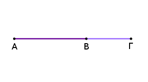
Συγκείσθωσαν γὰρ δύο εὐθεῖαι δυνάμει ἀσύμμετροι αἱ ΑΒ, ΒΓ ποιοῦσαι τὰ προκείμενα· λέγω, ὅτι ἄλογός ἐστιν ἡ ΑΓ.
Ἐπεὶ γὰρ τὸ ὑπὸ τῶν ΑΒ, ΒΓ μέσον ἐστίν, καὶ τὸ δὶς [ἄρα] ὑπὸ τῶν ΑΒ, ΒΓ μέσον ἐστίν. τὸ δὲ συγκείμενον ἐκ τῶν ἀπὸ τῶν ΑΒ, ΒΓ ῥητόν· ἀσύμμετρον ἄρα ἐστὶ τὸ δὶς ὑπὸ τῶν ΑΒ, ΒΓ τῷ συγκειμένῳ ἐκ τῶν ἀπὸ τῶν ΑΒ, ΒΓ· ὥστε καὶ τὰ ἀπὸ τῶν ΑΒ, ΒΓ μετὰ τοῦ δὶς ὑπὸ τῶν ΑΒ, ΒΓ, ὅπερ ἐστὶ τὸ ἀπὸ τῆς ΑΓ, ἀσύμμετρόν ἐστι τῷ συγκειμένῳ ἐκ τῶν ἀπὸ τῶν ΑΒ, ΒΓ [ῥητὸν δὲ τὸ συγκείμενον ἐκ τῶν ἀπὸ τῶν ΑΒ, ΒΓ]· ἄλογον ἄρα ἐστὶ τὸ ἀπὸ τῆς ΑΓ. ὥστε καὶ ἡ ΑΓ ἄλογός ἐστιν, καλείσθω δὲ μείζων. ὅπερ ἔδει δεῖξαι.
Ἐὰν δύο εὐθεῖαι δυνάμει ἀσύμμετροι συντεθῶσι ποιοῦσαι τὸ μὲν συγκείμενον ἐκ τῶν ἀπ' αὐτῶν τετραγώνων μέσον, τὸ δ' ὑπ' αὐτῶν ῥητόν, ἡ ὅλη εὐθεῖα ἄλογός ἐστιν, καλείσθω δὲ ῥητὸν καὶ μέσον δυναμένη.
Συγκείσθωσαν γὰρ δύο εὐθεῖαι δυνάμει ἀσύμμετροι αἱ ΑΒ, ΒΓ ποιοῦσαι τὰ προκείμενα· λέγω, ὅτι ἄλογός ἐστιν ἡ ΑΓ.

Ἐπεὶ γὰρ τὸ συγκείμενον ἐκ τῶν ἀπὸ τῶν ΑΒ, ΒΓ μέσον ἐστίν, τὸ δὲ δὶς ὑπὸ τῶν ΑΒ, ΒΓ ῥητόν, ἀσύμμετρον ἄρα ἐστὶ τὸ συγκείμενον ἐκ τῶν ἀπὸ τῶν ΑΒ, ΒΓ τῷ δὶς ὑπὸ τῶν ΑΒ, ΒΓ· ὥστε καὶ τὸ ἀπὸ τῆς ΑΓ ἀσύμμετρόν ἐστι τῷ δὶς ὑπὸ τῶν ΑΒ, ΒΓ. ῥητὸν δὲ τὸ δὶς ὑπὸ τῶν ΑΒ, ΒΓ· ἄλογον ἄρα τὸ ἀπὸ τῆς ΑΓ.
ἄλογος ἄρα ἡ ΑΓ, καλείσθω δὲ ῥητὸν καὶ μέσον δυναμένη. ὅπερ ἔδει δεῖξαι.
Ἐὰν δύο εὐθεῖαι δυνάμει ἀσύμμετροι συντεθῶσι ποιοῦσαι τό τε συγκείμενον ἐκ τῶν ἀπ' αὐτῶν τετραγώνων μέσον καὶ τὸ ὑπ' αὐτῶν μέσον καὶ ἔτι ἀσύμμετρον τῷ συγκειμένῳ ἐκ τῶν ἀπ' αὐτῶν τετραγώνων, ἡ ὅλη εὐθεῖα ἄλογός ἐστιν, καλείσθω δὲ δύο μέσα δυναμένη.
Συγκείσθωσαν γὰρ δύο εὐθεῖαι δυνάμει ἀσύμμετροι αἱ ΑΒ, ΒΓ ποιοῦσαι τὰ προκείμενα· λέγω, ὅτι ἡ ΑΓ ἄλογός ἐστιν.
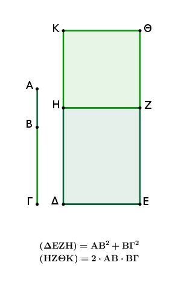
Ἐκκείσθω ῥητὴ ἡ ΔΕ, καὶ παραβεβλήσθω παρὰ τὴν ΔΕ τοῖς μὲν ἀπὸ τῶν ΑΒ, ΒΓ ἴσον τὸ ΔΖ, τῷ δὲ δὶς ὑπὸ τῶν ΑΒ, ΒΓ ἴσον τὸ ΗΘ· ὅλον ἄρα τὸ ΔΘ ἴσον ἐστὶ τῷ ἀπὸ τῆς ΑΓ τετραγώνῳ.
καὶ ἐπεὶ μέσον ἐστὶ τὸ συγκείμενον ἐκ τῶν ἀπὸ τῶν ΑΒ, ΒΓ, καί ἐστιν ἴσον τῷ ΔΖ, μέσον ἄρα ἐστὶ καὶ τὸ ΔΖ. καὶ παρὰ ῥητὴν τὴν ΔΕ παράκειται· ῥητὴ ἄρα ἐστὶν ἡ ΔΗ καὶ ἀσύμμετρος τῇ ΔΕ μήκει.
διὰ τὰ αὐτὰ δὴ καὶ ἡ ΗΚ ῥητή ἐστι καὶ ἀσύμμετρος τῇ ΗΖ, τουτέστι τῇ ΔΕ, μήκει.
καὶ ἐπεὶ ἀσύμμετρά ἐστι τὰ ἀπὸ τῶν ΑΒ, ΒΓ τῷ δὶς ὑπὸ τῶν ΑΒ, ΒΓ, ἀσύμμετρόν ἐστι τὸ ΔΖ τῷ ΗΘ· ὥστε καὶ ἡ ΔΗ τῇ ΗΚ ἀσύμμετρός ἐστιν. καί εἰσι ῥηταί· αἱ ΔΗ, ΗΚ ἄρα ῥηταί εἰσι δυνάμει μόνον σύμμετροι· ἄλογος ἄρα ἐστὶν ἡ ΔΚ ἡ καλουμένη ἐκ δύο ὀνομάτων.
ῥητὴ δὲ ἡ ΔΕ· ἄλογον ἄρα ἐστὶ τὸ ΔΘ καὶ ἡ δυναμένη αὐτὸ ἄλογός ἐστιν. δύναται δὲ τὸ ΘΔ ἡ ΑΓ· ἄλογος ἄρα ἐστὶν ἡ ΑΓ, καλείσθω δὲ δύο μέσα δυναμένη. ὅπερ ἔδει δεῖξαι.
Λ ῆ μ μ α : Ὅτι δὲ αἱ εἰρημέναι ἄλογοι μοναχῶς διαιροῦνται εἰς τὰς εὐθείας, ἐξ ὧν σύγκεινται ποιουσῶν τὰ προκείμενα εἴδη, δείξομεν ἤδη προεκθέμενοι λημμάτιον τοιοῦτον·
Ἐκκείσθω εὐθεῖα ἡ ΑΒ καὶ τετμήσθω ἡ ὅλη εἰς ἄνισα καθ' ἑκάτερον τῶν Γ, Δ, ὑποκείσθω δὲ μείζων ἡ ΑΓ τῆς ΔΒ· λέγω, ὅτι τὰ ἀπὸ τῶν ΑΓ, ΓΒ μείζονά ἐστι τῶν ἀπὸ τῶν ΑΔ, ΔΒ.
Τετμήσθω γὰρ ἡ ΑΒ δίχα κατὰ τὸ Ε. καὶ ἐπεὶ μείζων ἐστὶν ἡ ΑΓ τῆς ΔΒ, κοινὴ ἀφῃρήσθω ἡ ΔΓ· λοιπὴ ἄρα ἡ ΑΔ λοιπῆς τῆς ΓΒ μείζων ἐστίν. ἴση δὲ ἡ ΑΕ τῇ ΕΒ· ἐλάττων ἄρα ἡ ΔΕ τῆς ΕΓ· τὰ Γ, Δ ἄρα σημεῖα οὐκ ἴσον ἀπέχουσι τῆς διχοτομίας.
καὶ ἐπεὶ τὸ ὑπὸ τῶν ΑΓ, ΓΒ μετὰ τοῦ ἀπὸ τῆς ΕΓ ἴσον ἐστὶ τῷ ἀπὸ τῆς ΕΒ, ἀλλὰ μὴν καὶ τὸ ὑπὸ τῶν ΑΔ, ΔΒ μετὰ τοῦ ἀπὸ ΔΕ ἴσον ἐστὶ τῷ ἀπὸ τῆς ΕΒ, τὸ ἄρα ὑπὸ τῶν ΑΓ, ΓΒ μετὰ τοῦ ἀπὸ τῆς ΕΓ ἴσον ἐστὶ τῷ ὑπὸ τῶν ΑΔ, ΔΒ μετὰ τοῦ ἀπὸ τῆς ΔΕ· ὧν τὸ ἀπὸ τῆς ΔΕ ἔλασσόν ἐστι τοῦ ἀπὸ τῆς ΕΓ· καὶ λοιπὸν ἄρα τὸ ὑπὸ τῶν ΑΓ, ΓΒ ἔλασσόν ἐστι τοῦ ὑπὸ τῶν ΑΔ, ΔΒ.
ὥστε καὶ τὸ δὶς ὑπὸ τῶν ΑΓ, ΓΒ ἔλασσόν ἐστι τοῦ δὶς ὑπὸ ΑΔ, ΔΒ. καὶ λοιπὸν ἄρα τὸ συγκείμενον ἐκ τῶν ἀπὸ τῶν ΑΓ, ΓΒ μεῖζόν ἐστι τοῦ συγκειμένου ἐκ τῶν ἀπὸ τῶν ΑΔ, ΔΒ· ὅπερ ἔδει δεῖξαι.
Ἡ ἐκ δύο ὀνομάτων κατὰ ἓν μόνον σημεῖον διαιρεῖται εἰς τὰ ὀνόματα.
Ἔστω ἐκ δύο ὀνομάτων ἡ ΑΒ διῃρημένη εἰς τὰ ὀνόματα κατὰ τὸ Γ· αἱ ΑΓ, ΓΒ ἄρα ῥηταί εἰσι δυνάμει μόνον σύμμετροι. λέγω, ὅτι ἡ ΑΒ κατ' ἄλλο σημεῖον οὐ διαιρεῖται εἰς δύο ῥητὰς δυνάμει μόνον συμμέτρους.
Εἰ γὰρ δυνατόν, διῃρήσθω καὶ κατὰ τὸ Δ, ὥστε καὶ τὰς ΑΔ, ΔΒ ῥητὰς εἶναι δυνάμει μόνον συμμέτρους. φανερὸν δή, ὅτι ἡ ΑΓ τῇ ΔΒ οὐκ ἔστιν ἡ αὐτή. εἰ γὰρ δυνατόν, ἔστω. ἔσται δὴ καὶ ἡ ΑΔ τῇ ΓΒ ἡ αὐτή· καὶ ἔσται ὡς ἡ ΑΓ πρὸς τὴν ΓΒ, οὕτως ἡ ΒΔ πρὸς τὴν ΔΑ, καὶ ἔσται ἡ ΑΒ κατὰ τὸ αὐτὸ τῇ κατὰ τὸ Γ διαιρέσει διαιρεθεῖσα καὶ κατὰ τὸ Δ· ὅπερ οὐχ ὑπόκειται. οὐκ ἄρα ἡ ΑΓ τῇ ΔΒ ἐστιν ἡ αὐτή.
διὰ δὴ τοῦτο καὶ τὰ Γ, Δ σημεῖα οὐκ ἴσον ἀπέχουσι τῆς διχοτομίας. ᾧ ἄρα διαφέρει τὰ ἀπὸ τῶν ΑΓ, ΓΒ τῶν ἀπὸ τῶν ΑΔ, ΔΒ, τούτῳ διαφέρει καὶ τὸ δὶς ὑπὸ τῶν ΑΔ, ΔΒ τοῦ δὶς ὑπὸ τῶν ΑΓ, ΓΒ διὰ τὸ καὶ τὰ ἀπὸ τῶν ΑΓ, ΓΒ μετὰ τοῦ δὶς ὑπὸ τῶν ΑΓ, ΓΒ καὶ τὰ ἀπὸ τῶν ΑΔ, ΔΒ μετὰ τοῦ δὶς ὑπὸ τῶν ΑΔ, ΔΒ ἴσα εἶναι τῷ ἀπὸ τῆς ΑΒ.
ἀλλὰ τὰ ἀπὸ τῶν ΑΓ, ΓΒ τῶν ἀπὸ τῶν ΑΔ, ΔΒ διαφέρει ῥητῷ· ῥητὰ γὰρ ἀμφότερα· καὶ τὸ δὶς ἄρα ὑπὸ τῶν ΑΔ, ΔΒ τοῦ δὶς ὑπὸ τῶν ΑΓ, ΓΒ διαφέρει ῥητῷ μέσα ὄντα· ὅπερ ἄτοπον· μέσον γὰρ μέσου οὐχ ὑπερέχει ῥητῷ.
Οὐκ ἄρα ἡ ἐκ δύο ὀνομάτων κατ' ἄλλο καὶ ἄλλο σημεῖον διαιρεῖται· καθ' ἓν ἄρα μόνον· ὅπερ ἔδει δεῖξαι.
Ἡ ἐκ δύο μέσων πρώτη καθ' ἓν μόνον σημεῖον διαιρεῖται.
Ἔστω ἐκ δύο μέσων πρώτη ἡ ΑΒ διῃρημένη κατὰ τὸ Γ, ὥστε τὰς ΑΓ, ΓΒ μέσας εἶναι δυνάμει μόνον συμμέτρους ῥητὸν περιεχούσας· λέγω, ὅτι ἡ ΑΒ κατ' ἄλλο σημεῖον οὐ διαιρεῖται.
Εἰ γὰρ δυνατόν, διῃρήσθω καὶ κατὰ τὸ Δ, ὥστε καὶ τὰς ΑΔ, ΔΒ μέσας εἶναι δυνάμει μόνον συμμέτρους ῥητὸν περιεχούσας.
ἐπεὶ οὖν, ᾧ διαφέρει τὸ δὶς ὑπὸ τῶν ΑΔ, ΔΒ τοῦ δὶς ὑπὸ τῶν ΑΓ, ΓΒ, τούτῳ διαφέρει τὰ ἀπὸ τῶν ΑΓ, ΓΒ τῶν ἀπὸ τῶν ΑΔ, ΔΒ, ῥητῷ δὲ διαφέρει τὸ δὶς ὑπὸ τῶν ΑΔ, ΔΒ τοῦ δὶς ὑπὸ τῶν ΑΓ, ΓΒ· ῥητὰ γὰρ ἀμφότερα· ῥητῷ ἄρα διαφέρει καὶ τὰ ἀπὸ τῶν ΑΓ, ΓΒ τῶν ἀπὸ τῶν ΑΔ, ΔΒ μέσα ὄντα· ὅπερ ἄτοπον.
Οὐκ ἄρα ἡ ἐκ δύο μέσων πρώτη κατ' ἄλλο καὶ ἄλλο σημεῖον διαιρεῖται εἰς τὰ ὀνόματα· καθ' ἓν ἄρα μόνον· ὅπερ ἔδει δεῖξαι.
Ἡ ἐκ μέσων δευτέρα καθ' ἓν μόνον σημεῖον διαιρεῖται.
Ἔστω ἐκ δύο μέσων δευτέρα ἡ ΑΒ διῃρημένη κατὰ τὸ Γ, ὥστε τὰς ΑΓ, ΓΒ μέσας εἶναι δυνάμει μόνον συμμέτρους μέσον περιεχούσας· φανερὸν δή, ὅτι τὸ Γ οὐκ ἔστι κατὰ τῆς διχοτομίας, ὅτι οὐκ εἰσὶ μήκει σύμμετροι. λέγω, ὅτι ἡ ΑΒ κατ' ἄλλο σημεῖον οὐ διαιρεῖται.
Εἰ γὰρ δυνατόν, διῃρήσθω καὶ κατὰ τὸ Δ, ὥστε τὴν ΑΓ τῇ ΔΒ μὴ εἶναι τὴν αὐτήν, ἀλλὰ μείζονα καθ' ὑπόθεσιν τὴν ΑΓ· δῆλον δή, ὅτι καὶ τὰ ἀπὸ τῶν ΑΔ, ΔΒ, ὡς ἐπάνω ἐδείξαμεν, ἐλάσσονα τῶν ἀπὸ τῶν ΑΓ, ΓΒ· καὶ τὰς ΑΔ, ΔΒ μέσας εἶναι δυνάμει μόνον συμμέτρους μέσον περιεχούσας.
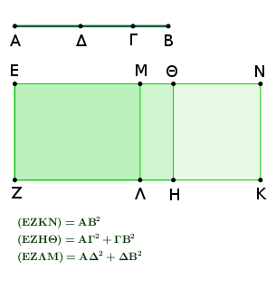
καὶ ἐκκείσθω ῥητὴ ἡ ΕΖ, καὶ τῷ μὲν ἀπὸ τῆς ΑΒ ἴσον παρὰ τὴν ΕΖ παραλληλόγραμμον ὀρθογώνιον παραβεβλήσθω τὸ ΕΚ, τοῖς δὲ ἀπὸ τῶν ΑΓ, ΓΒ ἴσον ἀφῃρήσθω τὸ ΕΗ· λοιπὸν ἄρα τὸ ΘΚ ἴσον ἐστὶ τῷ δὶς ὑπὸ τῶν ΑΓ, ΓΒ.
πάλιν δὴ τοῖς ἀπὸ τῶν ΑΔ, ΔΒ, ἅπερ ἐλάσσονα ἐδείχθη τῶν ἀπὸ τῶν ΑΓ, ΓΒ, ἴσον ἀφῃρήσθω τὸ ΕΛ· καὶ λοιπὸν ἄρα τὸ ΜΚ ἴσον τῷ δὶς ὑπὸ τῶν ΑΔ, ΔΒ. καὶ ἐπεὶ μέσα ἐστὶ τὰ ἀπὸ τῶν ΑΓ, ΓΒ, μέσον ἄρα [καὶ] τὸ ΕΗ. καὶ παρὰ ῥητὴν τὴν ΕΖ παράκειται· ῥητὴ ἄρα ἐστὶν ἡ ΕΘ καὶ ἀσύμμετρος τῇ ΕΖ μήκει. διὰ τὰ αὐτὰ δὴ καὶ ἡ ΘΝ ῥητή ἐστι καὶ ἀσύμμετρος τῇ ΕΖ μήκει. καὶ ἐπεὶ αἱ ΑΓ, ΓΒ μέσαι εἰσὶ δυνάμει μόνον σύμμετροι, ἀσύμμετρος ἄρα ἐστὶν ἡ ΑΓ τῇ ΓΒ μήκει.
ὡς δὲ ἡ ΑΓ πρὸς τὴν ΓΒ, οὕτως τὸ ἀπὸ τῆς ΑΓ πρὸς τὸ ὑπὸ τῶν ΑΓ, ΓΒ· ἀσύμμετρον ἄρα ἐστὶ τὸ ἀπὸ τῆς ΑΓ τῷ ὑπὸ τῶν ΑΓ, ΓΒ. ἀλλὰ τῷ μὲν ἀπὸ τῆς ΑΓ σύμμετρά ἐστι τὰ ἀπὸ τῶν ΑΓ, ΓΒ· δυνάμει γάρ εἰσι σύμμετροι αἱ ΑΓ, ΓΒ. τῷ δὲ ὑπὸ τῶν ΑΓ, ΓΒ σύμμετρόν ἐστι τὸ δὶς ὑπὸ τῶν ΑΓ, ΓΒ. καὶ τὰ ἀπὸ τῶν ΑΓ, ΓΒ ἄρα ἀσύμμετρά ἐστι τῷ δὶς ὑπὸ τῶν ΑΓ, ΓΒ.
ἀλλὰ τοῖς μὲν ἀπὸ τῶν ΑΓ, ΓΒ ἴσον ἐστὶ τὸ ΕΗ, τῷ δὲ δὶς ὑπὸ τῶν ΑΓ, ΓΒ ἴσον τὸ ΘΚ· ἀσύμμετρον ἄρα ἐστὶ τὸ ΕΗ τῷ ΘΚ· ὥστε καὶ ἡ ΕΘ τῇ ΘΝ ἀσύμμετρός ἐστι μήκει. καί εἰσι ῥηταί· αἱ ΕΘ, ΘΝ ἄρα ῥηταί εἰσι δυνάμει μόνον σύμμετροι. ἐὰν δὲ δύο ῥηταὶ δυνάμει μόνον σύμμετροι συντεθῶσιν, ἡ ὅλη ἄλογός ἐστιν ἡ καλουμένη ἐκ δύο ὀνομάτων· ἡ ΕΝ ἄρα ἐκ δύο ὀνομάτων ἐστὶ διῃρημένη κατὰ τὸ Θ.
κατὰ τὰ αὐτὰ δὴ δειχθήσονται καὶ αἱ ΕΜ, ΜΝ ῥηταὶ δυνάμει μόνον σύμμετροι· καὶ ἔσται ἡ ΕΝ ἐκ δύο ὀνομάτων κατ' ἄλλο καὶ ἄλλο διῃρημένη τό τε Θ καὶ τὸ Μ, καὶ οὐκ ἔστιν ἡ ΕΘ τῇ ΜΝ ἡ αὐτή, ὅτι τὰ ἀπὸ τῶν ΑΓ, ΓΒ μείζονά ἐστι τῶν ἀπὸ τῶν ΑΔ, ΔΒ.
ἀλλὰ τὰ ἀπὸ τῶν ΑΔ, ΔΒ μείζονά ἐστι τοῦ δὶς ὑπὸ ΑΔ, ΔΒ· πολλῷ ἄρα καὶ τὰ ἀπὸ τῶν ΑΓ, ΓΒ, τουτέστι τὸ ΕΗ, μεῖζόν ἐστι τοῦ δὶς ὑπὸ τῶν ΑΔ, ΔΒ, τουτέστι τοῦ ΜΚ· ὥστε καὶ ἡ ΕΘ τῆς ΜΝ μείζων ἐστίν. ἡ ἄρα ΕΘ τῇ ΜΝ οὐκ ἔστιν ἡ αὐτή· ὅπερ ἔδει δεῖξαι.
Ἡ μείζων κατὰ τὸ αὐτὸ μόνον σημεῖον διαιρεῖται.
Ἔστω μείζων ἡ ΑΒ διῃρημένη κατὰ τὸ Γ, ὥστε τὰς ΑΓ, ΓΒ δυνάμει ἀσυμμέτρους εἶναι ποιούσας τὸ μὲν συγκείμενον ἐκ τῶν ἀπὸ τῶν ΑΓ, ΓΒ τετραγώνων ῥητόν, τὸ δ' ὑπὸ τῶν ΑΓ, ΓΒ μέσον· λέγω, ὅτι ἡ ΑΒ κατ' ἄλλο σημεῖον οὐ διαιρεῖται.
Εἰ γὰρ δυνατόν, διῃρήσθω καὶ κατὰ τὸ Δ, ὥστε καὶ τὰς ΑΔ, ΔΒ δυνάμει ἀσυμμέτρους εἶναι ποιούσας τὸ μὲν συγκείμενον ἐκ τῶν ἀπὸ τῶν ΑΔ, ΔΒ ῥητόν, τὸ δ' ὑπ' αὐτῶν μέσον.
καὶ ἐπεί, ᾧ διαφέρει τὰ ἀπὸ τῶν ΑΓ, ΓΒ τῶν ἀπὸ τῶν ΑΔ, ΔΒ, τούτῳ διαφέρει καὶ τὸ δὶς ὑπὸ τῶν ΑΔ, ΔΒ τοῦ δὶς ὑπὸ τῶν ΑΓ, ΓΒ, ἀλλὰ τὰ ἀπὸ τῶν ΑΓ, ΓΒ τῶν ἀπὸ τῶν ΑΔ, ΔΒ ὑπερέχει ῥητῷ· ῥητὰ γὰρ ἀμφότερα· καὶ τὸ δὶς ὑπὸ τῶν ΑΔ, ΔΒ ἄρα τοῦ δὶς ὑπὸ τῶν ΑΓ, ΓΒ ὑπερέχει ῥητῷ μέσα ὄντα· ὅπερ ἐστὶν ἀδύνατον.
οὐκ ἄρα ἡ μείζων κατ' ἄλλο καὶ ἄλλο σημεῖον διαιρεῖται· κατὰ τὸ αὐτὸ ἄρα μόνον διαιρεῖται· ὅπερ ἔδει δεῖξαι.
Ἡ ῥητὸν καὶ μέσον δυναμένη καθ' ἓν μόνον σημεῖον διαιρεῖται.
Ἔστω ῥητὸν καὶ μέσον δυναμένη ἡ ΑΒ διῃρημένη κατὰ τὸ Γ, ὥστε τὰς ΑΓ, ΓΒ δυνάμει ἀσυμμέτρους εἶναι ποιούσας τὸ μὲν συγκείμενον ἐκ τῶν ἀπὸ τῶν ΑΓ, ΓΒ μέσον, τὸ δὲ δὶς ὑπὸ τῶν ΑΓ, ΓΒ ῥητόν· λέγω, ὅτι ἡ ΑΒ κατ' ἄλλο σημεῖον οὐ διαιρεῖται.
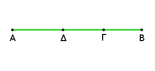
Εἰ γὰρ δυνατόν, διῃρήσθω καὶ κατὰ τὸ Δ, ὥστε καὶ τὰς ΑΔ, ΔΒ δυνάμει ἀσυμμέτρους εἶναι ποιούσας τὸ μὲν συγκείμενον ἐκ τῶν ἀπὸ τῶν ΑΔ, ΔΒ μέσον, τὸ δὲ δὶς ὑπὸ τῶν ΑΔ, ΔΒ ῥητόν.
ἐπεὶ οὖν, ᾧ διαφέρει τὸ δὶς ὑπὸ τῶν ΑΓ, ΓΒ τοῦ δὶς ὑπὸ τῶν ΑΔ, ΔΒ, τούτῳ διαφέρει καὶ τὰ ἀπὸ τῶν ΑΔ, ΔΒ τῶν ἀπὸ τῶν ΑΓ, ΓΒ, τὸ δὲ δὶς ὑπὸ τῶν ΑΓ, ΓΒ τοῦ δὶς ὑπὸ τῶν ΑΔ, ΔΒ ὑπερέχει ῥητῷ, καὶ τὰ ἀπὸ τῶν ΑΔ, ΔΒ ἄρα τῶν ἀπὸ τῶν ΑΓ, ΓΒ ὑπερέχει ῥητῷ μέσα ὄντα· ὅπερ ἐστὶν ἀδύνατον.
οὐκ ἄρα ἡ ῥητὸν καὶ μέσον δυναμένη κατ' ἄλλο καὶ ἄλλο σημεῖον διαιρεῖται. κατὰ ἓν ἄρα σημεῖον διαιρεῖται· ὅπερ ἔδει δεῖξαι.
Ἡ δύο μέσα δυναμένη καθ' ἓν μόνον σημεῖον διαιρεῖται.
Ἔστω [δύο μέσα δυναμένη] ἡ ΑΒ διῃρημένη κατὰ τὸ Γ, ὥστε τὰς ΑΓ, ΓΒ δυνάμει ἀσυμμέτρους εἶναι ποιούσας τό τε συγκείμενον ἐκ τῶν ἀπὸ τῶν ΑΓ, ΓΒ μέσον καὶ τὸ ὑπὸ τῶν ΑΓ, ΓΒ μέσον καὶ ἔτι ἀσύμμετρον τῷ συγκειμένῳ ἐκ τῶν ἀπ' αὐτῶν. λέγω, ὅτι ἡ ΑΒ κατ' ἄλλο σημεῖον οὐ διαιρεῖται ποιοῦσα τὰ προκείμενα.
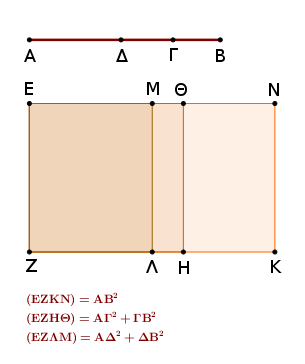
Εἰ γὰρ δυνατόν, διῃρήσθω κατὰ τὸ Δ, ὥστε πάλιν δηλονότι τὴν ΑΓ τῇ ΔΒ μὴ εἶναι τὴν αὐτήν, ἀλλὰ μείζονα καθ' ὑπόθεσιν τὴν ΑΓ, καὶ ἐκκείσθω ῥητὴ ἡ ΕΖ, καὶ παραβεβλήσθω παρὰ τὴν ΕΖ τοῖς μὲν ἀπὸ τῶν ΑΓ, ΓΒ ἴσον τὸ ΕΗ, τῷ δὲ δὶς ὑπὸ τῶν ΑΓ, ΓΒ ἴσον τὸ ΘΚ· ὅλον ἄρα τὸ ΕΚ ἴσον ἐστὶ τῷ ἀπὸ τῆς ΑΒ τετραγώνῳ.
πάλιν δὴ παραβεβλήσθω παρὰ τὴν ΕΖ τοῖς ἀπὸ τῶν ΑΔ, ΔΒ ἴσον τὸ ΕΛ· λοιπὸν ἄρα τὸ δὶς ὑπὸ τῶν ΑΔ, ΔΒ λοιπῷ τῷ ΜΚ ἴσον ἐστίν. καὶ ἐπεὶ μέσον ὑπόκειται τὸ συγκείμενον ἐκ τῶν ἀπὸ τῶν ΑΓ, ΓΒ, μέσον ἄρα ἐστὶ καὶ τὸ ΕΗ. καὶ παρὰ ῥητὴν τὴν ΕΖ παράκειται· ῥητὴ ἄρα ἐστὶν ἡ ΘΕ καὶ ἀσύμμετρος τῇ ΕΖ μήκει.
διὰ τὰ αὐτὰ δὴ καὶ ἡ ΘΝ ῥητή ἐστι καὶ ἀσύμμετρος τῇ ΕΖ μήκει. καὶ ἐπεὶ ἀσύμμετρόν ἐστι τὸ συγκείμενον ἐκ τῶν ἀπὸ τῶν ΑΓ, ΓΒ τῷ δὶς ὑπὸ τῶν ΑΓ, ΓΒ, καὶ τὸ ΕΗ ἄρα τῷ ΗΝ ἀσύμμετρόν ἐστιν· ὥστε καὶ ἡ ΕΘ τῇ ΘΝ ἀσύμμετρός ἐστιν. καί εἰσι ῥηταί· αἱ ΕΘ, ΘΝ ἄρα ῥηταί εἰσι δυνάμει μόνον σύμμετροι· ἡ ΕΝ ἄρα ἐκ δύο ὀνομάτων ἐστὶ διῃρημένη κατὰ τὸ Θ.
ὁμοίως δὴ δείξομεν, ὅτι καὶ κατὰ τὸ Μ διῄρηται. καὶ οὐκ ἔστιν ἡ ΕΘ τῇ ΜΝ ἡ αὐτή· ἡ ἄρα ἐκ δύο ὀνομάτων κατ' ἄλλο καὶ ἄλλο σημεῖον διῄρηται· ὅπερ ἐστὶν ἄτοπον. οὐκ ἄρα ἡ δύο μέσα δυναμένη κατ' ἄλλο καὶ ἄλλο σημεῖον διαιρεῖται· καθ' ἓν ἄρα μόνον [σημεῖον] διαιρεῖται.
Εὑρεῖν τὴν ἐκ δύο ὀνομάτων πρώτην.
Ἐκκείσθωσαν δύο ἀριθμοὶ οἱ ΑΓ, ΓΒ, ὥστε τὸν συγκείμενον ἐξ αὐτῶν τὸν ΑΒ πρὸς μὲν τὸν ΒΓ λόγον ἔχειν, ὃν τετράγωνος ἀριθμὸς πρὸς τετράγωνον ἀριθμόν, πρὸς δὲ τὸν ΓΑ λόγον μὴ ἔχειν, ὃν τετράγωνος ἀριθμὸς πρὸς τετράγωνον ἀριθμόν, καὶ ἐκκείσθω τις ῥητὴ ἡ Δ, καὶ τῇ Δ σύμμετρος ἔστω μήκει ἡ ΕΖ. ῥητὴ ἄρα ἐστὶ καὶ ἡ ΕΖ.
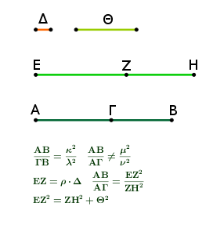
καὶ γεγονέτω ὡς ὁ ΒΑ ἀριθμὸς πρὸς τὸν ΑΓ, οὕτως τὸ ἀπὸ τῆς ΕΖ πρὸς τὸ ἀπὸ τῆς ΖΗ. ὁ δὲ ΑΒ πρὸς τὸν ΑΓ λόγον ἔχει, ὃν ἀριθμὸς πρὸς ἀριθμόν· καὶ τὸ ἀπὸ τῆς ΕΖ ἄρα πρὸς τὸ ἀπὸ τῆς ΖΗ λόγον ἔχει, ὃν ἀριθμὸς πρὸς ἀριθμόν· ὥστε σύμμετρόν ἐστι τὸ ἀπὸ τῆς ΕΖ τῷ ἀπὸ τῆς ΖΗ. καί ἐστι ῥητὴ ἡ ΕΖ· ῥητὴ ἄρα καὶ ἡ ΖΗ.
καὶ ἐπεὶ ὁ ΒΑ πρὸς τὸν ΑΓ λόγον οὐκ ἔχει, ὃν τετράγωνος ἀριθμὸς πρὸς τετράγωνον ἀριθμόν, οὐδὲ τὸ ἀπὸ τῆς ΕΖ ἄρα πρὸς τὸ ἀπὸ τῆς ΖΗ λόγον ἔχει, ὃν τετράγωνος ἀριθμὸς πρὸς τετράγωνον ἀριθμόν· ἀσύμμετρος ἄρα ἐστὶν ἡ ΕΖ τῇ ΖΗ μήκει. αἱ ΕΖ, ΖΗ ἄρα ῥηταί εἰσι δυνάμει μόνον σύμμετροι· ἐκ δύο ἄρα ὀνομάτων ἐστὶν ἡ ΕΗ.
Λέγω, ὅτι καὶ πρώτη. Ἐπεὶ γάρ ἐστιν ὡς ὁ ΒΑ ἀριθμὸς πρὸς τὸν ΑΓ, οὕτως τὸ ἀπὸ τῆς ΕΖ πρὸς τὸ ἀπὸ τῆς ΖΗ, μείζων δὲ ὁ ΒΑ τοῦ ΑΓ, μεῖζον ἄρα καὶ τὸ ἀπὸ τῆς ΕΖ τοῦ ἀπὸ τῆς ΖΗ.
ἔστω οὖν τῷ ἀπὸ τῆς ΕΖ ἴσα τὰ ἀπὸ τῶν ΖΗ, Θ. καὶ ἐπεί ἐστιν ὡς ὁ ΒΑ πρὸς τὸν ΑΓ, οὕτως τὸ ἀπὸ τῆς ΕΖ πρὸς τὸ ἀπὸ τῆς ΖΗ, ἀναστρέψαντι ἄρα ἐστὶν ὡς ὁ ΑΒ πρὸς τὸν ΒΓ, οὕτως τὸ ἀπὸ τῆς ΕΖ πρὸς τὸ ἀπὸ τῆς Θ.
ὁ δὲ ΑΒ πρὸς τὸν ΒΓ λόγον ἔχει, ὃν τετράγωνος ἀριθμὸς πρὸς τετράγωνον ἀριθμόν· καὶ τὸ ἀπὸ τῆς ΕΖ ἄρα πρὸς τὸ ἀπὸ τῆς Θ λόγον ἔχει, ὃν τετράγωνος ἀριθμὸς πρὸς τετράγωνον ἀριθμόν. σύμμετρος ἄρα ἐστὶν ἡ ΕΖ τῇ Θ μήκει· ἡ ΕΖ ἄρα τῆς ΖΗ μεῖζον δύναται τῷ ἀπὸ συμμέτρου ἑαυτῇ. καί εἰσι ῥηταὶ αἱ ΕΖ, ΖΗ, καὶ σύμμετρος ἡ ΕΖ τῇ Δ μήκει. Ἡ ΕΗ ἄρα ἐκ δύο ὀνομάτων ἐστὶ πρώτη· ὅπερ ἔδει δεῖξαι.
Εὑρεῖν τὴν ἐκ δύο ὀνομάτων δευτέραν.
Ἐκκείσθωσαν δύο ἀριθμοὶ οἱ ΑΓ, ΓΒ, ὥστε τὸν συγκείμενον ἐξ αὐτῶν τὸν ΑΒ πρὸς μὲν τὸν ΒΓ λόγον ἔχειν, ὃν τετράγωνος ἀριθμὸς πρὸς τετράγωνον ἀριθμόν, πρὸς δὲ τὸν ΑΓ λόγον μὴ ἔχειν, ὃν τετράγωνος ἀριθμὸς πρὸς τετράγωνον ἀριθμόν, καὶ ἐκκείσθω ῥητὴ ἡ Δ, καὶ τῇ Δ σύμμετρος ἔστω ἡ ΕΖ μήκει· ῥητὴ ἄρα ἐστὶν ἡ ΕΖ.
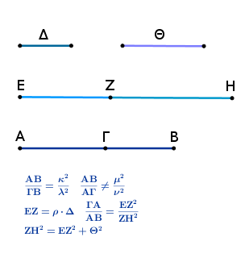
γεγονέτω δὴ καὶ ὡς ὁ ΓΑ ἀριθμὸς πρὸς τὸν ΑΒ, οὕτως τὸ ἀπὸ τῆς ΕΖ πρὸς τὸ ἀπὸ τῆς ΖΗ· σύμμετρον ἄρα ἐστὶ τὸ ἀπὸ τῆς ΕΖ τῷ ἀπὸ τῆς ΖΗ. ῥητὴ ἄρα ἐστὶ καὶ ἡ ΖΗ.
καὶ ἐπεὶ ὁ ΓΑ ἀριθμὸς πρὸς τὸν ΑΒ λόγον οὐκ ἔχει, ὃν τετράγωνος ἀριθμὸς πρὸς τετράγωνον ἀριθμόν, οὐδὲ τὸ ἀπὸ τῆς ΕΖ πρὸς τὸ ἀπὸ τῆς ΖΗ λόγον ἔχει, ὃν τετράγωνος ἀριθμὸς πρὸς τετράγωνον ἀριθμόν. ἀσύμμετρος ἄρα ἐστὶν ἡ ΕΖ τῇ ΖΗ μήκει· αἱ ΕΖ, ΖΗ ἄρα ῥηταί εἰσι δυνάμει μόνον σύμμετροι· ἐκ δύο ἄρα ὀνομάτων ἐστὶν ἡ ΕΗ.
Δεικτέον δή, ὅτι καὶ δευτέρα. Ἐπεὶ γὰρ ἀνάπαλίν ἐστιν ὡς ὁ ΒΑ ἀριθμὸς πρὸς τὸν ΑΓ, οὕτως τὸ ἀπὸ τῆς ΗΖ πρὸς τὸ ἀπὸ τῆς ΖΕ, μείζων δὲ ὁ ΒΑ τοῦ ΑΓ, μεῖζον ἄρα [καὶ] τὸ ἀπὸ τῆς ΗΖ τοῦ ἀπὸ τῆς ΖΕ.
ἔστω τῷ ἀπὸ τῆς ΗΖ ἴσα τὰ ἀπὸ τῶν ΕΖ, Θ· ἀναστρέψαντι ἄρα ἐστὶν ὡς ὁ ΑΒ πρὸς τὸν ΒΓ, οὕτως τὸ ἀπὸ τῆς ΖΗ πρὸς τὸ ἀπὸ τῆς Θ. ἀλλ' ὁ ΑΒ πρὸς τὸν ΒΓ λόγον ἔχει, ὃν τετράγωνος ἀριθμὸς πρὸς τετράγωνον ἀριθμόν· καὶ τὸ ἀπὸ τῆς ΖΗ ἄρα πρὸς τὸ ἀπὸ τῆς Θ λόγον ἔχει, ὃν τετράγωνος ἀριθμὸς πρὸς τετράγωνον ἀριθμόν.
σύμμετρος ἄρα ἐστὶν ἡ ΖΗ τῇ Θ μήκει· ὥστε ἡ ΖΗ τῆς ΖΕ μεῖζον δύναται τῷ ἀπὸ συμμέτρου ἑαυτῇ. καί εἰσι ῥηταὶ αἱ ΖΗ, ΖΕ δυνάμει μόνον σύμμετροι, καὶ τὸ ΕΖ ἔλασσον ὄνομα τῇ ἐκκειμένῃ ῥητῇ σύμμετρόν ἐστι τῇ Δ μήκει. Ἡ ΕΗ ἄρα ἐκ δύο ὀνομάτων ἐστὶ δευτέρα· ὅπερ ἔδει δεῖξαι.
Εὑρεῖν τὴν ἐκ δύο ὀνομάτων τρίτην.
Ἐκκείσθωσαν δύο ἀριθμοὶ οἱ ΑΓ, ΓΒ, ὥστε τὸν συγκείμενον ἐξ αὐτῶν τὸν ΑΒ πρὸς μὲν τὸν ΒΓ λόγον ἔχειν, ὃν τετράγωνος ἀριθμὸς πρὸς τετράγωνον ἀριθμόν, πρὸς δὲ τὸν ΑΓ λόγον μὴ ἔχειν, ὃν τετράγωνος ἀριθμὸς πρὸς τετράγωνον ἀριθμόν.
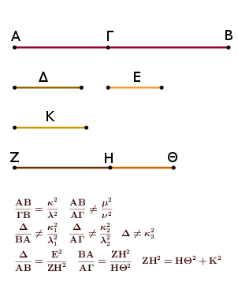
ἐκκείσθω δέ τις καὶ ἄλλος μὴ τετράγωνος ἀριθμὸς ὁ Δ, καὶ πρὸς ἑκάτερον τῶν ΒΑ, ΑΓ λόγον μὴ ἐχέτω, ὃν τετράγωνος ἀριθμὸς πρὸς τετράγωνον ἀριθμόν· καὶ ἐκκείσθω τις ῥητὴ εὐθεῖα ἡ Ε, καὶ γεγονέτω ὡς ὁ Δ πρὸς τὸν ΑΒ, οὕτως τὸ ἀπὸ τῆς Ε πρὸς τὸ ἀπὸ τῆς ΖΗ· σύμμετρον ἄρα ἐστὶ τὸ ἀπὸ τῆς Ε τῷ ἀπὸ τῆς ΖΗ.
καί ἐστι ῥητὴ ἡ Ε· ῥητὴ ἄρα ἐστὶ καὶ ἡ ΖΗ. καὶ ἐπεὶ ὁ Δ πρὸς τὸν ΑΒ λόγον οὐκ ἔχει, ὃν τετράγωνος ἀριθμὸς πρὸς τετράγωνον ἀριθμόν, οὐδὲ τὸ ἀπὸ τῆς Ε πρὸς τὸ ἀπὸ τῆς ΖΗ λόγον ἔχει, ὃν τετράγωνος ἀριθμὸς πρὸς τετράγωνον ἀριθμόν· ἀσύμμετρος ἄρα ἐστὶν ἡ Ε τῇ ΖΗ μήκει.
γεγονέτω δὴ πάλιν ὡς ὁ ΒΑ ἀριθμὸς πρὸς τὸν ΑΓ, οὕτως τὸ ἀπὸ τῆς ΖΗ πρὸς τὸ ἀπὸ τῆς ΗΘ· σύμμετρον ἄρα ἐστὶ τὸ ἀπὸ τῆς ΖΗ τῷ ἀπὸ τῆς ΗΘ. ῥητὴ δὲ ἡ ΖΗ· ῥητὴ ἄρα καὶ ἡ ΗΘ. καὶ ἐπεὶ ὁ ΒΑ πρὸς τὸν ΑΓ λόγον οὐκ ἔχει, ὅν τετράγωνος ἀριθμὸς πρὸς τετράγωνον ἀριθμόν, οὐδὲ τὸ ἀπὸ τῆς ΖΗ πρὸς τὸ ἀπὸ τῆς ΘΗ λόγον ἔχει, ὃν τετράγωνος ἀριθμὸς πρὸς τετράγωνον ἀριθμόν· ἀσύμμετρος ἄρα ἐστὶν ἡ ΖΗ τῇ ΗΘ μήκει. αἱ ΖΗ, ΗΘ ἄρα ῥηταί εἰσι δυνάμει μόνον σύμμετροι· ἡ ΖΘ ἄρα ἐκ δύο ὀνομάτων ἐστίν.
Λέγω δή, ὅτι καὶ τρίτη. Ἐπεὶ γάρ ἐστιν ὡς ὁ Δ πρὸς τὸν ΑΒ, οὕτως τὸ ἀπὸ τῆς Ε πρὸς τὸ ἀπὸ τῆς ΖΗ, ὡς δὲ ὁ ΒΑ πρὸς τὸν ΑΓ, οὕτως τὸ ἀπὸ τῆς ΖΗ πρὸς τὸ ἀπὸ τῆς ΗΘ, δι' ἴσου ἄρα ἐστὶν ὡς ὁ Δ πρὸς τὸν ΑΓ, οὕτως τὸ ἀπὸ τῆς Ε πρὸς τὸ ἀπὸ τῆς ΗΘ.
ὁ δὲ Δ πρὸς τὸν ΑΓ λόγον οὐκ ἔχει, ὃν τετράγωνος ἀριθμὸς πρὸς τετράγωνον ἀριθμόν· οὐδὲ τὸ ἀπὸ τῆς Ε ἄρα πρὸς τὸ ἀπὸ τῆς ΗΘ λόγον ἔχει, ὃν τετράγωνος ἀριθμὸς πρὸς τετράγωνον ἀριθμόν· ἀσύμμετρος ἄρα ἐστὶν ἡ Ε τῇ ΗΘ μήκει.
καὶ ἐπεί ἐστιν ὡς ὁ ΒΑ πρὸς τὸν ΑΓ, οὕτως τὸ ἀπὸ τῆς ΖΗ πρὸς τὸ ἀπὸ τῆς ΗΘ, μεῖζον ἄρα τὸ ἀπὸ τῆς ΖΗ τοῦ ἀπὸ τῆς ΗΘ. ἔστω οὖν τῷ ἀπὸ τῆς ΖΗ ἴσα τὰ ἀπὸ τῶν ΗΘ, Κ· ἀναστρέψαντι ἄρα [ἐστὶν] ὡς ὁ ΑΒ πρὸς τὸν ΒΓ, οὕτως τὸ ἀπὸ τῆς ΖΗ πρὸς τὸ ἀπὸ τῆς Κ.
ὁ δὲ ΑΒ πρὸς τὸν ΒΓ λόγον ἔχει, ὃν τετράγωνος ἀριθμὸς πρὸς τετράγωνον ἀριθμόν· καὶ τὸ ἀπὸ τῆς ΖΗ ἄρα πρὸς τὸ ἀπὸ τῆς Κ λόγον ἔχει, ὃν τετράγωνος ἀριθμὸς πρὸς τετράγωνον ἀριθμόν· σύμμετρος ἄρα [ἐστὶν] ἡ ΖΗ τῇ Κ μήκει. ἡ ΖΗ ἄρα τῆς ΗΘ μεῖζον δύναται τῷ ἀπὸ συμμέτρου ἑαυτῇ. καί εἰσιν αἱ ΖΗ, ΗΘ ῥηταὶ δυνάμει μόνον σύμμετροι, καὶ οὐδετέρα αὐτῶν σύμμετρός ἐστι τῇ Ε μήκει. Ἡ ΖΘ ἄρα ἐκ δύο ὀνομάτων ἐστὶ τρίτη· ὅπερ ἔδει δεῖξαι.
Εὑρεῖν τὴν ἐκ δύο ὀνομάτων τετάρτην.
Ἐκκείσθωσαν δύο ἀριθμοὶ οἱ ΑΓ, ΓΒ, ὥστε τὸν ΑΒ πρὸς τὸν ΒΓ λόγον μὴ ἔχειν μήτε μὴν πρὸς τὸν ΑΓ, ὃν τετράγωνος ἀριθμὸς πρὸς τετράγωνον ἀριθμόν. καὶ ἐκκείσθω ῥητὴ ἡ Δ, καὶ τῇ Δ σύμμετρος ἔστω μήκει ἡ ΕΖ· ῥητὴ ἄρα ἐστὶ καὶ ἡ ΕΖ.
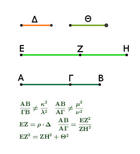
καὶ γεγονέτω ὡς ὁ ΒΑ ἀριθμὸς πρὸς τὸν ΑΓ, οὕτως τὸ ἀπὸ τῆς ΕΖ πρὸς τὸ ἀπὸ τῆς ΖΗ· σύμμετρον ἄρα ἐστὶ τὸ ἀπὸ τῆς ΕΖ τῷ ἀπὸ τῆς ΖΗ· ῥητὴ ἄρα ἐστὶ καὶ ἡ ΖΗ.
καὶ ἐπεὶ ὁ ΒΑ πρὸς τὸν ΑΓ λόγον οὐκ ἔχει, ὃν τετράγωνος ἀριθμὸς πρὸς τετράγωνον ἀριθμόν, οὐδὲ τὸ ἀπὸ τῆς ΕΖ πρὸς τὸ ἀπὸ τῆς ΖΗ λόγον ἔχει, ὃν τετράγωνος ἀριθμὸς πρὸς τετράγωνον ἀριθμόν· ἀσύμμετρος ἄρα ἐστὶν ἡ ΕΖ τῇ ΖΗ μήκει. αἱ ΕΖ, ΖΗ ἄρα ῥηταί εἰσι δυνάμει μόνον σύμμετροι· ὥστε ἡ ΕΗ ἐκ δύο ὀνομάτων ἐστίν.
Λέγω δή, ὅτι καὶ τετάρτη. Ἐπεὶ γάρ ἐστιν ὡς ὁ ΒΑ πρὸς τὸν ΑΓ, οὕτως τὸ ἀπὸ τῆς ΕΖ πρὸς τὸ ἀπὸ τῆς ΖΗ [μείζων δὲ ὁ ΒΑ τοῦ ΑΓ], μεῖζον ἄρα τὸ ἀπὸ τῆς ΕΖ τοῦ ἀπὸ τῆς ΖΗ.
ἔστω οὖν τῷ ἀπὸ τῆς ΕΖ ἴσα τὰ ἀπὸ τῶν ΖΗ, Θ· ἀναστρέψαντι ἄρα ὡς ὁ ΑΒ ἀριθμὸς πρὸς τὸν ΒΓ, οὕτως τὸ ἀπὸ τῆς ΕΖ πρὸς τὸ ἀπὸ τῆς Θ. ὁ δὲ ΑΒ πρὸς τὸν ΒΓ λόγον οὐκ ἔχει, ὃν τετράγωνος ἀριθμὸς πρὸς τετράγωνον ἀριθμόν· οὐδ' ἄρα τὸ ἀπὸ τῆς ΕΖ πρὸς τὸ ἀπὸ τῆς Θ λόγον ἔχει, ὃν τετράγωνος ἀριθμὸς πρὸς τετράγωνον ἀριθμόν.
ἀσύμμετρος ἄρα ἐστὶν ἡ ΕΖ τῇ Θ μήκει· ἡ ΕΖ ἄρα τῆς ΗΖ μεῖζον δύναται τῷ ἀπὸ ἀσυμμέτρου ἑαυτῇ. καί εἰσιν αἱ ΕΖ, ΖΗ ῥηταὶ δυνάμει μόνον σύμμετροι, καὶ ἡ ΕΖ τῇ Δ σύμμετρός ἐστι μήκει. Ἡ ΕΗ ἄρα ἐκ δύο ὀνομάτων ἐστὶ τετάρτη· ὅπερ ἔδει δεῖξαι.
Εὑρεῖν τὴν ἐκ δύο ὀνομάτων πέμπτην.
Ἐκκείσθωσαν δύο ἀριθμοὶ οἱ ΑΓ, ΓΒ, ὥστε τὸν ΑΒ πρὸς ἑκάτερον αὐτῶν λόγον μὴ ἔχειν, ὃν τετράγωνος ἀριθμὸς πρὸς τετράγωνον ἀριθμόν, καὶ ἐκκείσθω ῥητή τις εὐθεῖα ἡ Δ, καὶ τῇ Δ σύμμετρος ἔστω [μήκει] ἡ ΕΖ· ῥητὴ ἄρα ἡ ΕΖ.
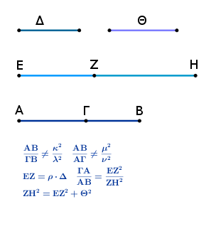
καὶ γεγονέτω ὡς ὁ ΓΑ πρὸς τὸν ΑΒ, οὕτως τὸ ἀπὸ τῆς ΕΖ πρὸς τὸ ἀπὸ τῆς ΖΗ. ὁ δὲ ΓΑ πρὸς τὸν ΑΒ λόγον οὐκ ἔχει, ὃν τετράγωνος ἀριθμὸς πρὸς τετράγωνον ἀριθμόν· οὐδὲ τὸ ἀπὸ τῆς ΕΖ ἄρα πρὸς τὸ ἀπὸ τῆς ΖΗ λόγον ἔχει, ὃν τετράγωνος ἀριθμὸς πρὸς τετράγωνον ἀριθμόν. αἱ ΕΖ, ΖΗ ἄρα ῥηταί εἰσι δυνάμει μόνον σύμμετροι· ἐκ δύο ἄρα ὀνομάτων ἐστὶν ἡ ΕΗ.
Λέγω δή, ὅτι καὶ πέμπτη. Ἐπεὶ γάρ ἐστιν ὡς ὁ ΓΑ πρὸς τὸν ΑΒ, οὕτως τὸ ἀπὸ τῆς ΕΖ πρὸς τὸ ἀπὸ τῆς ΖΗ, ἀνάπαλιν ὡς ὁ ΒΑ πρὸς τὸν ΑΓ, οὕτως τὸ ἀπὸ τῆς ΖΗ πρὸς τὸ ἀπὸ τῆς ΖΕ· μεῖζον ἄρα τὸ ἀπὸ τῆς ΗΖ τοῦ ἀπὸ τῆς ΖΕ.
ἔστω οὖν τῷ ἀπὸ τῆς ΗΖ ἴσα τὰ ἀπὸ τῶν ΕΖ, Θ· ἀναστρέψαντι ἄρα ἐστὶν ὡς ὁ ΑΒ ἀριθμὸς πρὸς τὸν ΒΓ, οὕτως τὸ ἀπὸ τῆς ΗΖ πρὸς τὸ ἀπὸ τῆς Θ. ὁ δὲ ΑΒ πρὸς τὸν ΒΓ λόγον οὐκ ἔχει, ὃν τετράγωνος ἀριθμὸς πρὸς τετράγωνον ἀριθμόν· οὐδ' ἄρα τὸ ἀπὸ τῆς ΖΗ πρὸς τὸ ἀπὸ τῆς Θ λόγον ἔχει, ὃν τετράγωνος ἀριθμὸς πρὸς τετράγωνον ἀριθμόν. ἀσύμμετρος ἄρα ἐστὶν ἡ ΖΗ τῇ Θ μήκει· ὥστε ἡ ΖΗ τῆς ΖΕ μεῖζον δύναται τῷ ἀπὸ ἀσυμμέτρου ἑαυτῇ.
καί εἰσιν αἱ ΗΖ, ΖΕ ῥηταὶ δυνάμει μόνον σύμμετροι καὶ τὸ ΕΖ ἔλαττον ὄνομα σύμμετρόν ἐστι τῇ ἐκκειμένῃ ῥητῇ τῇ Δ μήκει. Ἡ ΕΗ ἄρα ἐκ δύο ὀνομάτων ἐστὶ πέμπτη· ὅπερ ἔδει δεῖξαι.
Εὑρεῖν τὴν ἐκ δύο ὀνομάτων ἕκτην.
Ἐκκείσθωσαν δύο ἀριθμοὶ οἱ ΑΓ, ΓΒ, ὥστε τὸν ΑΒ πρὸς ἑκάτερον αὐτῶν λόγον μὴ ἔχειν, ὃν τετράγωνος ἀριθμὸς πρὸς τετράγωνον ἀριθμόν· ἔστω δὲ καὶ ἕτερος ἀριθμὸς ὁ Δ μὴ τετράγωνος ὢν μηδὲ πρὸς ἑκάτερον τῶν ΒΑ, ΑΓ λόγον ἔχων, ὃν τετράγωνος ἀριθμὸς πρὸς τετράγωνον ἀριθμόν· καὶ ἐκκείσθω τις ῥητὴ εὐθεῖα ἡ Ε, καὶ γεγονέτω ὡς ὁ Δ πρὸς τὸν ΑΒ, οὕτως τὸ ἀπὸ τῆς Ε πρὸς τὸ ἀπὸ τῆς ΖΗ· σύμμετρον ἄρα τὸ ἀπὸ τῆς Ε τῷ ἀπὸ τῆς ΖΗ. καί ἐστι ῥητὴ ἡ Ε· ῥητὴ ἄρα καὶ ἡ ΖΗ.
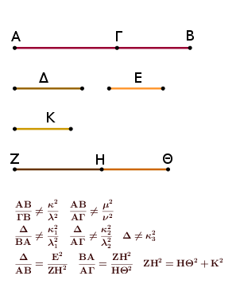
καὶ ἐπεὶ οὐκ ἔχει ὁ Δ πρὸς τὸν ΑΒ λόγον, ὃν τετράγωνος ἀριθμὸς πρὸς τετράγωνον ἀριθμόν, οὐδὲ τὸ ἀπὸ τῆς Ε ἄρα πρὸς τὸ ἀπὸ τῆς ΖΗ λόγον ἔχει, ὃν τετράγωνος ἀριθμὸς πρὸς τετράγωνον ἀριθμόν· ἀσύμμετρος ἄρα ἡ Ε τῇ ΖΗ μήκει.
γεγονέτω δὴ πάλιν ὡς ὁ ΒΑ πρὸς τὸν ΑΓ, οὕτως τὸ ἀπὸ τῆς ΖΗ πρὸς τὸ ἀπὸ τῆς ΗΘ. σύμμετρον ἄρα τὸ ἀπὸ τῆς ΖΗ τῷ ἀπὸ τῆς ΘΗ. ῥητὸν ἄρα τὸ ἀπὸ τῆς ΘΗ· ῥητὴ ἄρα ἡ ΘΗ. καὶ ἐπεὶ ὁ ΒΑ πρὸς τὸν ΑΓ λόγον οὐκ ἔχει, ὃν τετράγωνος ἀριθμὸς πρὸς τετράγωνον ἀριθμόν, οὐδὲ τὸ ἀπὸ τῆς ΖΗ πρὸς τὸ ἀπὸ τῆς ΗΘ λόγον ἔχει, ὃν τετράγωνος ἀριθμὸς πρὸς τετράγωνον ἀριθμόν· ἀσύμμετρος ἄρα ἐστὶν ἡ ΖΗ τῇ ΗΘ μήκει. αἱ ΖΗ, ΗΘ ἄρα ῥηταί εἰσι δυνάμει μόνον σύμμετροι· ἐκ δύο ἄρα ὀνομάτων ἐστὶν ἡ ΖΘ.
Δεικτέον δή, ὅτι καὶ ἕκτη. Ἐπεὶ γάρ ἐστιν ὡς ὁ Δ πρὸς τὸν ΑΒ, οὕτως τὸ ἀπὸ τῆς Ε πρὸς τὸ ἀπὸ τῆς ΖΗ, ἔστι δὲ καὶ ὡς ὁ ΒΑ πρὸς τὸν ΑΓ, οὕτως τὸ ἀπὸ τῆς ΖΗ πρὸς τὸ ἀπὸ τῆς ΗΘ, δι' ἴσου ἄρα ἐστὶν ὡς ὁ Δ πρὸς τὸν ΑΓ, οὕτως τὸ ἀπὸ τῆς Ε πρὸς τὸ ἀπὸ τῆς ΗΘ.
ὁ δὲ Δ πρὸς τὸν ΑΓ λόγον οὐκ ἔχει, ὃν τετράγωνος ἀριθμὸς πρὸς τετράγωνον ἀριθμόν· οὐδὲ τὸ ἀπὸ τῆς Ε ἄρα πρὸς τὸ ἀπὸ τῆς ΗΘ λόγον ἔχει, ὃν τετράγωνος ἀριθμὸς πρὸς τετράγωνον ἀριθμόν· ἀσύμμετρος ἄρα ἐστὶν ἡ Ε τῇ ΗΘ μήκει.
ἐδείχθη δὲ καὶ τῇ ΖΗ ἀσύμμετρος· ἑκατέρα ἄρα τῶν ΖΗ, ΗΘ ἀσύμμετρός ἐστι τῇ Ε μήκει. καὶ ἐπεί ἐστιν ὡς ὁ ΒΑ πρὸς τὸν ΑΓ, οὕτως τὸ ἀπὸ τῆς ΖΗ πρὸς τὸ ἀπὸ τῆς ΗΘ, μεῖζον ἄρα τὸ ἀπὸ τῆς ΖΗ τοῦ ἀπὸ τῆς ΗΘ.
ἔστω οὖν τῷ ἀπὸ [τῆς] ΖΗ ἴσα τὰ ἀπὸ τῶν ΗΘ, Κ· ἀναστρέψαντι ἄρα ὡς ὁ ΑΒ πρὸς ΒΓ, οὕτως τὸ ἀπὸ ΖΗ πρὸς τὸ ἀπὸ τῆς Κ. ὁ δὲ ΑΒ πρὸς τὸν ΒΓ λόγον οὐκ ἔχει, ὃν τετράγωνος ἀριθμὸς πρὸς τετράγωνον ἀριθμόν· ὥστε οὐδὲ τὸ ἀπὸ ΖΗ πρὸς τὸ ἀπὸ τῆς Κ λόγον ἔχει, ὃν τετράγωνος ἀριθμὸς πρὸς τετράγωνον ἀριθμόν. ἀσύμμετρος ἄρα ἐστὶν ἡ ΖΗ τῇ Κ μήκει· ἡ ΖΗ ἄρα τῆς ΗΘ μεῖζον δύναται τῷ ἀπὸ ἀσυμμέτρου ἑαυτῇ.
καί εἰσιν αἱ ΖΗ, ΗΘ ῥηταὶ δυνάμει μόνον σύμμετροι, καὶ οὐδετέρα αὐτῶν σύμμετρός ἐστι μήκει τῇ ἐκκειμένῃ ῥητῇ τῇ Ε. Ἡ ΖΘ ἄρα ἐκ δύο ὀνομάτων ἐστὶν ἕκτη· ὅπερ ἔδει δεῖξαι.
Λ ῆ μ μ α : Ἔστω δύο τετράγωνα τὰ ΑΒ, ΒΓ καὶ κείσθωσαν ὥστε ἐπ' εὐθείας εἶναι τὴν ΔΒ τῇ ΒΕ· ἐπ' εὐθείας ἄρα ἐστὶ καὶ ἡ ΖΒ τῇ ΒΗ. καὶ συμπεπληρώσθω τὸ ΑΓ παραλληλόγραμμον· λέγω, ὅτι τετράγωνόν ἐστι τὸ ΑΓ, καὶ ὅτι τῶν ΑΒ, ΒΓ μέσον ἀνάλογόν ἐστι τὸ ΔΗ, καὶ ἔτι τῶν ΑΓ, ΓΒ μέσον ἀνάλογόν ἐστι τὸ ΔΓ.
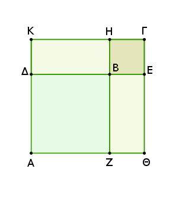
Ἐπεὶ γὰρ ἴση ἐστὶν ἡ μὲν ΔΒ τῇ ΒΖ, ἡ δὲ ΒΕ τῇ ΒΗ, ὅλη ἄρα ἡ ΔΕ ὅλῃ τῇ ΖΗ ἐστιν ἴση. ἀλλ' ἡ μὲν ΔΕ ἑκατέρᾳ τῶν ΑΘ, ΚΓ ἐστιν ἴση, ἡ δὲ ΖΗ ἑκατέρᾳ τῶν ΑΚ, ΘΓ ἐστιν ἴση· καὶ ἑκατέρα ἄρα τῶν ΑΘ, ΚΓ ἑκατέρᾳ τῶν ΑΚ, ΘΓ ἐστιν ἴση. ἰσόπλευρον ἄρα ἐστὶ τὸ ΑΓ παραλληλόγραμμον· ἔστι δὲ καὶ ὀρθογώνιον· τετράγωνον ἄρα ἐστὶ τὸ ΑΓ.
Καὶ ἐπεί ἐστιν ὡς ἡ ΖΒ πρὸς τὴν ΒΗ, οὕτως ἡ ΔΒ πρὸς τὴν ΒΕ, ἀλλ' ὡς μὲν ἡ ΖΒ πρὸς τὴν ΒΗ, οὕτως τὸ ΑΒ πρὸς τὸ ΔΗ, ὡς δὲ ἡ ΔΒ πρὸς τὴν ΒΕ, οὕτως τὸ ΔΗ πρὸς τὸ ΒΓ, καὶ ὡς ἄρα τὸ ΑΒ πρὸς τὸ ΔΗ, οὕτως τὸ ΔΗ πρὸς τὸ ΒΓ. τῶν ΑΒ, ΒΓ ἄρα μέσον ἀνάλογόν ἐστι τὸ ΔΗ.
Λέγω δή, ὅτι καὶ τῶν ΑΓ, ΓΒ μέσον ἀνάλογόν [ἐστι] τὸ ΔΓ.
Ἐπεὶ γάρ ἐστιν ὡς ἡ ΑΔ πρὸς τὴν ΔΚ, οὕτως ἡ ΚΗ πρὸς τὴν ΗΓ· ἴση γάρ [ἐστιν] ἑκατέρα ἑκατέρᾳ· καὶ συνθέντι ὡς ἡ ΑΚ πρὸς ΚΔ, οὕτως ἡ ΚΓ πρὸς ΓΗ, ἀλλ' ὡς μὲν ἡ ΑΚ πρὸς ΚΔ, οὕτως τὸ ΑΓ πρὸς τὸ ΓΔ, ὡς δὲ ἡ ΚΓ πρὸς ΓΗ, οὕτως τὸ ΔΓ πρὸς ΓΒ, καὶ ὡς ἄρα τὸ ΑΓ πρὸς ΔΓ, οὕτως τὸ ΔΓ πρὸς τὸ ΒΓ. τῶν ΑΓ, ΓΒ ἄρα μέσον ἀνάλογόν ἐστι τὸ ΔΓ· ἃ προέκειτο δεῖξαι.
Ἐὰν χωρίον περιέχηται ὑπὸ ῥητῆς καὶ τῆς ἐκ δύο ὀνομάτων πρώτης, ἡ τὸ χωρίον δυναμένη ἄλογός ἐστιν ἡ καλουμένη ἐκ δύο ὀνομάτων.
Χωρίον γὰρ τὸ ΑΓ περιεχέσθω ὑπὸ ῥητῆς τῆς ΑΒ καὶ τῆς ἐκ δύο ὀνομάτων πρώτης τῆς ΑΔ· λέγω, ὅτι ἡ τὸ ΑΓ χωρίον δυναμένη ἄλογός ἐστιν ἡ καλουμένη ἐκ δύο ὀνομάτων.
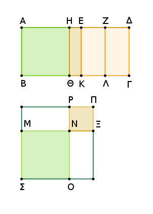
Ἐπεὶ γὰρ ἐκ δύο ὀνομάτων ἐστὶ πρώτη ἡ ΑΔ, διῃρήσθω εἰς τὰ ὀνόματα κατὰ τὸ Ε, καὶ ἔστω τὸ μεῖζον ὄνομα τὸ ΑΕ. φανερὸν δή, ὅτι αἱ ΑΕ, ΕΔ ῥηταί εἰσι δυνάμει μόνον σύμμετροι, καὶ ἡ ΑΕ τῆς ΕΔ μεῖζον δύναται τῷ ἀπὸ συμμέτρου ἑαυτῇ, καὶ ἡ ΑΕ σύμμετρός ἐστι τῇ ἐκκειμένῃ ῥητῇ τῇ ΑΒ μήκει.
τετμήσθω δὴ ἡ ΕΔ δίχα κατὰ τὸ Ζ σημεῖον. καὶ ἐπεὶ ἡ ΑΕ τῆς ΕΔ μεῖζον δύναται τῷ ἀπὸ συμμέτρου ἑαυτῇ, ἐὰν ἄρα τῷ τετάρτῳ μέρει τοῦ ἀπὸ τῆς ἐλάσσονος, τουτέστι τῷ ἀπὸ τῆς ΕΖ, ἴσον παρὰ τὴν μείζονα τὴν ΑΕ παραβληθῇ ἐλλεῖπον εἴδει τετραγώνῳ, εἰς σύμμετρα αὐτὴν διαιρεῖ.
παραβεβλήσθω οὖν παρὰ τὴν ΑΕ τῷ ἀπὸ τῆς ΕΖ ἴσον τὸ ὑπὸ ΑΗ, ΗΕ· σύμμετρος ἄρα ἐστὶν ἡ ΑΗ τῇ ΕΗ μήκει. καὶ ἤχθωσαν ἀπὸ τῶν Η, Ε, Ζ ὁποτέρᾳ τῶν ΑΒ, ΓΔ παράλληλοι αἱ ΗΘ, ΕΚ, ΖΛ· καὶ τῷ μὲν ΑΘ παραλληλογράμμῳ ἴσον τετράγωνον συνεστάτω τὸ ΣΝ, τῷ δὲ ΗΚ ἴσον τὸ ΝΠ, καὶ κείσθω ὥστε ἐπ' εὐθείας εἶναι τὴν ΜΝ τῇ ΝΞ· ἐπ' εὐθείας ἄρα ἐστὶ καὶ ἡ ΡΝ τῇ ΝΟ. καὶ συμπεπληρώσθω τὸ ΣΠ παραλληλόγραμμον· τετράγωνον ἄρα ἐστὶ τὸ ΣΠ.
καὶ ἐπεὶ τὸ ὑπὸ τῶν ΑΗ, ΗΕ ἴσον ἐστὶ τῷ ἀπὸ τῆς ΕΖ, ἔστιν ἄρα ὡς ἡ ΑΗ πρὸς ΕΖ, οὕτως ἡ ΖΕ πρὸς ΕΗ· καὶ ὡς ἄρα τὸ ΑΘ πρὸς ΕΛ, τὸ ΕΛ πρὸς ΚΗ· τῶν ΑΘ, ΗΚ ἄρα μέσον ἀνάλογόν ἐστι τὸ ΕΛ.
ἀλλὰ τὸ μὲν ΑΘ ἴσον ἐστὶ τῷ ΣΝ, τὸ δὲ ΗΚ ἴσον τῷ ΝΠ· τῶν ΣΝ, ΝΠ ἄρα μέσον ἀνάλογόν ἐστι τὸ ΕΛ. ἔστι δὲ τῶν αὐτῶν τῶν ΣΝ, ΝΠ μέσον ἀνάλογον καὶ τὸ ΜΡ· ἴσον ἄρα ἐστὶ τὸ ΕΛ τῷ ΜΡ· ὥστε καὶ τῷ ΟΞ ἴσον ἐστίν. ἔστι δὲ καὶ τὰ ΑΘ, ΗΚ τοῖς ΣΝ, ΝΠ ἴσα· ὅλον ἄρα τὸ ΑΓ ἴσον ἐστὶν ὅλῳ τῷ ΣΠ, τουτέστι τῷ ἀπὸ τῆς ΜΞ τετραγώνῳ· τὸ ΑΓ ἄρα δύναται ἡ ΜΞ.
Λέγω, ὅτι ἡ ΜΞ ἐκ δύο ὀνομάτων ἐστίν. Ἐπεὶ γὰρ σύμμετρός ἐστιν ἡ ΑΗ τῇ ΗΕ, σύμμετρός ἐστι καὶ ἡ ΑΕ ἑκατέρᾳ τῶν ΑΗ, ΗΕ. ὑπόκειται δὲ καὶ ἡ ΑΕ τῇ ΑΒ σύμμετρος· καὶ αἱ ΑΗ, ΗΕ ἄρα τῇ ΑΒ σύμμετροί εἰσιν. καί ἐστι ῥητὴ ἡ ΑΒ· ῥητὴ ἄρα ἐστὶ καὶ ἑκατέρα τῶν ΑΗ, ΗΕ· ῥητὸν ἄρα ἐστὶν ἑκάτερον τῶν ΑΘ, ΗΚ, καί ἐστι σύμμετρον τὸ ΑΘ τῷ ΗΚ.
ἀλλὰ τὸ μὲν ΑΘ τῷ ΣΝ ἴσον ἐστίν, τὸ δὲ ΗΚ τῷ ΝΠ· καὶ τὰ ΣΝ, ΝΠ ἄρα, τουτέστι τὰ ἀπὸ τῶν ΜΝ, ΝΞ, ῥητά ἐστι καὶ σύμμετρα. καὶ ἐπεὶ ἀσύμμετρός ἐστιν ἡ ΑΕ τῇ ΕΔ μήκει, ἀλλ' ἡ μὲν ΑΕ τῇ ΑΗ ἐστι σύμμετρος, ἡ δὲ ΔΕ τῇ ΕΖ σύμμετρος, ἀσύμμετρος ἄρα καὶ ἡ ΑΗ τῇ ΕΖ· ὥστε καὶ τὸ ΑΘ τῷ ΕΛ ἀσύμμετρόν ἐστιν.
ἀλλὰ τὸ μὲν ΑΘ τῷ ΣΝ ἐστιν ἴσον, τὸ δὲ ΕΛ τῷ ΜΡ· καὶ τὸ ΣΝ ἄρα τῷ ΜΡ ἀσύμμετρόν ἐστιν. ἀλλ' ὡς τὸ ΣΝ πρὸς ΜΡ, ἡ ΟΝ πρὸς τὴν ΝΡ· ἀσύμμετρος ἄρα ἐστὶν ἡ ΟΝ τῇ ΝΡ. ἴση δὲ ἡ μὲν ΟΝ τῇ ΜΝ, ἡ δὲ ΝΡ τῇ ΝΞ· ἀσύμμετρος ἄρα ἐστὶν ἡ ΜΝ τῇ ΝΞ.
καί ἐστι τὸ ἀπὸ τῆς ΜΝ σύμμετρον τῷ ἀπὸ τῆς ΝΞ, καὶ ῥητὸν ἑκάτερον· αἱ ΜΝ, ΝΞ ἄρα ῥηταί εἰσι δυνάμει μόνον σύμμετροι. Ἡ ΜΞ ἄρα ἐκ δύο ὀνομάτων ἐστὶ καὶ δύναται τὸ ΑΓ· ὅπερ ἔδει δεῖξαι.
Ἐὰν χωρίον περιέχηται ὑπὸ ῥητῆς καὶ τῆς ἐκ δύο ὀνομάτων δευτέρας, ἡ τὸ χωρίον δυναμένη ἄλογός ἐστιν ἡ καλουμένη ἐκ δύο μέσων πρώτη.
Περιεχέσθω γὰρ χωρίον τὸ ΑΒΓΔ ὑπὸ ῥητῆς τῆς ΑΒ καὶ τῆς ἐκ δύο ὀνομάτων δευτέρας τῆς ΑΔ· λέγω, ὅτι ἡ τὸ ΑΓ χωρίον δυναμένη ἐκ δύο μέσων πρώτη ἐστίν.
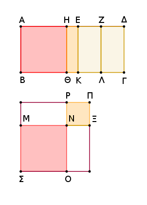
Ἐπεὶ γὰρ ἐκ δύο ὀνομάτων δευτέρα ἐστὶν ἡ ΑΔ, διῃρήσθω εἰς τὰ ὀνόματα κατὰ τὸ Ε, ὥστε τὸ μεῖζον ὄνομα εἶναι τὸ ΑΕ· αἱ ΑΕ, ΕΔ ἄρα ῥηταί εἰσι δυνάμει μόνον σύμμετροι, καὶ ἡ ΑΕ τῆς ΕΔ μεῖζον δύναται τῷ ἀπὸ συμμέτρου ἑαυτῇ, καὶ τὸ ἔλαττον ὄνομα ἡ ΕΔ σύμμετρόν ἐστι τῇ ΑΒ μήκει. τετμήσθω ἡ ΕΔ δίχα κατὰ τὸ Ζ, καὶ τῷ ἀπὸ τῆς ΕΖ ἴσον παρὰ τὴν ΑΕ παραβεβλήσθω ἐλλεῖπον εἴδει τετραγώνῳ τὸ ὑπὸ τῶν ΑΗΕ· σύμμετρος ἄρα ἡ ΑΗ τῇ ΗΕ μήκει.
καὶ διὰ τῶν Η, Ε, Ζ παράλληλοι ἤχθωσαν ταῖς ΑΒ, ΓΔ αἱ ΗΘ, ΕΚ, ΖΛ, καὶ τῷ μὲν ΑΘ παραλληλογράμμῳ ἴσον τετράγωνον συνεστάτω τὸ ΣΝ, τῷ δὲ ΗΚ ἴσον τετράγωνον τὸ ΝΠ, καὶ κείσθω ὥστε ἐπ' εὐθείας εἶναι τὴν ΜΝ τῇ ΝΞ· ἐπ' εὐθείας ἄρα [ἐστὶ] καὶ ἡ ΡΝ τῇ ΝΟ. καὶ συμπεπληρώσθω τὸ ΣΠ τετράγωνον· φανερὸν δὴ ἐκ τοῦ προδεδειγμένου, ὅτι τὸ ΜΡ μέσον ἀνάλογόν ἐστι τῶν ΣΝ, ΝΠ, καὶ ἴσον τῷ ΕΛ, καὶ ὅτι τὸ ΑΓ χωρίον δύναται ἡ ΜΞ.
δεικτέον δή, ὅτι ἡ ΜΞ ἐκ δύο μέσων ἐστὶ πρώτη. ἐπεὶ ἀσύμμετρός ἐστιν ἡ ΑΕ τῇ ΕΔ μήκει, σύμμετρος δὲ ἡ ΕΔ τῇ ΑΒ, ἀσύμμετρος ἄρα ἡ ΑΕ τῇ ΑΒ. καὶ ἐπεὶ σύμμετρός ἐστιν ἡ ΑΗ τῇ ΕΗ, σύμμετρός ἐστι καὶ ἡ ΑΕ ἑκατέρᾳ τῶν ΑΗ, ΗΕ. ἀλλὰ ἡ ΑΕ ἀσύμμετρος τῇ ΑΒ μήκει· καὶ αἱ ΑΗ, ΗΕ ἄρα ἀσύμμετροί εἰσι τῇ ΑΒ. αἱ ΒΑ, ΑΗ, ΗΕ ἄρα ῥηταί εἰσι δυνάμει μόνον σύμμετροι· ὥστε μέσον ἐστὶν ἑκάτερον τῶν ΑΘ, ΗΚ. ὥστε καὶ ἑκάτερον τῶν ΣΝ, ΝΠ μέσον ἐστίν. καὶ αἱ ΜΝ, ΝΞ ἄρα μέσαι εἰσίν.
καὶ ἐπεὶ σύμμετρος ἡ ΑΗ τῇ ΗΕ μήκει, σύμμετρόν ἐστι καὶ τὸ ΑΘ τῷ ΗΚ, τουτέστι τὸ ΣΝ τῷ ΝΠ, τουτέστι τὸ ἀπὸ τῆς ΜΝ τῷ ἀπὸ τῆς ΝΞ [ὥστε δυνάμει εἰσὶ σύμμετροι αἱ ΜΝ, ΝΞ]. καὶ ἐπεὶ ἀσύμμετρός ἐστιν ἡ ΑΕ τῇ ΕΔ μήκει, ἀλλ' ἡ μὲν ΑΕ σύμμετρός ἐστι τῇ ΑΗ, ἡ δὲ ΕΔ τῇ ΕΖ σύμμετρος, ἀσύμμετρος ἄρα ἡ ΑΗ τῇ ΕΖ· ὥστε καὶ τὸ ΑΘ τῷ ΕΛ ἀσύμμετρόν ἐστιν, τουτέστι τὸ ΣΝ τῷ ΜΡ, τουτέστιν ἡ ΟΝ τῇ ΝΡ, τουτέστιν ἡ ΜΝ τῇ ΝΞ ἀσύμμετρός ἐστι μήκει.
ἐδείχθησαν δὲ αἱ ΜΝ, ΝΞ καὶ μέσαι οὖσαι καὶ δυνάμει σύμμετροι· αἱ ΜΝ, ΝΞ ἄρα μέσαι εἰσὶ δυνάμει μόνον σύμμετροι. λέγω δή, ὅτι καὶ ῥητὸν περιέχουσιν. ἐπεὶ γὰρ ἡ ΔΕ ὑπόκειται ἑκατέρᾳ τῶν ΑΒ, ΕΖ σύμμετρος, σύμμετρος ἄρα καὶ ἡ ΕΖ τῇ ΕΚ. καὶ ῥητὴ ἑκατέρα αὐτῶν· ῥητὸν ἄρα τὸ ΕΛ, τουτέστι τὸ ΜΡ· τὸ δὲ ΜΡ ἐστι τὸ ὑπὸ τῶν ΜΝΞ. ἐὰν δὲ δύο μέσαι δυνάμει μόνον σύμμετροι συντεθῶσι ῥητὸν περιέχουσαι, ἡ ὅλη ἄλογός ἐστιν, καλεῖται δὲ ἐκ δύο μέσων πρώτη. Ἡ ἄρα ΜΞ ἐκ δύο μέσων ἐστὶ πρώτη· ὅπερ ἔδει δεῖξαι.
Ἐὰν χωρίον περιέχηται ὑπὸ ῥητῆς καὶ τῆς ἐκ δύο ὀνομάτων τρίτης, ἡ τὸ χωρίον δυναμένη ἄλογός ἐστιν ἡ καλουμένη ἐκ δύο μέσων δευτέρα.
Χωρίον γὰρ τὸ ΑΒΓΔ περιεχέσθω ὑπὸ ῥητῆς τῆς ΑΒ καὶ τῆς ἐκ δύο ὀνομάτων τρίτης τῆς ΑΔ διῃρημένης εἰς τὰ ὀνόματα κατὰ τὸ Ε, ὧν μεῖζόν ἐστι τὸ ΑΕ· λέγω, ὅτι ἡ τὸ ΑΓ χωρίον δυναμένη ἄλογός ἐστιν ἡ καλουμένη ἐκ δύο μέσων δευτέρα.
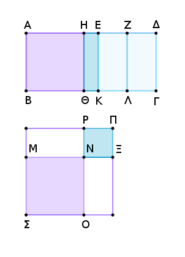
Κατεσκευάσθω γὰρ τὰ αὐτὰ τοῖς πρότερον. καὶ ἐπεὶ ἐκ δύο ὀνομάτων ἐστὶ τρίτη ἡ ΑΔ, αἱ ΑΕ, ΕΔ ἄρα ῥηταί εἰσι δυνάμει μόνον σύμμετροι, καὶ ἡ ΑΕ τῆς ΕΔ μεῖζον δύναται τῷ ἀπὸ συμμέτρου ἑαυτῇ, καὶ οὐδετέρα τῶν ΑΕ, ΕΔ σύμμετρός [ἐστι] τῇ ΑΒ μήκει.
ὁμοίως δὴ τοῖς προδεδειγμένοις δείξομεν, ὅτι ἡ ΜΞ ἐστιν ἡ τὸ ΑΓ χωρίον δυναμένη, καὶ αἱ ΜΝ, ΝΞ μέσαι εἰσὶ δυνάμει μόνον σύμμετροι· ὥστε ἡ ΜΞ ἐκ δύο μέσων ἐστίν.
Δεικτέον δή, ὅτι καὶ δευτέρα. [Καὶ] ἐπεὶ ἀσύμμετρός ἐστιν ἡ ΔΕ τῇ ΑΒ μήκει, τουτέστι τῇ ΕΚ, σύμμετρος δὲ ἡ ΔΕ τῇ ΕΖ, ἀσύμμετρος ἄρα ἐστὶν ἡ ΕΖ τῇ ΕΚ μήκει. καί εἰσι ῥηταί· αἱ ΖΕ, ΕΚ ἄρα ῥηταί εἰσι δυνάμει μόνον σύμμετροι. μέσον ἄρα [ἐστὶ] τὸ ΕΛ, τουτέστι τὸ ΜΡ· καὶ περιέχεται ὑπὸ τῶν ΜΝΞ· μέσον ἄρα ἐστὶ τὸ ὑπὸ τῶν ΜΝΞ. Ἡ ΜΞ ἄρα ἐκ δύο μέσων ἐστὶ δευτέρα· ὅπερ ἔδει δεῖξαι.
Ἐὰν χωρίον περιέχηται ὑπὸ ῥητῆς καὶ τῆς ἐκ δύο ὀνομάτων τετάρτης, ἡ τὸ χωρίον δυναμένη ἄλογός ἐστιν ἡ καλουμένη μείζων.
Χωρίον γὰρ τὸ ΑΓ περιεχέσθω ὑπὸ ῥητῆς τῆς ΑΒ καὶ τῆς ἐκ δύο ὀνομάτων τετάρτης τῆς ΑΔ διῃρημένης εἰς τὰ ὀνόματα κατὰ τὸ Ε, ὧν μεῖζον ἔστω τὸ ΑΕ· λέγω, ὅτι ἡ τὸ ΑΓ χωρίον δυναμένη ἄλογός ἐστιν ἡ καλουμένη μείζων.
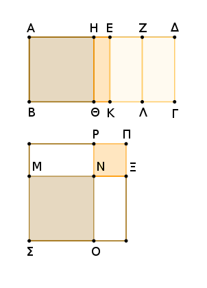
Ἐπεὶ γὰρ ἡ ΑΔ ἐκ δύο ὀνομάτων ἐστὶ τετάρτη, αἱ ΑΕ, ΕΔ ἄρα ῥηταί εἰσι δυνάμει μόνον σύμμετροι, καὶ ἡ ΑΕ τῆς ΕΔ μεῖζον δύναται τῷ ἀπὸ ἀσυμμέτρου ἑαυτῇ, καὶ ἡ ΑΕ τῇ ΑΒ σύμμετρός [ἐστι] μήκει.
τετμήσθω ἡ ΔΕ δίχα κατὰ τὸ Ζ, καὶ τῷ ἀπὸ τῆς ΕΖ ἴσον παρὰ τὴν ΑΕ παραβεβλήσθω παραλληλόγραμμον τὸ ὑπὸ ΑΗ, ΗΕ· ἀσύμμετρος ἄρα ἐστὶν ἡ ΑΗ τῇ ΗΕ μήκει. ἤχθωσαν παράλληλοι τῇ ΑΒ αἱ ΗΘ, ΕΚ, ΖΛ, καὶ τὰ λοιπὰ τὰ αὐτὰ τοῖς πρὸ τούτου γεγονέτω· φανερὸν δή, ὅτι ἡ τὸ ΑΓ χωρίον δυναμένη ἐστὶν ἡ ΜΞ.
δεικτέον δή, ὅτι ἡ ΜΞ ἄλογός ἐστιν ἡ καλουμένη μείζων. ἐπεὶ ἀσύμμετρός ἐστιν ἡ ΑΗ τῇ ΕΗ μήκει, ἀσύμμετρόν ἐστι καὶ τὸ ΑΘ τῷ ΗΚ, τουτέστι τὸ ΣΝ τῷ ΝΠ· αἱ ΜΝ, ΝΞ ἄρα δυνάμει εἰσὶν ἀσύμμετροι.
καὶ ἐπεὶ σύμμετρός ἐστιν ἡ ΑΕ τῇ ΑΒ μήκει, ῥητόν ἐστι τὸ ΑΚ· καί ἐστιν ἴσον τοῖς ἀπὸ τῶν ΜΝ, ΝΞ· ῥητὸν ἄρα [ἐστὶ] καὶ τὸ συγκείμενον ἐκ τῶν ἀπὸ τῶν ΜΝ, ΝΞ. καὶ ἐπεὶ ἀσύμμετρός [ἐστιν] ἡ ΔΕ τῇ ΑΒ μήκει, τουτέστι τῇ ΕΚ, ἀλλὰ ἡ ΔΕ σύμμετρός ἐστι τῇ ΕΖ, ἀσύμμετρος ἄρα ἡ ΕΖ τῇ ΕΚ μήκει.
αἱ ΕΚ, ΕΖ ἄρα ῥηταί εἰσι δυνάμει μόνον σύμμετροι· μέσον ἄρα τὸ ΛΕ, τουτέστι τὸ ΜΡ. καὶ περιέχεται ὑπὸ τῶν ΜΝ, ΝΞ· μέσον ἄρα ἐστὶ τὸ ὑπὸ τῶν ΜΝ, ΝΞ. καὶ ῥητὸν τὸ [συγκείμενον] ἐκ τῶν ἀπὸ τῶν ΜΝ, ΝΞ, καί εἰσιν ἀσύμμετροι αἱ ΜΝ, ΝΞ δυνάμει.
ἐὰν δὲ δύο εὐθεῖαι δυνάμει ἀσύμμετροι συντεθῶσι ποιοῦσαι τὸ μὲν συγκείμενον ἐκ τῶν ἀπ' αὐτῶν τετραγώνων ῥητόν, τὸ δ' ὑπ' αὐτῶν μέσον, ἡ ὅλη ἄλογός ἐστιν, καλεῖται δὲ μείζων. Ἡ ΜΞ ἄρα ἄλογός ἐστιν ἡ καλουμένη μείζων, καὶ δύναται τὸ ΑΓ χωρίον· ὅπερ ἔδει δεῖξαι.
Ἐὰν χωρίον περιέχηται ὑπὸ ῥητῆς καὶ τῆς ἐκ δύο ὀνομάτων πέμπτης, ἡ τὸ χωρίον δυναμένη ἄλογός ἐστιν ἡ καλουμένη ῥητὸν καὶ μέσον δυναμένη.
Χωρίον γὰρ τὸ ΑΓ περιεχέσθω ὑπὸ ῥητῆς τῆς ΑΒ καὶ τῆς ἐκ δύο ὀνομάτων πέμπτης τῆς ΑΔ διῃρημένης εἰς τὰ ὀνόματα κατὰ τὸ Ε, ὥστε τὸ μεῖζον ὄνομα εἶναι τὸ ΑΕ· λέγω [δή], ὅτι ἡ τὸ ΑΓ χωρίον δυναμένη ἄλογός ἐστιν ἡ καλουμένη ῥητὸν καὶ μέσον δυναμένη.
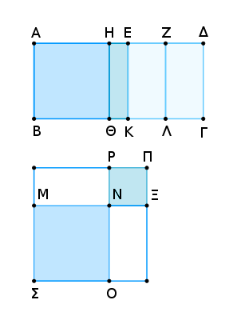
Κατεσκευάσθω γὰρ τὰ αὐτὰ τοῖς πρότερον δεδειγμένοις· φανερὸν δή, ὅτι ἡ τὸ ΑΓ χωρίον δυναμένη ἐστὶν ἡ ΜΞ. δεικτέον δή, ὅτι ἡ ΜΞ ἐστιν ἡ ῥητὸν καὶ μέσον δυναμένη. ἐπεὶ γὰρ ἀσύμμετρός ἐστιν ἡ ΑΗ τῇ ΗΕ, ἀσύμμετρον ἄρα ἐστὶ καὶ τὸ ΑΘ τῷ ΘΕ, τουτέστι τὸ ἀπὸ τῆς ΜΝ τῷ ἀπὸ τῆς ΝΞ· αἱ ΜΝ, ΝΞ ἄρα δυνάμει εἰσὶν ἀσύμμετροι.
καὶ ἐπεὶ ἡ ΑΔ ἐκ δύο ὀνομάτων ἐστὶ πέμπτη, καί [ἐστιν] ἔλασσον αὐτῆς τμῆμα τὸ ΕΔ, σύμμετρος ἄρα ἡ ΕΔ τῇ ΑΒ μήκει. ἀλλὰ ἡ ΑΕ τῇ ΕΔ ἐστιν ἀσύμμετρος· καὶ ἡ ΑΒ ἄρα τῇ ΑΕ ἐστιν ἀσύμμετρος μήκει. [αἱ ΒΑ, ΑΕ ῥηταί εἰσι δυνάμει μόνον σύμμετροι.] μέσον ἄρα ἐστὶ τὸ ΑΚ, τουτέστι τὸ συγκείμενον ἐκ τῶν ἀπὸ τῶν ΜΝ, ΝΞ.
καὶ ἐπεὶ σύμμετρός ἐστιν ἡ ΔΕ τῇ ΑΒ μήκει, τουτέστι τῇ ΕΚ, ἀλλὰ ἡ ΔΕ τῇ ΕΖ σύμμετρός ἐστιν, καὶ ἡ ΕΖ ἄρα τῇ ΕΚ σύμμετρός ἐστιν. καὶ ῥητὴ ἡ ΕΚ· ῥητὸν ἄρα καὶ τὸ ΕΛ, τουτέστι τὸ ΜΡ, τουτέστι τὸ ὑπὸ ΜΝΞ· αἱ ΜΝ, ΝΞ ἄρα δυνάμει ἀσύμμετροί εἰσι ποιοῦσαι τὸ μὲν συγκείμενον ἐκ τῶν ἀπ' αὐτῶν τετραγώνων μέσον, τὸ δ' ὑπ' αὐτῶν ῥητόν. Ἡ ΜΞ ἄρα ῥητὸν καὶ μέσον δυναμένη ἐστὶ καὶ δύναται τὸ ΑΓ χωρίον· ὅπερ ἔδει δεῖξαι.
Ἐὰν χωρίον περιέχηται ὑπὸ ῥητῆς καὶ τῆς ἐκ δύο ὀνομάτων ἕκτης, ἡ τὸ χωρίον δυναμένη ἄλογός ἐστιν ἡ καλουμένη δύο μέσα δυναμένη.
Χωρίον γὰρ τὸ ΑΒΓΔ περιεχέσθω ὑπὸ ῥητῆς τῆς ΑΒ καὶ τῆς ἐκ δύο ὀνομάτων ἕκτης τῆς ΑΔ διῃρημένης εἰς τὰ ὀνόματα κατὰ τὸ Ε, ὥστε τὸ μεῖζον ὄνομα εἶναι τὸ ΑΕ· λέγω, ὅτι ἡ τὸ ΑΓ δυναμένη ἡ δύο μέσα δυναμένη ἐστίν.
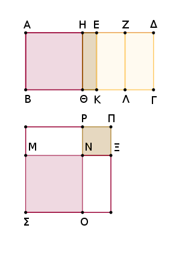
Κατεσκευάσθω [γὰρ] τὰ αὐτὰ τοῖς προδεδειγμένοις. φανερὸν δή, ὅτι [ἡ] τὸ ΑΓ δυναμένη ἐστὶν ἡ ΜΞ, καὶ ὅτι ἀσύμμετρός ἐστι ἡ ΜΝ τῇ ΝΞ δυνάμει. καὶ ἐπεὶ ἀσύμμετρός ἐστιν ἡ ΕΑ τῇ ΑΒ μήκει, αἱ ΕΑ, ΑΒ ἄρα ῥηταί εἰσι δυνάμει μόνον σύμμετροι· μέσον ἄρα ἐστὶ τὸ ΑΚ, τουτέστι τὸ συγκείμενον ἐκ τῶν ἀπὸ τῶν ΜΝ, ΝΞ.
πάλιν, ἐπεὶ ἀσύμμετρός ἐστιν ἡ ΕΔ τῇ ΑΒ μήκει, ἀσύμμετρος ἄρα ἐστὶ καὶ ἡ ΖΕ τῇ ΕΚ· αἱ ΖΕ, ΕΚ ἄρα ῥηταί εἰσι δυνάμει μόνον σύμμετροι· μέσον ἄρα ἐστὶ τὸ ΕΛ, τουτέστι τὸ ΜΡ, τουτέστι τὸ ὑπὸ τῶν ΜΝΞ. καὶ ἐπεὶ ἀσύμμετρος ἡ ΑΕ τῇ ΕΖ, καὶ τὸ ΑΚ τῷ ΕΛ ἀσύμμετρόν ἐστιν.
ἀλλὰ τὸ μὲν ΑΚ ἐστι τὸ συγκείμενον ἐκ τῶν ἀπὸ τῶν ΜΝ, ΝΞ, τὸ δὲ ΕΛ ἐστι τὸ ὑπὸ τῶν ΜΝΞ· ἀσύμμετρον ἄρα ἐστὶ τὸ συγκείμενον ἐκ τῶν ἀπὸ τῶν ΜΝΞ τῷ ὑπὸ τῶν ΜΝΞ. καί ἐστι μέσον ἑκάτερον αὐτῶν, καὶ αἱ ΜΝ, ΝΞ δυνάμει εἰσὶν ἀσύμμετροι. Ἡ ΜΞ ἄρα δύο μέσα δυναμένη ἐστὶ καὶ δύναται τὸ ΑΓ· ὅπερ ἔδει δεῖξαι.
[Λ ῆ μ μ α : Ἐὰν εὐθεῖα γραμμὴ τμηθῇ εἰς ἄνισα, τὰ ἀπὸ τῶν ἀνίσων τετράγωνα μείζονά ἐστι τοῦ δὶς ὑπὸ τῶν ἀνίσων περιεχομένου ὀρθογωνίου.
Ἔστω εὐθεῖα ἡ ΑΒ καὶ τετμήσθω εἰς ἄνισα κατὰ τὸ Γ, καὶ ἔστω μείζων ἡ ΑΓ· λέγω, ὅτι τὰ ἀπὸ τῶν ΑΓ, ΓΒ μείζονά ἐστι τοῦ δὶς ὑπὸ τῶν ΑΓ, ΓΒ.
Τετμήσθω γὰρ ἡ ΑΒ δίχα κατὰ τὸ Δ. ἐπεὶ οὖν εὐθεῖα γραμμὴ τέτμηται εἰς μὲν ἴσα κατὰ τὸ Δ, εἰς δὲ ἄνισα κατὰ τὸ Γ, τὸ ἄρα ὑπὸ τῶν ΑΓ, ΓΒ μετὰ τοῦ ἀπὸ ΓΔ ἴσον ἐστὶ τῷ ἀπὸ ΑΔ· ὥστε τὸ ὑπὸ τῶν ΑΓ, ΓΒ ἔλαττόν ἐστι τοῦ ἀπὸ ΑΔ· τὸ ἄρα δὶς ὑπὸ τῶν ΑΓ, ΓΒ ἔλαττον ἢ διπλάσιόν ἐστι τοῦ ἀπὸ ΑΔ.
ἀλλὰ τὰ ἀπὸ τῶν ΑΓ, ΓΒ διπλάσιά [ἐστι] τῶν ἀπὸ τῶν ΑΔ, ΔΓ· τὰ ἄρα ἀπὸ τῶν ΑΓ, ΓΒ μείζονά ἐστι τοῦ δὶς ὑπὸ τῶν ΑΓ, ΓΒ· ὅπερ ἔδει δεῖξαι.]
Τὸ ἀπὸ τῆς ἐκ δύο ὀνομάτων παρὰ ῥητὴν παραβαλλόμενον πλάτος ποιεῖ τὴν ἐκ δύο ὀνομάτων πρώτην.
Ἔστω ἐκ δύο ὀνομάτων ἡ ΑΒ διῃρημένη εἰς τὰ ὀνόματα κατὰ τὸ Γ, ὥστε τὸ μεῖζον ὄνομα εἶναι τὸ ΑΓ, καὶ ἐκκείσθω ῥητὴ ἡ ΔΕ, καὶ τῷ ἀπὸ τῆς ΑΒ ἴσον παρὰ τὴν ΔΕ παραβεβλήσθω τὸ ΔΕΖΗ πλάτος ποιοῦν τὴν ΔΗ· λέγω, ὅτι ἡ ΔΗ ἐκ δύο ὀνομάτων ἐστὶ πρώτη.
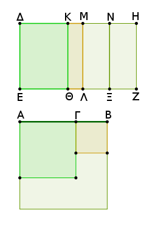
Παραβεβλήσθω γὰρ παρὰ τὴν ΔΕ τῷ μὲν ἀπὸ τῆς ΑΓ ἴσον τὸ ΔΘ, τῷ δὲ ἀπὸ τῆς ΒΓ ἴσον τὸ ΚΛ· λοιπὸν ἄρα τὸ δὶς ὑπὸ τῶν ΑΓ, ΓΒ ἴσον ἐστὶ τῷ ΜΖ. τετμήσθω ἡ ΜΗ δίχα κατὰ τὸ Ν, καὶ παράλληλος ἤχθω ἡ ΝΞ [ἑκατέρᾳ τῶν ΜΛ, ΗΖ]. ἑκάτερον ἄρα τῶν ΜΞ, ΝΖ ἴσον ἐστὶ τῷ ἅπαξ ὑπὸ τῶν ΑΓΒ.
καὶ ἐπεὶ ἐκ δύο ὀνομάτων ἐστὶν ἡ ΑΒ διῃρημένη εἰς τὰ ὀνόματα κατὰ τὸ Γ, αἱ ΑΓ, ΓΒ ἄρα ῥηταί εἰσι δυνάμει μόνον σύμμετροι· τὰ ἄρα ἀπὸ τῶν ΑΓ, ΓΒ ῥητά ἐστι καὶ σύμμετρα ἀλλήλοις· ὥστε καὶ τὸ συγκείμενον ἐκ τῶν ἀπὸ τῶν ΑΓ, ΓΒ [σύμμετρόν ἐστι τοῖς ἀπὸ τῶν ΑΓ, ΓΒ· ῥητὸν ἄρα ἐστὶ τὸ συγκείμενον ἐκ τῶν ἀπὸ τῶν ΑΓ, ΓΒ]. καί ἐστιν ἴσον τῷ ΔΛ· ῥητὸν ἄρα ἐστὶ τὸ ΔΛ. καὶ παρὰ ῥητὴν τὴν ΔΕ παράκειται· ῥητὴ ἄρα ἐστὶν ἡ ΔΜ καὶ σύμμετρος τῇ ΔΕ μήκει.
πάλιν, ἐπεὶ αἱ ΑΓ, ΓΒ ῥηταί εἰσι δυνάμει μόνον σύμμετροι, μέσον ἄρα ἐστὶ τὸ δὶς ὑπὸ τῶν ΑΓ, ΓΒ, τουτέστι τὸ ΜΖ. καὶ παρὰ ῥητὴν τὴν ΜΛ παράκειται· ῥητὴ ἄρα καὶ ἡ ΜΗ ἐστι καὶ ἀσύμμετρος τῇ ΜΛ, τουτέστι τῇ ΔΕ, μήκει. ἔστι δὲ καὶ ἡ ΜΔ ῥητὴ καὶ τῇ ΔΕ μήκει σύμμετρος· ἀσύμμετρος ἄρα ἐστὶν ἡ ΔΜ τῇ ΜΗ μήκει. καί εἰσι ῥηταί· αἱ ΔΜ, ΜΗ ἄρα ῥηταί εἰσι δυνάμει μόνον σύμμετροι· ἐκ δύο ἄρα ὀνομάτων ἐστὶν ἡ ΔΗ.
Δεικτέον δή, ὅτι καὶ πρώτη. Ἐπεὶ τῶν ἀπὸ τῶν ΑΓ, ΓΒ μέσον ἀνάλογόν ἐστι τὸ ὑπὸ τῶν ΑΓΒ, καὶ τῶν ΔΘ, ΚΛ ἄρα μέσον ἀνάλογόν ἐστι τὸ ΜΞ. ἔστιν ἄρα ὡς τὸ ΔΘ πρὸς τὸ ΜΞ, οὕτως τὸ ΜΞ πρὸς τὸ ΚΛ, τουτέστιν ὡς ἡ ΔΚ πρὸς τὴν ΜΝ, ἡ ΜΝ πρὸς τὴν ΜΚ· τὸ ἄρα ὑπὸ τῶν ΔΚ, ΚΜ ἴσον ἐστὶ τῷ ἀπὸ τῆς ΜΝ. καὶ ἐπεὶ σύμμετρόν ἐστι τὸ ἀπὸ τῆς ΑΓ τῷ ἀπὸ τῆς ΓΒ, σύμμετρόν ἐστι καὶ τὸ ΔΘ τῷ ΚΛ· ὥστε καὶ ἡ ΔΚ τῇ ΚΜ σύμμετρός ἐστιν.
καὶ ἐπεὶ μείζονά ἐστι τὰ ἀπὸ τῶν ΑΓ, ΓΒ τοῦ δὶς ὑπὸ τῶν ΑΓ, ΓΒ, μεῖζον ἄρα καὶ τὸ ΔΛ τοῦ ΜΖ· ὥστε καὶ ἡ ΔΜ τῆς ΜΗ μείζων ἐστίν. καί ἐστιν ἴσον τὸ ὑπὸ τῶν ΔΚ, ΚΜ τῷ ἀπὸ τῆς ΜΝ, τουτέστι τῷ τετάρτῳ τοῦ ἀπὸ τῆς ΜΗ, καὶ σύμμετρος ἡ ΔΚ τῇ ΚΜ. ἐὰν δὲ ὦσι δύο εὐθεῖαι ἄνισοι, τῷ δὲ τετάρτῳ μέρει τοῦ ἀπὸ τῆς ἐλάσσονος ἴσον παρὰ τὴν μείζονα παραβληθῇ ἐλλεῖπον εἴδει τετραγώνῳ καὶ εἰς σύμμετρα αὐτὴν διαιρῇ, ἡ μείζων τῆς ἐλάσσονος μεῖζον δύναται τῷ ἀπὸ συμμέτρου ἑαυτῇ· ἡ ΔΜ ἄρα τῆς ΜΗ μεῖζον δύναται τῷ ἀπὸ συμμέτρου ἑαυτῇ.
καί εἰσι ῥηταὶ αἱ ΔΜ, ΜΗ, καὶ ἡ ΔΜ μεῖζον ὄνομα σύμμετρός ἐστι τῇ ἐκκειμένῃ ῥητῇ τῇ ΔΕ μήκει. Ἡ ΔΗ ἄρα ἐκ δύο ὀνομάτων ἐστὶ πρώτη· ὅπερ ἔδει δεῖξαι.
Τὸ ἀπὸ τῆς ἐκ δύο μέσων πρώτης παρὰ ῥητὴν παραβαλλόμενον πλάτος ποιεῖ τὴν ἐκ δύο ὀνομάτων δευτέραν.
Ἔστω ἐκ δύο μέσων πρώτη ἡ ΑΒ διῃρημένη εἰς τὰς μέσας κατὰ τὸ Γ, ὧν μείζων ἡ ΑΓ, καὶ ἐκκείσθω ῥητὴ ἡ ΔΕ, καὶ παραβεβλήσθω παρὰ τὴν ΔΕ τῷ ἀπὸ τῆς ΑΒ ἴσον παραλληλόγραμμον τὸ ΔΖ πλάτος ποιοῦν τὴν ΔΗ· λέγω, ὅτι ἡ ΔΗ ἐκ δύο ὀνομάτων ἐστὶ δευτέρα.
Κατεσκευάσθω γὰρ τὰ αὐτὰ τοῖς πρὸ τούτου. καὶ ἐπεὶ ἡ ΑΒ ἐκ δύο μέσων ἐστὶ πρώτη διῃρημένη κατὰ τὸ Γ, αἱ ΑΓ, ΓΒ ἄρα μέσαι εἰσὶ δυνάμει μόνον σύμμετροι ῥητὸν περιέχουσαι· ὥστε καὶ τὰ ἀπὸ τῶν ΑΓ, ΓΒ μέσα ἐστίν. μέσον ἄρα ἐστὶ τὸ ΔΛ. καὶ παρὰ ῥητὴν τὴν ΔΕ παραβέβληται· ῥητὴ ἄρα ἐστίν ἡ ΜΔ καὶ ἀσύμμετρος τῇ ΔΕ μήκει.
πάλιν, ἐπεὶ ῥητόν ἐστι τὸ δὶς ὑπὸ τῶν ΑΓ, ΓΒ, ῥητόν ἐστι καὶ τὸ ΜΖ. καὶ παρὰ ῥητὴν τὴν ΜΛ παράκειται· ῥητὴ ἄρα [ἐστὶ] καὶ ἡ ΜΗ καὶ μήκει σύμμετρος τῇ ΜΛ, τουτέστι τῇ ΔΕ· ἀσύμμετρος ἄρα ἐστὶν ἡ ΔΜ τῇ ΜΗ μήκει. καί εἰσι ῥηταί· αἱ ΔΜ, ΜΗ ἄρα ῥηταί εἰσι δυνάμει μόνον σύμμετροι· ἐκ δύο ἄρα ὀνομάτων ἐστὶν ἡ ΔΗ.
Δεικτέον δή, ὅτι καὶ δευτέρα. Ἐπεὶ γὰρ τὰ ἀπὸ τῶν ΑΓ, ΓΒ μείζονά ἐστι τοῦ δὶς ὑπὸ τῶν ΑΓ, ΓΒ, μεῖζον ἄρα καὶ τὸ ΔΛ τοῦ ΜΖ· ὥστε καὶ ἡ ΔΜ τῆς ΜΗ. καὶ ἐπεὶ σύμμετρόν ἐστι τὸ ἀπὸ τῆς ΑΓ τῷ ἀπὸ τῆς ΓΒ, σύμμετρόν ἐστι καὶ τὸ ΔΘ τῷ ΚΛ· ὥστε καὶ ἡ ΔΚ τῇ ΚΜ σύμμετρός ἐστιν.
καί ἐστι τὸ ὑπὸ τῶν ΔΚΜ ἴσον τῷ ἀπὸ τῆς ΜΝ· ἡ ΔΜ ἄρα τῆς ΜΗ μεῖζον δύναται τῷ ἀπὸ συμμέτρου ἑαυτῇ. καί ἐστιν ἡ ΜΗ σύμμετρος τῇ ΔΕ μήκει. Ἡ ΔΗ ἄρα ἐκ δύο ὀνομάτων ἐστὶ δευτέρα.
Τὸ ἀπὸ τῆς ἐκ δύο μέσων δευτέρας παρὰ ῥητὴν παραβαλλόμενον πλάτος ποιεῖ τὴν ἐκ δύο ὀνομάτων τρίτην.
Ἔστω ἐκ δύο μέσων δευτέρα ἡ ΑΒ διῃρημένη εἰς τὰς μέσας κατὰ τὸ Γ, ὥστε τὸ μεῖζον τμῆμα εἶναι τὸ ΑΓ, ῥητὴ δέ τις ἔστω ἡ ΔΕ, καὶ παρὰ τὴν ΔΕ τῷ ἀπὸ τῆς ΑΒ ἴσον παραλληλόγραμμον παραβεβλήσθω τὸ ΔΖ πλάτος ποιοῦν τὴν ΔΗ· λέγω, ὅτι ἡ ΔΗ ἐκ δύο ὀνομάτων ἐστὶ τρίτη.
Κατεσκευάσθω τὰ αὐτὰ τοῖς προδεδειγμένοις. καὶ ἐπεὶ ἐκ δύο μέσων δευτέρα ἐστὶν ἡ ΑΒ διῃρημένη κατὰ τὸ Γ, αἱ ΑΓ, ΓΒ ἄρα μέσαι εἰσὶ δυνάμει μόνον σύμμετροι μέσον περιέχουσαι· ὥστε καὶ τὸ συγκείμενον ἐκ τῶν ἀπὸ τῶν ΑΓ, ΓΒ μέσον ἐστίν.
καί ἐστιν ἴσον τῷ ΔΛ· μέσον ἄρα καὶ τὸ ΔΛ. καὶ παράκειται παρὰ ῥητὴν τὴν ΔΕ· ῥητὴ ἄρα ἐστὶ καὶ ἡ ΜΔ καὶ ἀσύμμετρος τῇ ΔΕ μήκει.
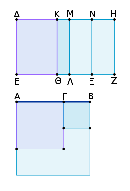
διὰ τὰ αὐτὰ δὴ καὶ ἡ ΜΗ ῥητή ἐστι καὶ ἀσύμμετρος τῇ ΜΛ, τουτέστι τῇ ΔΕ, μήκει· ῥητὴ ἄρα ἐστὶν ἑκατέρα τῶν ΔΜ, ΜΗ καὶ ἀσύμμετρος τῇ ΔΕ μήκει.
καὶ ἐπεὶ ἀσύμμετρός ἐστιν ἡ ΑΓ τῇ ΓΒ μήκει, ὡς δὲ ἡ ΑΓ πρὸς τὴν ΓΒ, οὕτως τὸ ἀπὸ τῆς ΑΓ πρὸς τὸ ὑπὸ τῶν ΑΓΒ, ἀσύμμετρον ἄρα καὶ τὸ ἀπὸ τῆς ΑΓ τῷ ὑπὸ τῶν ΑΓΒ. ὥστε καὶ τὸ συγκείμενον ἐκ τῶν ἀπὸ τῶν ΑΓ, ΓΒ τῷ δὶς ὑπὸ τῶν ΑΓΒ ἀσύμμετρόν ἐστιν, τουτέστι τὸ ΔΛ τῷ ΜΖ· ὥστε καὶ ἡ ΔΜ τῇ ΜΗ ἀσύμμετρός ἐστιν. καί εἰσι ῥηταί· ἐκ δύο ἄρα ὀνομάτων ἐστὶν ἡ ΔΗ.
Δεικτέον [δή], ὅτι καὶ τρίτη.
Ὁμοίως δὴ τοῖς προτέροις ἐπιλογιούμεθα, ὅτι μείζων ἐστὶν ἡ ΔΜ τῆς ΜΗ, καὶ σύμμετρος ἡ ΔΚ τῇ ΚΜ. καί ἐστι τὸ ὑπὸ τῶν ΔΚΜ ἴσον τῷ ἀπὸ τῆς ΜΝ· ἡ ΔΜ ἄρα τῆς ΜΗ μεῖζον δύναται τῷ ἀπὸ συμμέτρου ἑαυτῇ. καὶ οὐδετέρα τῶν ΔΜ, ΜΗ σύμμετρός ἐστι τῇ ΔΕ μήκει. Ἡ ΔΗ ἄρα ἐκ δύο ὀνομάτων ἐστὶ τρίτη· ὅπερ ἔδει δεῖξαι.
Τὸ ἀπὸ τῆς μείζονος παρὰ ῥητὴν παραβαλλόμενον πλάτος ποιεῖ τὴν ἐκ δύο ὀνομάτων τετάρτην.
Ἔστω μείζων ἡ ΑΒ διῃρημένη κατὰ τὸ Γ, ὥστε μείζονα εἶναι τὴν ΑΓ τῆς ΓΒ, ῥητὴ δὲ ἡ ΔΕ, καὶ τῷ ἀπὸ τῆς ΑΒ ἴσον παρὰ τὴν ΔΕ παραβεβλήσθω τὸ ΔΖ παραλληλόγραμμον πλάτος ποιοῦν τὴν ΔΗ· λέγω, ὅτι ἡ ΔΗ ἐκ δύο ὀνομάτων ἐστὶ τετάρτη.
Κατεσκευάσθω τὰ αὐτὰ τοῖς προδεδειγμένοις. καὶ ἐπεὶ μείζων ἐστὶν ἡ ΑΒ διῃρημένη κατὰ τὸ Γ, αἱ ΑΓ, ΓΒ δυνάμει εἰσὶν ἀσύμμετροι ποιοῦσαι τὸ μὲν συγκείμενον ἐκ τῶν ἀπ' αὐτῶν τετραγώνων ῥητόν, τὸ δὲ ὑπ' αὐτῶν μέσον.
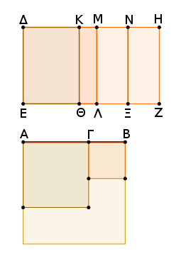
ἐπεὶ οὖν ῥητόν ἐστι τὸ συγκείμενον ἐκ τῶν ἀπὸ τῶν ΑΓ, ΓΒ, ῥητὸν ἄρα ἐστὶ τὸ ΔΛ· ῥητὴ ἄρα καὶ ἡ ΔΜ καὶ σύμμετρος τῇ ΔΕ μήκει.
πάλιν, ἐπεὶ μέσον ἐστὶ τὸ δὶς ὑπὸ τῶν ΑΓ, ΓΒ, τουτέστι τὸ ΜΖ, καὶ παρὰ ῥητήν ἐστι τὴν ΜΛ, ῥητὴ ἄρα ἐστὶ καὶ ἡ ΜΗ καὶ ἀσύμμετρος τῇ ΔΕ μήκει· ἀσύμμετρος ἄρα ἐστὶ καὶ ἡ ΔΜ τῇ ΜΗ μήκει. αἱ ΔΜ, ΜΗ ἄρα ῥηταί εἰσι δυνάμει μόνον σύμμετροι· ἐκ δύο ἄρα ὀνομάτων ἐστὶν ἡ ΔΗ.
Δεικτέον [δή], ὅτι καὶ τετάρτη. Ὁμοίως δὴ δείξομεν τοῖς πρότερον, ὅτι μείζων ἐστὶν ἡ ΔΜ τῆς ΜΗ, καὶ ὅτι τὸ ὑπὸ ΔΚΜ ἴσον ἐστὶ τῷ ἀπὸ τῆς ΜΝ.
ἐπεὶ οὖν ἀσύμμετρόν ἐστι τὸ ἀπὸ τῆς ΑΓ τῷ ἀπὸ τῆς ΓΒ, ἀσύμμετρον ἄρα ἐστὶ καὶ τὸ ΔΘ τῷ ΚΛ· ὥστε ἀσύμμετρος καὶ ἡ ΔΚ τῇ ΚΜ ἐστιν. ἐὰν δὲ ὦσι δύο εὐθεῖαι ἄνισοι, τῷ δὲ τετάρτῳ μέρει τοῦ ἀπὸ τῆς ἐλάσσονος ἴσον παραλληλόγραμμον παρὰ τὴν μείζονα παραβληθῇ ἐλλεῖπον εἴδει τετραγώνῳ καὶ εἰς ἀσύμμετρα αὐτὴν διαιρῇ, ἡ μείζων τῆς ἐλάσσονος μεῖζον δυνήσεται τῷ ἀπὸ ἀσυμμέτρου ἑαυτῇ μήκει· ἡ ΔΜ ἄρα τῆς ΜΗ μεῖζον δύναται τῷ ἀπὸ ἀσυμμέτρου ἑαυτῇ.
καί εἰσιν αἱ ΔΜ, ΜΗ ῥηταὶ δυνάμει μόνον σύμμετροι, καὶ ἡ ΔΜ σύμμετρός ἐστι τῇ ἐκκειμένῃ ῥητῇ τῇ ΔΕ. Ἡ ΔΗ ἄρα ἐκ δύο ὀνομάτων ἐστὶ τετάρτη· ὅπερ ἔδει δεῖξαι.
Τὸ ἀπὸ τῆς ῥητὸν καὶ μέσον δυναμένης παρὰ ῥητὴν παραβαλλόμενον πλάτος ποιεῖ τὴν ἐκ δύο ὀνομάτων πέμπτην.
Ἔστω ῥητὸν καὶ μέσον δυναμένη ἡ ΑΒ διῃρημένη εἰς τὰς εὐθείας κατὰ τὸ Γ, ὥστε μείζονα εἶναι τὴν ΑΓ, καὶ ἐκκείσθω ῥητὴ ἡ ΔΕ, καὶ τῷ ἀπὸ τῆς ΑΒ ἴσον παρὰ τὴν ΔΕ παραβεβλήσθω τὸ ΔΖ πλάτος ποιοῦν τὴν ΔΗ· λέγω, ὅτι ἡ ΔΗ ἐκ δύο ὀνομάτων ἐστὶ πέμπτη.
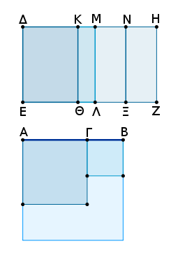
Κατεσκευάσθω τὰ αὐτὰ τοῖς πρὸ τούτου. ἐπεὶ οὖν ῥητὸν καὶ μέσον δυναμένη ἐστὶν ἡ ΑΒ διῃρημένη κατὰ τὸ Γ, αἱ ΑΓ, ΓΒ ἄρα δυνάμει εἰσὶν ἀσύμμετροι ποιοῦσαι τὸ μὲν συγκείμενον ἐκ τῶν ἀπ' αὐτῶν τετραγώνων μέσον, τὸ δ' ὑπ' αὐτῶν ῥητόν.
ἐπεὶ οὖν μέσον ἐστὶ τὸ συγκείμενον ἐκ τῶν ἀπὸ τῶν ΑΓ, ΓΒ, μέσον ἄρα ἐστὶ τὸ ΔΛ· ὥστε ῥητή ἐστιν ἡ ΔΜ καὶ μήκει ἀσύμμετρος τῇ ΔΕ. πάλιν, ἐπεὶ ῥητόν ἐστι τὸ δὶς ὑπὸ τῶν ΑΓΒ, τουτέστι τὸ ΜΖ, ῥητὴ ἄρα ἡ ΜΗ καὶ σύμμετρος τῇ ΔΕ. ἀσύμμετρος ἄρα ἡ ΔΜ τῇ ΜΗ· αἱ ΔΜ, ΜΗ ἄρα ῥηταί εἰσι δυνάμει μόνον σύμμετροι· ἐκ δύο ἄρα ὀνομάτων ἐστὶν ἡ ΔΗ.
Λέγω δή, ὅτι καὶ πέμπτη. Ὁμοίως γὰρ δειχθήσεται, ὅτι τὸ ὑπὸ τῶν ΔΚΜ ἴσον ἐστὶ τῷ ἀπὸ τῆς ΜΝ, καὶ ἀσύμμετρος ἡ ΔΚ τῇ ΚΜ μήκει· ἡ ΔΜ ἄρα τῆς ΜΗ μεῖζον δύναται τῷ ἀπὸ ἀσυμμέτρου ἑαυτῇ. καί εἰσιν αἱ ΔΜ, ΜΗ [ῥηταὶ] δυνάμει μόνον σύμμετροι, καὶ ἡ ἐλάσσων ἡ ΜΗ σύμμετρος τῇ ΔΕ μήκει. Ἡ ΔΗ ἄρα ἐκ δύο ὀνομάτων ἐστὶ πέμπτη· ὅπερ ἔδει δεῖξαι.
Τὸ ἀπὸ τῆς δύο μέσα δυναμένης παρὰ ῥητὴν παραβαλλόμενον πλάτος ποιεῖ τὴν ἐκ δύο ὀνομάτων ἕκτην.
Ἔστω δύο μέσα δυναμένη ἡ ΑΒ διῃρημένη κατὰ τὸ Γ, ῥητὴ δὲ ἔστω ἡ ΔΕ. καὶ παρὰ τὴν ΔΕ τῷ ἀπὸ τῆς ΑΒ ἴσον παραβεβλήσθω τὸ ΔΖ πλάτος ποιοῦν τὴν ΔΗ· λέγω, ὅτι ἡ ΔΗ ἐκ δύο ὀνομάτων ἐστὶν ἕκτη.
Κατεσκευάσθω γὰρ τὰ αὐτὰ τοῖς πρότερον. καὶ ἐπεὶ ἡ ΑΒ δύο μέσα δυναμένη ἐστὶ διῃρημένη κατὰ τὸ Γ, αἱ ΑΓ, ΓΒ ἄρα δυνάμει εἰσὶν ἀσύμμετροι ποιοῦσαι τό τε συγκείμενον ἐκ τῶν ἀπ' αὐτῶν τετραγώνων μέσον καὶ τὸ ὑπ' αὐτῶν μέσον καὶ ἔτι ἀσύμμετρον τὸ ἐκ τῶν ἀπ' αὐτῶν τετραγώνων συγκείμενον τῷ ὑπ' αὐτῶν· ὥστε κατὰ τὰ προδεδειγμένα μέσον ἐστὶν ἑκάτερον τῶν ΔΛ, ΜΖ.
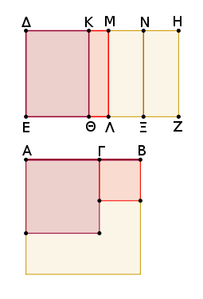
καὶ παρὰ ῥητὴν τὴν ΔΕ παράκειται· ῥητὴ ἄρα ἐστὶν ἑκατέρα τῶν ΔΜ, ΜΗ καὶ ἀσύμμετρος τῇ ΔΕ μήκει. καὶ ἐπεὶ ἀσύμμετρόν ἐστι τὸ συγκείμενον ἐκ τῶν ἀπὸ τῶν ΑΓ, ΓΒ τῷ δὶς ὑπὸ τῶν ΑΓ, ΓΒ, ἀσύμμετρον ἄρα ἐστὶ τὸ ΔΛ τῷ ΜΖ. ἀσύμμετρος ἄρα καὶ ἡ ΔΜ τῇ ΜΗ· αἱ ΔΜ, ΜΗ ἄρα ῥηταί εἰσι δυνάμει μόνον σύμμετροι· ἐκ δύο ἄρα ὀνομάτων ἐστὶν ἡ ΔΗ.
Λέγω δή, ὅτι καὶ ἕκτη. Ὁμοίως δὴ πάλιν δείξομεν, ὅτι τὸ ὑπὸ τῶν ΔΚΜ ἴσον ἐστὶ τῷ ἀπὸ τῆς ΜΝ, καὶ ὅτι ἡ ΔΚ τῇ ΚΜ μήκει ἐστὶν ἀσύμμετρος· καὶ διὰ τὰ αὐτὰ δὴ ἡ ΔΜ τῆς ΜΗ μεῖζον δύναται τῷ ἀπὸ ἀσυμμέτρου ἑαυτῇ μήκει. καὶ οὐδετέρα τῶν ΔΜ, ΜΗ σύμμετρός ἐστι τῇ ἐκκειμένῃ ῥητῇ τῇ ΔΕ μήκει. Ἡ ΔΗ ἄρα ἐκ δύο ὀνομάτων ἐστὶν ἕκτη· ὅπερ ἔδει δεῖξαι.
Ἡ τῇ ἐκ δύο ὀνομάτων μήκει σύμμετρος καὶ αὐτὴ ἐκ δύο ὀνομάτων ἐστὶ καὶ τῇ τάξει ἡ αὐτή.
Ἔστω ἐκ δύο ὀνομάτων ἡ ΑΒ, καὶ τῇ ΑΒ μήκει σύμμετρος ἔστω ἡ ΓΔ· λέγω, ὅτι ἡ ΓΔ ἐκ δύο ὀνομάτων ἐστὶ καὶ τῇ τάξει ἡ αὐτὴ τῇ ΑΒ.
Ἐπεὶ γὰρ ἐκ δύο ὀνομάτων ἐστὶν ἡ ΑΒ, διῃρήσθω εἰς τὰ ὀνόματα κατὰ τὸ Ε, καὶ ἔστω μεῖζον ὄνομα τὸ ΑΕ· αἱ ΑΕ, ΕΒ ἄρα ῥηταί εἰσι δυνάμει μόνον σύμμετροι.
γεγονέτω ὡς ἡ ΑΒ πρὸς τὴν ΓΔ, οὕτως ἡ ΑΕ πρὸς τὴν ΓΖ· καὶ λοιπὴ ἄρα ἡ ΕΒ πρὸς λοιπὴν τὴν ΖΔ ἐστιν, ὡς ἡ ΑΒ πρὸς τὴν ΓΔ. σύμμετρος δὲ ἡ ΑΒ τῇ ΓΔ μήκει. σύμμετρος ἄρα ἐστὶ καὶ ἡ μὲν ΑΕ τῇ ΓΖ, ἡ δὲ ΕΒ τῇ ΖΔ. καί εἰσι ῥηταὶ αἱ ΑΕ, ΕΒ· ῥηταὶ ἄρα εἰσὶ καὶ αἱ ΓΖ, ΖΔ.
καὶ [ἐπεί] ἐστιν ὡς ἡ ΑΕ πρὸς ΓΖ, ἡ ΕΒ πρὸς ΖΔ. ἐναλλὰξ ἄρα ἐστὶν ὡς ἡ ΑΕ πρὸς ΕΒ, ἡ ΓΖ πρὸς ΖΔ. αἱ δὲ ΑΕ, ΕΒ δυνάμει μόνον [εἰσὶ] σύμμετροι· καὶ αἱ ΓΖ, ΖΔ ἄρα δυνάμει μόνον εἰσὶ σύμμετροι. καί εἰσι ῥηταί· ἐκ δύο ἄρα ὀνομάτων ἐστὶν ἡ ΓΔ.
Λέγω δή, ὅτι τῇ τάξει ἐστὶν ἡ αὐτὴ τῇ ΑΒ.
Ἡ γὰρ ΑΕ τῆς ΕΒ μεῖζον δύναται ἤτοι τῷ ἀπὸ συμμέτρου ἑαυτῇ ἢ τῷ ἀπὸ ἀσυμμέτρου. εἰ μὲν οὖν ἡ ΑΕ τῆς ΕΒ μεῖζον δύναται τῷ ἀπὸ συμμέτρου ἑαυτῇ, καὶ ἡ ΓΖ τῆς ΖΔ μεῖζον δυνήσεται τῷ ἀπὸ συμμέτρου ἑαυτῇ. καὶ εἰ μὲν σύμμετρός ἐστιν ἡ ΑΕ τῇ ἐκκειμένῃ ῥητῇ, καὶ ἡ ΓΖ σύμμετρος αὐτῇ ἔσται, καὶ διὰ τοῦτο ἑκατέρα τῶν ΑΒ, ΓΔ ἐκ δύο ὀνομάτων ἐστὶ πρώτη, τουτέστι τῇ τάξει ἡ αὐτή. εἰ δὲ ἡ ΕΒ σύμμετρός ἐστι τῇ ἐκκειμένῃ ῥητῇ, καὶ ἡ ΖΔ σύμμετρός ἐστιν αὐτῇ, καὶ διὰ τοῦτο πάλιν τῇ τάξει ἡ αὐτὴ ἔσται τῇ ΑΒ· ἑκατέρα γὰρ αὐτῶν ἔσται ἐκ δύο ὀνομάτων δευτέρα. εἰ δὲ οὐδετέρα τῶν ΑΕ, ΕΒ σύμμετρός ἐστι τῇ ἐκκειμένῃ ῥητῇ, οὐδετέρα τῶν ΓΖ, ΖΔ σύμμετρος αὐτῇ ἔσται, καί ἐστιν ἑκατέρα τρίτη.
εἰ δὲ ἡ ΑΕ τῆς ΕΒ μεῖζον δύναται τῷ ἀπὸ ἀσυμμέτρου ἑαυτῇ, καὶ ἡ ΓΖ τῆς ΖΔ μεῖζον δύναται τῷ ἀπὸ ἀσυμμέτρου ἑαυτῇ. καὶ εἰ μὲν ἡ ΑΕ σύμμετρός ἐστι τῇ ἐκκειμένῃ ῥητῇ, καὶ ἡ ΓΖ σύμμετρός ἐστιν αὐτῇ, καί ἐστιν ἑκατέρα τετάρτη. εἰ δὲ ἡ ΕΒ, καὶ ἡ ΖΔ, καὶ ἔσται ἑκατέρα πέμπτη. εἰ δὲ οὐδετέρα τῶν ΑΕ, ΕΒ, καὶ τῶν ΓΖ, ΖΔ οὐδετέρα σύμμετρός ἐστι τῇ ἐκκειμένῃ ῥητῇ, καὶ ἔσται ἑκατέρα ἕκτη.
Ὥστε ἡ τῇ ἐκ δύο ὀνομάτων μήκει σύμμετρος ἐκ δύο ὀνομάτων ἐστὶ καὶ τῇ τάξει ἡ αὐτή· ὅπερ ἔδει δεῖξαι.
Ἡ τῇ ἐκ δύο μέσων μήκει σύμμετρος καὶ αὐτὴ ἐκ δύο μέσων ἐστὶ καὶ τῇ τάξει ἡ αὐτή.
Ἔστω ἐκ δύο μέσων ἡ ΑΒ, καὶ τῇ ΑΒ σύμμετρος ἔστω μήκει ἡ ΓΔ· λέγω, ὅτι ἡ ΓΔ ἐκ δύο μέσων ἐστὶ καὶ τῇ τάξει ἡ αὐτὴ τῇ ΑΒ.
Ἐπεὶ γὰρ ἐκ δύο μέσων ἐστὶν ἡ ΑΒ, διῃρήσθω εἰς τὰς μέσας κατὰ τὸ Ε· αἱ ΑΕ, ΕΒ ἄρα μέσαι εἰσὶ δυνάμει μόνον σύμμετροι.
καὶ γεγονέτω ὡς ἡ ΑΒ πρὸς ΓΔ, ἡ ΑΕ πρὸς ΓΖ· καὶ λοιπὴ ἄρα ἡ ΕΒ πρὸς λοιπὴν τὴν ΖΔ ἐστιν, ὡς ἡ ΑΒ πρὸς ΓΔ. σύμμετρος δὲ ἡ ΑΒ τῇ ΓΔ μήκει· σύμμετρος ἄρα καὶ ἑκατέρα τῶν ΑΕ, ΕΒ ἑκατέρᾳ τῶν ΓΖ, ΖΔ. μέσαι δὲ αἱ ΑΕ, ΕΒ· μέσαι ἄρα καὶ αἱ ΓΖ, ΖΔ.
καὶ ἐπεί ἐστιν ὡς ἡ ΑΕ πρὸς ΕΒ, ἡ ΓΖ πρὸς ΖΔ, αἱ δὲ ΑΕ, ΕΒ δυνάμει μόνον σύμμετροί εἰσιν, καὶ αἱ ΓΖ, ΖΔ [ἄρα] δυνάμει μόνον σύμμετροί εἰσιν. ἐδείχθησαν δὲ καὶ μέσαι· ἡ ΓΔ ἄρα ἐκ δύο μέσων ἐστίν.
Λέγω δή, ὅτι καὶ τῇ τάξει ἡ αὐτή ἐστι τῇ ΑΒ.
Ἐπεὶ γάρ ἐστιν ὡς ἡ ΑΕ πρὸς ΕΒ, ἡ ΓΖ πρὸς ΖΔ, καὶ ὡς ἄρα τὸ ἀπὸ τῆς ΑΕ πρὸς τὸ ὑπὸ τῶν ΑΕΒ, οὕτως τὸ ἀπὸ τῆς ΓΖ πρὸς τὸ ὑπὸ τῶν ΓΖΔ· ἐναλλὰξ ὡς τὸ ἀπὸ τῆς ΑΕ πρὸς τὸ ἀπὸ τῆς ΓΖ, οὕτως τὸ ὑπὸ τῶν ΑΕΒ πρὸς τὸ ὑπὸ τῶν ΓΖΔ.
σύμμετρον δὲ τὸ ἀπὸ τῆς ΑΕ τῷ ἀπὸ τῆς ΓΖ· σύμμετρον ἄρα καὶ τὸ ὑπὸ τῶν ΑΕΒ τῷ ὑπὸ τῶν ΓΖΔ. εἴτε οὖν ῥητόν ἐστι τὸ ὑπὸ τῶν ΑΕΒ, καὶ τὸ ὑπὸ τῶν ΓΖΔ ῥητόν ἐστιν [καὶ διὰ τοῦτό ἐστιν ἐκ δύο μέσων πρώτη]. εἴτε μέσον, μέσον, καί ἐστιν ἑκατέρα δευτέρα.
Καὶ διὰ τοῦτο ἔσται ἡ ΓΔ τῇ ΑΒ τῇ τάξει ἡ αὐτή· ὅπερ ἔδει δεῖξαι.
Ἡ τῇ μείζονι σύμμετρος καὶ αὐτὴ μείζων ἐστίν.
Ἔστω μείζων ἡ ΑΒ, καὶ τῇ ΑΒ σύμμετρος ἔστω ἡ ΓΔ· λέγω, ὅτι ἡ ΓΔ μείζων ἐστίν.
Διῃρήσθω ἡ ΑΒ κατὰ τὸ Ε· αἱ ΑΕ, ΕΒ ἄρα δυνάμει εἰσὶν ἀσύμμετροι ποιοῦσαι τὸ μὲν συγκείμενον ἐκ τῶν ἀπ' αὐτῶν τετραγώνων ῥητόν, τὸ δ' ὑπ' αὐτῶν μέσον· καὶ γεγονέτω τὰ αὐτὰ τοῖς πρότερον.
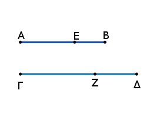
καὶ ἐπεί ἐστιν ὡς ἡ ΑΒ πρὸς τὴν ΓΔ, οὕτως ἥ τε ΑΕ πρὸς τὴν ΓΖ καὶ ἡ ΕΒ πρὸς τὴν ΖΔ, καὶ ὡς ἄρα ἡ ΑΕ πρὸς τὴν ΓΖ, οὕτως ἡ ΕΒ πρὸς τὴν ΖΔ. σύμμετρος δὲ ἡ ΑΒ τῇ ΓΔ. σύμμετρος ἄρα καὶ ἑκατέρα τῶν ΑΕ, ΕΒ ἑκατέρᾳ τῶν ΓΖ, ΖΔ.
καὶ ἐπεί ἐστιν ὡς ἡ ΑΕ πρὸς τὴν ΓΖ, οὕτως ἡ ΕΒ πρὸς τὴν ΖΔ, καὶ ἐναλλὰξ ὡς ἡ ΑΕ πρὸς ΕΒ, οὕτως ἡ ΓΖ πρὸς ΖΔ, καὶ συνθέντι ἄρα ἐστὶν ὡς ἡ ΑΒ πρὸς τὴν ΒΕ, οὕτως ἡ ΓΔ πρὸς τὴν ΔΖ· καὶ ὡς ἄρα τὸ ἀπὸ τῆς ΑΒ πρὸς τὸ ἀπὸ τῆς ΒΕ, οὕτως τὸ ἀπὸ τῆς ΓΔ πρὸς τὸ ἀπὸ τῆς ΔΖ.
ὁμοίως δὴ δείξομεν, ὅτι καὶ ὡς τὸ ἀπὸ τῆς ΑΒ πρὸς τὸ ἀπὸ τῆς ΑΕ, οὕτως τὸ ἀπὸ τῆς ΓΔ πρὸς τὸ ἀπὸ τῆς ΓΖ. καὶ ὡς ἄρα τὸ ἀπὸ τῆς ΑΒ πρὸς τὰ ἀπὸ τῶν ΑΕ, ΕΒ, οὕτως τὸ ἀπὸ τῆς ΓΔ πρὸς τὰ ἀπὸ τῶν ΓΖ, ΖΔ· καὶ ἐναλλὰξ ἄρα ἐστὶν ὡς τὸ ἀπὸ τῆς ΑΒ πρὸς τὸ ἀπὸ τῆς ΓΔ, οὕτως τὰ ἀπὸ τῶν ΑΕ, ΕΒ πρὸς τὰ ἀπὸ τῶν ΓΖ, ΖΔ.
σύμμετρον δὲ τὸ ἀπὸ τῆς ΑΒ τῷ ἀπὸ τῆς ΓΔ· σύμμετρα ἄρα καὶ τὰ ἀπὸ τῶν ΑΕ, ΕΒ τοῖς ἀπὸ τῶν ΓΖ, ΖΔ. καί ἐστι τὰ ἀπὸ τῶν ΑΕ, ΕΒ ἅμα ῥητόν, καὶ τὰ ἀπὸ τῶν ΓΖ, ΖΔ ἅμα ῥητόν ἐστιν.
ὁμοίως δὲ καὶ τὸ δὶς ὑπὸ τῶν ΑΕ, ΕΒ σύμμετρόν ἐστι τῷ δὶς ὑπὸ τῶν ΓΖ, ΖΔ. καί ἐστι μέσον τὸ δὶς ὑπὸ τῶν ΑΕ, ΕΒ· μέσον ἄρα καὶ τὸ δὶς ὑπὸ τῶν ΓΖ, ΖΔ. αἱ ΓΖ, ΖΔ ἄρα δυνάμει ἀσύμμετροί εἰσι ποιοῦσαι τὸ μὲν συγκείμενον ἐκ τῶν ἀπ' αὐτῶν τετραγώνων ἅμα ῥητόν, τὸ δὲ δὶς ὑπ' αὐτῶν μέσον· ὅλη ἄρα ἡ ΓΔ ἄλογός ἐστιν ἡ καλουμένη μείζων.
Ἡ ἄρα τῇ μείζονι σύμμετρος μείζων ἐστίν· ὅπερ ἔδει δεῖξαι.
Ἡ τῇ ῥητὸν καὶ μέσον δυναμένῃ σύμμετρος [καὶ αὐτὴ] ῥητὸν καὶ μέσον δυναμένη ἐστίν.
Ἔστω ῥητὸν καὶ μέσον δυναμένη ἡ ΑΒ, καὶ τῇ ΑΒ σύμμετρος ἔστω ἡ ΓΔ· δεικτέον, ὅτι καὶ ἡ ΓΔ ῥητὸν καὶ μέσον δυναμένη ἐστίν.
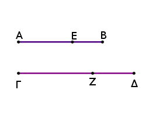
Διῃρήσθω ἡ ΑΒ εἰς τὰς εὐθείας κατὰ τὸ Ε· αἱ ΑΕ, ΕΒ ἄρα δυνάμει εἰσὶν ἀσύμμετροι ποιοῦσαι τὸ μὲν συγκείμενον ἐκ τῶν ἀπ' αὐτῶν τετραγώνων μέσον, τὸ δ' ὑπ' αὐτῶν ῥητόν· καὶ τὰ αὐτὰ κατεσκευάσθω τοῖς πρότερον.
ὁμοίως δὴ δείξομεν, ὅτι καὶ αἱ ΓΖ, ΖΔ δυνάμει εἰσὶν ἀσύμμετροι, καὶ σύμμετρον τὸ μὲν συγκείμενον ἐκ τῶν ἀπὸ τῶν ΑΕ, ΕΒ τῷ συγκειμένῳ ἐκ τῶν ἀπὸ τῶν ΓΖ, ΖΔ, τὸ δὲ ὑπὸ ΑΕ, ΕΒ τῷ ὑπὸ ΓΖ, ΖΔ· ὥστε καὶ τὸ [μὲν] συγκείμενον ἐκ τῶν ἀπὸ τῶν ΓΖ, ΖΔ τετραγώνων ἐστὶ μέσον, τὸ δ' ὑπὸ τῶν ΓΖ, ΖΔ ῥητόν.
Ῥητὸν ἄρα καὶ μέσον δυναμένη ἐστὶν ἡ ΓΔ· ὅπερ ἔδει δεῖξαι.
Ἡ τῇ δύο μέσα δυναμένῃ σύμμετρος δύο μέσα δυναμένη ἐστίν.
Ἔστω δύο μέσα δυναμένη ἡ ΑΒ, καὶ τῇ ΑΒ σύμμετρος ἡ ΓΔ· δεικτέον, ὅτι καὶ ἡ ΓΔ δύο μέσα δυναμένη ἐστίν.
Ἔπεὶ γὰρ δύο μέσα δυναμένη ἐστὶν ἡ ΑΒ, διῃρήσθω εἰς τὰς εὐθείας κατὰ τὸ Ε· αἱ ΑΕ, ΕΒ ἄρα δυνάμει εἰσὶν ἀσύμμετροι ποιοῦσαι τό τε συγκείμενον ἐκ τῶν ἀπ' αὐτῶν [τετραγώνων] μέσον καὶ τὸ ὑπ' αὐτῶν μέσον καὶ ἔτι ἀσύμμετρον τὸ συγκείμενον ἐκ τῶν ἀπὸ τῶν ΑΕ, ΕΒ τετραγώνων τῷ ὑπὸ τῶν ΑΕ, ΕΒ· καὶ κατεσκευάσθω τὰ αὐτὰ τοῖς πρότερον.
ὁμοίως δὴ δείξομεν, ὅτι καὶ αἱ ΓΖ, ΖΔ δυνάμει εἰσὶν ἀσύμμετροι καὶ σύμμετρον τὸ μὲν συγκείμενον ἐκ τῶν ἀπὸ τῶν ΑΕ, ΕΒ τῷ συγκειμένῳ ἐκ τῶν ἀπὸ τῶν ΓΖ, ΖΔ, τὸ δὲ ὑπὸ τῶν ΑΕ, ΕΒ τῷ ὑπὸ τῶν ΓΖ, ΖΔ· ὥστε καὶ τὸ συγκείμενον ἐκ τῶν ἀπὸ τῶν ΓΖ, ΖΔ τετραγώνων μέσον ἐστὶ καὶ τὸ ὑπὸ τῶν ΓΖ, ΖΔ μέσον καὶ ἔτι ἀσύμμετρον τὸ συγκείμενον ἐκ τῶν ἀπὸ τῶν ΓΖ, ΖΔ τετραγώνων τῷ ὑπὸ τῶν ΓΖ, ΖΔ.
Ἡ ἄρα ΓΔ δύο μέσα δυναμένη ἐστίν· ὅπερ ἔδει δεῖξαι.
Ῥητοῦ καὶ μέσου συντιθεμένου τέσσαρες ἄλογοι γίγνονται ἤτοι ἐκ δύο ὀνομάτων ἢ ἐκ δύο μέσων πρώτη ἢ μείζων ἢ ῥητὸν καὶ μέσον δυναμένη.
Ἔστω ῥητὸν μὲν τὸ ΑΒ, μέσον δὲ τὸ ΓΔ· λέγω, ὅτι ἡ τὸ ΑΔ χωρίον δυναμένη ἤτοι ἐκ δύο ὀνομάτων ἐστὶν ἢ ἐκ δύο μέσων πρώτη ἢ μείζων ἢ ῥητὸν καὶ μέσον δυναμένη.
Τὸ γὰρ ΑΒ τοῦ ΓΔ ἤτοι μεῖζόν ἐστιν ἢ ἔλασσον. ἔστω πρότερον μεῖζον· καὶ ἐκκείσθω ῥητὴ ἡ ΕΖ, καὶ παραβεβλήσθω παρὰ τὴν ΕΖ τῷ ΑΒ ἴσον τὸ ΕΗ πλάτος ποιοῦν τὴν ΕΘ· τῷ δὲ ΔΓ ἴσον παρὰ τὴν ΕΖ παραβεβλήσθω τὸ ΘΙ πλάτος ποιοῦν τὴν ΘΚ. καὶ ἐπεὶ ῥητόν ἐστι τὸ ΑΒ καί ἐστιν ῥητόν ἐστι τὸ ΑΒ καί ἐστιν ἴσον τῷ ΕΗ, ῥητὸν ἄρα καὶ τὸ ΕΗ. καὶ παρὰ [ῥητὴν] τὴν ΕΖ παραβέβληται πλάτος ποιοῦν τὴν ΕΘ· ἡ ΕΘ ἄρα ῥητή ἐστι καὶ σύμμετρος τῇ ΕΖ μήκει.
πάλιν, ἐπεὶ μέσον ἐστὶ τὸ ΓΔ καί ἐστιν ἴσον τῷ ΘΙ, μέσον ἄρα ἐστὶ καὶ τὸ ΘΙ. καὶ παρὰ ῥητὴν τὴν ΕΖ παράκειται πλάτος ποιοῦν τὴν ΘΚ· ῥητὴ ἄρα ἐστὶν ἡ ΘΚ καὶ ἀσύμμετρος τῇ ΕΖ μήκει. καὶ ἐπεὶ μέσον ἐστὶ τὸ ΓΔ, ῥητὸν δὲ τὸ ΑΒ, ἀσύμμετρον ἄρα ἐστὶ τὸ ΑΒ τῷ ΓΔ· ὥστε καὶ τὸ ΕΗ ἀσύμμετρόν ἐστι τῷ ΘΙ.
ὡς δὲ τὸ ΕΗ πρὸς τὸ ΘΙ, οὕτως ἐστὶν ἡ ΕΘ πρὸς τὴν ΘΚ· ἀσύμμετρος ἄρα ἐστὶ καὶ ἡ ΕΘ τῇ ΘΚ μήκει. καί εἰσιν ἀμφότεραι ῥηταί· αἱ ΕΘ, ΘΚ ἄρα ῥηταί εἰσι δυνάμει μόνον σύμμετροι· ἐκ δύο ἄρα ὀνομάτων ἐστὶν ἡ ΕΚ διῃρημένη κατὰ τὸ Θ. καὶ ἐπεὶ μεῖζόν ἐστι τὸ ΑΒ τοῦ ΓΔ, ἴσον δὲ τὸ μὲν ΑΒ τῷ ΕΗ, τὸ δὲ ΓΔ τῷ ΘΙ, μεῖζον ἄρα καὶ τὸ ΕΗ τοῦ ΘΙ· καὶ ἡ ΕΘ ἄρα μείζων ἐστὶ τῆς ΘΚ. ἤτοι οὖν ἡ ΕΘ τῆς ΘΚ μεῖζον δύναται τῷ ἀπὸ συμμέτρου ἑαυτῇ μήκει ἢ τῷ ἀπὸ ἀσυμμέτρου.
δυνάσθω πρότερον τῷ ἀπὸ συμμέτρου ἑαυτῇ. καί ἐστιν ἡ μείζων ἡ ΘΕ σύμμετρος τῇ ἐκκειμένῃ ῥητῇ τῇ ΕΖ· ἡ ἄρα ΕΚ ἐκ δύο ὀνομάτων ἐστὶ πρώτη. ῥητὴ δὲ ἡ ΕΖ· ἐὰν δὲ χωρίον περιέχηται ὑπὸ ῥητῆς καὶ τῆς ἐκ δύο ὀνομάτων πρώτης, ἡ τὸ χωρίον δυναμένη ἐκ δύο ὀνομάτων ἐστίν. ἡ ἄρα τὸ ΕΙ δυναμένη ἐκ δύο ὀνομάτων ἐστίν· ὥστε καὶ ἡ τὸ ΑΔ δυναμένη ἐκ δύο ὀνομάτων ἐστίν.
ἀλλὰ δὴ δυνάσθω ἡ ΕΘ τῆς ΘΚ μεῖζον τῷ ἀπὸ ἀσυμμέτρου ἑαυτῇ· καί ἐστιν ἡ μείζων ἡ ΕΘ σύμμετρος τῇ ἐκκειμένῃ ῥητῇ τῇ ΕΖ μήκει· ἡ ἄρα ΕΚ ἐκ δύο ὀνομάτων ἐστὶ τετάρτη. ῥητὴ δὲ ἡ ΕΖ· ἐὰν δὲ χωρίον περιέχηται ὑπὸ ῥητῆς καὶ τῆς ἐκ δύο ὀνομάτων τετάρτης, ἡ τὸ χωρίον δυναμένη ἄλογός ἐστιν ἡ καλουμένη μείζων. ἡ ἄρα τὸ ΕΙ χωρίον δυναμένη μείζων ἐστίν· ὥστε καὶ ἡ τὸ ΑΔ δυναμένη μείζων ἐστίν.
Ἀλλὰ δὴ ἔστω ἔλασσον τὸ ΑΒ τοῦ ΓΔ· καὶ τὸ ΕΗ ἄρα ἔλασσόν ἐστι τοῦ ΘΙ· ὥστε καὶ ἡ ΕΘ ἐλάσσων ἐστὶ τῆς ΘΚ. ἤτοι δὲ ἡ ΘΚ τῆς ΕΘ μεῖζον δύναται τῷ ἀπὸ συμμέτρου ἑαυτῇ ἢ τῷ ἀπὸ ἀσυμμέτρου.
δυνάσθω πρότερον τῷ ἀπὸ συμμέτρου ἑαυτῇ μήκει· καί ἐστιν ἡ ἐλάσσων ἡ ΕΘ σύμμετρος τῇ ἐκκειμένῃ ῥητῇ τῇ ΕΖ μήκει· ἡ ἄρα ΕΚ ἐκ δύο ὀνομάτων ἐστὶ δευτέρα. ῥητὴ δὲ ἡ ΕΖ· ἐὰν δὲ χωρίον περιέχηται ὑπὸ ῥητῆς καὶ τῆς ἐκ δύο ὀνομάτων δευτέρας, ἡ τὸ χωρίον δυναμένη ἐκ δύο μέσων ἐστὶ πρώτη. ἡ ἄρα τὸ ΕΙ χωρίον δυναμένη ἐκ δύο μέσων ἐστὶ πρώτη· ὥστε καὶ ἡ τὸ ΑΔ δυναμένη ἐκ δύο μέσων ἐστὶ πρώτη.
ἀλλὰ δὴ ἡ ΘΚ τῆς ΘΕ μεῖζον δυνάσθω τῷ ἀπὸ ἀσυμμέτρου ἑαυτῇ. καί ἐστιν ἡ ἐλάσσων ἡ ΕΘ σύμμετρος τῇ ἐκκειμένῃ ῥητῇ τῇ ΕΖ· ἡ ἄρα ΕΚ ἐκ δύο ὀνομάτων ἐστὶ πέμπτη. ῥητὴ δὲ ἡ ΕΖ· ἐὰν δὲ χωρίον περιέχηται ὑπὸ ῥητῆς καὶ τῆς ἐκ δύο ὀνομάτων πέμπτης, ἡ τὸ χωρίον δυναμένη ῥητὸν καὶ μέσον δυναμένη ἐστίν. ἡ ἄρα τὸ ΕΙ χωρίον δυναμένη ῥητὸν καὶ μέσον δυναμένη ἐστίν· ὥστε καὶ ἡ τὸ ΑΔ χωρίον δυναμένη ῥητὸν καὶ μέσον δυναμένη ἐστίν.
Ῥητοῦ ἄρα καὶ μέσου συντιθεμένου τέσσαρες ἄλογοι γίγνονται ἤτοι ἐκ δύο ὀνομάτων ἢ ἐκ δύο μέσων πρώτη ἢ μείζων ἢ ῥητὸν καὶ μέσον δυναμένη· ὅπερ ἔδει δεῖξαι.
Δύο μέσων ἀσυμμέτρων ἀλλήλοις συντιθεμένων αἱ λοιπαὶ δύο ἄλογοι γίγνονται ἤτοι ἐκ δύο μέσων δευτέρα ἢ [ἡ] δύο μέσα δυναμένη.
Συγκείσθω γὰρ δύο μέσα ἀσύμμετρα ἀλλήλοις τὰ ΑΒ, ΓΔ· λέγω, ὅτι ἡ τὸ ΑΔ χωρίον δυναμένη ἤτοι ἐκ δύο μέσων ἐστὶ δευτέρα ἢ δύο μέσα δυναμένη.
Τὸ γὰρ ΑΒ τοῦ ΓΔ ἤτοι μεῖζόν ἐστιν ἢ ἔλασσον. ἔστω, εἰ τύχοι, πρότερον μεῖζον τὸ ΑΒ τοῦ ΓΔ· καὶ ἐκκείσθω ῥητὴ ἡ ΕΖ, καὶ τῷ μὲν ΑΒ ἴσον παρὰ τὴν ΕΖ παραβεβλήσθω τὸ ΕΗ πλάτος ποιοῦν τὴν ΕΘ, τῷ δὲ ΓΔ ἴσον τὸ ΘΙ πλάτος ποιοῦν τὴν ΘΚ.
καὶ ἐπεὶ μέσον ἐστὶν ἑκάτερον τῶν ΑΒ, ΓΔ, μέσον ἄρα καὶ ἑκάτερον τῶν ΕΗ, ΘΙ. καὶ παρὰ ῥητὴν τὴν ΖΕ παράκειται πλάτος ποιοῦν τὰς ΕΘ, ΘΚ· ἑκατέρα ἄρα τῶν ΕΘ, ΘΚ ῥητή ἐστι καὶ ἀσύμμετρος τῇ ΕΖ μήκει.
καὶ ἐπεὶ ἀσύμμετρόν ἐστι τὸ ΑΒ τῷ ΓΔ, καί ἐστιν ἴσον τὸ μὲν ΑΒ τῷ ΕΗ, τὸ δὲ ΓΔ τῷ ΘΙ, ἀσύμμετρον ἄρα ἐστὶ καὶ τὸ ΕΗ τῷ ΘΙ. ὡς δὲ τὸ ΕΗ πρὸς τὸ ΘΙ, οὕτως ἐστὶν ἡ ΕΘ πρὸς ΘΚ· ἀσύμμετρος ἄρα ἐστὶν ἡ ΕΘ τῇ ΘΚ μήκει. αἱ ΕΘ, ΘΚ ἄρα ῥηταί εἰσι δυνάμει μόνον σύμμετροι· ἐκ δύο ἄρα ὀνομάτων ἐστὶν ἡ ΕΚ.
ἤτοι δὲ ἡ ΕΘ τῆς ΘΚ μεῖζον δύναται τῷ ἀπὸ συμμέτρου ἑαυτῇ ἢ τῷ ἀπὸ ἀσυμμέτρου. δυνάσθω πρότερον τῷ ἀπὸ συμμέτρου ἑαυτῇ μήκει· καὶ οὐδετέρα τῶν ΕΘ, ΘΚ σύμμετρός ἐστι τῇ ἐκκειμένῃ ῥητῇ τῇ ΕΖ μήκει· ἡ ΕΚ ἄρα ἐκ δύο ὀνομάτων ἐστὶ τρίτη. ῥητὴ δὲ ἡ ΕΖ· ἐὰν δὲ χωρίον περιέχηται ὑπὸ ῥητῆς καὶ τῆς ἐκ δύο ὀνομάτων τρίτης, ἡ τὸ χωρίον δυναμένη ἐκ δύο μέσων ἐστὶ δευτέρα· ἡ ἄρα τὸ ΕΙ, τουτέστι τὸ ΑΔ, δυναμένη ἐκ δύο μέσων ἐστὶ δευτέρα.
ἀλλὰ δὴ ἡ ΕΘ τῆς ΘΚ μεῖζον δυνάσθω τῷ ἀπὸ ἀσυμμέτρου ἑαυτῇ μήκει· καὶ ἀσύμμετρός ἐστιν ἑκατέρα τῶν ΕΘ, ΘΚ τῇ ΕΖ μήκει· ἡ ἄρα ΕΚ ἐκ δύο ὀνομάτων ἐστὶν ἕκτη. ἐὰν δὲ χωρίον περιέχηται ὑπὸ ῥητῆς καὶ τῆς ἐκ δύο ὀνομάτων ἕκτης, ἡ τὸ χωρίον δυναμένη ἡ δύο μέσα δυναμένη ἐστίν· ὥστε καὶ ἡ τὸ ΑΔ χωρίον δυναμένη ἡ δύο μέσα δυναμένη ἐστίν.
[Ὁμοίως δὴ δείξομεν, ὅτι κἂν ἔλαττον ᾖ τὸ ΑΒ τοῦ ΓΔ, ἡ τὸ ΑΔ χωρίον δυναμένη ἢ ἐκ δύο μέσων δευτέρα ἐστὶν ἤτοι δύο μέσα δυναμένη].
Δύο ἄρα μέσων ἀσυμμέτρων ἀλλήλοις συντιθεμένων αἱ λοιπαὶ δύο ἄλογοι γίγνονται ἤτοι ἐκ δύο μέσων δευτέρα ἢ δύο μέσα δυναμένη.
τὸ δὲ ἀπὸ τῆς ἐκ δύο ὀνομάτων παρὰ ῥητὴν παραβαλλόμενον πλάτος ποιεῖ τὴν ἐκ δύο ὀνομάτων πρώτην. τὸ δὲ ἀπὸ τῆς ἐκ δύο μέσων πρώτης παρὰ ῥητὴν παραβαλλόμενον πλάτος ποιεῖ τὴν ἐκ δύο ὀνομάτων δευτέραν. τὸ δὲ ἀπὸ τῆς ἐκ δύο μέσων δευτέρας παρὰ ῥητὴν παραβαλλόμενον πλάτος ποιεῖ τὴν ἐκ δύο ὀνομάτων τρίτην. τὸ δὲ ἀπὸ τῆς μείζονος παρὰ ῥητὴν παραβαλλόμενον πλάτος ποιεῖ τὴν ἐκ δύο ὀνομάτων τετάρτην. τὸ δὲ ἀπὸ τῆς ῥητὸν καὶ μέσον δυναμένης παρὰ ῥητὴν παραβαλλόμενον πλάτος ποιεῖ τὴν ἐκ δύο ὀνομάτων πέμπτην. τὸ δὲ ἀπὸ τῆς δύο μέσα δυναμένης παρὰ ῥητὴν παραβαλλόμενον πλάτος ποιεῖ τὴν ἐκ δύο ὀνομάτων ἕκτην.
τὰ δ' εἰρημένα πλάτη διαφέρει τοῦ τε πρώτου καὶ ἀλλήλων, τοῦ μὲν πρώτου, ὅτι ῥητή ἐστιν, ἀλλήλων δέ, ὅτι τῇ τάξει οὐκ εἰσὶν αἱ αὐταί· ὥστε καὶ αὐταὶ αἱ ἄλογοι διαφέρουσιν ἀλλήλων.
Ἐὰν ἀπὸ ῥητῆς ῥητὴ ἀφαιρεθῇ δυνάμει μόνον σύμμετρος οὖσα τῇ ὅλῃ, ἡ λοιπὴ ἄλογός ἐστιν· καλείσθω δὲ ἀποτομή.
Ἀπὸ γὰρ ῥητῆς τῆς ΑΒ ῥητὴ ἀφῃρήσθω ἡ ΒΓ δυνάμει μόνον σύμμετρος οὖσα τῇ ὅλῃ· λέγω, ὅτι ἡ λοιπὴ ἡ ΑΓ ἄλογός ἐστιν ἡ καλουμένη ἀποτομή.
Ἐπεὶ γὰρ ἀσύμμετρός ἐστιν ἡ ΑΒ τῇ ΒΓ μήκει, καί ἐστιν ὡς ἡ ΑΒ πρὸς τὴν ΒΓ, οὕτως τὸ ἀπὸ τῆς ΑΒ πρὸς τὸ ὑπὸ τῶν ΑΒ, ΒΓ, ἀσύμμετρον ἄρα ἐστὶ τὸ ἀπὸ τῆς ΑΒ τῷ ὑπὸ τῶν ΑΒ, ΒΓ. ἀλλὰ τῷ μὲν ἀπὸ τῆς ΑΒ σύμμετρά ἐστι τὰ ἀπὸ τῶν ΑΒ, ΒΓ τετράγωνα, τῷ δὲ ὑπὸ τῶν ΑΒ, ΒΓ σύμμετρόν ἐστι τὸ δὶς ὑπὸ τῶν ΑΒ, ΒΓ.
καὶ ἐπειδήπερ τὰ ἀπὸ τῶν ΑΒ, ΒΓ ἴσα ἐστὶ τῷ δὶς ὑπὸ τῶν ΑΒ, ΒΓ μετὰ τοῦ ἀπὸ ΓΑ, καὶ λοιπῷ ἄρα τῷ ἀπὸ τῆς ΑΓ ἀσύμμετρά ἐστι τὰ ἀπὸ τῶν ΑΒ, ΒΓ. ῥητὰ δὲ τὰ ἀπὸ τῶν ΑΒ, ΒΓ· ἄλογος ἄρα ἐστὶν ἡ ΑΓ· καλείσθω δὲ ἀποτομή. ὅπερ ἔδει δεῖξαι.
Ἐὰν ἀπὸ μέσης μέση ἀφαιρεθῇ δυνάμει μόνον σύμμετρος οὖσα τῇ ὅλῃ, μετὰ δὲ τῆς ὅλης ῥητὸν περιέχουσα, ἡ λοιπὴ ἄλογός ἐστιν· καλείσθω δὲ μέσης ἀποτομὴ πρώτη.
Ἀπὸ γὰρ μέσης τῆς ΑΒ μέση ἀφῃρήσθω ἡ ΒΓ δυνάμει μόνον σύμμετρος οὖσα τῇ ΑΒ, μετὰ δὲ τῆς ΑΒ ῥητὸν ποιοῦσα τὸ ὑπὸ τῶν ΑΒ, ΒΓ· λέγω, ὅτι ἡ λοιπὴ ἡ ΑΓ ἄλογός ἐστιν· καλείσθω δὲ μέσης ἀποτομὴ πρώτη.
Ἐπεὶ γὰρ αἱ ΑΒ, ΒΓ μέσαι εἰσίν, μέσα ἐστὶ καὶ τὰ ἀπὸ τῶν ΑΒ, ΒΓ. ῥητὸν δὲ τὸ δὶς ὑπὸ τῶν ΑΒ, ΒΓ· ἀσύμμετρα ἄρα τὰ ἀπὸ τῶν ΑΒ, ΒΓ τῷ δὶς ὑπὸ τῶν ΑΒ, ΒΓ· καὶ λοιπῷ ἄρα τῷ ἀπὸ τῆς ΑΓ ἀσύμμετρόν ἐστι τὸ δὶς ὑπὸ τῶν ΑΒ, ΒΓ, ἐπεὶ κἂν τὸ ὅλον ἑνὶ αὐτῶν ἀσύμμετρον ᾖ, καὶ τὰ ἐξ ἀρχῆς μεγέθη ἀσύμμετρα ἔσται.
ῥητὸν δὲ τὸ δὶς ὑπὸ τῶν ΑΒ, ΒΓ· ἄλογον ἄρα τὸ ἀπὸ τῆς ΑΓ· ἄλογος ἄρα ἐστὶν ἡ ΑΓ· καλείσθω δὲ μέσης ἀποτομὴ πρώτη.
Ἐὰν ἀπὸ μέσης μέση ἀφαιρεθῇ δυνάμει μόνον σύμμετρος οὖσα τῇ ὅλη, μετὰ δὲ τῆς ὅλης μέσον περιέχουσα, ἡ λοιπὴ ἄλογός ἐστιν· καλείσθω δὲ μέσης ἀποτομὴ δευτέρα.
Ἀπὸ γὰρ μέσης τῆς ΑΒ μέση ἀφῃρήσθω ἡ ΓΒ δυνάμει μόνον σύμμετρος οὖσα τῇ ὅλῃ τῇ ΑΒ, μετὰ δὲ τῆς ὅλης τῆς ΑΒ μέσον περιέχουσα τὸ ὑπὸ τῶν ΑΒ, ΒΓ· λέγω, ὅτι ἡ λοιπὴ ἡ ΑΓ ἄλογός ἐστιν· καλείσθω δὲ μέσης ἀποτομὴ δευτέρα.
Ἐκκείσθω γὰρ ῥητὴ ἡ ΔΙ, καὶ τοῖς μὲν ἀπὸ τῶν ΑΒ, ΒΓ ἴσον παρὰ τὴν ΔΙ παραβεβλήσθω τὸ ΔΕ πλάτος ποιοῦν τὴν ΔΗ, τῷ δὲ δὶς ὑπὸ τῶν ΑΒ, ΒΓ ἴσον παρὰ τὴν ΔΙ παραβεβλήσθω τὸ ΔΘ πλάτος ποιοῦν τὴν ΔΖ· λοιπὸν ἄρα τὸ ΖΕ ἴσον ἐστὶ τῷ ἀπὸ τῆς ΑΓ.
καὶ ἐπεὶ μέσα καὶ σύμμετρά ἐστι τὰ ἀπὸ τῶν ΑΒ, ΒΓ, μέσον ἄρα καὶ τὸ ΔΕ. καὶ παρὰ ῥητὴν τὴν ΔΙ παράκειται πλάτος ποιοῦν τὴν ΔΗ· ῥητὴ ἄρα ἐστὶν ἡ ΔΗ καὶ ἀσύμμετρος τῇ ΔΙ μήκει. πάλιν, ἐπεὶ μέσον ἐστὶ τὸ ὑπὸ τῶν ΑΒ, ΒΓ, καὶ τὸ δὶς ἄρα ὑπὸ τῶν ΑΒ, ΒΓ μέσον ἐστίν. καί ἐστιν ἴσον τῷ ΔΘ· καὶ τὸ ΔΘ ἄρα μέσον ἐστίν. καὶ παρὰ ῥητὴν τὴν ΔΙ παραβέβληται πλάτος ποιοῦν τὴν ΔΖ· ῥητὴ ἄρα ἐστὶν ἡ ΔΖ καὶ ἀσύμμετρος τῇ ΔΙ μήκει.
καὶ ἐπεὶ αἱ ΑΒ, ΒΓ δυνάμει μόνον σύμμετροί εἰσιν, ἀσύμμετρος ἄρα ἐστὶν ἡ ΑΒ τῇ ΒΓ μήκει· ἀσύμμετρον ἄρα καὶ τὸ ἀπὸ τῆς ΑΒ τετράγωνον τῷ ὑπὸ τῶν ΑΒ, ΒΓ. ἀλλὰ τῷ μὲν ἀπὸ τῆς ΑΒ σύμμετρά ἐστι τὰ ἀπὸ τῶν ΑΒ, ΒΓ, τῷ δὲ ὑπὸ τῶν ΑΒ, ΒΓ σύμμετρόν ἐστι τὸ δὶς ὑπὸ τῶν ΑΒ, ΒΓ· ἀσύμμετρον ἄρα ἐστὶ τὸ δὶς ὑπὸ τῶν ΑΒ, ΒΓ τοῖς ἀπὸ τῶν ΑΒ, ΒΓ. ἴσον δὲ τοῖς μὲν ἀπὸ τῶν ΑΒ, ΒΓ τὸ ΔΕ, τῷ δὲ δὶς ὑπὸ τῶν ΑΒ, ΒΓ τὸ ΔΘ· ἀσύμμετρον ἄρα [ἐστὶ] τὸ ΔΕ τῷ ΔΘ.
ὡς δὲ τὸ ΔΕ πρὸς τὸ ΔΘ, οὕτως ἡ ΗΔ πρὸς τὴν ΔΖ· ἀσύμμετρος ἄρα ἐστὶν ἡ ΗΔ τῇ ΔΖ. καί εἰσιν ἀμφότεραι ῥηταί· αἱ ἄρα ΗΔ, ΔΖ ῥηταί εἰσι δυνάμει μόνον σύμμετροι· ἡ ΖΗ ἄρα ἀποτομή ἐστιν. ῥητὴ δὲ ἡ ΔΙ· τὸ δὲ ὑπὸ ῥητῆς καὶ ἀλόγου περιεχόμενον ἄλογόν ἐστιν, καὶ ἡ δυναμένη αὐτὸ ἄλογός ἐστιν. καὶ δύναται τὸ ΖΕ ἡ ΑΓ· ἡ ΑΓ ἄρα ἄλογός ἐστιν· καλείσθω δὲ μέσης ἀποτομὴ δευτέρα. ὅπερ ἔδει δεῖξαι.
Ἐὰν ἀπὸ εὐθείας εὐθεῖα ἀφαιρεθῇ δυνάμει ἀσύμμετρος οὖσα τῇ ὅλῃ, μετὰ δὲ τῆς ὅλης ποιοῦσα τὰ μὲν ἀπ' αὐτῶν ἅμα ῥητόν, τὸ δ' ὑπ' αὐτῶν μέσον, ἡ λοιπὴ ἄλογός ἐστιν· καλείσθω δὲ ἐλάσσων.
Ἀπὸ γὰρ εὐθείας τῆς ΑΒ εὐθεῖα ἀφῃρήσθω ἡ ΒΓ δυνάμει ἀσύμμετρος οὖσα τῇ ὅλῃ ποιοῦσα τὰ προκείμενα. λέγω, ὅτι ἡ λοιπὴ ἡ ΑΓ ἄλογός ἐστιν ἡ καλουμένη ἐλάσσων.
Ἐπεὶ γὰρ τὸ μὲν συγκείμενον ἐκ τῶν ἀπὸ τῶν ΑΒ, ΒΓ τετραγώνων ῥητόν ἐστιν, τὸ δὲ δὶς ὑπὸ τῶν ΑΒ, ΒΓ μέσον, ἀσύμμετρα ἄρα ἐστὶ τὰ ἀπὸ τῶν ΑΒ, ΒΓ τῷ δὶς ὑπὸ τῶν ΑΒ, ΒΓ· καὶ ἀναστρέψαντι λοιπῷ τῷ ἀπὸ τῆς ΑΓ ἀσύμμετρά ἐστι τὰ ἀπὸ τῶν ΑΒ, ΒΓ. ῥητὰ δὲ τὰ ἀπὸ τῶν ΑΒ, ΒΓ. ἄλογον ἄρα τὸ ἀπὸ τῆς ΑΓ· ἄλογος ἄρα ἡ ΑΓ· καλείσθω δὲ ἐλάσσων. ὅπερ ἔδει δεῖξαι.
Ἐὰν ἀπὸ εὐθείας εὐθεῖα ἀφαιρεθῇ δυνάμει ἀσύμμετρος οὖσα τῇ ὅλῃ, μετὰ δὲ τῆς ὅλης ποιοῦσα τὸ μὲν συγκείμενον ἐκ τῶν ἀπ' αὐτῶν τετραγώνων μέσον, τὸ δὲ δὶς ὑπ' αὐτῶν ῥητόν, ἡ λοιπὴ ἄλογός ἐστιν· καλείσθω δὲ ἡ μετὰ ῥητοῦ μέσον τὸ ὅλον ποιοῦσα.
Ἀπὸ γὰρ εὐθείας τῆς ΑΒ εὐθεῖα ἀφῃρήσθω ἡ ΒΓ δυνάμει ἀσύμμετρος οὖσα τῇ ΑΒ ποιοῦσα τὰ προκείμενα· λέγω, ὅτι ἡ λοιπὴ ἡ ΑΓ ἄλογός ἐστιν ἡ προειρημένη.
Ἐπεὶ γὰρ τὸ μὲν συγκείμενον ἐκ τῶν ἀπὸ τῶν ΑΒ, ΒΓ τετραγώνων μέσον ἐστίν, τὸ δὲ δὶς ὑπὸ τῶν ΑΒ, ΒΓ ῥητόν, ἀσύμμετρα ἄρα ἐστὶ τὰ ἀπὸ τῶν ΑΒ, ΒΓ τῷ δὶς ὑπὸ τῶν ΑΒ, ΒΓ· καὶ λοιπὸν ἄρα τὸ ἀπὸ τῆς ΑΓ ἀσύμμετρόν ἐστι τῷ δὶς ὑπὸ τῶν ΑΒ, ΒΓ. καί ἐστι τὸ δὶς ὑπὸ τῶν ΑΒ, ΒΓ ῥητόν· τὸ ἄρα ἀπὸ τῆς ΑΓ ἄλογόν ἐστιν· ἄλογος ἄρα ἐστὶν ἡ ΑΓ· καλείσθω δὲ ἡ μετὰ ῥητοῦ μέσον τὸ ὅλον ποιοῦσα. ὅπερ ἔδει δεῖξαι.
Ἐὰν ἀπὸ εὐθείας εὐθεῖα ἀφαιρεθῇ δυνάμει ἀσύμμετρος οὖσα τῇ ὅλῃ, μετὰ δὲ τῆς ὅλης ποιοῦσα τό τε συγκείμενον ἐκ τῶν ἀπ' αὐτῶν τετραγώνων μέσον τό τε δὶς ὑπ' αὐτῶν μέσον καὶ ἔτι τὰ ἀπ' αὐτῶν τετράγωνα ἀσύμμετρα τῷ δὶς ὑπ' αὐτῶν, ἡ λοιπὴ ἄλογός ἐστιν· καλείσθω δὲ ἡ μετὰ μέσου μέσον τὸ ὅλον ποιοῦσα.
Ἀπὸ γὰρ εὐθείας τῆς ΑΒ εὐθεῖα ἀφῃρήσθω ἡ ΒΓ δυνάμει ἀσύμμετρος οὖσα τῇ ΑΒ ποιοῦσα τὰ προκείμενα· λέγω, ὅτι ἡ λοιπὴ ἡ ΑΓ ἄλογός ἐστιν ἡ καλουμένη ἡ μετὰ μέσου μέσον τὸ ὅλον ποιοῦσα.
Ἐκκείσθω γὰρ ῥητὴ ἡ ΔΙ, καὶ τοῖς μὲν ἀπὸ τῶν ΑΒ, ΒΓ ἴσον παρὰ τὴν ΔΙ παραβεβλήσθω τὸ ΔΕ πλάτος ποιοῦν τὴν ΔΗ, τῷ δὲ δὶς ὑπὸ τῶν ΑΒ, ΒΓ ἴσον ἀφῃρήσθω τὸ ΔΘ [πλάτος ποιοῦν τὴν ΔΖ]. λοιπὸν ἄρα τὸ ΖΕ ἴσον ἐστὶ τῷ ἀπὸ τῆς ΑΓ· ὥστε ἡ ΑΓ δύναται τὸ ΖΕ.
καὶ ἐπεὶ τὸ συγκείμενον ἐκ τῶν ἀπὸ τῶν ΑΒ, ΒΓ τετραγώνων μέσον ἐστὶ καί ἐστιν ἴσον τῷ ΔΕ, μέσον ἄρα [ἐστὶ] τὸ ΔΕ. καὶ παρὰ ῥητὴν τὴν ΔΙ παράκειται πλάτος ποιοῦν τὴν ΔΗ· ῥητὴ ἄρα ἐστὶν ἡ ΔΗ καὶ ἀσύμμετρος τῇ ΔΙ μήκει.
πάλιν, ἐπεὶ τὸ δὶς ὑπὸ τῶν ΑΒ, ΒΓ μέσον ἐστὶ καί ἐστιν ἴσον τῷ ΔΘ, τὸ ἄρα ΔΘ μέσον ἐστίν. καὶ παρὰ ῥητὴν τὴν ΔΙ παράκειται πλάτος ποιοῦν τὴν ΔΖ· ῥητὴ ἄρα ἐστὶ καὶ ἡ ΔΖ καὶ ἀσύμμετρος τῇ ΔΙ μήκει.
καὶ ἐπεὶ ἀσύμμετρά ἐστι τὰ ἀπὸ τῶν ΑΒ, ΒΓ τῷ δὶς ὑπὸ τῶν ΑΒ, ΒΓ, ἀσύμμετρον ἄρα καὶ τὸ ΔΕ τῷ ΔΘ. ὡς δὲ τὸ ΔΕ πρὸς τὸ ΔΘ, οὕτως ἐστὶ καὶ ἡ ΔΗ πρὸς τὴν ΔΖ· ἀσύμμετρος ἄρα ἡ ΔΗ τῇ ΔΖ. καί εἰσιν ἀμφότεραι ῥηταί· αἱ ΗΔ, ΔΖ ἄρα ῥηταί εἰσι δυνάμει μόνον σύμμετροι. ἀποτομὴ ἄρα ἐστὶν ἡ ΖΗ· ῥητὴ δὲ ἡ ΖΘ.
τὸ δὲ ὑπὸ ῥητῆς καὶ ἀποτομῆς περιεχόμενον [ὀρθογώνιον] ἄλογόν ἐστιν, καὶ ἡ δυναμένη αὐτὸ ἄλογός ἐστιν. καὶ δύναται τὸ ΖΕ ἡ ΑΓ· ἡ ΑΓ ἄρα ἄλογός ἐστιν· καλείσθω δὲ ἡ μετὰ μέσου μέσον τὸ ὅλον ποιοῦσα. ὅπερ ἔδει δεῖξαι.
Τῇ ἀποτομῇ μία [μόνον] προσαρμόζει εὐθεῖα ῥητὴ δυνάμει μόνον σύμμετρος οὖσα τῇ ὅλῃ.
Ἔστω ἀποτομὴ ἡ ΑΒ, προσαρμόζουσα δὲ αὐτῇ ἡ ΒΓ· αἱ ΑΓ, ΓΒ ἄρα ῥηταί εἰσι δυνάμει μόνον σύμμετροι· λέγω, ὅτι τῇ ΑΒ ἑτέρα οὐ προσαρμόζει ῥητὴ δυνάμει μόνον σύμμετρος οὖσα τῇ ὅλῃ.
Εἰ γὰρ δυνατόν, προσαρμοζέτω ἡ ΒΔ· καὶ αἱ ΑΔ, ΔΒ ἄρα ῥηταί εἰσι δυνάμει μόνον σύμμετροι. καὶ ἐπεί, ᾧ ὑπερέχει τὰ ἀπὸ τῶν ΑΔ, ΔΒ τοῦ δὶς ὑπὸ τῶν ΑΔ, ΔΒ, τούτῳ ὑπερέχει καὶ τὰ ἀπὸ τῶν ΑΓ, ΓΒ τοῦ δὶς ὑπὸ τῶν ΑΓ, ΓΒ· τῷ γὰρ αὐτῷ τῷ ἀπὸ τῆς ΑΒ ἀμφότερα ὑπερέχει· ἐναλλὰξ ἄρα, ᾧ ὑπερέχει τὰ ἀπὸ τῶν ΑΔ, ΔΒ τῶν ἀπὸ τῶν ΑΓ, ΓΒ, τούτῳ ὑπερέχει [καὶ] τὸ δὶς ὑπὸ τῶν ΑΔ, ΔΒ τοῦ δὶς ὑπὸ τῶν ΑΓ, ΓΒ. τὰ δὲ ἀπὸ τῶν ΑΔ, ΔΒ τῶν ἀπὸ τῶν ΑΓ, ΓΒ ὑπερέχει ῥητῷ· ῥητὰ γὰρ ἀμφότερα. καὶ τὸ δὶς ἄρα ὑπὸ τῶν ΑΔ, ΔΒ τοῦ δὶς ὑπὸ τῶν ΑΓ, ΓΒ ὑπερέχει ῥητῷ· ὅπερ ἐστὶν ἀδύνατον· μέσα γὰρ ἀμφότερα, μέσον δὲ μέσου οὐχ ὑπερέχει ῥητῷ. τῇ ἄρα ΑΒ ἑτέρα οὐ προσαρμόζει ῥητὴ δυνάμει μόνον σύμμετρος οὖσα τῇ ὅλῃ.
Μία ἄρα μόνη τῇ ἀποτομῇ προσαρμόζει ῥητὴ δυνάμει μόνον σύμμετρος οὖσα τῇ ὅλῃ· ὅπερ ἔδει δεῖξαι.
Τῇ μέσης ἀποτομῇ πρώτῃ μία μόνον προσαρμόζει εὐθεῖα μέση δυνάμει μόνον σύμμετρος οὖσα τῇ ὅλῃ, μετὰ δὲ τῆς ὅλης ῥητὸν περιέχουσα.
Ἔστω γὰρ μέσης ἀποτομὴ πρώτη ἡ ΑΒ, καὶ τῇ ΑΒ προσαρμοζέτω ἡ ΒΓ· αἱ ΑΓ, ΓΒ ἄρα μέσαι εἰσὶ δυνάμει μόνον σύμμετροι ῥητὸν περιέχουσαι τὸ ὑπὸ τῶν ΑΓ, ΓΒ· λέγω, ὅτι τῇ ΑΒ ἑτέρα οὐ προσαρμόζει μέση δυνάμει μόνον σύμμετρος οὖσα τῇ ὅλῃ, μετὰ δὲ τῆς ὅλης ῥητὸν περιέχουσα.
Εἰ γὰρ δυνατόν, προσαρμοζέτω καὶ ἡ ΔΒ. αἱ ἄρα ΑΔ, ΔΒ μέσαι εἰσὶ δυνάμει μόνον σύμμετροι ῥητὸν περιέχουσαι τὸ ὑπὸ τῶν ΑΔ, ΔΒ. καὶ ἐπεί, ᾧ ὑπερέχει τὰ ἀπὸ τῶν ΑΔ, ΔΒ τοῦ δὶς ὑπὸ τῶν ΑΔ, ΔΒ, τούτῳ ὑπερέχει καὶ τὰ ἀπὸ τῶν ΑΓ, ΓΒ τοῦ δὶς ὑπὸ τῶν ΑΓ, ΓΒ· τῷ γὰρ αὐτῷ [πάλιν] ὑπερέχουσι τῷ ἀπὸ τῆς ΑΒ· ἐναλλὰξ ἄρα, ᾧ ὑπερέχει τὰ ἀπὸ τῶν ΑΔ, ΔΒ τῶν ἀπὸ τῶν ΑΓ, ΓΒ, τούτῳ ὑπερέχει καὶ τὸ δὶς ὑπὸ τῶν ΑΔ, ΔΒ τοῦ δὶς ὑπὸ τῶν ΑΓ, ΓΒ. τὸ δὲ δὶς ὑπὸ τῶν ΑΔ, ΔΒ τοῦ δὶς ὑπὸ τῶν ΑΓ, ΓΒ ὑπερέχει ῥητῷ· ῥητὰ γὰρ ἀμφότερα. καὶ τὰ ἀπὸ τῶν ΑΔ, ΔΒ ἄρα τῶν ἀπὸ τῶν ΑΓ, ΓΒ [τετραγώνων] ὑπερέχει ῥητῷ· ὅπερ ἐστὶν ἀδύνατον· μέσα γάρ ἐστιν ἀμφότερα, μέσον δὲ μέσου οὐχ ὑπερέχει ῥητῷ.
Τῇ ἄρα μέσης ἀποτομῇ πρώτῃ μία μόνον προσαρμόζει εὐθεῖα μέση δυνάμει μόνον σύμμετρος οὖσα τῇ ὅλῃ, μετὰ δὲ τῆς ὅλης ῥητὸν περιέχουσα· ὅπερ ἔδει δεῖξαι.
Τῇ μέσης ἀποτομῇ δευτέρᾳ μία μόνον προσαρμόζει εὐθεῖα μέση δυνάμει μόνον σύμμετρος τῇ ὅλῃ, μετὰ δὲ τῆς ὅλης μέσον περιέχουσα.
Ἔστω μέσης ἀποτομὴ δευτέρα ἡ ΑΒ καὶ τῇ ΑΒ προσαρμόζουσα ἡ ΒΓ· αἱ ἄρα ΑΓ, ΓΒ μέσαι εἰσὶ δυνάμει μόνον σύμμετροι μέσον περιέχουσαι τὸ ὑπὸ τῶν ΑΓ, ΓΒ· λέγω, ὅτι τῇ ΑΒ ἑτέρα οὐ προσαρμόσει εὐθεῖα μέση δυνάμει μόνον σύμμετρος οὖσα τῇ ὅλῃ, μετὰ δὲ τῆς ὅλης μέσον περιέχουσα.
Εἰ γὰρ δυνατόν, προσαρμοζέτω ἡ ΒΔ· καὶ αἱ ΑΔ, ΔΒ ἄρα μέσαι εἰσὶ δυνάμει μόνον σύμμετροι μέσον περιέχουσαι τὸ ὑπὸ τῶν ΑΔ, ΔΒ. καὶ ἐκκείσθω ῥητὴ ἡ ΕΖ, καὶ τοῖς μὲν ἀπὸ τῶν ΑΓ, ΓΒ ἴσον παρὰ τὴν ΕΖ παραβεβλήσθω τὸ ΕΗ πλάτος ποιοῦν τὴν ΕΜ· τῷ δὲ δὶς ὑπὸ τῶν ΑΓ, ΓΒ ἴσον ἀφῃρήσθω τὸ ΘΗ πλάτος ποιοῦν τὴν ΘΜ· λοιπὸν ἄρα τὸ ΕΛ ἴσον ἐστὶ τῷ ἀπὸ τῆς ΑΒ· ὥστε ἡ ΑΒ δύναται τὸ ΕΛ.
πάλιν δὴ τοῖς ἀπὸ τῶν ΑΔ, ΔΒ ἴσον παρὰ τὴν ΕΖ παραβεβλήσθω τὸ ΕΙ πλάτος ποιοῦν τὴν ΕΝ· ἔστι δὲ καὶ τὸ ΕΛ ἴσον τῷ ἀπὸ τῆς ΑΒ τετραγώνῳ· λοιπὸν ἄρα τὸ ΘΙ ἴσον ἐστὶ τῷ δὶς ὑπὸ τῶν ΑΔ, ΔΒ. καὶ ἐπεὶ μέσαι εἰσὶν αἱ ΑΓ, ΓΒ, μέσα ἄρα ἐστὶ καὶ τὰ ἀπὸ τῶν ΑΓ, ΓΒ. καί ἐστιν ἴσα τῷ ΕΗ· μέσον ἄρα καὶ τὸ ΕΗ. καὶ παρὰ ῥητὴν τὴν ΕΖ παράκειται πλάτος ποιοῦν τὴν ΕΜ· ῥητὴ ἄρα ἐστὶν ἡ ΕΜ καὶ ἀσύμμετρος τῇ ΕΖ μήκει.
πάλιν, ἐπεὶ μέσον ἐστὶ τὸ ὑπὸ τῶν ΑΓ, ΓΒ, καὶ τὸ δὶς ὑπὸ τῶν ΑΓ, ΓΒ μέσον ἐστίν. καί ἐστιν ἴσον τῷ ΘΗ· καὶ τὸ ΘΗ ἄρα μέσον ἐστίν. καὶ παρὰ ῥητὴν τὴν ΕΖ παράκειται πλάτος ποιοῦν τὴν ΘΜ· ῥητὴ ἄρα ἐστὶ καὶ ἡ ΘΜ καὶ ἀσύμμετρος τῇ ΕΖ μήκει. καὶ ἐπεὶ αἱ ΑΓ, ΓΒ δυνάμει μόνον σύμμετροί εἰσιν, ἀσύμμετρος ἄρα ἐστὶν ἡ ΑΓ τῇ ΓΒ μήκει.
ὡς δὲ ἡ ΑΓ πρὸς τὴν ΓΒ, οὕτως ἐστὶ τὸ ἀπὸ τῆς ΑΓ πρὸς τὸ ὑπὸ τῶν ΑΓ, ΓΒ· ἀσύμμετρον ἄρα ἐστὶ τὸ ἀπὸ τῆς ΑΓ τῷ ὑπὸ τῶν ΑΓ, ΓΒ. ἀλλὰ τῷ μὲν ἀπὸ τῆς ΑΓ σύμμετρά ἐστι τὰ ἀπὸ τῶν ΑΓ, ΓΒ, τῷ δὲ ὑπὸ τῶν ΑΓ, ΓΒ σύμμετρόν ἐστι τὸ δὶς ὑπὸ τῶν ΑΓ, ΓΒ· ἀσύμμετρα ἄρα ἐστὶ τὰ ἀπὸ τῶν ΑΓ, ΓΒ τῷ δὶς ὑπὸ τῶν ΑΓ, ΓΒ. καί ἐστι τοῖς μὲν ἀπὸ τῶν ΑΓ, ΓΒ ἴσον τὸ ΕΗ, τῷ δὲ δὶς ὑπὸ τῶν ΑΓ, ΓΒ ἴσον τὸ ΗΘ· ἀσύμμετρον ἄρα ἐστὶ τὸ ΕΗ τῷ ΘΗ.
ὡς δὲ τὸ ΕΗ πρὸς τὸ ΘΗ, οὕτως ἐστὶν ἡ ΕΜ πρὸς τὴν ΘΜ· ἀσύμμετρος ἄρα ἐστὶν ἡ ΕΜ τῇ ΜΘ μήκει. καί εἰσιν ἀμφότεραι ῥηταί· αἱ ΕΜ, ΜΘ ἄρα ῥηταί εἰσι δυνάμει μόνον σύμμετροι· ἀποτομὴ ἄρα ἐστὶν ἡ ΕΘ, προσαρμόζουσα δὲ αὐτῇ ἡ ΘΜ. ὁμοίως δὴ δείξομεν, ὅτι καὶ ἡ ΘΝ αὐτῇ προσαρμόζει· τῇ ἄρα ἀποτομῇ ἄλλη καὶ ἄλλη προσαρμόζει εὐθεῖα δυνάμει μόνον σύμμετρος οὖσα τῇ ὅλῃ· ὅπερ ἐστὶν ἀδύνατον.
Τῇ ἄρα μέσης ἀποτομῇ δευτέρᾳ μία μόνον προσαρμόζει εὐθεῖα μέση δυνάμει μόνον σύμμετρος οὖσα τῇ ὅλῃ, μετὰ δὲ τῆς ὅλης μέσον περιέχουσα· ὅπερ ἔδει δεῖξαι.
Τῇ ἐλάσσονι μία μόνον προσαρμόζει εὐθεῖα δυνάμει ἀσύμμετρος οὖσα τῇ ὅλῃ ποιοῦσα μετὰ τῆς ὅλης τὸ μὲν ἐκ τῶν ἀπ' αὐτῶν τετραγώνων ῥητόν, τὸ δὲ δὶς ὑπ' αὐτῶν μέσον.
Ἔστω ἡ ἐλάσσων ἡ ΑΒ, καὶ τῇ ΑΒ προσαρμόζουσα ἔστω ἡ ΒΓ· αἱ ἄρα ΑΓ, ΓΒ δυνάμει εἰσὶν ἀσύμμετροι ποιοῦσαι τὸ μὲν συγκείμενον ἐκ τῶν ἀπ' αὐτῶν τετραγώνων ῥητόν, τὸ δὲ δὶς ὑπ' αὐτῶν μέσον· λέγω, ὅτι τῇ ΑΒ ἑτέρα εὐθεῖα οὐ προσαρμόσει τὰ αὐτὰ ποιοῦσα.
Εἰ γὰρ δυνατόν, προσαρμοζέτω ἡ ΒΔ· καὶ αἱ ΑΔ, ΔΒ ἄρα δυνάμει εἰσὶν ἀσύμμετροι ποιοῦσαι τὰ προειρημένα. καὶ ἐπεί, ᾧ ὑπερέχει τὰ ἀπὸ τῶν ΑΔ, ΔΒ τῶν ἀπὸ τῶν ΑΓ, ΓΒ, τούτῳ ὑπερέχει καὶ τὸ δὶς ὑπὸ τῶν ΑΔ, ΔΒ τοῦ δὶς ὑπὸ τῶν ΑΓ, ΓΒ, τὰ δὲ ἀπὸ τῶν ΑΔ, ΔΒ τετράγωνα τῶν ἀπὸ τῶν ΑΓ, ΓΒ τετραγώνων ὑπερέχει ῥητῷ· ῥητὰ γάρ ἐστιν ἀμφότερα· καὶ τὸ δὶς ὑπὸ τῶν ΑΔ, ΔΒ ἄρα τοῦ δὶς ὑπὸ τῶν ΑΓ, ΓΒ ὑπερέχει ῥητῷ· ὅπερ ἐστὶν ἀδύνατον· μέσα γάρ ἐστιν ἀμφότερα.
Τῇ ἄρα ἐλάσσονι μία μόνον προσαρμόζει εὐθεῖα δυνάμει ἀσύμμετρος οὖσα τῇ ὅλῃ καὶ ποιοῦσα τὰ μὲν ἀπ' αὐτῶν τετράγωνα ἅμα ῥητόν, τὸ δὲ δὶς ὑπ' αὐτῶν μέσον· ὅπερ ἔδει δεῖξαι.
Τῇ μετὰ ῥητοῦ μέσον τὸ ὅλον ποιούσῃ μία μόνον προσαρμόζει εὐθεῖα δυνάμει ἀσύμμετρος οὖσα τῇ ὅλῃ, μετὰ δὲ τῆς ὅλης ποιοῦσα τὸ μὲν συγκείμενον ἐκ τῶν ἀπ' αὐτῶν τετραγώνων μέσον, τὸ δὲ δὶς ὑπ' αὐτῶν ῥητόν.
Ἔστω ἡ μετὰ ῥητοῦ μέσον τὸ ὅλον ποιοῦσα ἡ ΑΒ, καὶ τῇ ΑΒ προσαρμοζέτω ἡ ΒΓ· αἱ ἄρα ΑΓ, ΓΒ δυνάμει εἰσὶν ἀσύμμετροι ποιοῦσαι τὰ προκείμενα· λέγω, ὅτι τῇ ΑΒ ἑτέρα οὐ προσαρμόσει τὰ αὐτὰ ποιοῦσα.
Εἰ γὰρ δυνατόν, προσαρμοζέτω ἡ ΒΔ· καὶ αἱ ΑΔ, ΔΒ ἄρα εὐθεῖαι δυνάμει εἰσὶν ἀσύμμετροι ποιοῦσαι τὰ προκείμενα. ἐπεὶ οὖν, ᾧ ὑπερέχει τὰ ἀπὸ τῶν ΑΔ, ΔΒ τῶν ἀπὸ τῶν ΑΓ, ΓΒ, τούτῳ ὑπερέχει καὶ τὸ δὶς ὑπὸ τῶν ΑΔ, ΔΒ τοῦ δὶς ὑπὸ τῶν ΑΓ, ΓΒ ἀκολούθως τοῖς πρὸ αὐτοῦ, τὸ δὲ δὶς ὑπὸ τῶν ΑΔ, ΔΒ τοῦ δὶς ὑπὸ τῶν ΑΓ, ΓΒ ὑπερέχει ῥητῷ· ῥητὰ γάρ ἐστιν ἀμφότερα· καὶ τὰ ἀπὸ τῶν ΑΔ, ΔΒ ἄρα τῶν ἀπὸ τῶν ΑΓ, ΓΒ ὑπερέχει ῥητῷ· ὅπερ ἐστὶν ἀδύνατον· μέσα γάρ ἐστιν ἀμφότερα.
οὐκ ἄρα τῇ ΑΒ ἑτέρα προσαρμόσει εὐθεῖα δυνάμει ἀσύμμετρος οὖσα τῇ ὅλῃ, μετὰ δὲ τῆς ὅλης ποιοῦσα τὰ προειρημένα· μία ἄρα μόνον προσαρμόσει· ὅπερ ἔδει δεῖξαι.
Τῇ μετὰ μέσου μέσον τὸ ὅλον ποιούσῃ μία μόνη προσαρμόζει εὐθεῖα δυνάμει ἀσύμμετρος οὖσα τῇ ὅλῃ, μετὰ δὲ τῆς ὅλης ποιοῦσα τό τε συγκείμενον ἐκ τῶν ἀπ' αὐτῶν τετραγώνων μέσον τό τε δὶς ὑπ' αὐτῶν μέσον καὶ ἔτι ἀσύμμετρον τῷ συγκειμένῳ ἐκ τῶν ἀπ' αὐτῶν.
Ἔστω ἡ μετὰ μέσου μέσον τὸ ὅλον ποιοῦσα ἡ ΑΒ, προσαρμόζουσα δὲ αὐτῇ ἡ ΒΓ· αἱ ἄρα ΑΓ, ΓΒ δυνάμει εἰσὶν ἀσύμμετροι ποιοῦσαι τὰ προειρημένα. λέγω, ὅτι τῇ ΑΒ ἑτέρα οὐ προσαρμόσει ποιοῦσα τὰ προειρημένα.
Εἰ γὰρ δυνατόν, προσαρμοζέτω ἡ ΒΔ, ὥστε καὶ τὰς ΑΔ, ΔΒ δυνάμει ἀσυμμέτρους εἶναι ποιούσας τά τε ἀπὸ τῶν ΑΔ, ΔΒ τετράγωνα ἅμα μέσον καὶ τὸ δὶς ὑπὸ τῶν ΑΔ, ΔΒ μέσον καὶ ἔτι τὰ ἀπὸ τῶν ΑΔ, ΔΒ ἀσύμμετρα τῷ δὶς ὑπὸ τῶν ΑΔ, ΔΒ· καὶ ἐκκείσθω ῥητὴ ἡ ΕΖ, καὶ τοῖς μὲν ἀπὸ τῶν ΑΓ, ΓΒ ἴσον παρὰ τὴν ΕΖ παραβεβλήσθω τὸ ΕΗ πλάτος ποιοῦν τὴν ΕΜ, τῷ δὲ δὶς ὑπὸ τῶν ΑΓ, ΓΒ ἴσον παρὰ τὴν ΕΖ παραβεβλήσθω τὸ ΘΗ πλάτος ποιοῦν τὴν ΘΜ· λοιπὸν ἄρα τὸ ἀπὸ τῆς ΑΒ ἴσον ἐστὶ τῷ ΕΛ· ἡ ἄρα ΑΒ δύναται τὸ ΕΛ.
πάλιν τοῖς ἀπὸ τῶν ΑΔ, ΔΒ ἴσον παρὰ τὴν ΕΖ παραβεβλήσθω τὸ ΕΙ πλάτος ποιοῦν τὴν ΕΝ. ἔστι δὲ καὶ τὸ ἀπὸ τῆς ΑΒ ἴσον τῷ ΕΛ· λοιπὸν ἄρα τὸ δὶς ὑπὸ τῶν ΑΔ, ΔΒ ἴσον [ἐστὶ] τῷ ΘΙ. καὶ ἐπεὶ μέσον ἐστὶ τὸ συγκείμενον ἐκ τῶν ἀπὸ τῶν ΑΓ, ΓΒ καί ἐστιν ἴσον τῷ ΕΗ, μέσον ἄρα ἐστὶ καὶ τὸ ΕΗ. καὶ παρὰ ῥητὴν τὴν ΕΖ παράκειται πλάτος ποιοῦν τὴν ΕΜ· ῥητὴ ἄρα ἐστὶν ἡ ΕΜ καὶ ἀσύμμετρος τῇ ΕΖ μήκει.
πάλιν, ἐπεὶ μέσον ἐστὶ τὸ δὶς ὑπὸ τῶν ΑΓ, ΓΒ καί ἐστιν ἴσον τῷ ΘΗ, μέσον ἄρα καὶ τὸ ΘΗ. καὶ παρὰ ῥητὴν τὴν ΕΖ παράκειται πλάτος ποιοῦν τὴν ΘΜ· ῥητὴ ἄρα ἐστὶν ἡ ΘΜ καὶ ἀσύμμετρος τῇ ΕΖ μήκει. καὶ ἐπεὶ ἀσύμμετρά ἐστι τὰ ἀπὸ τῶν ΑΓ, ΓΒ τῷ δὶς ὑπὸ τῶν ΑΓ, ΓΒ, ἀσύμμετρόν ἐστι καὶ τὸ ΕΗ τῷ ΘΗ· ἀσύμμετρος ἄρα ἐστὶ καὶ ἡ ΕΜ τῇ ΜΘ μήκει. καί εἰσιν ἀμφότεραι ῥηταί· αἱ ἄρα ΕΜ, ΜΘ ῥηταί εἰσι δυνάμει μόνον σύμμετροι· ἀποτομὴ ἄρα ἐστὶν ἡ ΕΘ, προσαρμόζουσα δὲ αὐτῇ ἡ ΘΜ.
ὁμοίως δὴ δείξομεν, ὅτι ἡ ΕΘ πάλιν ἀποτομή ἐστιν, προσαρμόζουσα δὲ αὐτῇ ἡ ΘΝ. τῇ ἄρα ἀποτομῇ ἄλλη καὶ ἄλλη προσαρμόζει ῥητὴ δυνάμει μόνον σύμμετρος οὖσα τῇ ὅλῃ· ὅπερ ἐδείχθη ἀδύνατον. οὐκ ἄρα τῇ ΑΒ ἑτέρα προσαρμόσει εὐθεῖα.
Τῇ ἄρα ΑΒ μία μόνον προσαρμόζει εὐθεῖα δυνάμει ἀσύμμετρος οὖσα τῇ ὅλῃ, μετὰ δὲ τῆς ὅλης ποιοῦσα τά τε ἀπ' αὐτῶν τετράγωνα ἅμα μέσον καὶ τὸ δὶς ὑπ' αὐτῶν μέσον καὶ ἔτι τὰ ἀπ' αὐτῶν τετράγωνα ἀσύμμετρα τῷ δὶς ὑπ' αὐτῶν· ὅπερ ἔδει δεῖξαι.
Εὑρεῖν τὴν πρώτην ἀποτομήν.
Ἐκκείσθω ῥητὴ ἡ Α, καὶ τῇ Α μήκει σύμμετρος ἔστω ἡ ΒΗ· ῥητὴ ἄρα ἐστὶ καὶ ἡ ΒΗ. καὶ ἐκκείσθωσαν δύο τετράγωνοι ἀριθμοὶ οἱ ΔΕ, ΕΖ, ὧν ἡ ὑπεροχὴ ὁ ΖΔ μὴ ἔστω τετράγωνος· οὐδ' ἄρα ὁ ΕΔ πρὸς τὸν ΔΖ λόγον ἔχει, ὃν τετράγωνος ἀριθμὸς πρὸς τετράγωνον ἀριθμόν.
καὶ πεποιήσθω ὡς ὁ ΕΔ πρὸς τὸν ΔΖ, οὕτως τὸ ἀπὸ τῆς ΒΗ τετράγωνον πρὸς τὸ ἀπὸ τῆς ΗΓ τετράγωνον· σύμμετρον ἄρα ἐστὶ τὸ ἀπὸ τῆς ΒΗ τῷ ἀπὸ τῆς ΗΓ. ῥητὸν δὲ τὸ ἀπὸ τῆς ΒΗ· ῥητὸν ἄρα καὶ τὸ ἀπὸ τῆς ΗΓ· ῥητὴ ἄρα ἐστὶ καὶ ἡ ΗΓ.
καὶ ἐπεὶ ὁ ΕΔ πρὸς τὸν ΔΖ λόγον οὐκ ἔχει, ὃν τετράγωνος ἀριθμὸς πρὸς τετράγωνον ἀριθμόν, οὐδ' ἄρα τὸ ἀπὸ τῆς ΒΗ πρὸς τὸ ἀπὸ τῆς ΗΓ λόγον ἔχει, ὃν τετράγωνος ἀριθμὸς πρὸς τετράγωνον ἀριθμόν· ἀσύμμετρος ἄρα ἐστὶν ἡ ΒΗ τῇ ΗΓ μήκει. καί εἰσιν ἀμφότεραι ῥηταί· αἱ ΒΗ, ΗΓ ἄρα ῥηταί εἰσι δυνάμει μόνον σύμμετροι· ἡ ἄρα ΒΓ ἀποτομή ἐστιν.
Λέγω δή, ὅτι καὶ πρώτη.
Ὧι γὰρ μεῖζόν ἐστι τὸ ἀπὸ τῆς ΒΗ τοῦ ἀπὸ τῆς ΗΓ, ἔστω τὸ ἀπὸ τῆς Θ. καὶ ἐπεί ἐστιν ὡς ὁ ΕΔ πρὸς τὸν ΖΔ, οὕτως τὸ ἀπὸ τῆς ΒΗ πρὸς τὸ ἀπὸ τῆς ΗΓ, καὶ ἀναστρέψαντι ἄρα ἐστὶν ὡς ὁ ΔΕ πρὸς τὸν ΕΖ, οὕτως τὸ ἀπὸ τῆς ΗΒ πρὸς τὸ ἀπὸ τῆς Θ.
ὁ δὲ ΔΕ πρὸς τὸν ΕΖ λόγον ἔχει, ὃν τετράγωνος ἀριθμὸς πρὸς τετράγωνον ἀριθμόν· ἑκάτερος γὰρ τετράγωνός ἐστιν· καὶ τὸ ἀπὸ τῆς ΗΒ ἄρα πρὸς τὸ ἀπὸ τῆς Θ λόγον ἔχει, ὃν τετράγωνος ἀριθμὸς πρὸς τετράγωνον ἀριθμόν· σύμμετρος ἄρα ἐστὶν ἡ ΒΗ τῇ Θ μήκει. καὶ δύναται ἡ ΒΗ τῆς ΗΓ μεῖζον τῷ ἀπὸ τῆς Θ· ἡ ΒΗ ἄρα τῆς ΗΓ μεῖζον δύναται τῷ ἀπὸ συμμέτρου ἑαυτῇ μήκει. καί ἐστιν ἡ ὅλη ἡ ΒΗ σύμμετρος τῇ ἐκκειμένῃ ῥητῇ μήκει τῇ Α. ἡ ΒΓ ἄρα ἀποτομή ἐστι πρώτη.
Εὕρηται ἄρα ἡ πρώτη ἀποτομὴ ἡ ΒΓ· ὅπερ ἔδει εὑρεῖν.
Εὑρεῖν τὴν δευτέραν ἀποτομήν.
Ἐκκείσθω ῥητὴ ἡ Α καὶ τῇ Α σύμμετρος μήκει ἡ ΗΓ. ῥητὴ ἄρα ἐστὶν ἡ ΗΓ. καὶ ἐκκείσθωσαν δύο τετράγωνοι ἀριθμοὶ οἱ ΔΕ, ΕΖ, ὧν ἡ ὑπεροχὴ ὁ ΔΖ μὴ ἔστω τετράγωνος.
καὶ πεποιήσθω ὡς ὁ ΖΔ πρὸς τὸν ΔΕ, οὕτως τὸ ἀπὸ τῆς ΓΗ τετράγωνον πρὸς τὸ ἀπὸ τῆς ΗΒ τετράγωνον. σύμμετρον ἄρα ἐστὶ τὸ ἀπὸ τῆς ΓΗ τετράγωνον τῷ ἀπὸ τῆς ΗΒ τετραγώνῳ. ῥητὸν δὲ τὸ ἀπὸ τῆς ΗΓ. ῥητὸν ἄρα [ἐστὶ] καὶ τὸ ἀπὸ τῆς ΗΒ· ῥητὴ ἄρα ἐστὶν ἡ ΒΗ.
καὶ ἐπεὶ τὸ ἀπὸ τῆς ΗΓ τετράγωνον πρὸς τὸ ἀπὸ τῆς ΗΒ λόγον οὐκ ἔχει, ὃν τετράγωνος ἀριθμὸς πρὸς τετράγωνον ἀριθμόν, ἀσύμμετρός ἐστιν ἡ ΓΗ τῇ ΗΒ μήκει. καί εἰσιν ἀμφότεραι ῥηταί· αἱ ΓΗ, ΗΒ ἄρα ῥηταί εἰσι δυνάμει μόνον σύμμετροι· ἡ ΒΓ ἄρα ἀποτομή ἐστιν.
Λέγω δή, ὅτι καὶ δευτέρα.
Ὧι γὰρ μεῖζόν ἐστι τὸ ἀπὸ τῆς ΒΗ τοῦ ἀπὸ τῆς ΗΓ, ἔστω τὸ ἀπὸ τῆς Θ.
ἐπεὶ οὖν ἐστιν ὡς τὸ ἀπὸ τῆς ΒΗ πρὸς τὸ ἀπὸ τῆς ΗΓ, οὕτως ὁ ΕΔ ἀριθμὸς πρὸς τὸν ΔΖ ἀριθμόν, ἀναστρέψαντι ἄρα ἐστὶν ὡς τὸ ἀπὸ τῆς ΒΗ πρὸς τὸ ἀπὸ τῆς Θ, οὕτως ὁ ΔΕ πρὸς τὸν ΕΖ.
καί ἐστιν ἑκάτερος τῶν ΔΕ, ΕΖ τετράγωνος· τὸ ἄρα ἀπὸ τῆς ΒΗ πρὸς τὸ ἀπὸ τῆς Θ λόγον ἔχει, ὃν τετράγωνος ἀριθμὸς πρὸς τετράγωνον ἀριθμόν· σύμμετρος ἄρα ἐστὶν ἡ ΒΗ τῇ Θ μήκει.
καὶ δύναται ἡ ΒΗ τῆς ΗΓ μεῖζον τῷ ἀπὸ τῆς Θ· ἡ ΒΗ ἄρα τῆς ΗΓ μεῖζον δύναται τῷ ἀπὸ συμμέτρου ἑαυτῇ μήκει. καί ἐστιν ἡ προσαρμόζουσα ἡ ΓΗ τῇ ἐκκειμένῃ ῥητῇ σύμμετρος τῇ Α. ἡ ΒΓ ἄρα ἀποτομή ἐστι δευτέρα.
Εὕρηται ἄρα δευτέρα ἀποτομὴ ἡ ΒΓ· ὅπερ ἔδει δεῖξαι.
Εὑρεῖν τὴν τρίτην ἀποτομήν.
Ἐκκείσθω ῥητὴ ἡ Α, καὶ ἐκκείσθωσαν τρεῖς ἀριθμοὶ οἱ Ε, ΒΓ, ΓΔ λόγον μὴ ἔχοντες πρὸς ἀλλήλους, ὃν τετράγωνος ἀριθμὸς πρὸς τετράγωνον ἀριθμόν, ὁ δὲ ΓΒ πρὸς τὸν ΒΔ λόγον ἐχέτω, ὃν τετράγωνος ἀριθμὸς πρὸς τετράγωνον ἀριθμόν, καὶ πεποιήσθω ὡς μὲν ὁ Ε πρὸς τὸν ΒΓ, οὕτως τὸ ἀπὸ τῆς Α τετράγωνον πρὸς τὸ ἀπὸ τῆς ΖΗ τετράγωνον, ὡς δὲ ὁ ΒΓ πρὸς τὸν ΓΔ, οὕτως τὸ ἀπὸ τῆς ΖΗ τετράγωνον πρὸς τὸ ἀπὸ τῆς ΗΘ.
ἐπεὶ οὖν ἐστιν ὡς ὁ Ε πρὸς τὸν ΒΓ, οὕτως τὸ ἀπὸ τῆς Α τετράγωνον πρὸς τὸ ἀπὸ τῆς ΖΗ τετράγωνον, σύμμετρον ἄρα ἐστὶ τὸ ἀπὸ τῆς Α τετράγωνον τῷ ἀπὸ τῆς ΖΗ τετραγώνῳ. ῥητὸν δὲ τὸ ἀπὸ τῆς Α τετράγωνον. ῥητὸν ἄρα καὶ τὸ ἀπὸ τῆς ΖΗ· ῥητὴ ἄρα ἐστὶν ἡ ΖΗ. καὶ ἐπεὶ ὁ Ε πρὸς τὸν ΒΓ λόγον οὐκ ἔχει, ὃν τετράγωνος ἀριθμὸς πρὸς τετράγωνον ἀριθμόν, οὐδ' ἄρα τὸ ἀπὸ τῆς Α τετράγωνον πρὸς τὸ ἀπὸ τῆς ΖΗ [τετράγωνον] λόγον ἔχει, ὃν τετράγωνος ἀριθμὸς πρὸς τετράγωνον ἀριθμόν· ἀσύμμετρος ἄρα ἐστὶν ἡ Α τῇ ΖΗ μήκει.
πάλιν, ἐπεί ἐστιν ὡς ὁ ΒΓ πρὸς τὸν ΓΔ, οὕτως τὸ ἀπὸ τῆς ΖΗ τετράγωνον πρὸς τὸ ἀπὸ τῆς ΗΘ, σύμμετρον ἄρα ἐστὶ τὸ ἀπὸ τῆς ΖΗ τῷ ἀπὸ τῆς ΗΘ. ῥητὸν δὲ τὸ ἀπὸ τῆς ΖΗ· ῥητὸν ἄρα καὶ τὸ ἀπὸ τῆς ΗΘ· ῥητὴ ἄρα ἐστὶν ἡ ΗΘ. καὶ ἐπεὶ ὁ ΒΓ πρὸς τὸν ΓΔ λόγον οὐκ ἔχει, ὃν τετράγωνος ἀριθμὸς πρὸς τετράγωνον ἀριθμόν, οὐδ' ἄρα τὸ ἀπὸ τῆς ΖΗ πρὸς τὸ ἀπὸ τῆς ΗΘ λόγον ἔχει, ὃν τετράγωνος ἀριθμὸς πρὸς τετράγωνον ἀριθμόν· ἀσύμμετρος ἄρα ἐστὶν ἡ ΖΗ τῇ ΗΘ μήκει. καί εἰσιν ἀμφότεραι ῥηταί· αἱ ΖΗ, ΗΘ ἄρα ῥηταί εἰσι δυνάμει μόνον σύμμετροι· ἀποτομὴ ἄρα ἐστὶν ἡ ΖΘ.
Λέγω δή, ὅτι καὶ τρίτη.
Ἐπεὶ γάρ ἐστιν ὡς μὲν ὁ Ε πρὸς τὸν ΒΓ, οὕτως τὸ ἀπὸ τῆς Α τετράγωνον πρὸς τὸ ἀπὸ τῆς ΖΗ, ὡς δὲ ὁ ΒΓ πρὸς τὸν ΓΔ, οὕτως τὸ ἀπὸ τῆς ΖΗ πρὸς τὸ ἀπὸ τῆς ΘΗ, δι' ἴσου ἄρα ἐστὶν ὡς ὁ Ε πρὸς τὸν ΓΔ, οὕτως τὸ ἀπὸ τῆς Α πρὸς τὸ ἀπὸ τῆς ΘΗ. ὁ δὲ Ε πρὸς τὸν ΓΔ λόγον οὐκ ἔχει, ὃν τετράγωνος ἀριθμὸς πρὸς τετράγωνον ἀριθμόν· οὐδ' ἄρα τὸ ἀπὸ τῆς Α πρὸς τὸ ἀπὸ τῆς ΗΘ λόγον ἔχει, ὃν τετράγωνος ἀριθμὸς πρὸς τετράγωνον ἀριθμόν· ἀσύμμετρος ἄρα ἡ Α τῇ ΗΘ μήκει. οὐδετέρα ἄρα τῶν ΖΗ, ΗΘ σύμμετρός ἐστι τῇ ἐκκειμένῃ ῥητῇ τῇ Α μήκει.
ᾧ οὖν μεῖζόν ἐστι τὸ ἀπὸ τῆς ΖΗ τοῦ ἀπὸ τῆς ΗΘ, ἔστω τὸ ἀπὸ τῆς Κ. ἐπεὶ οὖν ἐστιν ὡς ὁ ΒΓ πρὸς τὸν ΓΔ, οὕτως τὸ ἀπὸ τῆς ΖΗ πρὸς τὸ ἀπὸ τῆς ΗΘ, ἀναστρέψαντι ἄρα ἐστὶν ὡς ὁ ΒΓ πρὸς τὸν ΒΔ, οὕτως τὸ ἀπὸ τῆς ΖΗ τετράγωνον πρὸς τὸ ἀπὸ τῆς Κ. ὁ δὲ ΒΓ πρὸς τὸν ΒΔ λόγον ἔχει, ὃν τετράγωνος ἀριθμὸς πρὸς τετράγωνον ἀριθμόν· καὶ τὸ ἀπὸ τῆς ΖΗ ἄρα πρὸς τὸ ἀπὸ τῆς Κ λόγον ἔχει, ὃν τετράγωνος ἀριθμὸς πρὸς τετράγωνον ἀριθμόν. σύμμετρος ἄρα ἐστὶν ἡ ΖΗ τῇ Κ μήκει, καὶ δύναται ἡ ΖΗ τῆς ΗΘ μεῖζον τῷ ἀπὸ συμμέτρου ἑαυτῇ. καὶ οὐδετέρα τῶν ΖΗ, ΗΘ σύμμετρός ἐστι τῇ ἐκκειμένῃ ῥητῇ τῇ Α μήκει· ἡ ΖΘ ἄρα ἀποτομή ἐστι τρίτη.
Εὕρηται ἄρα ἡ τρίτη ἀποτομὴ ἡ ΖΘ· ὅπερ ἔδει δεῖξαι.
Εὑρεῖν τὴν τετάρτην ἀποτομήν.
Ἐκκείσθω ῥητὴ ἡ Α καὶ τῇ Α μήκει σύμμετρος ἡ ΒΗ· ῥητὴ ἄρα ἐστὶ καὶ ἡ ΒΗ. καὶ ἐκκείσθωσαν δύο ἀριθμοὶ οἱ ΔΖ, ΖΕ, ὥστε τὸν ΔΕ ὅλον πρὸς ἑκάτερον τῶν ΔΖ, ΕΖ λόγον μὴ ἔχειν, ὃν τετράγωνος ἀριθμὸς πρὸς τετράγωνον ἀριθμόν.
καὶ πεποιήσθω ὡς ὁ ΔΕ πρὸς τὸν ΕΖ, οὕτως τὸ ἀπὸ τῆς ΒΗ τετράγωνον πρὸς τὸ ἀπὸ τῆς ΗΓ. σύμμετρον ἄρα ἐστὶ τὸ ἀπὸ τῆς ΒΗ τῷ ἀπὸ τῆς ΗΓ. ῥητὸν δὲ τὸ ἀπὸ τῆς ΒΗ· ῥητὸν ἄρα καὶ τὸ ἀπὸ τῆς ΗΓ· ῥητὴ ἄρα ἐστὶν ἡ ΗΓ.
καὶ ἐπεὶ ὁ ΔΕ πρὸς τὸν ΕΖ λόγον οὐκ ἔχει, ὃν τετράγωνος ἀριθμὸς πρὸς τετράγωνον ἀριθμόν, οὐδ' ἄρα τὸ ἀπὸ τῆς ΒΗ πρὸς τὸ ἀπὸ τῆς ΗΓ λόγον ἔχει, ὃν τετράγωνος ἀριθμὸς πρὸς τετράγωνον ἀριθμόν· ἀσύμμετρος ἄρα ἐστὶν ἡ ΒΗ τῇ ΗΓ μήκει. καί εἰσιν ἀμφότεραι ῥηταί· αἱ ΒΗ, ΗΓ ἄρα ῥηταί εἰσι δυνάμει μόνον σύμμετροι· ἀποτομὴ ἄρα ἐστὶν ἡ ΒΓ.
[Λέγω δή, ὅτι καὶ τετάρτη].
Ὧι οὖν μεῖζόν ἐστι τὸ ἀπὸ τῆς ΒΗ τοῦ ἀπὸ τῆς ΗΓ, ἔστω τὸ ἀπὸ τῆς Θ. ἐπεὶ οὖν ἐστιν ὡς ὁ ΔΕ πρὸς τὸν ΕΖ, οὕτως τὸ ἀπὸ τῆς ΒΗ πρὸς τὸ ἀπὸ τῆς ΗΓ, καὶ ἀναστρέψαντι ἄρα ἐστὶν ὡς ὁ ΕΔ πρὸς τὸν ΔΖ, οὕτως τὸ ἀπὸ τῆς ΗΒ πρὸς τὸ ἀπὸ τῆς Θ.
ὁ δὲ ΕΔ πρὸς τὸν ΔΖ λόγον οὐκ ἔχει, ὃν τετράγωνος ἀριθμὸς πρὸς τετράγωνον ἀριθμόν· οὐδ' ἄρα τὸ ἀπὸ τῆς ΗΒ πρὸς τὸ ἀπὸ τῆς Θ λόγον ἔχει, ὃν τετράγωνος ἀριθμὸς πρὸς τετράγωνον ἀριθμόν· ἀσύμμετρος ἄρα ἐστὶν ἡ ΒΗ τῇ Θ μήκει. καὶ δύναται ἡ ΒΗ τῆς ΗΓ μεῖζον τῷ ἀπὸ τῆς Θ· ἡ ἄρα ΒΗ τῆς ΗΓ μεῖζον δύναται τῷ ἀπὸ ἀσυμμέτρου ἑαυτῇ. καί ἐστιν ὅλη ἡ ΒΗ σύμμετρος τῇ ἐκκειμένῃ ῥητῇ μήκει τῇ Α. ἡ ἄρα ΒΓ ἀποτομή ἐστι τετάρτη.
Εὕρηται ἄρα ἡ τετάρτη ἀποτομή· ὅπερ ἔδει δεῖξαι.
Εὑρεῖν τὴν πέμπτην ἀποτομήν.
Ἐκκείσθω ῥητὴ ἡ Α, καὶ τῇ Α μήκει σύμμετρος ἔστω ἡ ΓΗ· ῥητὴ ἄρα [ἐστὶν] ἡ ΓΗ. καὶ ἐκκείσθωσαν δύο ἀριθμοὶ οἱ ΔΖ, ΖΕ, ὥστε τὸν ΔΕ πρὸς ἑκάτερον τῶν ΔΖ, ΖΕ λόγον πάλιν μὴ ἔχειν, ὃν τετράγωνος ἀριθμὸς πρὸς τετράγωνον ἀριθμόν· καὶ πεποιήσθω ὡς ὁ ΖΕ πρὸς τὸν ΕΔ, οὕτως τὸ ἀπὸ τῆς ΓΗ πρὸς τὸ ἀπὸ τῆς ΗΒ. ῥητὸν ἄρα καὶ τὸ ἀπὸ τῆς ΗΒ· ῥητὴ ἄρα ἐστὶ καὶ ἡ ΒΗ.
καὶ ἐπεί ἐστιν ὡς ὁ ΔΕ πρὸς τὸν ΕΖ, οὕτως τὸ ἀπὸ τῆς ΒΗ πρὸς τὸ ἀπὸ τῆς ΗΓ, ὁ δὲ ΔΕ πρὸς τὸν ΕΖ λόγον οὐκ ἔχει, ὃν τετράγωνος ἀριθμὸς πρὸς τετράγωνον ἀριθμόν, οὐδ' ἄρα τὸ ἀπὸ τῆς ΒΗ πρὸς τὸ ἀπὸ τῆς ΗΓ λόγον ἔχει, ὃν τετράγωνος ἀριθμὸς πρὸς τετράγωνον ἀριθμόν· ἀσύμμετρος ἄρα ἐστὶν ἡ ΒΗ τῇ ΗΓ μήκει. καί εἰσιν ἀμφότεραι ῥηταί· αἱ ΒΗ, ΗΓ ἄρα ῥηταί εἰσι δυνάμει μόνον σύμμετροι· ἡ ΒΓ ἄρα ἀποτομή ἐστιν.
Λέγω δή, ὅτι καὶ πέμπτη.
Ὧι γὰρ μεῖζόν ἐστι τὸ ἀπὸ τῆς ΒΗ τοῦ ἀπὸ τῆς ΗΓ, ἔστω τὸ ἀπὸ τῆς Θ. ἐπεὶ οὖν ἐστιν ὡς τὸ ἀπὸ τῆς ΒΗ πρὸς τὸ ἀπὸ τῆς ΗΓ, οὕτως ὁ ΔΕ πρὸς τὸν ΕΖ, ἀναστρέψαντι ἄρα ἐστὶν ὡς ὁ ΕΔ πρὸς τὸν ΔΖ, οὕτως τὸ ἀπὸ τῆς ΒΗ πρὸς τὸ ἀπὸ τῆς Θ.
ὁ δὲ ΕΔ πρὸς τὸν ΔΖ λόγον οὐκ ἔχει, ὃν τετράγωνος ἀριθμὸς πρὸς τετράγωνον ἀριθμόν· οὐδ' ἄρα τὸ ἀπὸ τῆς ΒΗ πρὸς τὸ ἀπὸ τῆς Θ λόγον ἔχει, ὃν τετράγωνος ἀριθμὸς πρὸς τετράγωνον ἀριθμόν· ἀσύμμετρος ἄρα ἐστὶν ἡ ΒΗ τῇ Θ μήκει. καὶ δύναται ἡ ΒΗ τῆς ΗΓ μεῖζον τῷ ἀπὸ τῆς Θ· ἡ ΗΒ ἄρα τῆς ΗΓ μεῖζον δύναται τῷ ἀπὸ ἀσυμμέτρου ἑαυτῇ μήκει. καί ἐστιν ἡ προσαρμόζουσα ἡ ΓΗ σύμμετρος τῇ ἐκκειμένῃ ῥητῇ τῇ Α μήκει· ἡ ἄρα ΒΓ ἀποτομή ἐστι πέμπτη.
Εὕρηται ἄρα ἡ πέμπτη ἀποτομὴ ἡ ΒΓ· ὅπερ ἔδει δεῖξαι.
Εὑρεῖν τὴν ἕκτην ἀποτομήν.
Ἐκκείσθω ῥητὴ ἡ Α καὶ τρεῖς ἀριθμοὶ οἱ Ε, ΒΓ, ΓΔ λόγον μὴ ἔχοντες πρὸς ἀλλήλους, ὃν τετράγωνος ἀριθμὸς πρὸς τετράγωνον ἀριθμόν· ἔτι δὲ καὶ ὁ ΓΒ πρὸς τὸν ΒΔ λόγον μὴ ἐχέτω, ὃν τετράγωνος ἀριθμὸς πρὸς τετράγωνον ἀριθμόν· καὶ πεποιήσθω ὡς μὲν ὁ Ε πρὸς τὸν ΒΓ, οὕτως τὸ ἀπὸ τῆς Α πρὸς τὸ ἀπὸ τῆς ΖΗ, ὡς δὲ ὁ ΒΓ πρὸς τὸν ΓΔ, οὕτως τὸ ἀπὸ τῆς ΖΗ πρὸς τὸ ἀπὸ τῆς ΗΘ.
Ἐπεὶ οὖν ἐστιν ὡς ὁ Ε πρὸς τὸν ΒΓ, οὕτως τὸ ἀπὸ τῆς Α πρὸς τὸ ἀπὸ τῆς ΖΗ, σύμμετρον ἄρα τὸ ἀπὸ τῆς Α τῷ ἀπὸ τῆς ΖΗ. ῥητὸν δὲ τὸ ἀπὸ τῆς Α· ῥητὸν ἄρα καὶ τὸ ἀπὸ τῆς ΖΗ· ῥητὴ ἄρα ἐστὶ καὶ ἡ ΖΗ. καὶ ἐπεὶ ὁ Ε πρὸς τὸν ΒΓ λόγον οὐκ ἔχει, ὃν τετράγωνος ἀριθμὸς πρὸς τετράγωνον ἀριθμόν, οὐδ' ἄρα τὸ ἀπὸ τῆς Α πρὸς τὸ ἀπὸ τῆς ΖΗ λόγον ἔχει, ὃν τετράγωνος ἀριθμὸς πρὸς τετράγωνον ἀριθμόν· ἀσύμμετρος ἄρα ἐστὶν ἡ Α τῇ ΖΗ μήκει.
πάλιν, ἐπεί ἐστιν ὡς ὁ ΒΓ πρὸς τὸν ΓΔ, οὕτως τὸ ἀπὸ τῆς ΖΗ πρὸς τὸ ἀπὸ τῆς ΗΘ, σύμμετρον ἄρα τὸ ἀπὸ τῆς ΖΗ τῷ ἀπὸ τῆς ΗΘ. ῥητὸν δὲ τὸ ἀπὸ τῆς ΖΗ· ῥητὸν ἄρα καὶ τὸ ἀπὸ τῆς ΗΘ· ῥητὴ ἄρα καὶ ἡ ΗΘ. καὶ ἐπεὶ ὁ ΒΓ πρὸς τὸν ΓΔ λόγον οὐκ ἔχει, ὃν τετράγωνος ἀριθμὸς πρὸς τετράγωνον ἀριθμόν, οὐδ' ἄρα τὸ ἀπὸ τῆς ΖΗ πρὸς τὸ ἀπὸ τῆς ΗΘ λόγον ἔχει, ὃν τετράγωνος ἀριθμὸς πρὸς τετράγωνον ἀριθμόν· ἀσύμμετρος ἄρα ἐστὶν ἡ ΖΗ τῇ ΗΘ μήκει. καί εἰσιν ἀμφότεραι ῥηταί· αἱ ΖΗ, ΗΘ ἄρα ῥηταί εἰσι δυνάμει μόνον σύμμετροι· ἡ ἄρα ΖΘ ἀποτομή ἐστιν.
Λέγω δή, ὅτι καὶ ἕκτη.
Ἐπεὶ γάρ ἐστιν ὡς μὲν ὁ Ε πρὸς τὸν ΒΓ, οὕτως τὸ ἀπὸ τῆς Α πρὸς τὸ ἀπὸ τῆς ΖΗ, ὡς δὲ ὁ ΒΓ πρὸς τὸν ΓΔ, οὕτως τὸ ἀπὸ τῆς ΖΗ πρὸς τὸ ἀπὸ τῆς ΗΘ, δι' ἴσου ἄρα ἐστὶν ὡς ὁ Ε πρὸς τὸν ΓΔ, οὕτως τὸ ἀπὸ τῆς Α πρὸς τὸ ἀπὸ τῆς ΗΘ. ὁ δὲ Ε πρὸς τὸν ΓΔ λόγον οὐκ ἔχει, ὃν τετράγωνος ἀριθμὸς πρὸς τετράγωνον ἀριθμόν· οὐδ' ἄρα τὸ ἀπὸ τῆς Α πρὸς τὸ ἀπὸ τῆς ΗΘ λόγον ἔχει, ὃν τετράγωνος ἀριθμὸς πρὸς τετράγωνον ἀριθμόν· ἀσύμμετρος ἄρα ἐστὶν ἡ Α τῇ ΗΘ μήκει· οὐδετέρα ἄρα τῶν ΖΗ, ΗΘ σύμμετρός ἐστι τῇ Α ῥητῇ μήκει.
ᾧ οὖν μεῖζόν ἐστι τὸ ἀπὸ τῆς ΖΗ τοῦ ἀπὸ τῆς ΗΘ, ἔστω τὸ ἀπὸ τῆς Κ. ἐπεὶ οὖν ἐστιν ὡς ὁ ΒΓ πρὸς τὸν ΓΔ, οὕτως τὸ ἀπὸ τῆς ΖΗ πρὸς τὸ ἀπὸ τῆς ΗΘ, ἀναστρέψαντι ἄρα ἐστὶν ὡς ὁ ΓΒ πρὸς τὸν ΒΔ, οὕτως τὸ ἀπὸ τῆς ΖΗ πρὸς τὸ ἀπὸ τῆς Κ. ὁ δὲ ΓΒ πρὸς τὸν ΒΔ λόγον οὐκ ἔχει, ὃν τετράγωνος ἀριθμὸς πρὸς τετράγωνον ἀριθμόν· οὐδ' ἄρα τὸ ἀπὸ τῆς ΖΗ πρὸς τὸ ἀπὸ τῆς Κ λόγον ἔχει, ὃν τετράγωνος ἀριθμὸς πρὸς τετράγωνον ἀριθμόν· ἀσύμμετρος ἄρα ἐστὶν ἡ ΖΗ τῇ Κ μήκει. καὶ δύναται ἡ ΖΗ τῆς ΗΘ μεῖζον τῷ ἀπὸ τῆς Κ· ἡ ΖΗ ἄρα τῆς ΗΘ μεῖζον δύναται τῷ ἀπὸ ἀσυμμέτρου ἑαυτῇ μήκει. καὶ οὐδετέρα τῶν ΖΗ, ΗΘ σύμμετρός ἐστι τῇ ἐκκειμένῃ ῥητῇ μήκει τῇ Α. ἡ ἄρα ΖΘ ἀποτομή ἐστιν ἕκτη.
Εὕρηται ἄρα ἡ ἕκτη ἀποτομὴ ἡ ΖΘ· ὅπερ ἔδει δεῖξαι.
Ἐὰν χωρίον περιέχηται ὑπὸ ῥητῆς καὶ ἀποτομῆς πρώτης, ἡ τὸ χωρίον δυναμένη ἀποτομή ἐστιν.
Περιεχέσθω γὰρ χωρίον τὸ ΑΒ ὑπὸ ῥητῆς τῆς ΑΓ καὶ ἀποτομῆς πρώτης τῆς ΑΔ· λέγω, ὅτι ἡ τὸ ΑΒ χωρίον δυναμένη ἀποτομή ἐστιν.
Ἐπεὶ γὰρ ἀποτομή ἐστι πρώτη ἡ ΑΔ, ἔστω αὐτῇ προσαρμόζουσα ἡ ΔΗ· αἱ ΑΗ, ΗΔ ἄρα ῥηταί εἰσι δυνάμει μόνον σύμμετροι. καὶ ὅλη ἡ ΑΗ σύμμετρός ἐστι τῇ ἐκκειμένῃ ῥητῇ τῇ ΑΓ, καὶ ἡ ΑΗ τῆς ΗΔ μεῖζον δύναται τῷ ἀπὸ συμμέτρου ἑαυτῇ μήκει· ἐὰν ἄρα τῷ τετάρτῳ μέρει τοῦ ἀπὸ τῆς ΔΗ ἴσον παρὰ τὴν ΑΗ παραβληθῇ ἐλλεῖπον εἴδει τετραγώνῳ, εἰς σύμμετρα αὐτὴν διαιρεῖ. τετμήσθω ἡ ΔΗ δίχα κατὰ τὸ Ε, καὶ τῷ ἀπὸ τῆς ΕΗ ἴσον παρὰ τὴν ΑΗ παραβεβλήσθω ἐλλεῖπον εἴδει τετραγώνῳ, καὶ ἔστω τὸ ὑπὸ τῶν ΑΖ, ΖΗ· σύμμετρος ἄρα ἐστὶν ἡ ΑΖ τῇ ΖΗ. καὶ διὰ τῶν Ε, Ζ, Η σημείων τῇ ΑΓ παράλληλοι ἤχθωσαν αἱ ΕΘ, ΖΙ, ΗΚ.
Καὶ ἐπεὶ σύμμετρός ἐστιν ἡ ΑΖ τῇ ΖΗ μήκει, καὶ ἡ ΑΗ ἄρα ἑκατέρᾳ τῶν ΑΖ, ΖΗ σύμμετρός ἐστι μήκει. ἀλλὰ ἡ ΑΗ σύμμετρός ἐστι τῇ ΑΓ· καὶ ἑκατέρα ἄρα τῶν ΑΖ, ΖΗ σύμμετρός ἐστι τῇ ΑΓ μήκει. καί ἐστι ῥητὴ ἡ ΑΓ· ῥητὴ ἄρα καὶ ἑκατέρα τῶν ΑΖ, ΖΗ· ὥστε καὶ ἑκάτερον τῶν ΑΙ, ΖΚ ῥητόν ἐστιν. καὶ ἐπεὶ σύμμετρός ἐστιν ἡ ΔΕ τῇ ΕΗ μήκει, καὶ ἡ ΔΗ ἄρα ἑκατέρᾳ τῶν ΔΕ, ΕΗ σύμμετρός ἐστι μήκει. ῥητὴ δὲ ἡ ΔΗ καὶ ἀσύμμετρος τῇ ΑΓ μήκει· ῥητὴ ἄρα καὶ ἑκατέρα τῶν ΔΕ, ΕΗ καὶ ἀσύμμετρος τῇ ΑΓ μήκει· ἑκάτερον ἄρα τῶν ΔΘ, ΕΚ μέσον ἐστίν.
Κείσθω δὴ τῷ μὲν ΑΙ ἴσον τετράγωνον τὸ ΛΜ, τῷ δὲ ΖΚ ἴσον τετράγωνον ἀφῃρήσθω κοινὴν γωνίαν ἔχον αὐτῷ τὴν ὑπὸ ΛΟΜ τὸ ΝΞ· περὶ τὴν αὐτὴν ἄρα διάμετρόν ἐστι τὰ ΛΜ, ΝΞ τετράγωνα. ἔστω αὐτῶν διάμετρος ἡ ΟΡ, καὶ καταγεγράφθω τὸ σχῆμα.
ἐπεὶ οὖν ἴσον ἐστὶ τὸ ὑπὸ τῶν ΑΖ, ΖΗ περιεχόμενον ὀρθογώνιον τῷ ἀπὸ τῆς ΕΗ τετραγώνῳ, ἔστιν ἄρα ὡς ἡ ΑΖ πρὸς τὴν ΕΗ, οὕτως ἡ ΕΗ πρὸς τὴν ΖΗ. ἀλλ' ὡς μὲν ἡ ΑΖ πρὸς τὴν ΕΗ, οὕτως τὸ ΑΙ πρὸς τὸ ΕΚ, ὡς δὲ ἡ ΕΗ πρὸς τὴν ΖΗ, οὕτως ἐστὶ τὸ ΕΚ πρὸς τὸ ΚΖ· τῶν ἄρα ΑΙ, ΚΖ μέσον ἀνάλογόν ἐστι τὸ ΕΚ. ἔστι δὲ καὶ τῶν ΛΜ, ΝΞ μέσον ἀνάλογον τὸ ΜΝ, ὡς ἐν τοῖς ἔμπροσθεν ἐδείχθη, καί ἐστι τὸ [μὲν] ΑΙ τῷ ΛΜ τετραγώνῳ ἴσον, τὸ δὲ ΚΖ τῷ ΝΞ· καὶ τὸ ΜΝ ἄρα τῷ ΕΚ ἴσον ἐστίν. ἀλλὰ τὸ μὲν ΕΚ τῷ ΔΘ ἐστιν ἴσον, τὸ δὲ ΜΝ τῷ ΛΞ· τὸ ἄρα ΔΚ ἴσον ἐστὶ τῷ ΥΦΧ γνώμονι καὶ τῷ ΝΞ. ἔστι δὲ καὶ τὸ ΑΚ ἴσον τοῖς ΛΜ, ΝΞ τετραγώνοις· λοιπὸν ἄρα τὸ ΑΒ ἴσον ἐστὶ τῷ ΣΤ. τὸ δὲ ΣΤ τὸ ἀπὸ τῆς ΛΝ ἐστι τετράγωνον· τὸ ἄρα ἀπὸ τῆς ΛΝ τετράγωνον ἴσον ἐστὶ τῷ ΑΒ· ἡ ΛΝ ἄρα δύναται τὸ ΑΒ.
Λέγω δή, ὅτι ἡ ΛΝ ἀποτομή ἐστιν.
Ἐπεὶ γὰρ ῥητόν ἐστιν ἑκάτερον τῶν ΑΙ, ΖΚ, καί ἐστιν ἴσον τοῖς ΛΜ, ΝΞ, καὶ ἑκάτερον ἄρα τῶν ΛΜ, ΝΞ ῥητόν ἐστιν, τουτέστι τὸ ἀπὸ ἑκατέρας τῶν ΛΟ, ΟΝ· καὶ ἑκατέρα ἄρα τῶν ΛΟ, ΟΝ ῥητή ἐστιν. πάλιν, ἐπεὶ μέσον ἐστὶ τὸ ΔΘ καί ἐστιν ἴσον τῷ ΛΞ, μέσον ἄρα ἐστὶ καὶ τὸ ΛΞ. ἐπεὶ οὖν τὸ μὲν ΛΞ μέσον ἐστίν, τὸ δὲ ΝΞ ῥητόν, ἀσύμμετρον ἄρα ἐστὶ τὸ ΛΞ τῷ ΝΞ· ὡς δὲ τὸ ΛΞ πρὸς τὸ ΝΞ, οὕτως ἐστὶν ἡ ΛΟ πρὸς τὴν ΟΝ· ἀσύμμετρος ἄρα ἐστὶν ἡ ΛΟ τῇ ΟΝ μήκει. καί εἰσιν ἀμφότεραι ῥηταί· αἱ ΛΟ, ΟΝ ἄρα ῥηταί εἰσι δυνάμει μόνον σύμμετροι· ἀποτομὴ ἄρα ἐστὶν ἡ ΛΝ. καὶ δύναται τὸ ΑΒ χωρίον· ἡ ἄρα τὸ ΑΒ χωρίον δυναμένη ἀποτομή ἐστιν.
Ἐὰν ἄρα χωρίον περιέχηται ὑπὸ ῥητῆς, καὶ τὰ ἑξῆς.
Ἐὰν χωρίον περιέχηται ὑπὸ ῥητῆς καὶ ἀποτομῆς δευτέρας, ἡ τὸ χωρίον δυναμένη μέσης ἀποτομή ἐστι πρώτη.
Χωρίον γὰρ τὸ ΑΒ περιεχέσθω ὑπὸ ῥητῆς τῆς ΑΓ καὶ ἀποτομῆς δευτέρας τῆς ΑΔ· λέγω, ὅτι ἡ τὸ ΑΒ χωρίον δυναμένη μέσης ἀποτομή ἐστι πρώτη.
Ἔστω γὰρ τῇ ΑΔ προσαρμόζουσα ἡ ΔΗ· αἱ ἄρα ΑΗ, ΗΔ ῥηταί εἰσι δυνάμει μόνον σύμμετροι, καὶ ἡ προσαρμόζουσα ἡ ΔΗ σύμμετρός ἐστι τῇ ἐκκειμένῃ ῥητῇ τῇ ΑΓ, ἡ δὲ ὅλη ἡ ΑΗ τῆς προσαρμοζούσης τῆς ΗΔ μεῖζον δύναται τῷ ἀπὸ συμμέτρου ἑαυτῇ μήκει. ἐπεὶ οὖν ἡ ΑΗ τῆς ΗΔ μεῖζον δύναται τῷ ἀπὸ συμμέτρου ἑαυτῇ, ἐὰν ἄρα τῷ τετάρτῳ μέρει τοῦ ἀπὸ τῆς ΗΔ ἴσον παρὰ τὴν ΑΗ παραβληθῇ ἐλλεῖπον εἴδει τετραγώνῳ, εἰς σύμμετρα αὐτὴν διαιρεῖ.
τετμήσθω οὖν ἡ ΔΗ δίχα κατὰ τὸ Ε· καὶ τῷ ἀπὸ τῆς ΕΗ ἴσον παρὰ τὴν ΑΗ παραβεβλήσθω ἐλλεῖπον εἴδει τετραγώνῳ, καὶ ἔστω τὸ ὑπὸ τῶν ΑΖ, ΖΗ· σύμμετρος ἄρα ἐστὶν ἡ ΑΖ τῇ ΖΗ μήκει. καὶ ἡ ΑΗ ἄρα ἑκατέρᾳ τῶν ΑΖ, ΖΗ σύμμετρός ἐστι μήκει. ῥητὴ δὲ ἡ ΑΗ καὶ ἀσύμμετρος τῇ ΑΓ μήκει· καὶ ἑκατέρα ἄρα τῶν ΑΖ, ΖΗ ῥητή ἐστι καὶ ἀσύμμετρος τῇ ΑΓ μήκει· ἑκάτερον ἄρα τῶν ΑΙ, ΖΚ μέσον ἐστίν. πάλιν, ἐπεὶ σύμμετρός ἐστιν ἡ ΔΕ τῇ ΕΗ, καὶ ἡ ΔΗ ἄρα ἑκατέρᾳ τῶν ΔΕ, ΕΗ σύμμετρός ἐστιν. ἀλλ' ἡ ΔΗ σύμμετρός ἐστι τῇ ΑΓ μήκει. [ῥητὴ ἄρα καὶ ἑκατέρα τῶν ΔΕ, ΕΗ καὶ σύμμετρος τῇ ΑΓ μήκει.] ἑκάτερον ἄρα τῶν ΔΘ, ΕΚ ῥητόν ἐστιν.
Συνεστάτω οὖν τῷ μὲν ΑΙ ἴσον τετράγωνον τὸ ΛΜ, τῷ δὲ ΖΚ ἴσον ἀφῃρήσθω τὸ ΝΞ περὶ τὴν αὐτὴν γωνίαν ὂν τῷ ΛΜ τὴν ὑπὸ τῶν ΛΟΜ· περὶ τὴν αὐτὴν ἄρα ἐστὶ διάμετρον τὰ ΛΜ, ΝΞ τετράγωνα. ἔστω αὐτῶν διάμετρος ἡ ΟΡ, καὶ καταγεγράφθω τὸ σχῆμα.
ἐπεὶ οὖν τὰ ΑΙ, ΖΚ μέσα ἐστὶ καί ἐστιν ἴσα τοῖς ἀπὸ τῶν ΛΟ, ΟΝ, καὶ τὰ ἀπὸ τῶν ΛΟ, ΟΝ [ἄρα] μέσα ἐστίν· καὶ αἱ ΛΟ, ΟΝ ἄρα μέσαι εἰσὶ δυνάμει μόνον σύμμετροι. καὶ ἐπεὶ τὸ ὑπὸ τῶν ΑΖ, ΖΗ ἴσον ἐστὶ τῷ ἀπὸ τῆς ΕΗ, ἔστιν ἄρα ὡς ἡ ΑΖ πρὸς τὴν ΕΗ, οὕτως ἡ ΕΗ πρὸς τὴν ΖΗ· ἀλλ' ὡς μὲν ἡ ΑΖ πρὸς τὴν ΕΗ, οὕτως τὸ ΑΙ πρὸς τὸ ΕΚ· ὡς δὲ ἡ ΕΗ πρὸς τὴν ΖΗ, οὕτως [ἐστὶ] τὸ ΕΚ πρὸς τὸ ΖΚ· τῶν ἄρα ΑΙ, ΖΚ μέσον ἀνάλογόν ἐστι τὸ ΕΚ.
ἔστι δὲ καὶ τῶν ΛΜ, ΝΞ τετραγώνων μέσον ἀνάλογον τὸ ΜΝ· καί ἐστιν ἴσον τὸ μὲν ΑΙ τῷ ΛΜ, τὸ δὲ ΖΚ τῷ ΝΞ· καὶ τὸ ΜΝ ἄρα ἴσον ἐστὶ τῷ ΕΚ. ἀλλὰ τῷ μὲν ΕΚ ἴσον [ἐστὶ] τὸ ΔΘ, τῷ δὲ ΜΝ ἴσον τὸ ΛΞ· ὅλον ἄρα τὸ ΔΚ ἴσον ἐστὶ τῷ ΥΦΧ γνώμονι καὶ τῷ ΝΞ. ἐπεὶ οὖν ὅλον τὸ ΑΚ ἴσον ἐστὶ τοῖς ΛΜ, ΝΞ, ὧν τὸ ΔΚ ἴσον ἐστὶ τῷ ΥΦΧ γνώμονι καὶ τῷ ΝΞ, λοιπὸν ἄρα τὸ ΑΒ ἴσον ἐστὶ τῷ ΤΣ. τὸ δὲ ΤΣ ἐστι τὸ ἀπὸ τῆς ΛΝ· τὸ ἀπὸ τῆς ΛΝ ἄρα ἴσον ἐστὶ τῷ ΑΒ χωρίῳ· ἡ ΛΝ ἄρα δύναται τὸ ΑΒ χωρίον.
Λέγω [δή], ὅτι ἡ ΛΝ μέσης ἀποτομή ἐστι πρώτη.
Ἐπεὶ γὰρ ῥητόν ἐστι τὸ ΕΚ καί ἐστιν ἴσον τῷ ΛΞ, ῥητὸν ἄρα ἐστὶ τὸ ΛΞ, τουτέστι τὸ ὑπὸ τῶν ΛΟ, ΟΝ. μέσον δὲ ἐδείχθη τὸ ΝΞ· ἀσύμμετρον ἄρα ἐστὶ τὸ ΛΞ τῷ ΝΞ· ὡς δὲ τὸ ΛΞ πρὸς τὸ ΝΞ, οὕτως ἐστὶν ἡ ΛΟ πρὸς ΟΝ· αἱ ΛΟ, ΟΝ ἄρα ἀσύμμετροί εἰσι μήκει. αἱ ἄρα ΛΟ, ΟΝ μέσαι εἰσὶ δυνάμει μόνον σύμμετροι ῥητὸν περιέχουσαι· ἡ ΛΝ ἄρα μέσης ἀποτομή ἐστι πρώτη· καὶ δύναται τὸ ΑΒ χωρίον.
Ἡ ἄρα τὸ ΑΒ χωρίον δυναμένη μέσης ἀποτομή ἐστι πρώτη· ὅπερ ἔδει δεῖξαι.
Ἐὰν χωρίον περιέχηται ὑπὸ ῥητῆς καὶ ἀποτομῆς τρίτης, ἡ τὸ χωρίον δυναμένη μέσης ἀποτομή ἐστι δευτέρα.
Χωρίον γὰρ τὸ ΑΒ περιεχέσθω ὑπὸ ῥητῆς τῆς ΑΓ καὶ ἀποτομῆς τρίτης τῆς ΑΔ· λέγω, ὅτι ἡ τὸ ΑΒ χωρίον δυναμένη μέσης ἀποτομή ἐστι δευτέρα.
Ἔστω γὰρ τῇ ΑΔ προσαρμόζουσα ἡ ΔΗ· αἱ ΑΗ, ΗΔ ἄρα ῥηταί εἰσι δυνάμει μόνον σύμμετροι, καὶ οὐδετέρα τῶν ΑΗ, ΗΔ σύμμετρός ἐστι μήκει τῇ ἐκκειμένῃ ῥητῇ τῇ ΑΓ, ἡ δὲ ὅλη ἡ ΑΗ τῆς προσαρμοζούσης τῆς ΔΗ μεῖζον δύναται τῷ ἀπὸ συμμέτρου ἑαυτῇ.
ἐπεὶ οὖν ἡ ΑΗ τῆς ΗΔ μεῖζον δύναται τῷ ἀπὸ συμμέτρου ἑαυτῇ, ἐὰν ἄρα τῷ τετάρτῳ μέρει τοῦ ἀπὸ τῆς ΔΗ ἴσον παρὰ τὴν ΑΗ παραβληθῇ ἐλλεῖπον εἴδει τετραγώνῳ, εἰς σύμμετρα αὐτὴν διελεῖ.
τετμήσθω οὖν ἡ ΔΗ δίχα κατὰ τὸ Ε, καὶ τῷ ἀπὸ τῆς ΕΗ ἴσον παρὰ τὴν ΑΗ παραβεβλήσθω ἐλλεῖπον εἴδει τετραγώνῳ, καὶ ἔστω τὸ ὑπὸ τῶν ΑΖ, ΖΗ. καὶ ἤχθωσαν διὰ τῶν Ε, Ζ, Η σημείων τῇ ΑΓ παράλληλοι αἱ ΕΘ, ΖΙ, ΗΚ· σύμμετροι ἄρα εἰσὶν αἱ ΑΖ, ΖΗ· σύμμετρον ἄρα καὶ τὸ ΑΙ τῷ ΖΚ. καὶ ἐπεὶ αἱ ΑΖ, ΖΗ σύμμετροί εἰσι μήκει, καὶ ἡ ΑΗ ἄρα ἑκατέρᾳ τῶν ΑΖ, ΖΗ σύμμετρός ἐστι μήκει. ῥητὴ δὲ ἡ ΑΗ καὶ ἀσύμμετρος τῇ ΑΓ μήκει· ὥστε καὶ αἱ ΑΖ, ΖΗ. ἑκάτερον ἄρα τῶν ΑΙ, ΖΚ μέσον ἐστίν.
πάλιν, ἐπεὶ σύμμετρός ἐστιν ἡ ΔΕ τῇ ΕΗ μήκει, καὶ ἡ ΔΗ ἄρα ἑκατέρᾳ τῶν ΔΕ, ΕΗ σύμμετρός ἐστι μήκει. ῥητὴ δὲ ἡ ΗΔ καὶ ἀσύμμετρος τῇ ΑΓ μήκει· ῥητὴ ἄρα καὶ ἑκατέρα τῶν ΔΕ, ΕΗ καὶ ἀσύμμετρος τῇ ΑΓ μήκει· ἑκάτερον ἄρα τῶν ΔΘ, ΕΚ μέσον ἐστίν. καὶ ἐπεὶ αἱ ΑΗ, ΗΔ δυνάμει μόνον σύμμετροί εἰσιν, ἀσύμμετρος ἄρα ἐστὶ μήκει ἡ ΑΗ τῇ ΗΔ. ἀλλ' ἡ μὲν ΑΗ τῇ ΑΖ σύμμετρός ἐστι μήκει, ἡ δὲ ΔΗ τῇ ΕΗ· ἀσύμμετρος ἄρα ἐστὶν ἡ ΑΖ τῇ ΕΗ μήκει. ὡς δὲ ἡ ΑΖ πρὸς τὴν ΕΗ, οὕτως ἐστὶ τὸ ΑΙ πρὸς τὸ ΕΚ· ἀσύμμετρον ἄρα ἐστὶ τὸ ΑΙ τῷ ΕΚ.
Συνεστάτω οὖν τῷ μὲν ΑΙ ἴσον τετράγωνον τὸ ΛΜ, τῷ δὲ ΖΚ ἴσον ἀφῃρήσθω τὸ ΝΞ περὶ τὴν αὐτὴν γωνίαν ὂν τῷ ΛΜ· περὶ τὴν αὐτὴν ἄρα διάμετρόν ἐστι τὰ ΛΜ, ΝΞ. ἔστω αὐτῶν διάμετρος ἡ ΟΡ, καὶ καταγεγράφθω τὸ σχῆμα.
ἐπεὶ οὖν τὸ ὑπὸ τῶν ΑΖ, ΖΗ ἴσον ἐστὶ τῷ ἀπὸ τῆς ΕΗ, ἔστιν ἄρα ὡς ἡ ΑΖ πρὸς τὴν ΕΗ, οὕτως ἡ ΕΗ πρὸς τὴν ΖΗ. ἀλλ' ὡς μὲν ἡ ΑΖ πρὸς τὴν ΕΗ, οὕτως ἐστὶ τὸ ΑΙ πρὸς τὸ ΕΚ· ὡς δὲ ἡ ΕΗ πρὸς τὴν ΖΗ, οὕτως ἐστὶ τὸ ΕΚ πρὸς τὸ ΖΚ· καὶ ὡς ἄρα τὸ ΑΙ πρὸς τὸ ΕΚ, οὕτως τὸ ΕΚ πρὸς τὸ ΖΚ· τῶν ἄρα ΑΙ, ΖΚ μέσον ἀνάλογόν ἐστι τὸ ΕΚ.
ἔστι δὲ καὶ τῶν ΛΜ, ΝΞ τετραγώνων μέσον ἀνάλογον τὸ ΜΝ· καί ἐστιν ἴσον τὸ μὲν ΑΙ τῷ ΛΜ, τὸ δὲ ΖΚ τῷ ΝΞ· καὶ τὸ ΕΚ ἄρα ἴσον ἐστὶ τῷ ΜΝ. ἀλλὰ τὸ μὲν ΜΝ ἴσον ἐστὶ τῷ ΛΞ, τὸ δὲ ΕΚ ἴσον [ἐστὶ] τῷ ΔΘ· καὶ ὅλον ἄρα τὸ ΔΚ ἴσον ἐστὶ τῷ ΥΦΧ γνώμονι καὶ τῷ ΝΞ. ἔστι δὲ καὶ τὸ ΑΚ ἴσον τοῖς ΛΜ, ΝΞ· λοιπὸν ἄρα τὸ ΑΒ ἴσον ἐστὶ τῷ ΣΤ, τουτέστι τῷ ἀπὸ τῆς ΛΝ τετραγώνῳ· ἡ ΛΝ ἄρα δύναται τὸ ΑΒ χωρίον.
Λέγω, ὅτι ἡ ΛΝ μέσης ἀποτομή ἐστι δευτέρα.
Ἐπεὶ γὰρ μέσα ἐδείχθη τὰ ΑΙ, ΖΚ καί ἐστιν ἴσα τοῖς ἀπὸ τῶν ΛΟ, ΟΝ, μέσον ἄρα καὶ ἑκάτερον τῶν ἀπὸ τῶν ΛΟ, ΟΝ· μέση ἄρα ἑκατέρα τῶν ΛΟ, ΟΝ. καὶ ἐπεὶ σύμμετρόν ἐστι τὸ ΑΙ τῷ ΖΚ, σύμμετρον ἄρα καὶ τὸ ἀπὸ τῆς ΛΟ τῷ ἀπὸ τῆς ΟΝ. πάλιν, ἐπεὶ ἀσύμμετρον ἐδείχθη τὸ ΑΙ τῷ ΕΚ, ἀσύμμετρον ἄρα ἐστὶ καὶ τὸ ΛΜ τῷ ΜΝ, τουτέστι τὸ ἀπὸ τῆς ΛΟ τῷ ὑπὸ τῶν ΛΟ, ΟΝ· ὥστε καὶ ἡ ΛΟ ἀσύμμετρός ἐστι τῇ ΟΝ· αἱ ΛΟ, ΟΝ ἄρα μέσαι εἰσὶ δυνάμει μόνον σύμμετροι.
Λέγω δή, ὅτι καὶ μέσον περιέχουσιν.
Ἐπεὶ γὰρ μέσον ἐδείχθη τὸ ΕΚ καί ἐστιν ἴσον τῷ ὑπὸ τῶν ΛΟ, ΟΝ, μέσον ἄρα ἐστὶ καὶ τὸ ὑπὸ τῶν ΛΟ, ΟΝ· ὥστε αἱ ΛΟ, ΟΝ μέσαι εἰσὶ δυνάμει μόνον σύμμετροι μέσον περιέχουσαι. ἡ ΛΝ ἄρα μέσης ἀποτομή ἐστι δευτέρα· καὶ δύναται τὸ ΑΒ χωρίον.
Ἡ ἄρα τὸ ΑΒ χωρίον δυναμένη μέσης ἀποτομή ἐστι δευτέρα· ὅπερ ἔδει δεῖξαι.
Ἐὰν χωρίον περιέχηται ὑπὸ ῥητῆς καὶ ἀποτομῆς τετάρτης, ἡ τὸ χωρίον δυναμένη ἐλάσσων ἐστίν.
Χωρίον γὰρ τὸ ΑΒ περιεχέσθω ὑπὸ ῥητῆς τῆς ΑΓ καὶ ἀποτομῆς τετάρτης τῆς ΑΔ· λέγω, ὅτι ἡ τὸ ΑΒ χωρίον δυναμένη ἐλάσσων ἐστίν.
Ἔστω γὰρ τῇ ΑΔ προσαρμόζουσα ἡ ΔΗ· αἱ ἄρα ΑΗ, ΗΔ ῥηταί εἰσι δυνάμει μόνον σύμμετροι, καὶ ἡ ΑΗ σύμμετρός ἐστι τῇ ἐκκειμένῃ ῥητῇ τῇ ΑΓ μήκει, ἡ δὲ ὅλη ἡ ΑΗ τῆς προσαρμοζούσης τῆς ΔΗ μεῖζον δύναται τῷ ἀπὸ ἀσυμμέτρου ἑαυτῇ μήκει. ἐπεὶ οὖν ἡ ΑΗ τῆς ΗΔ μεῖζον δύναται τῷ ἀπὸ ἀσυμμέτρου ἑαυτῇ μήκει, ἐὰν ἄρα τῷ τετάρτῳ μέρει τοῦ ἀπὸ τῆς ΔΗ ἴσον παρὰ τὴν ΑΗ παραβληθῇ ἐλλεῖπον εἴδει τετραγώνῳ, εἰς ἀσύμμετρα αὐτὴν διελεῖ.
τετμήσθω οὖν ἡ ΔΗ δίχα κατὰ τὸ Ε, καὶ τῷ ἀπὸ τῆς ΕΗ ἴσον παρὰ τὴν ΑΗ παραβεβλήσθω ἐλλεῖπον εἴδει τετραγώνῳ, καὶ ἔστω τὸ ὑπὸ τῶν ΑΖ, ΖΗ· ἀσύμμετρος ἄρα ἐστὶ μήκει ἡ ΑΖ τῇ ΖΗ. ἤχθωσαν οὖν διὰ τῶν Ε, Ζ, Η παράλληλοι ταῖς ΑΓ, ΒΔ αἱ ΕΘ, ΖΙ, ΗΚ. ἐπεὶ οὖν ῥητή ἐστιν ἡ ΑΗ καὶ σύμμετρος τῇ ΑΓ μήκει, ῥητὸν ἄρα ἐστὶν ὅλον τὸ ΑΚ.
πάλιν, ἐπεὶ ἀσύμμετρός ἐστιν ἡ ΔΗ τῇ ΑΓ μήκει, καί εἰσιν ἀμφότεραι ῥηταί, μέσον ἄρα ἐστὶ τὸ ΔΚ. πάλιν, ἐπεὶ ἀσύμμετρός ἐστιν ἡ ΑΖ τῇ ΖΗ μήκει, ἀσύμμετρον ἄρα καὶ τὸ ΑΙ τῷ ΖΚ. συνεστάτω οὖν τῷ μὲν ΑΙ ἴσον τετράγωνον τὸ ΛΜ, τῷ δὲ ΖΚ ἴσον ἀφῃρήσθω περὶ τὴν αὐτὴν γωνίαν τὴν ὑπὸ τῶν ΛΟΜ τὸ ΝΞ. περὶ τὴν αὐτὴν ἄρα διάμετρόν ἐστι τὰ ΛΜ, ΝΞ τετράγωνα. ἔστω αὐτῶν διάμετρος ἡ ΟΡ, καὶ καταγεγράφθω τὸ σχῆμα.
ἐπεὶ οὖν τὸ ὑπὸ τῶν ΑΖ, ΖΗ ἴσον ἐστὶ τῷ ἀπὸ τῆς ΕΗ, ἀνάλογον ἄρα ἐστὶν ὡς ἡ ΑΖ πρὸς τὴν ΕΗ, οὕτως ἡ ΕΗ πρὸς τὴν ΖΗ. ἀλλ' ὡς μὲν ἡ ΑΖ πρὸς τὴν ΕΗ, οὕτως ἐστὶ τὸ ΑΙ πρὸς τὸ ΕΚ, ὡς δὲ ἡ ΕΗ πρὸς τὴν ΖΗ, οὕτως ἐστὶ τὸ ΕΚ πρὸς τὸ ΖΚ· τῶν ἄρα ΑΙ, ΖΚ μέσον ἀνάλογόν ἐστι τὸ ΕΚ.
ἔστι δὲ καὶ τῶν ΛΜ, ΝΞ τετραγώνων μέσον ἀνάλογον τὸ ΜΝ, καί ἐστιν ἴσον τὸ μὲν ΑΙ τῷ ΛΜ, τὸ δὲ ΖΚ τῷ ΝΞ· καὶ τὸ ΕΚ ἄρα ἴσον ἐστὶ τῷ ΜΝ. ἀλλὰ τῷ μὲν ΕΚ ἴσον ἐστὶ τὸ ΔΘ, τῷ δὲ ΜΝ ἴσον ἐστὶ τὸ ΛΞ· ὅλον ἄρα τὸ ΔΚ ἴσον ἐστὶ τῷ ΥΦΧ γνώμονι καὶ τῷ ΝΞ. ἐπεὶ οὖν ὅλον τὸ ΑΚ ἴσον ἐστὶ τοῖς ΛΜ, ΝΞ τετραγώνοις, ὧν τὸ ΔΚ ἴσον ἐστὶ τῷ ΥΦΧ γνώμονι καὶ τῷ ΝΞ τετραγώνῳ, λοιπὸν ἄρα τὸ ΑΒ ἴσον ἐστὶ τῷ ΣΤ, τουτέστι τῷ ἀπὸ τῆς ΛΝ τετραγώνῳ· ἡ ΛΝ ἄρα δύναται τὸ ΑΒ χωρίον.
Λέγω, ὅτι ἡ ΛΝ ἄλογός ἐστιν ἡ καλουμένη ἐλάσσων.
Ἐπεὶ γὰρ ῥητόν ἐστι τὸ ΑΚ καί ἐστιν ἴσον τοῖς ἀπὸ τῶν ΛΟ, ΟΝ τετραγώνοις, τὸ ἄρα συγκείμενον ἐκ τῶν ἀπὸ τῶν ΛΟ, ΟΝ ῥητόν ἐστιν. πάλιν, ἐπεὶ τὸ ΔΚ μέσον ἐστίν, καί ἐστιν ἴσον τὸ ΔΚ τῷ δὶς ὑπὸ τῶν ΛΟ, ΟΝ, τὸ ἄρα δὶς ὑπὸ τῶν ΛΟ, ΟΝ μέσον ἐστίν. καὶ ἐπεὶ ἀσύμμετρον ἐδείχθη τὸ ΑΙ τῷ ΖΚ, ἀσύμμετρον ἄρα καὶ τὸ ἀπὸ τῆς ΛΟ τετράγωνον τῷ ἀπὸ τῆς ΟΝ τετραγώνῳ. αἱ ΛΟ, ΟΝ ἄρα δυνάμει εἰσὶν ἀσύμμετροι ποιοῦσαι τὸ μὲν συγκείμενον ἐκ τῶν ἀπ' αὐτῶν τετραγώνων ῥητόν, τὸ δὲ δὶς ὑπ' αὐτῶν μέσον. ἡ ΛΝ ἄρα ἄλογός ἐστιν ἡ καλουμένη ἐλάσσων· καὶ δύναται τὸ ΑΒ χωρίον.
Ἡ ἄρα τὸ ΑΒ χωρίον δυναμένη ἐλάσσων ἐστίν· ὅπερ ἔδει δεῖξαι.
Ἐὰν χωρίον περιέχηται ὑπὸ ῥητῆς καὶ ἀποτομῆς πέμπτης, ἡ τὸ χωρίον δυναμένη [ἡ] μετὰ ῥητοῦ μέσον τὸ ὅλον ποιοῦσά ἐστιν.
Χωρίον γὰρ τὸ ΑΒ περιεχέσθω ὑπὸ ῥητῆς τῆς ΑΓ καὶ ἀποτομῆς πέμπτης τῆς ΑΔ· λέγω, ὅτι ἡ τὸ ΑΒ χωρίον δυναμένη [ἡ] μετὰ ῥητοῦ μέσον τὸ ὅλον ποιοῦσά ἐστιν.
Ἔστω γὰρ τῇ ΑΔ προσαρμόζουσα ἡ ΔΗ· αἱ ἄρα ΑΗ, ΗΔ ῥηταί εἰσι δυνάμει μόνον σύμμετροι, καὶ ἡ προς αρμόζουσα ἡ ΗΔ σύμμετρός ἐστι μήκει τῇ ἐκκειμένῃ ῥητῇ τῇ ΑΓ, ἡ δὲ ὅλη ἡ ΑΗ τῆς προσαρμοζούσης τῆς ΔΗ μεῖζον δύναται τῷ ἀπὸ ἀσυμμέτρου ἑαυτῇ. ἐὰν ἄρα τῷ τετάρτῳ μέρει τοῦ ἀπὸ τῆς ΔΗ ἴσον παρὰ τὴν ΑΗ παραβληθῇ ἐλλεῖπον εἴδει τετραγώνῳ, εἰς ἀσύμμετρα αὐτὴν διελεῖ.
τετμήσθω οὖν ἡ ΔΗ δίχα κατὰ τὸ Ε σημεῖον, καὶ τῷ ἀπὸ τῆς ΕΗ ἴσον παρὰ τὴν ΑΗ παραβεβλήσθω ἐλλεῖπον εἴδει τετραγώνῳ καὶ ἔστω τὸ ὑπὸ τῶν ΑΖ, ΖΗ· ἀσύμμετρος ἄρα ἐστὶν ἡ ΑΖ τῇ ΖΗ μήκει. καὶ ἐπεὶ ἀσύμμετρός ἐστιν ἡ ΑΗ τῇ ΓΑ μήκει, καί εἰσιν ἀμφότεραι ῥηταί, μέσον ἄρα ἐστὶ τὸ ΑΚ. πάλιν, ἐπεὶ ῥητή ἐστιν ἡ ΔΗ καὶ σύμμετρος τῇ ΑΓ μήκει, ῥητόν ἐστι τὸ ΔΚ. συνεστάτω οὖν τῷ μὲν ΑΙ ἴσον τετράγωνον τὸ ΛΜ, τῷ δὲ ΖΚ ἴσον τετράγωνον ἀφῃρήσθω τὸ ΝΞ περὶ τὴν αὐτὴν γωνίαν τὴν ὑπὸ ΛΟΜ· περὶ τὴν αὐτὴν ἄρα διάμετρόν ἐστι τὰ ΛΜ, ΝΞ τετράγωνα. ἔστω αὐτῶν διάμετρος ἡ ΟΡ, καὶ καταγεγράφθω τὸ σχῆμα. ὁμοίως δὴ δείξομεν, ὅτι ἡ ΛΝ δύναται τὸ ΑΒ χωρίον.
Λέγω, ὅτι ἡ ΛΝ ἡ μετὰ ῥητοῦ μέσον τὸ ὅλον ποιοῦσά ἐστιν.
Ἐπεὶ γὰρ μέσον ἐδείχθη τὸ ΑΚ καί ἐστιν ἴσον τοῖς ἀπὸ τῶν ΛΟ, ΟΝ, τὸ ἄρα συγκείμενον ἐκ τῶν ἀπὸ τῶν ΛΟ, ΟΝ μέσον ἐστίν. πάλιν, ἐπεὶ ῥητόν ἐστι τὸ ΔΚ καί ἐστιν ἴσον τῷ δὶς ὑπὸ τῶν ΛΟ, ΟΝ, καὶ αὐτὸ ῥητόν ἐστιν. καὶ ἐπεὶ ἀσύμμετρόν ἐστι τὸ ΑΙ τῷ ΖΚ, ἀσύμμετρον ἄρα ἐστὶ καὶ τὸ ἀπὸ τῆς ΛΟ τῷ ἀπὸ τῆς ΟΝ· αἱ ΛΟ, ΟΝ ἄρα δυνάμει εἰσὶν ἀσύμμετροι ποιοῦσαι τὸ μὲν συγκείμενον ἐκ τῶν ἀπ' αὐτῶν τετραγώνων μέσον, τὸ δὲ δὶς ὑπ' αὐτῶν ῥητόν. ἡ λοιπὴ ἄρα ἡ ΛΝ ἄλογός ἐστιν ἡ καλουμένη μετὰ ῥητοῦ μέσον τὸ ὅλον ποιοῦσα· καὶ δύναται τὸ ΑΒ χωρίον.
Ἡ τὸ ΑΒ ἄρα χωρίον δυναμένη μετὰ ῥητοῦ μέσον τὸ ὅλον ποιοῦσά ἐστιν· ὅπερ ἔδει δεῖξαι.
Ἐὰν χωρίον περιέχηται ὑπὸ ῥητῆς καὶ ἀποτομῆς ἕκτης, ἡ τὸ χωρίον δυναμένη μετὰ μέσου μέσον τὸ ὅλον ποιοῦσά ἐστιν.
Χωρίον γὰρ τὸ ΑΒ περιεχέσθω ὑπὸ ῥητῆς τῆς ΑΓ καὶ ἀποτομῆς ἕκτης τῆς ΑΔ· λέγω, ὅτι ἡ τὸ ΑΒ χωρίον δυναμένη [ἡ] μετὰ μέσου μέσον τὸ ὅλον ποιοῦσά ἐστιν.
Ἔστω γὰρ τῇ ΑΔ προσαρμόζουσα ἡ ΔΗ· αἱ ἄρα ΑΗ, ΗΔ ῥηταί εἰσι δυνάμει μόνον σύμμετροι, καὶ οὐδετέρα αὐτῶν σύμμετρός ἐστι τῇ ἐκκειμένῃ ῥητῇ τῇ ΑΓ μήκει, ἡ δὲ ὅλη ἡ ΑΗ τῆς προσαρμοζούσης τῆς ΔΗ μεῖζον δύναται τῷ ἀπὸ ἀσυμμέτρου ἑαυτῇ μήκει. ἐπεὶ οὖν ἡ ΑΗ τῆς ΗΔ μεῖζον δύναται τῷ ἀπὸ ἀσυμμέτρου ἑαυτῇ μήκει, ἐὰν ἄρα τῷ τετάρτῳ μέρει τοῦ ἀπὸ τῆς ΔΗ ἴσον παρὰ τὴν ΑΗ παραβληθῇ ἐλλεῖπον εἴδει τετραγώνῳ, εἰς ἀσύμμετρα αὐτὴν διελεῖ.
τετμήσθω οὖν ἡ ΔΗ δίχα κατὰ τὸ Ε [σημεῖον], καὶ τῷ ἀπὸ τῆς ΕΗ ἴσον παρὰ τὴν ΑΗ παραβεβλήσθω ἐλλεῖπον εἴδει τετραγώνῳ, καὶ ἔστω τὸ ὑπὸ τῶν ΑΖ, ΖΗ· ἀσύμμετρος ἄρα ἐστὶν ἡ ΑΖ τῇ ΖΗ μήκει. ὡς δὲ ἡ ΑΖ πρὸς τὴν ΖΗ, οὕτως ἐστὶ τὸ ΑΙ πρὸς τὸ ΖΚ· ἀσύμμετρον ἄρα ἐστὶ τὸ ΑΙ τῷ ΖΚ. καὶ ἐπεὶ αἱ ΑΗ, ΑΓ ῥηταί εἰσι δυνάμει μόνον σύμμετροι, μέσον ἐστὶ τὸ ΑΚ.
πάλιν, ἐπεὶ αἱ ΑΓ, ΔΗ ῥηταί εἰσι καὶ ἀσύμμετροι μήκει, μέσον ἐστὶ καὶ τὸ ΔΚ. ἐπεὶ οὖν αἱ ΑΗ, ΗΔ δυνάμει μόνον σύμμετροί εἰσιν, ἀσύμμετρος ἄρα ἐστὶν ἡ ΑΗ τῇ ΗΔ μήκει. ὡς δὲ ἡ ΑΗ πρὸς τὴν ΗΔ, οὕτως ἐστὶ τὸ ΑΚ πρὸς τὸ ΚΔ· ἀσύμμετρον ἄρα ἐστὶ τὸ ΑΚ τῷ ΚΔ. συνεστάτω οὖν τῷ μὲν ΑΙ ἴσον τετράγωνον τὸ ΛΜ, τῷ δὲ ΖΚ ἴσον ἀφῃρήσθω περὶ τὴν αὐτὴν γωνίαν τὸ ΝΞ· περὶ τὴν αὐτὴν ἄρα διάμετρόν ἐστι τὰ ΛΜ, ΝΞ τετράγωνα. ἔστω αὐτῶν διάμετρος ἡ ΟΡ, καὶ καταγεγράφθω τὸ σχῆμα. ὁμοίως δὴ τοῖς ἐπάνω δείξομεν, ὅτι ἡ ΛΝ δύναται τὸ ΑΒ χωρίον.
Λέγω, ὅτι ἡ ΛΝ [ἡ] μετὰ μέσου μέσον τὸ ὅλον ποιοῦσά ἐστιν.
Ἐπεὶ γὰρ μέσον ἐδείχθη τὸ ΑΚ καί ἐστιν ἴσον τοῖς ἀπὸ τῶν ΛΟ, ΟΝ, τὸ ἄρα συγκείμενον ἐκ τῶν ἀπὸ τῶν ΛΟ, ΟΝ μέσον ἐστίν. πάλιν, ἐπεὶ μέσον ἐδείχθη τὸ ΔΚ καί ἐστιν ἴσον τῷ δὶς ὑπὸ τῶν ΛΟ, ΟΝ, καὶ τὸ δὶς ὑπὸ τῶν ΛΟ, ΟΝ μέσον ἐστίν. καὶ ἐπεὶ ἀσύμμετρον ἐδείχθη τὸ ΑΚ τῷ ΔΚ, ἀσύμμετρα [ἄρα] ἐστὶ καὶ τὰ ἀπὸ τῶν ΛΟ, ΟΝ τετράγωνα τῷ δὶς ὑπὸ τῶν ΛΟ, ΟΝ. καὶ ἐπεὶ ἀσύμμετρόν ἐστι τὸ ΑΙ τῷ ΖΚ, ἀσύμμετρον ἄρα καὶ τὸ ἀπὸ τῆς ΛΟ τῷ ἀπὸ τῆς ΟΝ· αἱ ΛΟ, ΟΝ ἄρα δυνάμει εἰσὶν ἀσύμμετροι ποιοῦσαι τό τε συγκείμενον ἐκ τῶν ἀπ' αὐτῶν τετραγώνων μέσον καὶ τὸ δὶς ὑπ' αὐτῶν μέσον ἔτι τε τὰ ἀπ' αὐτῶν τετράγωνα ἀσύμμετρα τῷ δὶς ὑπ' αὐτῶν. ἡ ἄρα ΛΝ ἄλογός ἐστιν ἡ καλουμένη μετὰ μέσου μέσον τὸ ὅλον ποιοῦσα· καὶ δύναται τὸ ΑΒ χωρίον.
Ἡ ἄρα τὸ χωρίον δυναμένη μετὰ μέσου μέσον τὸ ὅλον ποιοῦσά ἐστιν· ὅπερ ἔδει δεῖξαι.
Τὸ ἀπὸ ἀποτομῆς παρὰ ῥητὴν παραβαλλόμενον πλάτος ποιεῖ ἀποτομὴν πρώτην.
Ἔστω ἀποτομὴ ἡ ΑΒ, ῥητὴ δὲ ἡ ΓΔ, καὶ τῷ ἀπὸ τῆς ΑΒ ἴσον παρὰ τὴν ΓΔ παραβεβλήσθω τὸ ΓΕ πλάτος ποιοῦν τὴν ΓΖ· λέγω, ὅτι ἡ ΓΖ ἀποτομή ἐστι πρώτη.
Ἔστω γὰρ τῇ ΑΒ προσαρμόζουσα ἡ ΒΗ· αἱ ἄρα ΑΗ, ΗΒ ῥηταί εἰσι δυνάμει μόνον σύμμετροι. καὶ τῷ μὲν ἀπὸ τῆς ΑΗ ἴσον παρὰ τὴν ΓΔ παραβεβλήσθω τὸ ΓΘ, τῷ δὲ ἀπὸ τῆς ΒΗ τὸ ΚΛ. ὅλον ἄρα τὸ ΓΛ ἴσον ἐστὶ τοῖς ἀπὸ τῶν ΑΗ, ΗΒ· ὧν τὸ ΓΕ ἴσον ἐστὶ τῷ ἀπὸ τῆς ΑΒ· λοιπὸν ἄρα τὸ ΖΛ ἴσον ἐστὶ τῷ δὶς ὑπὸ τῶν ΑΗ, ΗΒ.
τετμήσθω ἡ ΖΜ δίχα κατὰ τὸ Ν σημεῖον, καὶ ἤχθω διὰ τοῦ Ν τῇ ΓΔ παράλληλος ἡ ΝΞ· ἑκάτερον ἄρα τῶν ΖΞ, ΛΝ ἴσον ἐστὶ τῷ ὑπὸ τῶν ΑΗ, ΗΒ. καὶ ἐπεὶ τὰ ἀπὸ τῶν ΑΗ, ΗΒ ῥητά ἐστιν, καί ἐστι τοῖς ἀπὸ τῶν ΑΗ, ΗΒ ἴσον τὸ ΔΜ, ῥητὸν ἄρα ἐστὶ τὸ ΔΜ. καὶ παρὰ ῥητὴν τὴν ΓΔ παραβέβληται πλάτος ποιοῦν τὴν ΓΜ· ῥητὴ ἄρα ἐστὶν ἡ ΓΜ καὶ σύμμετρος τῇ ΓΔ μήκει.
πάλιν, ἐπεὶ μέσον ἐστὶ τὸ δὶς ὑπὸ τῶν ΑΗ, ΗΒ, καὶ τῷ δὶς ὑπὸ τῶν ΑΗ, ΗΒ ἴσον τὸ ΖΛ, μέσον ἄρα τὸ ΖΛ. καὶ παρὰ ῥητὴν τὴν ΓΔ παράκειται πλάτος ποιοῦν τὴν ΖΜ· ῥητὴ ἄρα ἐστὶν ἡ ΖΜ καὶ ἀσύμμετρος τῇ ΓΔ μήκει. καὶ ἐπεὶ τὰ μὲν ἀπὸ τῶν ΑΗ, ΗΒ ῥητά ἐστιν, τὸ δὲ δὶς ὑπὸ τῶν ΑΗ, ΗΒ μέσον, ἀσύμμετρα ἄρα ἐστὶ τὰ ἀπὸ τῶν ΑΗ, ΗΒ τῷ δὶς ὑπὸ τῶν ΑΗ, ΗΒ. καὶ τοῖς μὲν ἀπὸ τῶν ΑΗ, ΗΒ ἴσον ἐστὶ τὸ ΓΛ, τῷ δὲ δὶς ὑπὸ τῶν ΑΗ, ΗΒ τὸ ΖΛ· ἀσύμμετρον ἄρα ἐστὶ τὸ ΔΜ τῷ ΖΛ. ὡς δὲ τὸ ΔΜ πρὸς τὸ ΖΛ, οὕτως ἐστὶν ἡ ΓΜ πρὸς τὴν ΖΜ. ἀσύμμετρος ἄρα ἐστὶν ἡ ΓΜ τῇ ΖΜ μήκει. καί εἰσιν ἀμφότεραι ῥηταί· αἱ ἄρα ΓΜ, ΜΖ ῥηταί εἰσι δυνάμει μόνον σύμμετροι· ἡ ΓΖ ἄρα ἀποτομή ἐστιν.
Λέγω δή, ὅτι καὶ πρώτη.
Ἐπεὶ γὰρ τῶν ἀπὸ τῶν ΑΗ, ΗΒ μέσον ἀνάλογόν ἐστι τὸ ὑπὸ τῶν ΑΗ, ΗΒ, καί ἐστι τῷ μὲν ἀπὸ τῆς ΑΗ ἴσον τὸ ΓΘ, τῷ δὲ ἀπὸ τῆς ΒΗ ἴσον τὸ ΚΛ, τῷ δὲ ὑπὸ τῶν ΑΗ, ΗΒ τὸ ΝΛ, καὶ τῶν ΓΘ, ΚΛ ἄρα μέσον ἀνάλογόν ἐστι τὸ ΝΛ· ἔστιν ἄρα ὡς τὸ ΓΘ πρὸς τὸ ΝΛ, οὕτως τὸ ΝΛ πρὸς τὸ ΚΛ. ἀλλ' ὡς μὲν τὸ ΓΘ πρὸς τὸ ΝΛ, οὕτως ἐστὶν ἡ ΓΚ πρὸς τὴν ΝΜ· ὡς δὲ τὸ ΝΛ πρὸς τὸ ΚΛ, οὕτως ἐστὶν ἡ ΝΜ πρὸς τὴν ΚΜ· τὸ ἄρα ὑπὸ τῶν ΓΚ, ΚΜ ἴσον ἐστὶ τῷ ἀπὸ τῆς ΝΜ, τουτέστι τῷ τετάρτῳ μέρει τοῦ ἀπὸ τῆς ΖΜ.
καὶ ἐπεὶ σύμμετρόν ἐστι τὸ ἀπὸ τῆς ΑΗ τῷ ἀπὸ τῆς ΗΒ, σύμμετρόν [ἐστι] καὶ τὸ ΓΘ τῷ ΚΛ. ὡς δὲ τὸ ΓΘ πρὸς τὸ ΚΛ, οὕτως ἡ ΓΚ πρὸς τὴν ΚΜ· σύμμετρος ἄρα ἐστὶν ἡ ΓΚ τῇ ΚΜ. ἐπεὶ οὖν δύο εὐθεῖαι ἄνισοί εἰσιν αἱ ΓΜ, ΜΖ, καὶ τῷ τετάρτῳ μέρει τοῦ ἀπὸ τῆς ΖΜ ἴσον παρὰ τὴν ΓΜ παραβέβληται ἐλλεῖπον εἴδει τετραγώνῳ τὸ ὑπὸ τῶν ΓΚ, ΚΜ, καί ἐστι σύμμετρος ἡ ΓΚ τῇ ΚΜ, ἡ ἄρα ΓΜ τῆς ΜΖ μεῖζον δύναται τῷ ἀπὸ συμμέτρου ἑαυτῇ μήκει. καί ἐστιν ἡ ΓΜ σύμμετρος τῇ ἐκκειμένῃ ῥητῇ τῇ ΓΔ μήκει· ἡ ἄρα ΓΖ ἀποτομή ἐστι πρώτη.
Τὸ ἄρα ἀπὸ ἀποτομῆς παρὰ ῥητὴν παραβαλλόμενον πλάτος ποιεῖ ἀποτομὴν πρώτην· ὅπερ ἔδει δεῖξαι.
Τὸ ἀπὸ μέσης ἀποτομῆς πρώτης παρὰ ῥητὴν παραβαλλόμενον πλάτος ποιεῖ ἀποτομὴν δευτέραν.
Ἔστω μέσης ἀποτομὴ πρώτη ἡ ΑΒ, ῥητὴ δὲ ἡ ΓΔ, καὶ τῷ ἀπὸ τῆς ΑΒ ἴσον παρὰ τὴν ΓΔ παραβεβλήσθω τὸ ΓΕ πλάτος ποιοῦν τὴν ΓΖ· λέγω, ὅτι ἡ ΓΖ ἀποτομή ἐστι δευτέρα.
Ἔστω γὰρ τῇ ΑΒ προσαρμόζουσα ἡ ΒΗ· αἱ ἄρα ΑΗ, ΗΒ μέσαι εἰσὶ δυνάμει μόνον σύμμετροι ῥητὸν περιέχουσαι. καὶ τῷ μὲν ἀπὸ τῆς ΑΗ ἴσον παρὰ τὴν ΓΔ παραβεβλήσθω τὸ ΓΘ πλάτος ποιοῦν τὴν ΓΚ, τῷ δὲ ἀπὸ τῆς ΗΒ ἴσον τὸ ΚΛ πλάτος ποιοῦν τὴν ΚΜ· ὅλον ἄρα τὸ ΓΛ ἴσον ἐστὶ τοῖς ἀπὸ τῶν ΑΗ, ΗΒ· μέσον ἄρα καὶ τὸ ΓΛ. καὶ παρὰ ῥητὴν τὴν ΓΔ παράκειται πλάτος ποιοῦν τὴν ΓΜ· ῥητὴ ἄρα ἐστὶν ἡ ΓΜ καὶ ἀσύμμετρος τῇ ΓΔ μήκει.
καὶ ἐπεὶ τὸ ΓΛ ἴσον ἐστὶ τοῖς ἀπὸ τῶν ΑΗ, ΗΒ, ὧν τὸ ἀπὸ τῆς ΑΒ ἴσον ἐστὶ τῷ ΓΕ, λοιπὸν ἄρα τὸ δὶς ὑπὸ τῶν ΑΗ, ΗΒ ἴσον ἐστὶ τῷ ΖΛ. ῥητὸν δὲ [ἐστι] τὸ δὶς ὑπὸ τῶν ΑΗ, ΗΒ· ῥητὸν ἄρα τὸ ΖΛ. καὶ παρὰ ῥητὴν τὴν ΖΕ παράκειται πλάτος ποιοῦν τὴν ΖΜ· ῥητὴ ἄρα ἐστὶ καὶ ἡ ΖΜ καὶ σύμμετρος τῇ ΓΔ μήκει.
ἐπεὶ οὖν τὰ μὲν ἀπὸ τῶν ΑΗ, ΗΒ, τουτέστι τὸ ΓΛ, μέσον ἐστίν, τὸ δὲ δὶς ὑπὸ τῶν ΑΗ, ΗΒ, τουτέστι τὸ ΖΛ, ῥητόν, ἀσύμμετρον ἄρα ἐστὶ τὸ ΓΛ τῷ ΖΛ. ὡς δὲ τὸ ΓΛ πρὸς τὸ ΖΛ, οὕτως ἐστὶν ἡ ΓΜ πρὸς τὴν ΖΜ· ἀσύμμετρος ἄρα ἡ ΓΜ τῇ ΖΜ μήκει. καί εἰσιν ἀμφότεραι ῥηταί· αἱ ἄρα ΓΜ, ΜΖ ῥηταί εἰσι δυνάμει μόνον σύμμετροι· ἡ ΓΖ ἄρα ἀποτομή ἐστιν.
Λέγω δή, ὅτι καὶ δευτέρα.
Τετμήσθω γὰρ ἡ ΖΜ δίχα κατὰ τὸ Ν, καὶ ἤχθω διὰ τοῦ Ν τῇ ΓΔ παράλληλος ἡ ΝΞ· ἑκάτερον ἄρα τῶν ΖΞ, ΝΛ ἴσον ἐστὶ τῷ ὑπὸ τῶν ΑΗ, ΗΒ. καὶ ἐπεὶ τῶν ἀπὸ τῶν ΑΗ, ΗΒ τετραγώνων μέσον ἀνάλογόν ἐστι τὸ ὑπὸ τῶν ΑΗ, ΗΒ, καί ἐστιν ἴσον τὸ μὲν ἀπὸ τῆς ΑΗ τῷ ΓΘ, τὸ δὲ ὑπὸ τῶν ΑΗ, ΗΒ τῷ ΝΛ, τὸ δὲ ἀπὸ τῆς ΒΗ τῷ ΚΛ, καὶ τῶν ΓΘ, ΚΛ ἄρα μέσον ἀνάλογόν ἐστι τὸ ΝΛ· ἔστιν ἄρα ὡς τὸ ΓΘ πρὸς τὸ ΝΛ, οὕτως τὸ ΝΛ πρὸς τὸ ΚΛ.
ἀλλ' ὡς μὲν τὸ ΓΘ πρὸς τὸ ΝΛ, οὕτως ἐστὶν ἡ ΓΚ πρὸς τὴν ΝΜ, ὡς δὲ τὸ ΝΛ πρὸς τὸ ΚΛ, οὕτως ἐστὶν ἡ ΝΜ πρὸς τὴν ΜΚ· ὡς ἄρα ἡ ΓΚ πρὸς τὴν ΝΜ, οὕτως ἐστὶν ἡ ΝΜ πρὸς τὴν ΚΜ· τὸ ἄρα ὑπὸ τῶν ΓΚ, ΚΜ ἴσον ἐστὶ τῷ ἀπὸ τῆς ΝΜ, τουτέστι τῷ τετάρτῳ μέρει τοῦ ἀπὸ τῆς ΖΜ. [καὶ ἐπεὶ σύμμετρόν ἐστι τὸ ἀπὸ τῆς ΑΗ τῷ ἀπὸ τῆς ΒΗ, σύμμετρόν ἐστι καὶ τὸ ΓΘ τῷ ΚΛ, τουτέστιν ἡ ΓΚ τῇ ΚΜ.]
ἐπεὶ οὖν δύο εὐθεῖαι ἄνισοί εἰσιν αἱ ΓΜ, ΜΖ, καὶ τῷ τετάρτῳ μέρει τοῦ ἀπὸ τῆς ΜΖ ἴσον παρὰ τὴν μείζονα τὴν ΓΜ παραβέβληται ἐλλεῖπον εἴδει τετραγώνῳ τὸ ὑπὸ τῶν ΓΚ, ΚΜ καὶ εἰς σύμμετρα αὐτὴν διαιρεῖ, ἡ ἄρα ΓΜ τῆς ΜΖ μεῖζον δύναται τῷ ἀπὸ συμμέτρου ἑαυτῇ μήκει. καί ἐστιν ἡ προσαρμόζουσα ἡ ΖΜ σύμμετρος μήκει τῇ ἐκκειμένῃ ῥητῇ τῇ ΓΔ· ἡ ἄρα ΓΖ ἀποτομή ἐστι δευτέρα.
Τὸ ἄρα ἀπὸ μέσης ἀποτομῆς πρώτης παρὰ ῥητὴν παραβαλλόμενον πλάτος ποιεῖ ἀποτομὴν δευτέραν· ὅπερ ἔδει δεῖξαι.
Τὸ ἀπὸ μέσης ἀποτομῆς δευτέρας παρὰ ῥητὴν παραβαλλόμενον πλάτος ποιεῖ ἀποτομὴν τρίτην.
Ἔστω μέσης ἀποτομὴ δευτέρα ἡ ΑΒ, ῥητὴ δὲ ἡ ΓΔ, καὶ τῷ ἀπὸ τῆς ΑΒ ἴσον παρὰ τὴν ΓΔ παραβεβλήσθω τὸ ΓΕ πλάτος ποιοῦν τὴν ΓΖ· λέγω, ὅτι ἡ ΓΖ ἀποτομή ἐστι τρίτη.
Ἔστω γὰρ τῇ ΑΒ προσαρμόζουσα ἡ ΒΗ· αἱ ἄρα ΑΗ, ΗΒ μέσαι εἰσὶ δυνάμει μόνον σύμμετροι μέσον περιέχουσαι. καὶ τῷ μὲν ἀπὸ τῆς ΑΗ ἴσον παρὰ τὴν ΓΔ παραβεβλήσθω τὸ ΓΘ πλάτος ποιοῦν τὴν ΓΚ, τῷ δὲ ἀπὸ τῆς ΒΗ ἴσον παρὰ τὴν ΚΘ παραβεβλήσθω τὸ ΚΛ πλάτος ποιοῦν τὴν ΚΜ· ὅλον ἄρα τὸ ΓΛ ἴσον ἐστὶ τοῖς ἀπὸ τῶν ΑΗ, ΗΒ [καί ἐστι μέσα τὰ ἀπὸ τῶν ΑΗ, ΗΒ]· μέσον ἄρα καὶ τὸ ΓΛ. καὶ παρὰ ῥητὴν τὴν ΓΔ παραβέβληται πλάτος ποιοῦν τὴν ΓΜ· ῥητὴ ἄρα ἐστὶν ἡ ΓΜ καὶ ἀσύμμετρος τῇ ΓΔ μήκει. καὶ ἐπεὶ ὅλον τὸ ΓΛ ἴσον ἐστὶ τοῖς ἀπὸ τῶν ΑΗ, ΗΒ, ὧν τὸ ΓΕ ἴσον ἐστὶ τῷ ἀπὸ τῆς ΑΒ, λοιπὸν ἄρα τὸ ΛΖ ἴσον ἐστὶ τῷ δὶς ὑπὸ τῶν ΑΗ, ΗΒ.
τετμήσθω οὖν ἡ ΖΜ δίχα κατὰ τὸ Ν σημεῖον, καὶ τῇ ΓΔ παράλληλος ἤχθω ἡ ΝΞ· ἑκάτερον ἄρα τῶν ΖΞ, ΝΛ ἴσον ἐστὶ τῷ ὑπὸ τῶν ΑΗ, ΗΒ. μέσον δὲ τὸ ὑπὸ τῶν ΑΗ, ΗΒ· μέσον ἄρα ἐστὶ καὶ τὸ ΖΛ. καὶ παρὰ ῥητὴν τὴν ΕΖ παράκειται πλάτος ποιοῦν τὴν ΖΜ· ῥητὴ ἄρα καὶ ἡ ΖΜ καὶ ἀσύμμετρος τῇ ΓΔ μήκει. καὶ ἐπεὶ αἱ ΑΗ, ΗΒ δυνάμει μόνον εἰσὶ σύμμετροι, ἀσύμμετρος ἄρα [ἐστὶ] μήκει ἡ ΑΗ τῇ ΗΒ· ἀσύμμετρον ἄρα ἐστὶ καὶ τὸ ἀπὸ τῆς ΑΗ τῷ ὑπὸ τῶν ΑΗ, ΗΒ.
ἀλλὰ τῷ μὲν ἀπὸ τῆς ΑΗ σύμμετρά ἐστι τὰ ἀπὸ τῶν ΑΗ, ΗΒ, τῷ δὲ ὑπὸ τῶν ΑΗ, ΗΒ τὸ δὶς ὑπὸ τῶν ΑΗ, ΗΒ· ἀσύμμετρα ἄρα ἐστὶ τὰ ἀπὸ τῶν ΑΗ, ΗΒ τῷ δὶς ὑπὸ τῶν ΑΗ, ΗΒ. ἀλλὰ τοῖς μὲν ἀπὸ τῶν ΑΗ, ΗΒ ἴσον ἐστὶ τὸ ΓΛ, τῷ δὲ δὶς ὑπὸ τῶν ΑΗ, ΗΒ ἴσον ἐστὶ τὸ ΖΛ· ἀσύμμετρον ἄρα ἐστὶ τὸ ΓΛ τῷ ΖΛ. ὡς δὲ τὸ ΓΛ πρὸς τὸ ΖΛ, οὕτως ἐστὶν ἡ ΓΜ πρὸς τὴν ΖΜ· ἀσύμμετρος ἄρα ἐστὶν ἡ ΓΜ τῇ ΖΜ μήκει. καί εἰσιν ἀμφότεραι ῥηταί· αἱ ἄρα ΓΜ, ΜΖ ῥηταί εἰσι δυνάμει μόνον σύμμετροι· ἀποτομὴ ἄρα ἐστὶν ἡ ΓΖ.
Λέγω δή, ὅτι καὶ τρίτη.
Ἐπεὶ γὰρ σύμμετρόν ἐστι τὸ ἀπὸ τῆς ΑΗ τῷ ἀπὸ τῆς ΗΒ, σύμμετρον ἄρα καὶ τὸ ΓΘ τῷ ΚΛ· ὥστε καὶ ἡ ΓΚ τῇ ΚΜ. καὶ ἐπεὶ τῶν ἀπὸ τῶν ΑΗ, ΗΒ μέσον ἀνάλογόν ἐστι τὸ ὑπὸ τῶν ΑΗ, ΗΒ, καί ἐστι τῷ μὲν ἀπὸ τῆς ΑΗ ἴσον τὸ ΓΘ, τῷ δὲ ἀπὸ τῆς ΗΒ ἴσον τὸ ΚΛ, τῷ δὲ ὑπὸ τῶν ΑΗ, ΗΒ ἴσον τὸ ΝΛ, καὶ τῶν ΓΘ, ΚΛ ἄρα μέσον ἀνάλογόν ἐστι τὸ ΝΛ· ἔστιν ἄρα ὡς τὸ ΓΘ πρὸς τὸ ΝΛ, οὕτως τὸ ΝΛ πρὸς τὸ ΚΛ.
ἀλλ' ὡς μὲν τὸ ΓΘ πρὸς τὸ ΝΛ, οὕτως ἐστὶν ἡ ΓΚ πρὸς τὴν ΝΜ, ὡς δὲ τὸ ΝΛ πρὸς τὸ ΚΛ, οὕτως ἐστὶν ἡ ΝΜ πρὸς τὴν ΚΜ· ὡς ἄρα ἡ ΓΚ πρὸς τὴν ΜΝ, οὕτως ἐστὶν ἡ ΜΝ πρὸς τὴν ΚΜ· τὸ ἄρα ὑπὸ τῶν ΓΚ, ΚΜ ἴσον ἐστὶ τῷ [ἀπὸ τῆς ΜΝ, τουτέστι τῷ] τετάρτῳ μέρει τοῦ ἀπὸ τῆς ΖΜ.
ἐπεὶ οὖν δύο εὐθεῖαι ἄνισοί εἰσιν αἱ ΓΜ, ΜΖ, καὶ τῷ τετάρτῳ μέρει τοῦ ἀπὸ τῆς ΖΜ ἴσον παρὰ τὴν ΓΜ παραβέβληται ἐλλεῖπον εἴδει τετραγώνῳ καὶ εἰς σύμμετρα αὐτὴν διαιρεῖ, ἡ ΓΜ ἄρα τῆς ΜΖ μεῖζον δύναται τῷ ἀπὸ συμμέτρου ἑαυτῇ. καὶ οὐδετέρα τῶν ΓΜ, ΜΖ σύμμετρός ἐστι μήκει τῇ ἐκκειμένῃ ῥητῇ τῇ ΓΔ· ἡ ἄρα ΓΖ ἀποτομή ἐστι τρίτη.
Τὸ ἄρα ἀπὸ μέσης ἀποτομῆς δευτέρας παρὰ ῥητὴν παραβαλλόμενον πλάτος ποιεῖ ἀποτομὴν τρίτην· ὅπερ ἔδει δεῖξαι.
Τὸ ἀπὸ ἐλάσσονος παρὰ ῥητὴν παραβαλλόμενον πλάτος ποιεῖ ἀποτομὴν τετάρτην.
Ἔστω ἐλάσσων ἡ ΑΒ, ῥητὴ δὲ ἡ ΓΔ, καὶ τῷ ἀπὸ τῆς ΑΒ ἴσον παρὰ ῥητὴν τὴν ΓΔ παραβεβλήσθω τὸ ΓΕ πλάτος ποιοῦν τὴν ΓΖ· λέγω, ὅτι ἡ ΓΖ ἀποτομή ἐστι τετάρτη.
Ἔστω γὰρ τῇ ΑΒ προσαρμόζουσα ἡ ΒΗ· αἱ ἄρα ΑΗ, ΗΒ δυνάμει εἰσὶν ἀσύμμετροι ποιοῦσαι τὸ μὲν συγκείμενον ἐκ τῶν ἀπὸ τῶν ΑΗ, ΗΒ τετραγώνων ῥητόν, τὸ δὲ δὶς ὑπὸ τῶν ΑΗ, ΗΒ μέσον. καὶ τῷ μὲν ἀπὸ τῆς ΑΗ ἴσον παρὰ τὴν ΓΔ παραβεβλήσθω τὸ ΓΘ πλάτος ποιοῦν τὴν ΓΚ, τῷ δὲ ἀπὸ τῆς ΒΗ ἴσον τὸ ΚΛ πλάτος ποιοῦν τὴν ΚΜ· ὅλον ἄρα τὸ ΓΛ ἴσον ἐστὶ τοῖς ἀπὸ τῶν ΑΗ, ΗΒ.
καί ἐστι τὸ συγκείμενον ἐκ τῶν ἀπὸ τῶν ΑΗ, ΗΒ ῥητόν· ῥητὸν ἄρα ἐστὶ καὶ τὸ ΓΛ. καὶ παρὰ ῥητὴν τὴν ΓΔ παράκειται πλάτος ποιοῦν τὴν ΓΜ· ῥητὴ ἄρα καὶ ἡ ΓΜ καὶ σύμμετρος τῇ ΓΔ μήκει. καὶ ἐπεὶ ὅλον τὸ ΓΛ ἴσον ἐστὶ τοῖς ἀπὸ τῶν ΑΗ, ΗΒ, ὧν τὸ ΓΕ ἴσον ἐστὶ τῷ ἀπὸ τῆς ΑΒ, λοιπὸν ἄρα τὸ ΖΛ ἴσον ἐστὶ τῷ δὶς ὑπὸ τῶν ΑΗ, ΗΒ.
τετμήσθω οὖν ἡ ΖΜ δίχα κατὰ τὸ Ν σημεῖον, καὶ ἤχθω διὰ τοῦ Ν ὁποτέρᾳ τῶν ΓΔ, ΜΛ παράλληλος ἡ ΝΞ· ἑκάτερον ἄρα τῶν ΖΞ, ΝΛ ἴσον ἐστὶ τῷ ὑπὸ τῶν ΑΗ, ΗΒ. καὶ ἐπεὶ τὸ δὶς ὑπὸ τῶν ΑΗ, ΗΒ μέσον ἐστὶ καί ἐστιν ἴσον τῷ ΖΛ, καὶ τὸ ΖΛ ἄρα μέσον ἐστίν. καὶ παρὰ ῥητὴν τὴν ΖΕ παράκειται πλάτος ποιοῦν τὴν ΖΜ· ῥητὴ ἄρα ἐστὶν ἡ ΖΜ καὶ ἀσύμμετρος τῇ ΓΔ μήκει.
καὶ ἐπεὶ τὸ μὲν συγκείμενον ἐκ τῶν ἀπὸ τῶν ΑΗ, ΗΒ ῥητόν ἐστιν, τὸ δὲ δὶς ὑπὸ τῶν ΑΗ, ΗΒ μέσον, ἀσύμμετρα [ἄρα] ἐστὶ τὰ ἀπὸ τῶν ΑΗ, ΗΒ τῷ δὶς ὑπὸ τῶν ΑΗ, ΗΒ. ἴσον δέ [ἐστι] τὸ ΓΛ τοῖς ἀπὸ τῶν ΑΗ, ΗΒ, τῷ δὲ δὶς ὑπὸ τῶν ΑΗ, ΗΒ ἴσον τὸ ΖΛ· ἀσύμμετρον ἄρα [ἐστὶ] τὸ ΓΛ τῷ ΖΛ. ὡς δὲ τὸ ΓΛ πρὸς τὸ ΖΛ, οὕτως ἐστὶν ἡ ΓΜ πρὸς τὴν ΜΖ· ἀσύμμετρος ἄρα ἐστὶν ἡ ΓΜ τῇ ΜΖ μήκει. καί εἰσιν ἀμφότεραι ῥηταί· αἱ ἄρα ΓΜ, ΜΖ ῥηταί εἰσι δυνάμει μόνον σύμμετροι· ἀποτομὴ ἄρα ἐστὶν ἡ ΓΖ.
Λέγω [δή], ὅτι καὶ τετάρτη.
Ἐπεὶ γὰρ αἱ ΑΗ, ΗΒ δυνάμει εἰσὶν ἀσύμμετροι, ἀσύμμετρον ἄρα καὶ τὸ ἀπὸ τῆς ΑΗ τῷ ἀπὸ τῆς ΗΒ. καί ἐστι τῷ μὲν ἀπὸ τῆς ΑΗ ἴσον τὸ ΓΘ, τῷ δὲ ἀπὸ τῆς ΗΒ ἴσον τὸ ΚΛ· ἀσύμμετρον ἄρα ἐστὶ τὸ ΓΘ τῷ ΚΛ. ὡς δὲ τὸ ΓΘ πρὸς τὸ ΚΛ, οὕτως ἐστὶν ἡ ΓΚ πρὸς τὴν ΚΜ· ἀσύμμετρος ἄρα ἐστὶν ἡ ΓΚ τῇ ΚΜ μήκει.
καὶ ἐπεὶ τῶν ἀπὸ τῶν ΑΗ, ΗΒ μέσον ἀνάλογόν ἐστι τὸ ὑπὸ τῶν ΑΗ, ΗΒ, καί ἐστιν ἴσον τὸ μὲν ἀπὸ τῆς ΑΗ τῷ ΓΘ, τὸ δὲ ἀπὸ τῆς ΗΒ τῷ ΚΛ, τὸ δὲ ὑπὸ τῶν ΑΗ, ΗΒ τῷ ΝΛ, τῶν ἄρα ΓΘ, ΚΛ μέσον ἀνάλογόν ἐστι τὸ ΝΛ· ἔστιν ἄρα ὡς τὸ ΓΘ πρὸς τὸ ΝΛ, οὕτως τὸ ΝΛ πρὸς τὸ ΚΛ.
ἀλλ' ὡς μὲν τὸ ΓΘ πρὸς τὸ ΝΛ, οὕτως ἐστὶν ἡ ΓΚ πρὸς τὴν ΝΜ, ὡς δὲ τὸ ΝΛ πρὸς τὸ ΚΛ, οὕτως ἐστὶν ἡ ΝΜ πρὸς τὴν ΚΜ· ὡς ἄρα ἡ ΓΚ πρὸς τὴν ΜΝ, οὕτως ἐστὶν ἡ ΜΝ πρὸς τὴν ΚΜ· τὸ ἄρα ὑπὸ τῶν ΓΚ, ΚΜ ἴσον ἐστὶ τῷ ἀπὸ τῆς ΜΝ, τουτέστι τῷ τετάρτῳ μέρει τοῦ ἀπὸ τῆς ΖΜ.
ἐπεὶ οὖν δύο εὐθεῖαι ἄνισοί εἰσιν αἱ ΓΜ, ΜΖ, καὶ τῷ τετάρτῳ μέρει τοῦ ἀπὸ τῆς ΜΖ ἴσον παρὰ τὴν ΓΜ παραβέβληται ἐλλεῖπον εἴδει τετραγώνῳ τὸ ὑπὸ τῶν ΓΚ, ΚΜ καὶ εἰς ἀσύμμετρα αὐτὴν διαιρεῖ, ἡ ἄρα ΓΜ τῆς ΜΖ μεῖζον δύναται τῷ ἀπὸ ἀσυμμέτρου ἑαυτῇ. καί ἐστιν ὅλη ἡ ΓΜ σύμμετρος μήκει τῇ ἐκκειμένῃ ῥητῇ τῇ ΓΔ· ἡ ἄρα ΓΖ ἀποτομή ἐστι τετάρτη.
Τὸ ἄρα ἀπὸ ἐλάσσονος καὶ τὰ ἑξῆς.
Τὸ ἀπὸ τῆς μετὰ ῥητοῦ μέσον τὸ ὅλον ποιούσης παρὰ ῥητὴν παραβαλλόμενον πλάτος ποιεῖ ἀποτομὴν πέμπτην.
Ἔστω ἡ μετὰ ῥητοῦ μέσον τὸ ὅλον ποιοῦσα ἡ ΑΒ, ῥητὴ δὲ ἡ ΓΔ, καὶ τῷ ἀπὸ τῆς ΑΒ ἴσον παρὰ τὴν ΓΔ παραβεβλήσθω τὸ ΓΕ πλάτος ποιοῦν τὴν ΓΖ· λέγω, ὅτι ἡ ΓΖ ἀποτομή ἐστι πέμπτη.
Ἔστω γὰρ τῇ ΑΒ προσαρμόζουσα ἡ ΒΗ· αἱ ἄρα ΑΗ, ΗΒ εὐθεῖαι δυνάμει εἰσὶν ἀσύμμετροι ποιοῦσαι τὸ μὲν συγκείμενον ἐκ τῶν ἀπ' αὐτῶν τετραγώνων μέσον, τὸ δὲ δὶς ὑπ' αὐτῶν ῥητόν. καὶ τῷ μὲν ἀπὸ τῆς ΑΗ ἴσον παρὰ τὴν ΓΔ παραβεβλήσθω τὸ ΓΘ, τῷ δὲ ἀπὸ τῆς ΗΒ ἴσον τὸ ΚΛ· ὅλον ἄρα τὸ ΓΛ ἴσον ἐστὶ τοῖς ἀπὸ τῶν ΑΗ, ΗΒ.
τὸ δὲ συγκείμενον ἐκ τῶν ἀπὸ τῶν ΑΗ, ΗΒ ἅμα μέσον ἐστίν· μέσον ἄρα ἐστὶ τὸ ΓΛ. καὶ παρὰ ῥητὴν τὴν ΓΔ παράκειται πλάτος ποιοῦν τὴν ΓΜ· ῥητὴ ἄρα ἐστὶν ἡ ΓΜ καὶ ἀσύμμετρος τῇ ΓΔ. καὶ ἐπεὶ ὅλον τὸ ΓΛ ἴσον ἐστὶ τοῖς ἀπὸ τῶν ΑΗ, ΗΒ, ὧν τὸ ΓΕ ἴσον ἐστὶ τῷ ἀπὸ τῆς ΑΒ, λοιπὸν ἄρα τὸ ΖΛ ἴσον ἐστὶ τῷ δὶς ὑπὸ τῶν ΑΗ, ΗΒ.
τετμήσθω οὖν ἡ ΖΜ δίχα κατὰ τὸ Ν, καὶ ἤχθω διὰ τοῦ Ν ὁποτέρᾳ τῶν ΓΔ, ΜΛ παράλληλος ἡ ΝΞ· ἑκάτερον ἄρα τῶν ΖΞ, ΝΛ ἴσον ἐστὶ τῷ ὑπὸ τῶν ΑΗ, ΗΒ. καὶ ἐπεὶ τὸ δὶς ὑπὸ τῶν ΑΗ, ΗΒ ῥητόν ἐστι καί [ἐστιν] ἴσον τῷ ΖΛ, ῥητὸν ἄρα ἐστὶ τὸ ΖΛ. καὶ παρὰ ῥητὴν τὴν ΕΖ παράκειται πλάτος ποιοῦν τὴν ΖΜ· ῥητὴ ἄρα ἐστὶν ἡ ΖΜ καὶ σύμμετρος τῇ ΓΔ μήκει.
καὶ ἐπεὶ τὸ μὲν ΓΛ μέσον ἐστίν, τὸ δὲ ΖΛ ῥητόν, ἀσύμμετρον ἄρα ἐστὶ τὸ ΓΛ τῷ ΖΛ. ὡς δὲ τὸ ΓΛ πρὸς τὸ ΖΛ, οὕτως ἡ ΓΜ πρὸς τὴν ΜΖ· ἀσύμμετρος ἄρα ἐστὶν ἡ ΓΜ τῇ ΜΖ μήκει. καί εἰσιν ἀμφότεραι ῥηταί· αἱ ἄρα ΓΜ, ΜΖ ῥηταί εἰσι δυνάμει μόνον σύμμετροι· ἀποτομὴ ἄρα ἐστὶν ἡ ΓΖ.
Λέγω δή, ὅτι καὶ πέμπτη.
Ὁμοίως γὰρ δείξομεν, ὅτι τὸ ὑπὸ τῶν ΓΚΜ ἴσον ἐστὶ τῷ ἀπὸ τῆς ΝΜ, τουτέστι τῷ τετάρτῳ μέρει τοῦ ἀπὸ τῆς ΖΜ. καὶ ἐπεὶ ἀσύμμετρόν ἐστι τὸ ἀπὸ τῆς ΑΗ τῷ ἀπὸ τῆς ΗΒ, ἴσον δὲ τὸ μὲν ἀπὸ τῆς ΑΗ τῷ ΓΘ, τὸ δὲ ἀπὸ τῆς ΗΒ τῷ ΚΛ, ἀσύμμετρον ἄρα τὸ ΓΘ τῷ ΚΛ. ὡς δὲ τὸ ΓΘ πρὸς τὸ ΚΛ, οὕτως ἡ ΓΚ πρὸς τὴν ΚΜ· ἀσύμμετρος ἄρα ἡ ΓΚ τῇ ΚΜ μήκει.
ἐπεὶ οὖν δύο εὐθεῖαι ἄνισοί εἰσιν αἱ ΓΜ, ΜΖ, καὶ τῷ τετάρτῳ μέρει τοῦ ἀπὸ τῆς ΖΜ ἴσον παρὰ τὴν ΓΜ παραβέβληται ἐλλεῖπον εἴδει τετραγώνῳ καὶ εἰς ἀσύμμετρα αὐτὴν διαιρεῖ, ἡ ἄρα ΓΜ τῆς ΜΖ μεῖζον δύναται τῷ ἀπὸ ἀσυμμέτρου ἑαυτῇ. καί ἐστιν ἡ προσαρμόζουσα ἡ ΖΜ σύμμετρος τῇ ἐκκειμένῃ ῥητῇ τῇ ΓΔ· ἡ ἄρα ΓΖ ἀποτομή ἐστι πέμπτη· ὅπερ ἔδει δεῖξαι.
Τὸ ἀπὸ τῆς μετὰ μέσου μέσον τὸ ὅλον ποιούσης παρὰ ῥητὴν παραβαλλόμενον πλάτος ποιεῖ ἀποτομὴν ἕκτην.
Ἔστω ἡ μετὰ μέσου μέσον τὸ ὅλον ποιοῦσα ἡ ΑΒ, ῥητὴ δὲ ἡ ΓΔ, καὶ τῷ ἀπὸ τῆς ΑΒ ἴσον παρὰ τὴν ΓΔ παραβεβλήσθω τὸ ΓΕ πλάτος ποιοῦν τὴν ΓΖ· λέγω, ὅτι ἡ ΓΖ ἀποτομή ἐστιν ἕκτη.
Ἔστω γὰρ τῇ ΑΒ προσαρμόζουσα ἡ ΒΗ· αἱ ἄρα ΑΗ, ΗΒ δυνάμει εἰσὶν ἀσύμμετροι ποιοῦσαι τό τε συγκείμενον ἐκ τῶν ἀπ' αὐτῶν τετραγώνων μέσον καὶ τὸ δὶς ὑπὸ τῶν ΑΗ, ΗΒ μέσον καὶ ἀσύμμετρον τὰ ἀπὸ τῶν ΑΗ, ΗΒ τῷ δὶς ὑπὸ τῶν ΑΗ, ΗΒ.
παραβεβλήσθω οὖν παρὰ τὴν ΓΔ τῷ μὲν ἀπὸ τῆς ΑΗ ἴσον τὸ ΓΘ πλάτος ποιοῦν τὴν ΓΚ, τῷ δὲ ἀπὸ τῆς ΒΗ τὸ ΚΛ· ὅλον ἄρα τὸ ΓΛ ἴσον ἐστὶ τοῖς ἀπὸ τῶν ΑΗ, ΗΒ· μέσον ἄρα [ἐστὶ] καὶ τὸ ΓΛ. καὶ παρὰ ῥητὴν τὴν ΓΔ παράκειται πλάτος ποιοῦν τὴν ΓΜ· ῥητὴ ἄρα ἐστὶν ἡ ΓΜ καὶ ἀσύμμετρος τῇ ΓΔ μήκει.
ἐπεὶ οὖν τὸ ΓΛ ἴσον ἐστὶ τοῖς ἀπὸ τῶν ΑΗ, ΗΒ, ὧν τὸ ΓΕ ἴσον τῷ ἀπὸ τῆς ΑΒ, λοιπὸν ἄρα τὸ ΖΛ ἴσον ἐστὶ δὶς ὑπὸ τῶν ΑΗ, ΗΒ. καί ἐστι τὸ δὶς ὑπὸ τῶν ΑΗ, ΗΒ μέσον· καὶ τὸ ΖΛ ἄρα μέσον ἐστίν. καὶ παρὰ ῥητὴν τὴν ΖΕ παράκειται πλάτος ποιοῦν τὴν ΖΜ· ῥητὴ ἄρα ἐστὶν ἡ ΖΜ καὶ ἀσύμμετρος τῇ ΓΔ μήκει.
καὶ ἐπεὶ τὰ ἀπὸ τῶν ΑΗ, ΗΒ ἀσύμμετρά ἐστι τῷ δὶς ὑπὸ τῶν ΑΗ, ΗΒ, καί ἐστι τοῖς μὲν ἀπὸ τῶν ΑΗ, ΗΒ ἴσον τὸ ΓΛ, τῷ δὲ δὶς ὑπὸ τῶν ΑΗ, ΗΒ ἴσον τὸ ΖΛ, ἀσύμμετρον ἄρα [ἐστὶ] τὸ ΓΛ τῷ ΖΛ. ὡς δὲ τὸ ΓΛ πρὸς τὸ ΖΛ, οὕτως ἐστὶν ἡ ΓΜ πρὸς τὴν ΜΖ· ἀσύμμετρος ἄρα ἐστὶν ἡ ΓΜ τῇ ΜΖ μήκει. καί εἰσιν ἀμφότεραι ῥηταί. αἱ ΓΜ, ΜΖ ἄρα ῥηταί εἰσι δυνάμει μόνον σύμμετροι· ἀποτομὴ ἄρα ἐστὶν ἡ ΓΖ.
Λέγω δή, ὅτι καὶ ἕκτη.
Ἐπεὶ γὰρ τὸ ΖΛ ἴσον ἐστὶ τῷ δὶς ὑπὸ τῶν ΑΗ, ΗΒ, τετμήσθω δίχα ἡ ΖΜ κατὰ τὸ Ν, καὶ ἤχθω διὰ τοῦ Ν τῇ ΓΔ παράλληλος ἡ ΝΞ· ἑκάτερον ἄρα τῶν ΖΞ, ΝΛ ἴσον ἐστὶ τῷ ὑπὸ τῶν ΑΗ, ΗΒ. καὶ ἐπεὶ αἱ ΑΗ, ΗΒ δυνάμει εἰσὶν ἀσύμμετροι, ἀσύμμετρον ἄρα ἐστὶ τὸ ἀπὸ τῆς ΑΗ τῷ ἀπὸ τῆς ΗΒ. ἀλλὰ τῷ μὲν ἀπὸ τῆς ΑΗ ἴσον ἐστὶ τὸ ΓΘ, τῷ δὲ ἀπὸ τῆς ΗΒ ἴσον ἐστὶ τὸ ΚΛ· ἀσύμμετρον ἄρα ἐστὶ τὸ ΓΘ τῷ ΚΛ.
ὡς δὲ τὸ ΓΘ πρὸς τὸ ΚΛ, οὕτως ἐστὶν ἡ ΓΚ πρὸς τὴν ΚΜ· ἀσύμμετρος ἄρα ἐστὶν ἡ ΓΚ τῇ ΚΜ. καὶ ἐπεὶ τῶν ἀπὸ τῶν ΑΗ, ΗΒ μέσον ἀνάλογόν ἐστι τὸ ὑπὸ τῶν ΑΗ, ΗΒ, καί ἐστι τῷ μὲν ἀπὸ τῆς ΑΗ ἴσον τὸ ΓΘ, τῷ δὲ ἀπὸ τῆς ΗΒ ἴσον τὸ ΚΛ, τῷ δὲ ὑπὸ τῶν ΑΗ, ΗΒ ἴσον τὸ ΝΛ, καὶ τῶν ἄρα ΓΘ, ΚΛ μέσον ἀνάλογόν ἐστι τὸ ΝΛ· ἔστιν ἄρα ὡς τὸ ΓΘ πρὸς τὸ ΝΛ, οὕτως τὸ ΝΛ πρὸς τὸ ΚΛ. καὶ διὰ τὰ αὐτὰ ἡ ΓΜ τῆς ΜΖ μεῖζον δύναται τῷ ἀπὸ ἀσυμμέτρου ἑαυτῇ. καὶ οὐδετέρα αὐτῶν σύμμετρός ἐστι τῇ ἐκκειμένῃ ῥητῇ τῇ ΓΔ· ἡ ΓΖ ἄρα ἀποτομή ἐστιν ἕκτη· ὅπερ ἔδει δεῖξαι.
Ἡ τῇ ἀποτομῇ μήκει σύμμετρος ἀποτομή ἐστι καὶ τῇ τάξει ἡ αὐτή.
Ἔστω ἀποτομὴ ἡ ΑΒ, καὶ τῇ ΑΒ μήκει σύμμετρος ἔστω ἡ ΓΔ· λέγω, ὅτι καὶ ἡ ΓΔ ἀποτομή ἐστι καὶ τῇ τάξει ἡ αὐτὴ τῇ ΑΒ.
Ἐπεὶ γὰρ ἀποτομή ἐστιν ἡ ΑΒ, ἔστω αὐτῇ προσαρμόζουσα ἡ ΒΕ· αἱ ΑΕ, ΕΒ ἄρα ῥηταί εἰσι δυνάμει μόνον σύμμετροι. καὶ τῷ τῆς ΑΒ πρὸς τὴν ΓΔ λόγῳ ὁ αὐτὸς γεγονέτω ὁ τῆς ΒΕ πρὸς τὴν ΔΖ· καὶ ὡς ἓν ἄρα πρὸς ἕν, πάντα [ἐστὶ] πρὸς πάντα· ἔστιν ἄρα καὶ ὡς ὅλη ἡ ΑΕ πρὸς ὅλην τὴν ΓΖ, οὕτως ἡ ΑΒ πρὸς τὴν ΓΔ. σύμμετρος δὲ ἡ ΑΒ τῇ ΓΔ μήκει. σύμμετρος ἄρα καὶ ἡ ΑΕ μὲν τῇ ΓΖ, ἡ δὲ ΒΕ τῇ ΔΖ. καὶ αἱ ΑΕ, ΕΒ ῥηταί εἰσι δυνάμει μόνον σύμμετροι· καὶ αἱ ΓΖ, ΖΔ ἄρα ῥηταί εἰσι δυνάμει μόνον σύμμετροι. [ἀποτομὴ ἄρα ἐστὶν ἡ ΓΔ.
Λέγω δή, ὅτι καὶ τῇ τάξει ἡ αὐτὴ τῇ ΑΒ.]
Ἐπεὶ οὖν ἐστιν ὡς ἡ ΑΕ πρὸς τὴν ΓΖ, οὕτως ἡ ΒΕ πρὸς τὴν ΔΖ, ἐναλλὰξ ἄρα ἐστὶν ὡς ἡ ΑΕ πρὸς τὴν ΕΒ, οὕτως ἡ ΓΖ πρὸς τὴν ΖΔ. ἤτοι δὴ ἡ ΑΕ τῆς ΕΒ μεῖζον δύναται τῷ ἀπὸ συμμέτρου ἑαυτῇ ἢ τῷ ἀπὸ ἀσυμμέτρου.
εἰ μὲν οὖν ἡ ΑΕ τῆς ΕΒ μεῖζον δύναται τῷ ἀπὸ συμμέτρου ἑαυτῇ, καὶ ἡ ΓΖ τῆς ΖΔ μεῖζον δυνήσεται τῷ ἀπὸ συμμέτρου ἑαυτῇ. καὶ εἰ μὲν σύμμετρός ἐστιν ἡ ΑΕ τῇ ἐκκειμένῃ ῥητῇ μήκει, καὶ ἡ ΓΖ, εἰ δὲ ἡ ΒΕ, καὶ ἡ ΔΖ, εἰ δὲ οὐδετέρα τῶν ΑΕ, ΕΒ, καὶ οὐδετέρα τῶν ΓΖ, ΖΔ.
εἰ δὲ ἡ ΑΕ [τῆς ΕΒ] μεῖζον δύναται τῷ ἀπὸ ἀσυμμέτρου ἑαυτῇ, καὶ ἡ ΓΖ τῆς ΖΔ μεῖζον δυνήσεται τῷ ἀπὸ ἀσυμμέτρου ἑαυτῇ. καὶ εἰ μὲν σύμμετρός ἐστιν ἡ ΑΕ τῇ ἐκκειμένῃ ῥητῇ μήκει, καὶ ἡ ΓΖ, εἰ δὲ ἡ ΒΕ, καὶ ἡ ΔΖ, εἰ δὲ οὐδετέρα τῶν ΑΕ, ΕΒ, οὐδετέρα τῶν ΓΖ, ΖΔ.
Ἀποτομὴ ἄρα ἐστὶν ἡ ΓΔ καὶ τῇ τάξει ἡ αὐτὴ τῇ ΑΒ· ὅπερ ἔδει δεῖξαι.
Ἡ τῇ μέσης ἀποτομῇ σύμμετρος μέσης ἀποτομή ἐστι καὶ τῇ τάξει ἡ αὐτή.
Ἔστω μέσης ἀποτομὴ ἡ ΑΒ, καὶ τῇ ΑΒ μήκει σύμμετρος ἔστω ἡ ΓΔ· λέγω, ὅτι καὶ ἡ ΓΔ μέσης ἀποτομή ἐστι καὶ τῇ τάξει ἡ αὐτὴ τῇ ΑΒ.
Ἐπεὶ γὰρ μέσης ἀποτομή ἐστιν ἡ ΑΒ, ἔστω αὐτῇ προσαρμόζουσα ἡ ΕΒ. αἱ ΑΕ, ΕΒ ἄρα μέσαι εἰσὶ δυνάμει μόνον σύμμετροι. καὶ γεγονέτω ὡς ἡ ΑΒ πρὸς τὴν ΓΔ, οὕτως ἡ ΒΕ πρὸς τὴν ΔΖ· σύμμετρος ἄρα [ἐστὶ] καὶ ἡ ΑΕ τῇ ΓΖ, ἡ δὲ ΒΕ τῇ ΔΖ. αἱ δὲ ΑΕ, ΕΒ μέσαι εἰσὶ δυνάμει μόνον σύμμετροι· καὶ αἱ ΓΖ, ΖΔ ἄρα μέσαι εἰσὶ δυνάμει μόνον σύμμετροι· μέσης ἄρα ἀποτομή ἐστιν ἡ ΓΔ.
Λέγω δή, ὅτι καὶ τῇ τάξει ἐστὶν ἡ αὐτὴ τῇ ΑΒ.
Ἐπεὶ [γάρ] ἐστιν ὡς ἡ ΑΕ πρὸς τὴν ΕΒ, οὕτως ἡ ΓΖ πρὸς τὴν ΖΔ [ἀλλ' ὡς μὲν ἡ ΑΕ πρὸς τὴν ΕΒ, οὕτως τὸ ἀπὸ τῆς ΑΕ πρὸς τὸ ὑπὸ τῶν ΑΕ, ΕΒ, ὡς δὲ ἡ ΓΖ πρὸς τὴν ΖΔ, οὕτως τὸ ἀπὸ τῆς ΓΖ πρὸς τὸ ὑπὸ τῶν ΓΖ, ΖΔ], ἔστιν ἄρα καὶ ὡς τὸ ἀπὸ τῆς ΑΕ πρὸς τὸ ὑπὸ τῶν ΑΕ, ΕΒ, οὕτως τὸ ἀπὸ τῆς ΓΖ πρὸς τὸ ὑπὸ τῶν ΓΖ, ΖΔ [καὶ ἐναλλὰξ ὡς τὸ ἀπὸ τῆς ΑΕ πρὸς τὸ ἀπὸ τῆς ΓΖ, οὕτως τὸ ὑπὸ τῶν ΑΕ, ΕΒ πρὸς τὸ ὑπὸ τῶν ΓΖ, ΖΔ].
σύμμετρον δὲ τὸ ἀπὸ τῆς ΑΕ τῷ ἀπὸ τῆς ΓΖ· σύμμετρον ἄρα ἐστὶ καὶ τὸ ὑπὸ τῶν ΑΕ, ΕΒ τῷ ὑπὸ τῶν ΓΖ, ΖΔ. εἴτε οὖν ῥητόν ἐστι τὸ ὑπὸ τῶν ΑΕ, ΕΒ, ῥητὸν ἔσται καὶ τὸ ὑπὸ τῶν ΓΖ, ΖΔ, εἴτε μέσον [ἐστὶ] τὸ ὑπὸ τῶν ΑΕ, ΕΒ, μέσον [ἐστὶ] καὶ τὸ ὑπὸ τῶν ΓΖ, ΖΔ.
Μέσης ἄρα ἀποτομή ἐστιν ἡ ΓΔ καὶ τῇ τάξει ἡ αὐτὴ τῇ ΑΒ· ὅπερ ἔδει δεῖξαι.
Ἡ τῇ ἐλάσσονι σύμμετρος ἐλάσσων ἐστίν.
Ἔστω γὰρ ἐλάσσων ἡ ΑΒ καὶ τῇ ΑΒ σύμμετρος ἡ ΓΔ· λέγω, ὅτι καὶ ἡ ΓΔ ἐλάσσων ἐστίν.
Γεγονέτω γὰρ τὰ αὐτά· καὶ ἐπεὶ αἱ ΑΕ, ΕΒ δυνάμει εἰσὶν ἀσύμμετροι, καὶ αἱ ΓΖ, ΖΔ ἄρα δυνάμει εἰσὶν ἀσύμμετροι.
ἐπεὶ οὖν ἐστιν ὡς ἡ ΑΕ πρὸς τὴν ΕΒ, οὕτως ἡ ΓΖ πρὸς τὴν ΖΔ, ἔστιν ἄρα καὶ ὡς τὸ ἀπὸ τῆς ΑΕ πρὸς τὸ ἀπὸ τῆς ΕΒ, οὕτως τὸ ἀπὸ τῆς ΓΖ πρὸς τὸ ἀπὸ τῆς ΖΔ.
συνθέντι ἄρα ἐστὶν ὡς τὰ ἀπὸ τῶν ΑΕ, ΕΒ πρὸς τὸ ἀπὸ τῆς ΕΒ, οὕτως τὰ ἀπὸ τῶν ΓΖ, ΖΔ πρὸς τὸ ἀπὸ τῆς ΖΔ [καὶ ἐναλλάξ]· σύμμετρον δέ ἐστι τὸ ἀπὸ τῆς ΒΕ τῷ ἀπὸ τῆς ΔΖ· σύμμετρον ἄρα καὶ τὸ συγκείμενον ἐκ τῶν ἀπὸ τῶν ΑΕ, ΕΒ τετραγώνων τῷ συγκειμένῳ ἐκ τῶν ἀπὸ τῶν ΓΖ, ΖΔ τετραγώνων. ῥητὸν δέ ἐστι τὸ συγκείμενον ἐκ τῶν ἀπὸ τῶν ΑΕ, ΕΒ τετραγώνων· ῥητὸν ἄρα ἐστὶ καὶ τὸ συγκείμενον ἐκ τῶν ἀπὸ τῶν ΓΖ, ΖΔ τετραγώνων.
πάλιν, ἐπεί ἐστιν ὡς τὸ ἀπὸ τῆς ΑΕ πρὸς τὸ ὑπὸ τῶν ΑΕ, ΕΒ, οὕτως τὸ ἀπὸ τῆς ΓΖ πρὸς τὸ ὑπὸ τῶν ΓΖ, ΖΔ, σύμμετρον δὲ τὸ ἀπὸ τῆς ΑΕ τετράγωνον τῷ ἀπὸ τῆς ΓΖ τετραγώνῳ, σύμμετρον ἄρα ἐστὶ καὶ τὸ ὑπὸ τῶν ΑΕ, ΕΒ τῷ ὑπὸ τῶν ΓΖ, ΖΔ. μέσον δὲ τὸ ὑπὸ τῶν ΑΕ, ΕΒ· μέσον ἄρα καὶ τὸ ὑπὸ τῶν ΓΖ, ΖΔ· αἱ ΓΖ, ΖΔ ἄρα δυνάμει εἰσὶν ἀσύμμετροι ποιοῦσαι τὸ μὲν συγκείμενον ἐκ τῶν ἀπ' αὐτῶν τετραγώνων ῥητόν, τὸ δ' ὑπ' αὐτῶν μέσον.
Ἐλάσσων ἄρα ἐστὶν ἡ ΓΔ· ὅπερ ἔδει δεῖξαι.
Ἡ τῇ μετὰ ῥητοῦ μέσον τὸ ὅλον ποιούσῃ σύμμετρος μετὰ ῥητοῦ μέσον τὸ ὅλον ποιοῦσά ἐστιν.
Ἔστω μετὰ ῥητοῦ μέσον τὸ ὅλον ποιοῦσα ἡ ΑΒ καὶ τῇ ΑΒ σύμμετρος ἡ ΓΔ· λέγω, ὅτι καὶ ἡ ΓΔ μετὰ ῥητοῦ μέσον τὸ ὅλον ποιοῦσά ἐστιν.
Ἔστω γὰρ τῇ ΑΒ προσαρμόζουσα ἡ ΒΕ· αἱ ΑΕ, ΕΒ ἄρα δυνάμει εἰσὶν ἀσύμμετροι ποιοῦσαι τὸ μὲν συγκείμενον ἐκ τῶν ἀπὸ τῶν ΑΕ, ΕΒ τετραγώνων μέσον, τὸ δ' ὑπ' αὐτῶν ῥητόν. καὶ τὰ αὐτὰ κατεσκευάσθω. ὁμοίως δὴ δείξομεν τοῖς πρότερον, ὅτι αἱ ΓΖ, ΖΔ ἐν τῷ αὐτῷ λόγῳ εἰσὶ ταῖς ΑΕ, ΕΒ, καὶ σύμμετρόν ἐστι τὸ συγκείμενον ἐκ τῶν ἀπὸ τῶν ΑΕ, ΕΒ τετραγώνων τῷ συγκειμένῳ ἐκ τῶν ἀπὸ τῶν ΓΖ, ΖΔ τετραγώνων, τὸ δὲ ὑπὸ τῶν ΑΕ, ΕΒ τῷ ὑπὸ τῶν ΓΖ, ΖΔ· ὥστε καὶ αἱ ΓΖ, ΖΔ δυνάμει εἰσὶν ἀσύμμετροι ποιοῦσαι τὸ μὲν συγκείμενον ἐκ τῶν ἀπὸ τῶν ΓΖ, ΖΔ τετραγώνων μέσον, τὸ δ' ὑπ' αὐτῶν ῥητόν.
Ἡ ΓΔ ἄρα μετὰ ῥητοῦ μέσον τὸ ὅλον ποιοῦσά ἐστιν· ὅπερ ἔδει δεῖξαι.
Ἡ τῇ μετὰ μέσου μέσον τὸ ὅλον ποιούσῃ σύμμετρος καὶ αὐτὴ μετὰ μέσου μέσον τὸ ὅλον ποιοῦσά ἐστιν.
Ἔστω μετὰ μέσου μέσον τὸ ὅλον ποιοῦσα ἡ ΑΒ, καὶ τῇ ΑΒ ἔστω σύμμετρος ἡ ΓΔ· λέγω, ὅτι καὶ ἡ ΓΔ μετὰ μέσου μέσον τὸ ὅλον ποιοῦσά ἐστιν.
Ἔστω γὰρ τῇ ΑΒ προσαρμόζουσα ἡ ΒΕ, καὶ τὰ αὐτὰ κατεσκευάσθω· αἱ ΑΕ, ΕΒ ἄρα δυνάμει εἰσὶν ἀσύμμετροι ποιοῦσαι τό τε συγκείμενον ἐκ τῶν ἀπ' αὐτῶν τετραγώνων μέσον καὶ τὸ ὑπ' αὐτῶν μέσον καὶ ἔτι ἀσύμμετρον τὸ συγκείμενον ἐκ τῶν ἀπ' αὐτῶν τετραγώνων τῷ ὑπ' αὐτῶν.
καί εἰσιν, ὡς ἐδείχθη, αἱ ΑΕ, ΕΒ σύμμετροι ταῖς ΓΖ, ΖΔ, καὶ τὸ συγκείμενον ἐκ τῶν ἀπὸ τῶν ΑΕ, ΕΒ τετραγώνων τῷ συγκειμένῳ ἐκ τῶν ἀπὸ τῶν ΓΖ, ΖΔ, τὸ δὲ ὑπὸ τῶν ΑΕ, ΕΒ τῷ ὑπὸ τῶν ΓΖ, ΖΔ· καὶ αἱ ΓΖ, ΖΔ ἄρα δυνάμει εἰσὶν ἀσύμμετροι ποιοῦσαι τό τε συγκείμενον ἐκ τῶν ἀπ' αὐτῶν τετραγώνων μέσον καὶ τὸ ὑπ' αὐτῶν μέσον καὶ ἔτι ἀσύμμετρον τὸ συγκείμενον ἐκ τῶν ἀπ' αὐτῶν [τετραγώνων] τῷ ὑπ' αὐτῶν.
Ἡ ΓΔ ἄρα μετὰ μέσου μέσον τὸ ὅλον ποιοῦσά ἐστιν· ὅπερ ἔδει δεῖξαι.
Ἀπὸ ῥητοῦ μέσου ἀφαιρουμένου ἡ τὸ λοιπὸν χωρίον δυναμένη μία δύο ἀλόγων γίνεται ἤτοι ἀποτομὴ ἢ ἐλάσσων.
Ἀπὸ γὰρ ῥητοῦ τοῦ ΒΓ μέσον ἀφῃρήσθω τὸ ΒΔ· λέγω, ὅτι ἡ τὸ λοιπὸν δυναμένη τὸ ΕΓ μία δύο ἀλόγων γίνεται ἤτοι ἀποτομὴ ἢ ἐλάσσων.
Ἐκκείσθω γὰρ ῥητὴ ἡ ΖΗ, καὶ τῷ μὲν ΒΓ ἴσον παρὰ τὴν ΖΗ παραβεβλήσθω ὀρθογώνιον παραλληλόγραμμον τὸ ΗΘ, τῷ δὲ ΔΒ ἴσον ἀφῃρήσθω τὸ ΗΚ· λοιπὸν ἄρα τὸ ΕΓ ἴσον ἐστὶ τῷ ΛΘ.
ἐπεὶ οὖν ῥητὸν μέν ἐστι τὸ ΒΓ, μέσον δὲ τὸ ΒΔ, ἴσον δὲ τὸ μὲν ΒΓ τῷ ΗΘ, τὸ δὲ ΒΔ τῷ ΗΚ, ῥητὸν μὲν ἄρα ἐστὶ τὸ ΗΘ, μέσον δὲ τὸ ΗΚ. καὶ παρὰ ῥητὴν τὴν ΖΗ παράκειται· ῥητὴ μὲν ἄρα ἡ ΖΘ καὶ σύμμετρος τῇ ΖΗ μήκει, ῥητὴ δὲ ἡ ΖΚ καὶ ἀσύμμετρος τῇ ΖΗ μήκει· ἀσύμμετρος ἄρα ἐστὶν ἡ ΖΘ τῇ ΖΚ μήκει. αἱ ΖΘ, ΖΚ ἄρα ῥηταί εἰσι δυνάμει μόνον σύμμετροι· ἀποτομὴ ἄρα ἐστὶν ἡ ΚΘ, προσαρμόζουσα δὲ αὐτῇ ἡ ΚΖ. ἤτοι δὴ ἡ ΘΖ τῆς ΖΚ μεῖζον δύναται τῷ ἀπὸ συμμέτρου ἢ οὔ.
Δυνάσθω πρότερον τῷ ἀπὸ συμμέτρου. καί ἐστιν ὅλη ἡ ΘΖ σύμμετρος τῇ ἐκκειμένῃ ῥητῇ μήκει τῇ ΖΗ· ἀποτομὴ ἄρα πρώτη ἐστὶν ἡ ΚΘ. τὸ δ' ὑπὸ ῥητῆς καὶ ἀποτομῆς πρώτης περιεχόμενον ἡ δυναμένη ἀποτομή ἐστιν. ἡ ἄρα τὸ ΛΘ, τουτέστι τὸ ΕΓ, δυναμένη ἀποτομή ἐστιν.
Εἰ δὲ ἡ ΘΖ τῆς ΖΚ μεῖζον δύναται τῷ ἀπὸ ἀσυμμέτρου ἑαυτῇ, καί ἐστιν ὅλη ἡ ΖΘ σύμμετρος τῇ ἐκκειμένῃ ῥητῇ μήκει τῇ ΖΗ, ἀποτομὴ τετάρτη ἐστὶν ἡ ΚΘ. τὸ δ' ὑπὸ ῥητῆς καὶ ἀποτομῆς τετάρτης περιεχόμενον ἡ δυναμένη ἐλάσσων ἐστίν· ὅπερ ἔδει δεῖξαι.
Ἀπὸ μέσου ῥητοῦ ἀφαιρουμένου ἄλλαι δύο ἄλογοι γίνονται ἤτοι μέσης ἀποτομὴ πρώτη ἢ μετὰ ῥητοῦ μέσον τὸ ὅλον ποιοῦσα.
Ἀπὸ γὰρ μέσου τοῦ ΒΓ ῥητὸν ἀφῃρήσθω τὸ ΒΔ. λέγω, ὅτι ἡ τὸ λοιπὸν τὸ ΕΓ δυναμένη μία δύο ἀλόγων γίνεται ἤτοι μέσης ἀποτομὴ πρώτη ἢ μετὰ ῥητοῦ μέσον τὸ ὅλον ποιοῦσα.
Ἐκκείσθω γὰρ ῥητὴ ἡ ΖΗ, καὶ παραβεβλήσθω ὁμοίως τὰ χωρία. ἔστι δὴ ἀκολούθως ῥητὴ μὲν ἡ ΖΘ καὶ ἀσύμμετρος τῇ ΖΗ μήκει, ῥητὴ δὲ ἡ ΚΖ καὶ σύμμετρος τῇ ΖΗ μήκει· αἱ ΖΘ, ΖΚ ἄρα ῥηταί εἰσι δυνάμει μόνον σύμμετροι· ἀποτομὴ ἄρα ἐστὶν ἡ ΚΘ, προσαρμόζουσα δὲ ταύτῃ ἡ ΖΚ. ἤτοι δὴ ἡ ΘΖ τῆς ΖΚ μεῖζον δύναται τῷ ἀπὸ συμμέτρου ἑαυτῇ ἢ τῷ ἀπὸ ἀσυμμέτρου.
Εἰ μὲν οὖν ἡ ΘΖ τῆς ΖΚ μεῖζον δύναται τῷ ἀπὸ συμμέτρου ἑαυτῇ, καί ἐστιν ἡ προσαρμόζουσα ἡ ΖΚ σύμμετρος τῇ ἐκκειμένῃ ῥητῇ μήκει τῇ ΖΗ, ἀποτομὴ δευτέρα ἐστὶν ἡ ΚΘ. ῥητὴ δὲ ἡ ΖΗ· ὥστε ἡ τὸ ΛΘ, τουτέστι τὸ ΕΓ, δυναμένη μέσης ἀποτομὴ πρώτη ἐστίν.
Εἰ δὲ ἡ ΘΖ τῆς ΖΚ μεῖζον δύναται τῷ ἀπὸ ἀσυμμέτρου, καί ἐστιν ἡ προσαρμόζουσα ἡ ΖΚ σύμμετρος τῇ ἐκκειμένῃ ῥητῇ μήκει τῇ ΖΗ, ἀποτομὴ πέμπτη ἐστὶν ἡ ΚΘ· ὥστε ἡ τὸ ΕΓ δυναμένη μετὰ ῥητοῦ μέσον τὸ ὅλον ποιοῦσά ἐστιν· ὅπερ ἔδει δεῖξαι.
Ἀπὸ μέσου μέσου ἀφαιρουμένου ἀσυμμέτρου τῷ ὅλῳ αἱ λοιπαὶ δύο ἄλογοι γίνονται ἤτοι μέσης ἀποτομὴ δευτέρα ἢ μετὰ μέσου μέσον τὸ ὅλον ποιοῦσα.
Ἀφῃρήσθω γὰρ ὡς ἐπὶ τῶν προκειμένων καταγραφῶν ἀπὸ μέσου τοῦ ΒΓ μέσον τὸ ΒΔ ἀσύμμετρον τῷ ὅλῳ· λέγω, ὅτι ἡ τὸ ΕΓ δυναμένη μία ἐστὶ δύο ἀλόγων ἤτοι μέσης ἀποτομὴ δευτέρα ἢ μετὰ μέσου μέσον τὸ ὅλον ποιοῦσα.
Ἐπεὶ γὰρ μέσον ἐστὶν ἑκάτερον τῶν ΒΓ, ΒΔ, καὶ ἀσύμμετρον τὸ ΒΓ τῷ ΒΔ, ἔσται ἀκολούθως ῥητὴ ἑκατέρα τῶν ΖΘ, ΖΚ καὶ ἀσύμμετρος τῇ ΖΗ μήκει. καὶ ἐπεὶ ἀσύμμετρόν ἐστι τὸ ΒΓ τῷ ΒΔ, τουτέστι τὸ ΗΘ τῷ ΗΚ, ἀσύμμετρος καὶ ἡ ΘΖ τῇ ΖΚ· αἱ ΖΘ, ΖΚ ἄρα ῥηταί εἰσι δυνάμει μόνον σύμμετροι· ἀποτομὴ ἄρα ἐστὶν ἡ ΚΘ [προσαρμόζουσα δὲ ἡ ΖΚ. ἤτοι δὴ ἡ ΖΘ τῆς ΖΚ μεῖζον δύναται τῷ ἀπὸ συμμέτρου ἢ τῷ ἀπὸ ἀσυμμέτρου ἑαυτῇ].
Εἰ μὲν δὴ ἡ ΖΘ τῆς ΖΚ μεῖζον δύναται τῷ ἀπὸ συμμέτρου ἑαυτῇ, καὶ οὐθετέρα τῶν ΖΘ, ΖΚ σύμμετρός ἐστι τῇ ἐκκειμένῃ ῥητῇ μήκει τῇ ΖΗ, ἀποτομὴ τρίτη ἐστὶν ἡ ΚΘ. ῥητὴ δὲ ἡ ΚΛ, τὸ δ' ὑπὸ ῥητῆς καὶ ἀποτομῆς τρίτης περιεχόμενον ὀρθογώνιον ἄλογόν ἐστιν, καὶ ἡ δυναμένη αὐτὸ ἄλογός ἐστιν, καλεῖται δὲ μέσης ἀποτομὴ δευτέρα· ὥστε ἡ τὸ ΛΘ, τουτέστι τὸ ΕΓ, δυναμένη μέσης ἀποτομή ἐστι δευτέρα.
Εἰ δὲ ἡ ΖΘ τῆς ΖΚ μεῖζον δύναται τῷ ἀπὸ ἀσυμμέτρου ἑαυτῇ [μήκει], καὶ οὐθετέρα τῶν ΘΖ, ΖΚ σύμμετρός ἐστι τῇ ΖΗ μήκει, ἀποτομὴ ἕκτη ἐστὶν ἡ ΚΘ. τὸ δ' ὑπὸ ῥητῆς καὶ ἀποτομῆς ἕκτης ἡ δυναμένη ἐστὶ μετὰ μέσου μέσον τὸ ὅλον ποιοῦσα. ἡ τὸ ΛΘ ἄρα, τουτέστι τὸ ΕΓ, δυναμένη μετὰ μέσου μέσον τὸ ὅλον ποιοῦσά ἐστιν· ὅπερ ἔδει δεῖξαι.
Ἡ ἀποτομὴ οὐκ ἔστιν ἡ αὐτὴ τῇ ἐκ δύο ὀνομάτων.
Ἔστω ἀποτομὴ ἡ ΑΒ· λέγω, ὅτι ἡ ΑΒ οὐκ ἔστιν ἡ αὐτὴ τῇ ἐκ δύο ὀνομάτων.
Εἰ γὰρ δυνατόν, ἔστω· καὶ ἐκκείσθω ῥητὴ ἡ ΔΓ, καὶ τῷ ἀπὸ τῆς ΑΒ ἴσον παρὰ τὴν ΓΔ παραβεβλήσθω ὀρθογώνιον τὸ ΓΕ πλάτος ποιοῦν τὴν ΔΕ. ἐπεὶ οὖν ἀποτομή ἐστιν ἡ ΑΒ, ἀποτομὴ πρώτη ἐστὶν ἡ ΔΕ. ἔστω αὐτῇ προσαρμόζουσα ἡ ΕΖ· αἱ ΔΖ, ΖΕ ἄρα ῥηταί εἰσι δυνάμει μόνον σύμμετροι, καὶ ἡ ΔΖ τῆς ΖΕ μεῖζον δύναται τῷ ἀπὸ συμμέτρου ἑαυτῇ, καὶ ἡ ΔΖ σύμμετρός ἐστι τῇ ἐκκειμένῃ ῥητῇ μήκει τῇ ΔΓ.
πάλιν, ἐπεὶ ἐκ δύο ὀνομάτων ἐστὶν ἡ ΑΒ, ἐκ δύο ἄρα ὀνομάτων πρώτη ἐστὶν ἡ ΔΕ. διῃρήσθω εἰς τὰ ὀνόματα κατὰ τὸ Η, καὶ ἔστω μεῖζον ὄνομα τὸ ΔΗ· αἱ ΔΗ, ΗΕ ἄρα ῥηταί εἰσι δυνάμει μόνον σύμμετροι, καὶ ἡ ΔΗ τῆς ΗΕ μεῖζον δύναται τῷ ἀπὸ συμμέτρου ἑαυτῇ, καὶ τὸ μεῖζον ἡ ΔΗ σύμμετρός ἐστι τῇ ἐκκειμένῃ ῥητῇ μήκει τῇ ΔΓ.
καὶ ἡ ΔΖ ἄρα τῇ ΔΗ σύμμετρός ἐστι μήκει· καὶ λοιπὴ ἄρα ἡ ΗΖ σύμμετρός ἐστι τῇ ΔΖ μήκει. [ἐπεὶ οὖν σύμμετρός ἐστιν ἡ ΔΖ τῇ ΗΖ, ῥητὴ δέ ἐστιν ἡ ΔΖ, ῥητὴ ἄρα ἐστὶ καὶ ἡ ΗΖ. ἐπεὶ οὖν σύμμετρός ἐστιν ἡ ΔΖ τῇ ΗΖ μήκει] ἀσύμμετρος δὲ ἡ ΔΖ τῇ ΕΖ μήκει· ἀσύμμετρος ἄρα ἐστὶ καὶ ἡ ΖΗ τῇ ΕΖ μήκει. αἱ ΗΖ, ΖΕ ἄρα ῥηταί [εἰσι] δυνάμει μόνον σύμμετροι· ἀποτομὴ ἄρα ἐστὶν ἡ ΕΗ. ἀλλὰ καὶ ῥητή· ὅπερ ἐστὶν ἀδύνατον.
Ἡ ἄρα ἀποτομὴ οὐκ ἔστιν ἡ αὐτὴ τῇ ἐκ δύο ὀνομάτων· ὅπερ ἔδει δεῖξαι.
Πόρισμα Ἡ ἀποτομὴ καὶ αἱ μετ' αὐτὴν ἄλογοι οὔτε τῇ μέσῃ οὔτε ἀλλήλαις εἰσὶν αἱ αὐταί.
Τὸ μὲν γὰρ ἀπὸ μέσης παρὰ ῥητὴν παραβαλλόμενον πλάτος ποιεῖ ῥητὴν καὶ ἀσύμμετρον τῇ, παρ' ἣν παράκειται, μήκει, τὸ δὲ ἀπὸ ἀποτομῆς παρὰ ῥητὴν παραβαλλόμενον πλάτος ποιεῖ ἀποτομὴν πρώτην, τὸ δὲ ἀπὸ μέσης ἀποτομῆς πρώτης παρὰ ῥητὴν παραβαλλόμενον πλάτος ποιεῖ ἀποτομὴν δευτέραν, τὸ δὲ ἀπὸ μέσης ἀποτομῆς δευτέρας παρὰ ῥητὴν παραβαλλόμενον πλάτος ποιεῖ ἀποτομὴν τρίτην, τὸ δὲ ἀπὸ ἐλάσσονος παρὰ ῥητὴν παραβαλλόμενον πλάτος ποιεῖ ἀποτομὴν τετάρτην, τὸ δὲ ἀπὸ τῆς μετὰ ῥητοῦ μέσον τὸ ὅλον ποιούσης παρὰ ῥητὴν παραβαλλόμενον πλάτος ποιεῖ ἀποτομὴν πέμπτην, τὸ δὲ ἀπὸ τῆς μετὰ μέσου μέσον τὸ ὅλον ποιούσης παρὰ ῥητὴν παραβαλλόμενον πλάτος ποιεῖ ἀποτομὴν ἕκτην.
ἐπεὶ οὖν τὰ εἰρημένα πλάτη διαφέρει τοῦ τε πρώτου καὶ ἀλλήλων, τοῦ μὲν πρώτου, ὅτι ῥητή ἐστιν, ἀλλήλων δέ, ἐπεὶ τῇ τάξει οὐκ εἰσὶν αἱ αὐταί, δῆλον, ὡς καὶ αὐταὶ αἱ ἄλογοι διαφέρουσιν ἀλλήλων.
καὶ ἐπεὶ δέδεικται ἡ ἀποτομὴ οὐκ οὖσα ἡ αὐτὴ τῇ ἐκ δύο ὀνομάτων, ποιοῦσι δὲ πλάτη παρὰ ῥητὴν παραβαλλόμεναι αἱ μετὰ τὴν ἀποτομὴν ἀποτομὰς ἀκολούθως ἑκάστη τῇ τάξει τῇ καθ' αὑτήν, αἱ δὲ μετὰ τὴν ἐκ δύο ὀνομάτων τὰς ἐκ δύο ὀνομάτων καὶ αὐταὶ τῇ τάξει ἀκολούθως, ἕτεραι ἄρα εἰσὶν αἱ μετὰ τὴν ἀποτομὴν καὶ ἕτεραι αἱ μετὰ τὴν ἐκ δύο ὀνομάτων, ὡς εἶναι τῇ τάξει πάσας ἀλόγους ιγ,
Μέσην,
Ἐκ δύο ὀνομάτων,
Ἐκ δύο μέσων πρώτην,
Ἐκ δύο μέσων δευτέραν,
Μείζονα,
Ῥητὸν καὶ μέσον δυναμένην,
Δύο μέσα δυναμένην,
Ἀποτομήν,
Μέσης ἀποτομὴν πρώτην,
Μέσης ἀποτομὴν δευτέραν,
Ἐλάσσονα,
Μετὰ ῥητοῦ μέσον τὸ ὅλον ποιοῦσαν,
Μετὰ μέσου μέσον τὸ ὅλον ποιοῦσαν.
Τὸ ἀπὸ ῥητῆς παρὰ τὴν ἐκ δύο ὀνομάτων παραβαλλόμενον πλάτος ποιεῖ ἀποτομήν, ἧς τὰ ὀνόματα σύμμετρά ἐστι τοῖς τῆς ἐκ δύο ὀνομάτων ὀνόμασι καὶ ἔτι ἐν τῷ αὐτῷ λόγῳ, καὶ ἔτι ἡ γινομένη ἀποτομὴ τὴν αὐτὴν ἕξει τάξιν τῇ ἐκ δύο ὀνομάτων.
Ἔστω ῥητὴ μὲν ἡ Α, ἐκ δύο ὀνομάτων δὲ ἡ ΒΓ, ἧς μεῖζον ὄνομα ἔστω ἡ ΔΓ, καὶ τῷ ἀπὸ τῆς Α ἴσον ἔστω τὸ ὑπὸ τῶν ΒΓ, ΕΖ· λέγω, ὅτι ἡ ΕΖ ἀποτομή ἐστιν, ἧς τὰ ὀνόματα σύμμετρά ἐστι τοῖς ΓΔ, ΔΒ, καὶ ἐν τῷ αὐτῷ λόγῳ, καὶ ἔτι ἡ ΕΖ τὴν αὐτὴν ἕξει τάξιν τῇ ΒΓ.
Ἔστω γὰρ πάλιν τῷ ἀπὸ τῆς Α ἴσον τὸ ὑπὸ τῶν ΒΔ, Η. ἐπεὶ οὖν τὸ ὑπὸ τῶν ΒΓ, ΕΖ ἴσον ἐστὶ τῷ ὑπὸ τῶν ΒΔ, Η, ἔστιν ἄρα ὡς ἡ ΓΒ πρὸς τὴν ΒΔ, οὕτως ἡ Η πρὸς τὴν ΕΖ. μείζων δὲ ἡ ΓΒ τῆς ΒΔ· μείζων ἄρα ἐστὶ καὶ ἡ Η τῆς ΕΖ. ἔστω τῇ Η ἴση ἡ ΕΘ· ἔστιν ἄρα ὡς ἡ ΓΒ πρὸς τὴν ΒΔ, οὕτως ἡ ΘΕ πρὸς τὴν ΕΖ· διελόντι ἄρα ἐστὶν ὡς ἡ ΓΔ πρὸς τὴν ΒΔ, οὕτως ἡ ΘΖ πρὸς τὴν ΖΕ.
γεγονέτω ὡς ἡ ΘΖ πρὸς τὴν ΖΕ, οὕτως ἡ ΖΚ πρὸς τὴν ΚΕ· καὶ ὅλη ἄρα ἡ ΘΚ πρὸς ὅλην τὴν ΚΖ ἐστιν, ὡς ἡ ΖΚ πρὸς ΚΕ· ὡς γὰρ ἓν τῶν ἡγουμένων πρὸς ἓν τῶν ἑπομένων, οὕτως ἅπαντα τὰ ἡγούμενα πρὸς ἅπαντα τὰ ἑπόμενα. ὡς δὲ ἡ ΖΚ πρὸς ΚΕ, οὕτως ἐστὶν ἡ ΓΔ πρὸς τὴν ΔΒ· καὶ ὡς ἄρα ἡ ΘΚ πρὸς ΚΖ, οὕτως ἡ ΓΔ πρὸς τὴν ΔΒ. σύμμετρον δὲ τὸ ἀπὸ τῆς ΓΔ τῷ ἀπὸ τῆς ΔΒ· σύμμετρον ἄρα ἐστὶ καὶ τὸ ἀπὸ τῆς ΘΚ τῷ ἀπὸ τῆς ΚΖ.
καί ἐστιν ὡς τὸ ἀπὸ τῆς ΘΚ πρὸς τὸ ἀπὸ τῆς ΚΖ, οὕτως ἡ ΘΚ πρὸς τὴν ΚΕ, ἐπεὶ αἱ τρεῖς αἱ ΘΚ, ΚΖ, ΚΕ ἀνάλογόν εἰσιν. σύμμετρος ἄρα ἡ ΘΚ τῇ ΚΕ μήκει· ὥστε καὶ ἡ ΘΕ τῇ ΕΚ σύμμετρός ἐστι μήκει. καὶ ἐπεὶ τὸ ἀπὸ τῆς Α ἴσον ἐστὶ τῷ ὑπὸ τῶν ΕΘ, ΒΔ, ῥητὸν δέ ἐστι τὸ ἀπὸ τῆς Α, ῥητὸν ἄρα ἐστὶ καὶ τὸ ὑπὸ τῶν ΕΘ, ΒΔ. καὶ παρὰ ῥητὴν τὴν ΒΔ παράκειται· ῥητὴ ἄρα ἐστὶν ἡ ΕΘ καὶ σύμμετρος τῇ ΒΔ μήκει· ὥστε καὶ ἡ σύμμετρος αὐτῇ ἡ ΕΚ ῥητή ἐστι καὶ σύμμετρος τῇ ΒΔ μήκει.
ἐπεὶ οὖν ἐστιν ὡς ἡ ΓΔ πρὸς ΔΒ, οὕτως ἡ ΖΚ πρὸς ΚΕ, αἱ δὲ ΓΔ, ΔΒ δυνάμει μόνον εἰσὶ σύμμετροι, καὶ αἱ ΖΚ, ΚΕ δυνάμει μόνον εἰσὶ σύμμετροι. ῥητὴ δέ ἐστιν ἡ ΚΕ· ῥητὴ ἄρα ἐστὶ καὶ ἡ ΖΚ. αἱ ΖΚ, ΚΕ ἄρα ῥηταὶ δυνάμει μόνον εἰσὶ σύμμετροι· ἀποτομὴ ἄρα ἐστὶν ἡ ΕΖ.
Ἤτοι δὲ ἡ ΓΔ τῆς ΔΒ μεῖζον δύναται τῷ ἀπὸ συμμέτρου ἑαυτῇ ἢ τῷ ἀπὸ ἀσυμμέτρου.
Εἰ μὲν οὖν ἡ ΓΔ τῆς ΔΒ μεῖζον δύναται τῷ ἀπὸ συμμέτρου [ἑαυτῇ], καὶ ἡ ΖΚ τῆς ΚΕ μεῖζον δυνήσεται τῷ ἀπὸ συμμέτρου ἑαυτῇ. καὶ εἰ μὲν σύμμετρός ἐστιν ἡ ΓΔ τῇ ἐκκειμένῃ ῥητῇ μήκει, καὶ ἡ ΖΚ· εἰ δὲ ἡ ΒΔ, καὶ ἡ ΚΕ· εἰ δὲ οὐδετέρα τῶν ΓΔ, ΔΒ, καὶ οὐδετέρα τῶν ΖΚ, ΚΕ.
Εἰ δὲ ἡ ΓΔ τῆς ΔΒ μεῖζον δύναται τῷ ἀπὸ ἀσυμμέτρου ἑαυτῇ, καὶ ἡ ΖΚ τῆς ΚΕ μεῖζον δυνήσεται τῷ ἀπὸ ἀσυμμέτρου ἑαυτῇ. καὶ εἰ μὲν ἡ ΓΔ σύμμετρός ἐστι τῇ ἐκκειμένῃ ῥητῇ μήκει, καὶ ἡ ΖΚ· εἰ δὲ ἡ ΒΔ, καὶ ἡ ΚΕ· εἰ δὲ οὐδετέρα τῶν ΓΔ, ΔΒ, καὶ οὐδετέρα τῶν ΖΚ, ΚΕ· ὥστε ἀποτομή ἐστιν ἡ ΖΕ, ἧς τὰ ὀνόματα τὰ ΖΚ, ΚΕ σύμμετρά ἐστι τοῖς τῆς ἐκ δύο ὀνομάτων ὀνόμασι τοῖς ΓΔ, ΔΒ καὶ ἐν τῷ αὐτῷ λόγῳ, καὶ τὴν αὐτὴν τάξιν ἔχει τῇ ΒΓ· ὅπερ ἔδει δεῖξαι.
Τὸ ἀπὸ ῥητῆς παρὰ ἀποτομὴν παραβαλλόμενον πλάτος ποιεῖ τὴν ἐκ δύο ὀνομάτων, ἧς τὰ ὀνόματα σύμμετρά ἐστι τοῖς τῆς ἀποτομῆς ὀνόμασι καὶ ἐν τῷ αὐτῷ λόγῳ, ἔτι δὲ ἡ γινομένη ἐκ δύο ὀνομάτων τὴν αὐτὴν τάξιν ἔχει τῇ ἀποτομῇ.
Ἔστω ῥητὴ μὲν ἡ Α, ἀποτομὴ δὲ ἡ ΒΔ, καὶ τῷ ἀπὸ τῆς Α ἴσον ἔστω τὸ ὑπὸ τῶν ΒΔ, ΚΘ, ὥστε τὸ ἀπὸ τῆς Α ῥητῆς παρὰ τὴν ΒΔ ἀποτομὴν παραβαλλόμενον πλάτος ποιεῖ τὴν ΚΘ· λέγω, ὅτι ἐκ δύο ὀνομάτων ἐστὶν ἡ ΚΘ, ἧς τὰ ὀνόματα σύμμετρά ἐστι τοῖς τῆς ΒΔ ὀνόμασι καὶ ἐν τῷ αὐτῷ λόγῳ, καὶ ἔτι ἡ ΚΘ τὴν αὐτὴν ἔχει τάξιν τῇ ΒΔ.
Ἔστω γὰρ τῇ ΒΔ προσαρμόζουσα ἡ ΔΓ· αἱ ΒΓ, ΓΔ ἄρα ῥηταί εἰσι δυνάμει μόνον σύμμετροι. καὶ τῷ ἀπὸ τῆς Α ἴσον ἔστω καὶ τὸ ὑπὸ τῶν ΒΓ, Η. ῥητὸν δὲ τὸ ἀπὸ τῆς Α· ῥητὸν ἄρα καὶ τὸ ὑπὸ τῶν ΒΓ, Η. καὶ παρὰ ῥητὴν τὴν ΒΓ παραβέβληται· ῥητὴ ἄρα ἐστὶν ἡ Η καὶ σύμμετρος τῇ ΒΓ μήκει.
ἐπεὶ οὖν τὸ ὑπὸ τῶν ΒΓ, Η ἴσον ἐστὶ τῷ ὑπὸ τῶν ΒΔ, ΚΘ, ἀνάλογον ἄρα ἐστὶν ὡς ἡ ΓΒ πρὸς ΒΔ, οὕτως ἡ ΚΘ πρὸς Η. μείζων δὲ ἡ ΒΓ τῆς ΒΔ· μείζων ἄρα καὶ ἡ ΚΘ τῆς Η. κείσθω τῇ Η ἴση ἡ ΚΕ· σύμμετρος ἄρα ἐστὶν ἡ ΚΕ τῇ ΒΓ μήκει. καὶ ἐπεί ἐστιν ὡς ἡ ΓΒ πρὸς ΒΔ, οὕτως ἡ ΘΚ πρὸς ΚΕ, ἀναστρέψαντι ἄρα ἐστὶν ὡς ἡ ΒΓ πρὸς τὴν ΓΔ, οὕτως ἡ ΚΘ πρὸς ΘΕ.
γεγονέτω ὡς ἡ ΚΘ πρὸς ΘΕ, οὕτως ἡ ΘΖ πρὸς ΖΕ· καὶ λοιπὴ ἄρα ἡ ΚΖ πρὸς ΖΘ ἐστιν, ὡς ἡ ΚΘ πρὸς ΘΕ, τουτέστιν [ὡς] ἡ ΒΓ πρὸς ΓΔ. αἱ δὲ ΒΓ, ΓΔ δυνάμει μόνον [εἰσὶ] σύμμετροι· καὶ αἱ ΚΖ, ΖΘ ἄρα δυνάμει μόνον εἰσὶ σύμμετροι.
καὶ ἐπεί ἐστιν ὡς ἡ ΚΘ πρὸς ΘΕ, ἡ ΚΖ πρὸς ΖΘ, ἀλλ' ὡς ἡ ΚΘ πρὸς ΘΕ, ἡ ΘΖ πρὸς ΖΕ, καὶ ὡς ἄρα ἡ ΚΖ πρὸς ΖΘ, ἡ ΘΖ πρὸς ΖΕ· ὥστε καὶ ὡς ἡ πρώτη πρὸς τὴν τρίτην, τὸ ἀπὸ τῆς πρώτης πρὸς τὸ ἀπὸ τῆς δευτέρας· καὶ ὡς ἄρα ἡ ΚΖ πρὸς ΖΕ, οὕτως τὸ ἀπὸ τῆς ΚΖ πρὸς τὸ ἀπὸ τῆς ΖΘ. σύμμετρον δέ ἐστι τὸ ἀπὸ τῆς ΚΖ τῷ ἀπὸ τῆς ΖΘ· αἱ γὰρ ΚΖ, ΖΘ δυνάμει εἰσὶ σύμμετροι· σύμμετρος ἄρα ἐστὶ καὶ ἡ ΚΖ τῇ ΖΕ μήκει· ὥστε ἡ ΚΖ καὶ τῇ ΚΕ σύμμετρός [ἐστι] μήκει. ῥητὴ δέ ἐστιν ἡ ΚΕ καὶ σύμμετρος τῇ ΒΓ μήκει· ῥητὴ ἄρα καὶ ἡ ΚΖ καὶ σύμμετρος τῇ ΒΓ μήκει.
καὶ ἐπεί ἐστιν ὡς ἡ ΒΓ πρὸς ΓΔ, οὕτως ἡ ΚΖ πρὸς ΖΘ, ἐναλλὰξ ὡς ἡ ΒΓ πρὸς ΚΖ, οὕτως ἡ ΔΓ πρὸς ΖΘ. σύμμετρος δὲ ἡ ΒΓ τῇ ΚΖ· σύμμετρος ἄρα καὶ ἡ ΖΘ τῇ ΓΔ μήκει. αἱ ΒΓ, ΓΔ δὲ ῥηταί εἰσι δυνάμει μόνον σύμμετροι· καὶ αἱ ΚΖ, ΖΘ ἄρα ῥηταί εἰσι δυνάμει μόνον σύμμετροι· ἐκ δύο ὀνομάτων ἐστὶν ἄρα ἡ ΚΘ.
Εἰ μὲν οὖν ἡ ΒΓ τῆς ΓΔ μεῖζον δύναται τῷ ἀπὸ συμμέτρου ἑαυτῇ, καὶ ἡ ΚΖ τῆς ΖΘ μεῖζον δυνήσεται τῷ ἀπὸ συμμέτρου ἑαυτῇ. καὶ εἰ μὲν σύμμετρός ἐστιν ἡ ΒΓ τῇ ἐκκειμένῃ ῥητῇ μήκει, καὶ ἡ ΚΖ, εἰ δὲ ἡ ΓΔ σύμμετρός ἐστι τῇ ἐκκειμένῃ ῥητῇ μήκει, καὶ ἡ ΖΘ, εἰ δὲ οὐδετέρα τῶν ΒΓ, ΓΔ, οὐδετέρα τῶν ΚΖ, ΖΘ.
Εἰ δὲ ἡ ΒΓ τῆς ΓΔ μεῖζον δύναται τῷ ἀπὸ ἀσυμμέτρου ἑαυτῇ, καὶ ἡ ΚΖ τῆς ΖΘ μεῖζον δυνήσεται τῷ ἀπὸ ἀσυμμέτρου ἑαυτῇ. καὶ εἰ μὲν σύμμετρός ἐστιν ἡ ΒΓ τῇ ἐκκειμένῃ ῥητῇ μήκει, καὶ ἡ ΚΖ, εἰ δὲ ἡ ΓΔ, καὶ ἡ ΖΘ, εἰ δὲ οὐδετέρα τῶν ΒΓ, ΓΔ, οὐδετέρα τῶν ΚΖ, ΖΘ.
Ἐκ δύο ἄρα ὀνομάτων ἐστὶν ἡ ΚΘ, ἧς τὰ ὀνόματα τὰ ΚΖ, ΖΘ σύμμετρά [ἐστι] τοῖς τῆς ἀποτομῆς ὀνόμασι τοῖς ΒΓ, ΓΔ καὶ ἐν τῷ αὐτῷ λόγῳ, καὶ ἔτι ἡ ΚΘ τῇ ΒΓ τὴν αὐτὴν ἕξει τάξιν· ὅπερ ἔδει δεῖξαι.
Ἐὰν χωρίον περιέχηται ὑπὸ ἀποτομῆς καὶ τῆς ἐκ δύο ὀνομάτων, ἧς τὰ ὀνόματα σύμμετρά τέ ἐστι τοῖς τῆς ἀποτομῆς ὀνόμασι καὶ ἐν τῷ αὐτῷ λόγῳ, ἡ τὸ χωρίον δυναμένη ῥητή ἐστιν.
Περιεχέσθω γὰρ χωρίον τὸ ὑπὸ τῶν ΑΒ, ΓΔ ὑπὸ ἀποτομῆς τῆς ΑΒ καὶ τῆς ἐκ δύο ὀνομάτων τῆς ΓΔ, ἧς μεῖζον ὄνομα ἔστω τὸ ΓΕ, καὶ ἔστω τὰ ὀνόματα τῆς ἐκ δύο ὀνομάτων τὰ ΓΕ, ΕΔ σύμμετρά τε τοῖς τῆς ἀποτομῆς ὀνόμασι τοῖς ΑΖ, ΖΒ καὶ ἐν τῷ αὐτῷ λόγῳ, καὶ ἔστω ἡ τὸ ὑπὸ τῶν ΑΒ, ΓΔ δυναμένη ἡ Η· λέγω, ὅτι ῥητή ἐστιν ἡ Η.
Ἐκκείσθω γὰρ ῥητὴ ἡ Θ, καὶ τῷ ἀπὸ τῆς Θ ἴσον παρὰ τὴν ΓΔ παραβεβλήσθω πλάτος ποιοῦν τὴν ΚΛ· ἀποτομὴ ἄρα ἐστὶν ἡ ΚΛ, ἧς τὰ ὀνόματα ἔστω τὰ ΚΜ, ΜΛ σύμμετρα τοῖς τῆς ἐκ δύο ὀνομάτων ὀνόμασι τοῖς ΓΕ, ΕΔ καὶ ἐν τῷ αὐτῷ λόγῳ. ἀλλὰ καὶ αἱ ΓΕ, ΕΔ σύμμετροί τέ εἰσι ταῖς ΑΖ, ΖΒ καὶ ἐν τῷ αὐτῷ λόγῳ· ἔστιν ἄρα ὡς ἡ ΑΖ πρὸς τὴν ΖΒ, οὕτως ἡ ΚΜ πρὸς ΜΛ.
ἐναλλὰξ ἄρα ἐστὶν ὡς ἡ ΑΖ πρὸς τὴν ΚΜ, οὕτως ἡ ΒΖ πρὸς τὴν ΛΜ· καὶ λοιπὴ ἄρα ἡ ΑΒ πρὸς λοιπὴν τὴν ΚΛ ἐστιν ὡς ἡ ΑΖ πρὸς ΚΜ. σύμμετρος δὲ ἡ ΑΖ τῇ ΚΜ· σύμμετρος ἄρα ἐστὶ καὶ ἡ ΑΒ τῇ ΚΛ.
καί ἐστιν ὡς ἡ ΑΒ πρὸς ΚΛ, οὕτως τὸ ὑπὸ τῶν ΓΔ, ΑΒ πρὸς τὸ ὑπὸ τῶν ΓΔ, ΚΛ· σύμμετρον ἄρα ἐστὶ καὶ τὸ ὑπὸ τῶν ΓΔ, ΑΒ τῷ ὑπὸ τῶν ΓΔ, ΚΛ. ἴσον δὲ τὸ ὑπὸ τῶν ΓΔ, ΚΛ τῷ ἀπὸ τῆς Θ· σύμμετρον ἄρα ἐστὶ τὸ ὑπὸ τῶν ΓΔ, ΑΒ τῷ ἀπὸ τῆς Θ. τῷ δὲ ὑπὸ τῶν ΓΔ, ΑΒ ἴσον ἐστὶ τὸ ἀπὸ τῆς Η· σύμμετρον ἄρα ἐστὶ τὸ ἀπὸ τῆς Η τῷ ἀπὸ τῆς Θ. ῥητὸν δὲ τὸ ἀπὸ τῆς Θ· ῥητὸν ἄρα ἐστὶ καὶ τὸ ἀπὸ τῆς Η· ῥητὴ ἄρα ἐστὶν ἡ Η. καὶ δύναται τὸ ὑπὸ τῶν ΓΔ, ΑΒ.
Ἐὰν ἄρα χωρίον περιέχηται ὑπὸ ἀποτομῆς καὶ τῆς ἐκ δύο ὀνομάτων, ἧς τὰ ὀνόματα σύμμετρά ἐστι τοῖς τῆς ἀποτομῆς ὀνόμασι καὶ ἐν τῷ αὐτῷ λόγῳ, ἡ τὸ χωρίον δυναμένη ῥητή ἐστιν.
Πόρισμα Καὶ γέγονεν ἡμῖν καὶ διὰ τούτου φανερόν, ὅτι δυνατόν ἐστι ῥητὸν χωρίον ὑπὸ ἀλόγων εὐθειῶν περιέχεσθαι. ὅπερ ἔδει δεῖξαι.
Ἀπὸ μέσης ἄπειροι ἄλογοι γίνονται, καὶ οὐδεμία οὐδεμιᾷ τῶν πρότερον ἡ αὐτή.
Ἔστω μέση ἡ Α· λέγω, ὅτι ἀπὸ τῆς Α ἄπειροι ἄλογοι γίνονται, καὶ οὐδεμία οὐδεμιᾷ τῶν πρότερον ἡ αὐτή.
Ἐκκείσθω ῥητὴ ἡ Β, καὶ τῷ ὑπὸ τῶν Β, Α ἴσον ἔστω τὸ ἀπὸ τῆς Γ· ἄλογος ἄρα ἐστὶν ἡ Γ· τὸ γὰρ ὑπὸ ἀλόγου καὶ ῥητῆς ἄλογόν ἐστιν. καὶ οὐδεμιᾷ τῶν πρότερον ἡ αὐτή· τὸ γὰρ ἀπ' οὐδεμιᾶς τῶν πρότερον παρὰ ῥητὴν παραβαλλόμενον πλάτος ποιεῖ μέσην.
πάλιν δὴ τῷ ὑπὸ τῶν Β, Γ ἴσον ἔστω τὸ ἀπὸ τῆς Δ· ἄλογον ἄρα ἐστὶ τὸ ἀπὸ τῆς Δ. ἄλογος ἄρα ἐστὶν ἡ Δ· καὶ οὐδεμιᾷ τῶν πρότερον ἡ αὐτή· τὸ γὰρ ἀπ' οὐδεμιᾶς τῶν πρότερον παρὰ ῥητὴν παραβαλλόμενον πλάτος ποιεῖ τὴν Γ. ὁμοίως δὴ τῆς τοιαύτης τάξεως ἐπ' ἄπειρον προβαινούσης φανερόν, ὅτι ἀπὸ τῆς μέσης ἄπειροι ἄλογοι γίνονται, καὶ οὐδεμία οὐδεμιᾷ τῶν πρότερον ἡ αὐτή· ὅπερ ἔδει δεῖξαι].